Quần Vợt Vượt Qua Cú Đánh Đại Bác

Bản dịch Việt ngữ này chỉ dùng cho mục đích học tập cá nhân, phi thương mại. Bản quyền tác phẩm gốc thuộc về tác giả và nhà xuất bản.
Phần 1: Thay Đổi Nhỏ Tạo Chiến Thắng Lớn: Triết Lý Đơn Giản Hóa & Giải Phóng Bộ Chân
Part 1: Small Changes To Win Big
Triết lý cốt lõi của Greg Moran: Đập tan ảo tưởng về cú đánh đại bác, đơn giản hóa kỹ thuật thành 4 chữ R và giải phóng đôi chân linh hoạt.
Chương 1: Cú Đánh Đại Bác Chỉ Dành Cho Kẻ Yếu Bóng Vía (Big Shots Are For Wimps)
Chapter 1: Big Shots Are For Wimps
Quyền lực lớn dành cho Ngoại trưởng Henry Kissinger. Trong quần vợt, điều này càng rõ ràng hơn bao giờ hết. Đặt từ "quyền lực" trước bất cứ thứ gì và chúng ta sẽ lao vào mua nó. Vợt trợ lực, dây trợ lực, giày trợ lực, khởi động sức mạnh, bạn có thể đặt tên cho nó. Nếu nó có chữ “quyền lực” trên đó thì chúng ta muốn nó.
Đối với vận động viên giải trí, sức mạnh là dấu hiệu của một tay vợt giỏi và thật dễ hiểu tại sao. Chúng ta thấy Andy Roddick tung cú giao bóng với tốc độ 150 dặm/giờ hoặc xem Maria Sharapova đánh một cú thuận tay có thể xuyên qua bê tông, và chúng ta bỏ đi với suy nghĩ rằng chiến thắng quần vợt chỉ cần những cú đánh đại bác (Big Shot) và ghi điểm nhanh.
Sức mạnh có vẻ tốt và cảm giác thật tuyệt. Rất ít thứ trên sân tennis khiến nước ép chảy ra giống như xé nát người chiến thắng trước đối thủ đang lao tới của bạn.
Vấn đề xảy ra khi việc tìm kiếm những "khoảnh khắc kỳ diệu" đó chi phối phong cách chơi của chúng tôi.
Ps` là liều thuốc kích thích tình dục tối thượng,” cựu tay vợt nói "Đánh mạnh hơn 1 tấn!" "Đánh chúng ra khỏi sân!" "Cứ phá sản đi!" Đây là những cụm từ hiện lên trong đầu tôi khi tôi nghĩ về những tay vợt giải trí ngày nay.
Được khuyến khích bởi truyền hình và công nghệ, tay vợt Joe trung bình bước vào sân với một cây vợt siêu tích điện và thái độ đánh lớn để thắng lớn. Khi hết quả bóng này đến quả bóng khác chạm lưới, hàng rào hoặc các tay vợt ở sân bên cạnh, mức độ thất vọng của Joe tăng lên và máu anh bắt đầu sôi lên.
Đối với Joe, “đánh lớn để thắng lớn” thường có nghĩa là “đánh lớn để thua nhanh”. Nghe có vẻ quen thuộc?
Chắc chắn rồi. Có hàng triệu tay vợt giống như Joe tiếp cận quần vợt với thái độ quyền lực là vua. Mặc dù có một vị trí dành cho sức mạnh trong trò chơi quần vợt của bạn nhưng nó không phải là vũ khí lớn nhất của bạn – thậm chí còn không phải là vũ khí gần gũi.
tôi Nền tảng của một tay vợt chiến thắng không phải là sức mạnh và sự quyết liệt mà là sự kiên định và kiểm soát. Từ đây trở đi, tôi muốn bạn quên đi tâm lý "đánh càng mạnh càng tốt". Đó là sự lãng phí thời gian và là công thức dẫn đến thảm họa.
Tôi sẽ giúp bạn phát triển phong cách bắn súng và chiến lược cho phép bạn giành điểm bằng vật ở giữa hai tai chứ không phải vật bạn đang cầm trên tay. Trước khi đi vào chi tiết cụ thể, dưới đây là tổng quan về cách trò chơi của bạn sẽ phát triển:
Tất cả đều bắt đầu bằng sự nhất quán Vài lần một tuần, một tay vợt đến gặp tôi với nỗi buồn về trận thua gần đây nhất của họ trước một người mà họ cảm thấy rằng lẽ ra họ "lẽ ra phải đánh bại dễ dàng." Cuộc trò chuyện thường diễn ra như thế này:
Greg: "Trò chơi của bạn diễn ra thế nào?" Anne: "Thật kinh khủng. Tôi đã thua, và cô gái tôi chơi dở tệ. Tất cả những gì cô ấy làm là lấy lại quả bóng." Greg: "Tất cả những gì cô ấy làm là lấy lại quả bóng (cho tôi)? Xin chào? Đó chẳng phải là ý tưởng sao?" Trong thế giới quan trọng ngày nay, khả năng "chỉ" lấy lại bóng bằng cách nào đó đã trở thành một điều bị coi thường. Những người "chỉ lấy lại bóng" đã là Big Shots Are For Wimps. Hãy đánh mạnh nhất có thể... đề phòng trường hợp bóng đi vào lưới.
bị ném vào cùng với những con cừu đen khác của thế giới quần vợt, những kẻ "lùn", "kẻ đẩy" và "kẻ ăn tối". Những tay vợt quần vợt nam tính gọi những người này là “những kẻ yếu đuối trong quần vợt”. Bạn biết tôi gọi họ là gì không? Người chiến thắng!
Để phát triển thành một vận động viên quần vợt chiến thắng, trước hết bạn phải trở nên kiên định trong tất cả các cú đánh của mình.
Điều này có nghĩa là Nick Bollettieri có thể giữ bóng ở giữa tôi woyjq Huấn luyện viên đẳng cấp của sân một cách dễ dàng như khi bạn mở túi đựng vợt của mình.
Tính nhất quán là nền tảng để xây dựng phần còn lại của trận đấu và nếu bạn có thể học cách giữ bóng trong cuộc thì bạn sẽ luôn là một đối thủ khó chơi.
Tính nhất quán là vũ khí tinh thần.
Quyền lực gây hưng phấn nhưng vị trí giết chết Những lời này của Chuck Kriese, huấn luyện viên quần vợt chiến thắng nhất trong lịch sử Hội nghị Bờ biển Đại Tây Dương, đã nói lên tất cả. Người chiến thắng trong một trận đấu quần vợt hiếm khi là tay vợt có thể đánh bóng mạnh nhất mà là người có thể đặt bóng ở nơi họ muốn một cách nhất quán.
Khi bạn đã phát triển được khả năng giữ bóng trong sân, mục tiêu tiếp theo của bạn là tập trung vào vị trí của mình.
Bạn cần có khả năng đánh bóng đến từng bên sân, xuống giữa sân, sâu trong sân và đôi khi, ngắn trong sân.
Huyền thoại quần vợt Andre Agassi đã trở thành bậc thầy trong lĩnh vực này.
Được biết đến với những cú đánh nền xuyên thấu, các đối thủ của Agassi thường xuyên thấy mình phải cố gắng rất nhiều ở phía sau vạch cuối sân khi họ gặp khó khăn trong việc xử lý những cú sút sâu của anh ấy vào cả hai quả phạt góc. Khi Andre thực hiện một cú sút nhẹ nhàng, tất cả những gì họ có thể làm là bất lực nhìn quả bóng nhẹ nhàng bay qua lưới, ngoài tầm với của họ.
u Cá nhân tôi, và hơi đau đớn, đã học được tầm quan trọng của tính nhất quán và vị trí khi tôi có cơ hội đặc biệt trong Big Shots Are For Wimps 7 để luyện tập với Wojtek Fibak. Fibak, tay vợt chuyên nghiệp vĩ đại người Ba Lan, từng đứng ở vị trí thứ 13 thế giới và giành được 48 danh hiệu ở các giải đấu chuyên nghiệp trong suốt 13 năm sự nghiệp vững chắc. Anh ấy là người thực sự.
Khi chúng tôi tranh điểm, tôi nhận thấy Fibak đánh bóng không quá mạnh, nhưng anh ấy hiếm khi sút trượt và khả năng kiểm soát của anh ấy rất tuyệt vời: Sâu, ngắn, bạn có thể đặt tên cho nó. Anh ta có thể đặt quả bóng vào một xu. Phần lớn các cú đánh của anh ấy đều cách đường biên ngang của tôi 1-2 feet. Ít nhất thì sâu sắc.
Nếu tôi không thể giữ được cú đánh của mình ở độ sâu như vậy thì mọi chuyện sẽ kết thúc. Tuy nhiên, không phải ngay lập tức.
Fibak chưa bao giờ giành chiến thắng ngoạn mục, nhưng nếu tôi đưa cho anh ấy dù chỉ một quả bóng mà anh ấy có thể bước vào, anh ấy sẽ ngay lập tức kiểm soát điểm và bắt đầu di chuyển tôi khắp sân.
Anh ấy dần dần tách tôi ra, và chỉ là vấn đề thời gian trước khi tôi suy sụp, vì kiệt sức hoặc thiếu kiên nhẫn, và bỏ lỡ hoặc đưa cho anh ấy thứ gì đó mà anh ấy có thể dễ dàng bỏ đi.
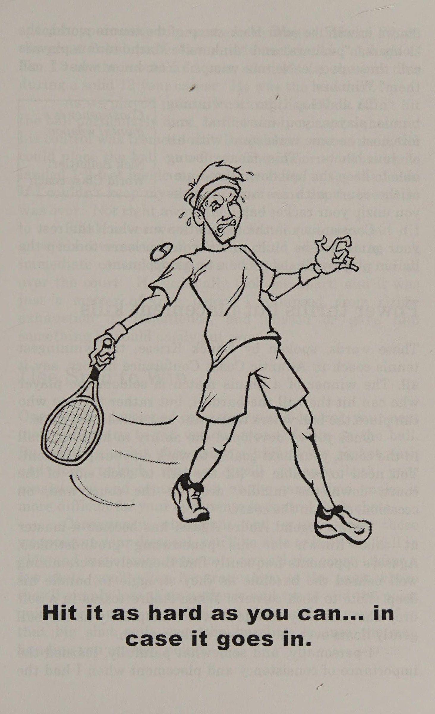
Sử dụng Độ xoáy để thắng Khi bạn đã phát triển tính nhất quán và khả năng kiểm soát, nhiệm vụ tiếp theo của bạn là học cách tạo ra nhiều kiểu xoáy khác nhau lên bóng.
Bằng cách học cách đánh lát bằng cách sử dụng đường vợt từ cao đến thấp và xoáy lên từ thấp đến cao, bạn sẽ nâng cao cả tính nhất quán và khả năng kiểm soát của mình, đồng thời, khiến đối thủ của bạn khó kiểm soát cú đánh của họ hơn.
Tính nhất quán, vị trí và độ xoáy với những vũ khí này theo ý của bạn, bạn sẽ có thể giữ bóng trong cuộc và di chuyển đối thủ của mình xung quanh sân. Sau một vài cú đánh, bạn sẽ thường làm họ thất vọng đến mức mất kiên nhẫn và cố gắng kết thúc trận đấu nhanh chóng bằng một cú đánh đại bác (Big Shot). Sau đó, bạn có thể mỉm cười với chính mình khi cú đánh đại bác (Big Shot) đó cú đánh vượt qua (Passing shot) đường cuối sân hoặc vào lưới, mang lại cho bạn một điểm khác.
Nhưng khi nào thì tôi có thể xé nó ra?
Tôi biết, tôi biết. Bạn đang muốn đánh bóng thật mạnh, nhưng tôi đã cố tình bỏ sức mạnh ra khỏi quá trình phát triển các kỹ năng của mình bởi vì, tại thời điểm này trong cuốn sách, tôi muốn bạn tập trung vào những lĩnh vực khác quan trọng hơn nhiều trong trò chơi của bạn. Trước tiên, tôi muốn bạn học cách chơi thứ mà nhà báo quần vợt nổi tiếng Bud Collins gọi là “cờ thể thao”. Đối với nhiều tay vợt, cách tiếp cận cú đánh đại bác (Big Shot), tiêu diệt nhanh là lối thoát “yếu đuối”. Việc thực hiện một cú vung bóng lớn với hy vọng đánh trúng cú ghi điểm trực tiếp hoàn toàn sẽ dễ dàng hơn nhiều so với việc phát triển kỹ năng và quyết tâm bám trụ và ghi điểm.
Chúng ta sẽ nắm quyền sau, nhưng bây giờ hãy nỗ lực để trở thành một tay vợt ổn định, người có thể thực hiện các cú đánh ở mọi khu vực trên sân. Tôi nghĩ bạn sẽ thấy rằng những vũ khí này sẽ tỏ ra “mạnh mẽ” hơn nhiều so với những “cú hích lớn” thường xuyên. Đây là ba bài tập mà tôi đã thực hiện trong ba mươi năm, sẽ giúp bạn cải thiện cả tính nhất quán và khả năng kiểm soát của mình. Tất cả những gì bạn cần là một người bạn tập luyện và hai hộp đựng bóng tennis.
1. Đặt một lon ở giữa sân, cách đường biên ba feet. Yêu cầu đối tác thực hành của bạn làm điều tương tự. Tập hợp qua lại, mỗi bạn cố gắng đánh vào lon của người kia.
2. Di chuyển các lon vào sân thuận tay, 3 feet bên trong đường cuối sân và 3 feet bên trong đường biên đơn. Một lần nữa, hãy cố gắng đánh vào lon của nhau.
3. Di chuyển các lon đến cùng một vị trí ở phía bên trái của sân và cố gắng làm đổ các lon.
Đúng, ở cấp độ chuyên nghiệp, trò chơi cực kỳ nhanh và sức mạnh là một yếu tố quan trọng, nhưng cho đến khi Venus hoặc Andre gọi bạn tham gia trận đấu, hãy xây dựng trò chơi của bạn xung quanh tính nhất quán và khả năng kiểm soát của Big Shots Are For Wimps 9 và bạn sẽ thấy kết quả của mình được cải thiện ngay lập tức.
BOBBY RIGG'S AIRTIGHT TENNIS - Mặc dù được nhớ đến nhiều nhất sau trận thua Bilhe Jean : | King trong “Trận chiến giữa hai giới” năm 1973—hay nhất .
tôi đã xem trận đấu trong lịch sử quần vợt—Bobby Riggs ' còn hơn cả một kẻ hối hả theo chủ nghĩa sô-vanh mà anh ấy thể hiện: trong bộ phim đó. Trên thực tế, anh ấy là một tay vợt cừ khôi: - một tay vợt!
Riggs thống trị giải nghiệp dư, chuyên nghiệp và !
tôi trò chơi cao cấp. Ông thích nói rằng từ năm 138 tuổi đến 76 tuổi, ông là tay vợt giỏi nhất thế giới ở độ tuổi của mình.
Trên đường đi, anh ấy đã đối đầu và : - đánh bại những huyền thoại như Bill Tilden và Don Budge.
Anh ấy :- được xếp hạng No.
1 thế giới vào năm 1939.
Anh ấy đã thắng!
| Wimbledon một lần và Forest Hills (nay là US Open) - hai lần và ba lần là Nhà vô địch chuyên nghiệp Hoa Kỳ. ;
Riggs là một tay vợt được biết đến với khả năng chạm bóng tinh tế và di chuyển, một tay vợt ngoan cường: một đối thủ cạnh tranh và một chiến lược gia xuất sắc. Anh ấy đã tạo nên sự nghiệp! ' để cú đánh vượt qua (Passing shot) những đối thủ lớn hơn, mạnh hơn.
Của anh : huấn luyện viên, Esther Bartosh, đã dạy anh điều đó từ rất sớm |; - "các trận đấu quần vợt thắng nhờ sai lầm.
' điều đối với Riggs là không bỏ lỡ bóng. Hãy để người khác - tôi đồng chí đánh bóng quá mạnh. Hãy để người kia đánh quả bóng vào lưới.
Hãy để người kia mắc lỗi :. Bài học quan trọng nhất là không phải vậy; - bạn đánh bóng mạnh đến mức nào, nhưng bạn đánh nó ở đâu.
Điều quan trọng :
Riggs đã ghi nhớ những lời của huấn luyện viên của mình. Anh ấy đã gọi tôi phong cách chơi “quần vợt kín gió” này và trong hơn 60 năm đã khiến đối thủ thất vọng vì sự ổn định của anh ấy: thay đổi tốc độ, độ xoáy và trên hết là sự dẻo dai về tinh thần. - Bạn cũng có thể.
Chương 2: Giữ Mọi Thứ Đơn Giản Để Chiến Thắng (Keep It Simple And Win)
Chapter 2: Keep It Simple And Win
Lấy vợt về theo cách này, Giữ cho nó đơn giản và giành chiến thắng, làm theo cách đó, sử dụng một cú giật lớn, một nửa vòng, cuộn cổ tay, khóa cổ tay, thế đứng mở, thế đứng đóng, blah, blah, blah.
Có nhiều lý thuyết về việc đánh một quả bóng tennis hơn là những hương vị ở Baskin-Robbins.
Đánh một quả bóng tennis không hề phức tạp. Trên thực tế, tôi có thể tóm tắt cho bạn điều mà tôi thích gọi là bốn R: ‘k lời khuyên là vô tận: mang vợt của bạn lại thế này Đọc bóng Sẵn sàng vợt Chạy theo bóng Xoay cơ thể của bạn quay lại Bây giờ hãy đợi! Đừng trợn mắt nữa và nghe tôi nói này.
Chắc chắn bạn đang nghĩ, "Không thể đơn giản như vậy được. Công nghệ cao ở đâu?" Chà, đơn giản vậy thôi, và quần vợt không phải là một trò chơi công nghệ cao. Đây là một trò chơi cơ bản và bằng cách tập trung vào những điều cơ bản này, bạn sẽ chuyển sang cấp độ tiếp theo nhanh hơn Martina Navyratilova.
Đọc bóng Hãy loại bỏ những suy nghĩ viển vông và chỉ tập trung vào việc nắm vững các nguyên tắc cơ bản và bạn sẽ đánh bại hầu hết các vấn đề khó đánh vào một vật thể chuyển động, vì vậy nhiệm vụ đầu tiên của bạn là tìm ra xem quả bóng sẽ đi đâu sau khi nó rời khỏi dây của đối thủ. Bạn làm điều này tôi vie Braden bằng cả việc xem và nghe | Quần vợt nổi tiếng thế giới khi quả bóng được đánh bởi giáo viên đánh bại bạn bây giờ.
Hãy xem nó Mặc dù “xem bóng” là lời khuyên đầu tiên mà hầu hết chúng ta từng nhận được, nhưng nó sẽ luôn là lời khuyên quan trọng nhất của trò chơi. Đây cũng là điều khó nhất để theo dõi một cách nhất quán vì có rất nhiều điều đang diễn ra xung quanh chúng ta.
Gió và nắng, chưa kể gái xinh ở sân bên cạnh, đều có thể khiến bạn mất tập trung.
Tôi muốn bạn phát triển “tầm nhìn bóng”, nghĩa là khi điểm bắt đầu, bạn không nhìn gì khác ngoài quả bóng. Đừng lo lắng về việc quan sát đối thủ hoặc vợt của họ. Nếu bạn đang tập trung vào quả bóng, cả hai cuối cùng sẽ xuất hiện trong bức tranh.
Waten it' trom "thời điểm người giao bóng giữ nó trong | Hãy quan sát quả bóng như thể tay anh ta. Khi anh ta ném | /¢ có thể biến mất ở bất kỳ quả bóng nào, hãy giữ yên đầu của bạn và | TM0ment.
hãy theo dõi nó bằng đôi mắt của bạn. Khi anh ta tiếp xúc, hãy xem quả bóng di chuyển theo hướng nào trong thời gian đó của Quốc gia Hoa Kỳ khi nhà vô địch rời khỏi dây của anh ta và ngay lập tức tự nói với mình “thuận tay” hoặc “trái tay”. Chú ý chiều cao của quả bóng khi nó đi qua lưới.
Hãy chú ý đến các đường nối của quả bóng khi nó nảy lên và di chuyển kéo dài từ 2 đến 3 feet vào dây của bạn. Hãy theo dõi nó khi nó bay trở lại phần sân của đối thủ.
Bill Mountford, Giám đốc Quần vợt tại Trung tâm Quần vợt Quốc gia ở Flushing, New York, gợi ý bài tập sau đây để giúp cải thiện kỹ thuật quan sát bóng của bạn.
“Hãy tìm một mục tiêu ở gần bạn và sau đó tìm một mục tiêu ở xa,” Bill nói. "Nhìn chằm chằm vào mục tiêu ở gần, sau đó chuyển ánh mắt sang mục tiêu xa hơn. Sẽ mất một chút thời gian để điều chỉnh lại tầm nhìn của bạn. Bạn càng luyện tập điều này nhiều thì càng mất ít thời gian để điều chỉnh." vs Chuyên gia giảng dạy Scott Ford có một đĩa DVD tuyệt vời trên thị trường có tên Chào mừng đến với Khu vực (Thông tin thêm:
Keep It Simple And Win 13 arete-sports.com) để giúp hình ảnh và tinh thần của chúng ta tập trung vào sân đấu.
Đây là ba bài tập quan sát bóng yêu thích của tôi: iF Đứng ở đường cuối sân và nhờ một người bạn hoặc máy đánh bóng ngẫu nhiên đưa bóng cho bạn từ đường cuối sân ở phía đối diện của sân. Ngay khi có thể, hãy hét lên “thuận tay” hoặc “trái tay”. Cố gắng xác định cú sút trước khi bóng đi qua lưới.
Sau 40-50 quả bóng, đổi bên và trở thành người trung chuyển khi đối tác của bạn cố gắng đón cú đánh của bạn.
2.
Lấy một số quả bóng tennis cũ và bút đánh dấu ma thuật màu đỏ. Viết số lên mỗi quả bóng và nhờ một người bạn đưa quả bóng cho bạn. Khi quả bóng đến gần, đừng cố đánh nó mà hãy gọi số trên quả bóng càng sớm càng tốt.
3.
Bạn và một đối tác bắt đầu trên các đường giao bóng và bắt đầu tập hợp qua lại một cách nhẹ nhàng trong các đường giao bóng.
Sau một vài cú đánh, hãy đưa quả bóng thứ hai vào cuộc và cố gắng giữ cho cả hai tiếp tục.
Điều này sẽ buộc mắt bạn phải cảnh giác và liên tục điều chỉnh. Sau một thời gian, quay trở lại đường cuối sân (Baseline) và tiếp tục bài tập.
Đừng quên lắng nghe bóng Tầm quan trọng của việc lắng nghe bóng hiếm khi được thảo luận nhưng lại là một phần quan trọng trong việc đọc cú đánh của đối thủ. Bằng cách chú ý đến âm thanh khi bóng chạm vào vợt của đối thủ, bạn có thể biết được cú đánh mạnh hay nhẹ, liệu nó có bị đánh với độ xoáy quá mức hay bị đánh sai. Mỗi loại đều có âm thanh đặc trưng riêng.
Một quả bóng được đánh mạnh sẽ phát ra âm thanh giống như một tiếng “bùm” lớn trong khi một quả bóng được đánh nhẹ sẽ nghe giống như một “tiếng chạm”. Một quả bóng được đánh với độ xoáy quá cao sẽ tạo ra âm thanh “rít”” và một cú đánh sai sẽ tạo ra tiếng động khó chịu, không thể nhầm lẫn mà tôi thường so sánh với tiếng móng tay chạy dọc bảng đen.
Bằng cách quan sát và lắng nghe quả bóng, bạn sẽ biết được vị trí cú đánh của đối thủ sẽ nảy lên và nó sẽ làm gì sau khi tiếp đất. Sau đó bạn có thể trả lời cho phù hợp. Ví dụ: nếu bạn thấy quả bóng cách lưới từ 3 feet trở lên và nổ tung như thể bị đánh mạnh, bạn cần phải lùi lại ngay lập tức.
Ngược lại, nếu bóng bật ra khỏi vợt của đối phương cách lưới chưa đầy 3 feet và âm thanh nhẹ hơn, giống như tiếng gõ nhẹ, bạn cần nhanh chóng bắt đầu di chuyển về phía trước.
Nếu bạn nghe thấy âm thanh xoáy—rít—và thấy rằng đối thủ của bạn đã vung vợt với chuyển động từ thấp đến cao, thì họ đã đánh với xoáy lên, nghĩa là khi bóng nảy lên, nó sẽ nhanh chóng nhảy về phía bạn. Nếu bạn nghe thấy tiếng rít và cú xoay chuyển động từ cao đến thấp, điều đó có nghĩa là cắt bóng, điều này sẽ khiến bóng ở mức thấp hoặc thậm chí chết khi chạm sân.
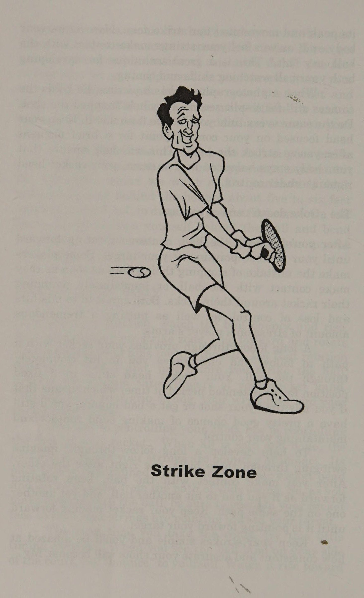
Nếu đối thủ của bạn bắn trượt—ugh...
móng tay trên bảng đen—rất khó để xác định quả bóng sẽ nhảy theo hướng nào sau khi nảy lên.
Nếu có thể, hãy cố gắng tiến về phía trước và thực hiện cú đánh trên không để bạn không phải đối mặt với những xoáy không thể đoán trước mà cú đánh sai tạo ra cho quả bóng.
Nếu bạn không thể tiếp cận bóng kịp thời và phải để nó nảy lên, hãy đến vị trí mà bạn dự đoán nó sẽ tiếp đất càng nhanh càng tốt và chuẩn bị cho việc nó sẽ nhảy theo cách này hay cách khác. Hầu hết thời gian, bạn sẽ có thể phản ứng đủ nhanh để đưa bóng trở lại cuộc chơi.
Tầm quan trọng của việc nghe thấy quả bóng khi nó chạm vào gần đây đã được đưa lên hàng đầu khi Serena Williams và Maria Sharapova, hai tay vợt càu nhàu ầm ĩ khi đánh cú đánh, đã nhận được nhiều lời phàn nàn từ đối thủ Keep It Simple And Win 15 của họ. Ngoài việc làm gián đoạn sự tập trung của họ, đối thủ của họ cho rằng tiếng càu nhàu còn cản trở khả năng nghe thấy bóng được đánh.
Sharapova, người có biệt danh là "Nữ hoàng la hét", càu nhàu lớn đến mức tiếng ồn trên sân của cô từng được một tờ báo lá cải ở Anh đo được là 101 decibel.
Đó gần giống mức âm thanh mà bạn sẽ nghe thấy khi đứng cạnh một chiếc mô tô đang nổ máy.
Lần sau khi chơi, hãy đeo một chiếc bịt tai hoặc nhét một ít bông vào tai. Bạn sẽ ngạc nhiên về tầm quan trọng của việc nghe bóng đối với sự chuẩn bị của bạn.
Sẵn sàng vợt của bạn Khi bạn đã xác định được cú đánh nào bạn sẽ cần thực hiện, hãy chuẩn bị sẵn vợt bằng một cú xoay vai nhanh như chớp.
Một sai lầm lớn của nhiều tay vợt giải trí là chuẩn bị vợt muộn.
Để tránh điều này, tôi yêu cầu học trò của mình đặt vợt vào vị trí càng nhanh càng tốt. Để ghi bàn, hãy cố gắng đưa vợt của bạn vào đúng vị trí trước khi cú đánh của đối thủ đi qua lưới.
Ban đầu, bạn có thể cảm thấy hơi khó xử khi để vợt của mình di chuyển nhanh như vậy. Tay vợt đôi khi sẽ phàn nàn, "Nó làm xáo trộn thời gian của tôi." Nó không "làm xáo trộn" thời gian của bạn mà thay đổi nó.
Tin tôi đi, bạn sẽ có thể điều chỉnh thời gian của mình và khi làm như vậy, bạn sẽ thấy rằng mình sẽ có nhiều thời gian hơn để thực hiện cú đánh của mình.
Không có gì gọi là "quá sớm" trong việc chuẩn bị vợt và nếu vợt của bạn được chuẩn bị sẵn, bạn sẽ luôn có thể thực hiện một cú vung vợt tốt.
Lần tới khi bạn có cơ hội xem Venus hoặc Serena Williams thi đấu, hãy đặc biệt chú ý đến tốc độ chuẩn bị vợt của họ. Khoảnh khắc đối thủ của họ đánh bóng, trông như thể vợt của họ đã bị bắn ra từ một khẩu đại bác.
Cách bạn mang vợt về là tùy thuộc vào bạn. Hầu hết các ngôi sao ngày nay đều sử dụng một số kiểu vung vợt sau theo vòng tròn hoặc “vòng”, cảm thấy rằng nó nhịp nhàng hơn và có lợi cho xoáy lên và sức mạnh. Những huyền thoại như Jimmy Connors và Chris Evert thích động tác lùi thẳng hơn. Tôi khuyên bạn nên sử dụng cả hai, tùy thuộc vào thời gian bạn có để chuẩn bị.
Quan trọng hơn nhiều so với phong cách backswing của bạn là kích thước của backswing của bạn. Việc bạn đưa vợt về phía sau cao và xa như thế nào được xác định bởi hai yếu tố: bạn đang ở đâu trên sân và tốc độ bóng di chuyển về phía bạn. Khi bạn không vội vã, hãy làm theo ba quy tắc chung sau: e Thực hiện động tác vung vợt lùi hoàn toàn ở đường cuối sân (Baseline).
e Thực hiện một nửa cú vung vợt về sau ở vạch giao bóng.
e Không sử dụng động tác vung ngược vào lưới.
Hãy nhớ tính đến tốc độ bắn của đối thủ.
Nếu bạn đang ở điểm cuối sân và đối thủ tung một cú đánh mạnh về phía bạn, bạn có thể không có thời gian để thực hiện một cú vung vợt lùi hoàn toàn. Chỉ cần đưa vợt ra trước người càng nhanh càng tốt. Hướng dây về phía mục tiêu và siết chặt tay cầm để tốc độ của quả bóng đang tới không làm nó dịch chuyển trong tay bạn.
Nếu bạn phải đối mặt với một quả bóng chuyển động chậm ở đường giao bóng, bạn có thể sử dụng động tác backswing lớn hơn để chuẩn bị cho một cú swing lớn hơn. Trên lưới, không sử dụng bất kỳ động tác backswing nào. Đơn giản chỉ cần di chuyển về phía trước và đẩy vợt của bạn về phía quả bóng.
Chạy tới bóng Khi chuẩn bị vợt, bạn nên đồng thời di chuyển chân vì lý do rõ ràng là nếu bạn không tiếp cận được bóng thì bạn sẽ không thể đánh được nó. Tất cả chúng ta đều đã Keep It Simple Và Win 17 đã nghe thấy thuật ngữ “bàn chân hạnh phúc” để mô tả động tác bằng chân. “Hạnh phúc” với tôi có nghĩa là thư giãn và êm dịu. Tôi muốn học trò của mình có đôi chân “tức giận” vì sự tức giận truyền tải sự mãnh liệt và đó là điều bạn cần để có động tác chân tốt.
Jimmy Connors, người giữ kỷ lục giành nhiều danh hiệu đánh đơn nhất (109) trong lịch sử quần vợt nam, đã có đôi chân "tức giận". Tôi sẽ không bao giờ quên lần đầu tiên nghe Jimmy tập luyện. Đúng vậy, tôi đã nói "nghe thấy". Tôi đang đến gần sân đấu nơi Connors đang tập thể dục và nghe thấy một tiếng động chỉ có thể mô tả là âm thanh mà người ta nghe thấy ngay trước một vụ tai nạn ô tô lớn—cao su trên mặt đường, dừng lại, lặp đi lặp lại.
Chân của Connors hoạt động rất chăm chỉ—dừng lại, đẩy ra, di chuyển theo bóng, xoay người—đến nỗi đôi giày thể thao của anh ấy kêu cót két trên sân như lốp của một tay đua kéo! Trông như thể Jimmy đang cố gạt lớp sơn ra khỏi sân tennis. Hồi đó có tin đồn rằng Connors đã tiêu thụ hơn 300 đôi giày mỗi năm.
Đó mới gọi là cao su cháy!
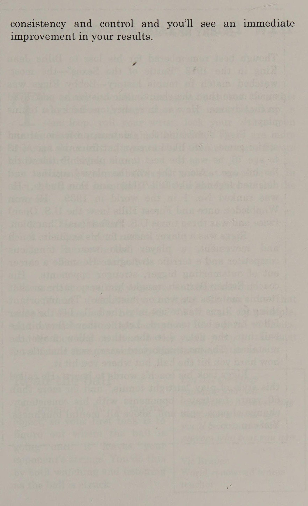
Nhiều lỗi vuốt bóng là do động tác bằng chân kém.
Với ý nghĩ đó, chúng ta sẽ xem xét kỹ hơn về động tác bằng chân trong chương tiếp theo, nhưng bây giờ hãy nhớ rằng mục tiêu cuối cùng của bạn là ở đúng vị trí, với vợt sẵn sàng, trước khi bóng đến.
Tìm vùng tấn công của bạn Yếu tố quan trọng nhất khi đánh bóng tennis là sự chuẩn bị, với mục tiêu là đánh bóng vào “vùng tấn công” của bạn. Đối với hầu hết tay vợt thực hiện động tác đánh nền, điều này có nghĩa là ở phía trước cơ thể, giữa thắt lưng và đầu gối của bạn.
Khi thực hiện cú vô lê, vùng tấn công ở độ cao ngang vai đối với hầu hết tay vợt.
Đây được coi là vùng tấn công của bạn vì ở khu vực này vai, hông, thân và chân của bạn có thể di chuyển vợt và cung cấp lực trong khi cánh tay và cổ tay của bạn điều khiển mặt vợt và do đó, cú đánh của bạn.
Khi bạn có thể đánh bóng bên trong vùng tấn công của mình, việc thực hiện một cú đánh có kiểm soát sẽ dễ dàng hơn nhiều. Nếu bạn bị buộc phải đánh ra ngoài khu vực này, do đối thủ đánh mạnh hoặc chuẩn bị kém, thì cánh tay của bạn phải làm việc nhiều hơn để di chuyển vợt và tạo ra lực. Điều này khiến việc kiểm soát đầu vợt của bạn trở nên khó khăn hơn nhiều và cũng gây thêm căng thẳng cho cánh tay của bạn.
Động tác bằng chân rất quan trọng để đánh bóng trong khu vực tấn công của bạn vì thật không may, đối thủ của chúng ta hiếm khi đánh bóng đúng nơi chúng ta muốn. Với những quả bóng đặc biệt cao, hãy di chuyển xa phía sau cú nảy khoảng 5 đến 6 feet và đợi bóng rơi vào vùng tấn công của bạn. Ở những cú đánh thấp, một lần nữa hãy đặt mình ở phía sau quả bóng và uốn cong đầu gối để bạn có thể tiếp xúc càng gần khu vực tấn công của mình càng tốt.
Xoay cơ thể của bạn Khi bạn đã vào vị trí, hãy quan sát quả bóng nảy lên và bay lên.
Khi nó di chuyển vào vùng tấn công của bạn, hãy bước về phía trước và xoay vai và hông của bạn về phía quả bóng. Hãy để vòng quay đó di chuyển vợt của bạn và ngay trước khi bạn đánh bóng, hãy siết chặt ba ngón tay dưới cùng của bàn tay cầm vợt.
Điều này sẽ giúp bạn cầm vợt chắc chắn, cổ tay chắc chắn và đầu vợt ổn định.
Chìa khóa để kiểm soát các cú đánh của bạn nằm ở việc kiểm soát mặt vợt của bạn.
Khi tất cả đã được thực hiện xong, quả bóng sẽ đi đến nơi dây của bạn hướng vào điểm tiếp xúc. Tốc độ của nó sẽ được xác định bởi tốc độ của đầu vợt của bạn và độ xoáy sẽ đến từ đường vung vợt của bạn. Vì vậy, khi bạn tiếp xúc với quả bóng, hãy đảm bảo định vị mặt vợt của bạn sao cho dây của bạn hướng về phía mục tiêu.
Lần tới khi bạn ra sân, hãy thử bài tập tính thời gian nhỏ này: Khi bạn nhìn thấy quả bóng tiếp đất về phía sân của mình, hãy nói "nảy lên" với chính mình. Hãy xem nó vươn tới đỉnh cao của Keep It Simple And Win 19 và di chuyển vào vùng tấn công của bạn. Bây giờ hãy xoay cơ thể của bạn và khi bạn cảm thấy dây của mình tiếp xúc với quả bóng, hãy nói "đánh". Đây là một kỹ thuật tuyệt vời để phát triển cả kỹ năng quan sát bóng và thời gian của bạn. Khi một nhiếp ảnh gia chụp ảnh, anh ta giữ yên máy ảnh trong một phần giây sau khi chụp ảnh.
Làm tương tự mỗi khi bạn đánh bóng tennis. Giữ đầu của bạn tập trung vào điểm tiếp xúc trong giây lát sau khi bạn đánh bóng.
Điều này sẽ giúp đảm bảo rằng cơ thể của bạn được giữ thăng bằng và do đó, đầu vợt của bạn vẫn được kiểm soát.
Cú đánh không kết thúc khi tiếp xúc Sau khi bạn đánh bóng, tiếp tục xoay người về phía trước cho đến khi vợt chỉ vào mục tiêu của bạn. Một số tay vợt mắc sai lầm khi dừng cú vung vợt ngay khi tiếp xúc với bóng hoặc ngay lập tức quấn vợt quanh cổ. Cả hai đều có thể dẫn đến đánh sai và mất kiểm soát, cũng như gây áp lực rất lớn lên cánh tay của tay vợt.
Khoảng thời gian theo dõi dài cung cấp cho vợt của bạn một đường đi theo và khuyến khích bạn đánh bóng hoàn toàn. Đầu vợt của bạn giữ ở một vị trí cố định trong một khoảng thời gian dài, điều đó có nghĩa là nếu bạn đánh sai thời điểm hoặc bị nảy không tốt, bạn vẫn có cơ hội khá tốt để tiếp xúc chắc chắn và duy trì khả năng kiểm soát của mình.
Để giúp phát triển khả năng theo dõi lâu dài, hãy tưởng tượng vung qua ba quả bóng, quả bóng này nối tiếp quả bóng kia.
Sau khi bạn tiếp xúc với quả bóng, tiếp tục xoay người về phía trước như thể bạn phải đánh một quả bóng khác và một quả bóng khác trên cùng đường đi. Giữ vợt của bạn di chuyển về phía trước cho đến khi nó hướng về phía mục tiêu của bạn.
Hãy giữ cho các nét vẽ của bạn đơn giản và bạn sẽ ngạc nhiên trước mức độ ổn định và chính xác của các cú đánh của mình. My Strike Zone Keep It Simple And Win 21 Wife là một ví dụ hoàn hảo cho cách tiếp cận này. Kelley là một trong những tay vợt trẻ hàng đầu của đất nước trong suốt những năm 70.
Khi thực hiện các cú đánh tiếp đất, cô ấy đưa vợt tương đối thẳng về phía sau và vung vợt từ thấp lên cao, với cổ tay chắc chắn.
Không có cách cầm bóng quá mức, cú xoay bóng lớn hoặc thế đứng kiểu mới.
Kelley có động tác chân tuyệt vời, hầu như bắt được mọi quả bóng trong vùng tấn công của cô ấy và dứt điểm hướng về phía mục tiêu.
Cô ấy có một cú đánh rất cơ bản, nhưng có khả năng căn thời gian và khả năng kiểm soát đầu vợt tuyệt vời. Kết quả là, cô ấy đánh ổn định hơn, chính xác hơn và đối với những độc giả bị ám ảnh bởi quyền lực của tôi, cô ấy đánh mạnh hơn hầu hết đàn ông.
Đọc, sẵn sàng, chạy và xoay. Hãy tập trung vào bốn chữ R và ngay lập tức bạn sẽ đánh bóng tốt hơn. Tôi đảm bảo điều đó! a, Br OREO: Aero, SP Apert nếm Py, eu i - _ c a int x i ; | tôi ốm Ls Y a é f Cala F _ yy ft =.
Tôi tôi tôi E
Chương 3: Ba Bí Mật Tiêu Diệt 'Đôi Chân Bốc Mùi' (Three Secrets To Defeat Stinky Feet)
Chapter 3: Three Secrets To Defeat Stinky Feet
Greg, Ba bí quyết để đánh bại bàn đôi chân lười di chuyển (Stinky Feet) hám, bạn có những cú đánh đẹp nhưng chân của bạn lại có mùi hôi,” huấn luyện viên đại học cũ của tôi, Norm Copeland, hét lên khi kết thúc buổi tập đầu tiên ở trường đại học của tôi.
Sau khi suy nghĩ vài phút và kiểm tra nhanh đôi chân của mình, tôi nhận ra rằng Norm không đề cập đến mùi thơm tỏa ra từ đôi giày tennis của tôi mà là việc chúng không cử động được.
Quần vợt thường được coi là một trò chơi của các cú đánh, nhưng Norm biết rằng đó là một trò chơi của các bước và những gì bạn làm với các bước đó thường sẽ không quyết định chất lượng cú đánh của bạn.
Mặc dù cơ chế tạo âm thanh chắc chắn rất quan trọng, nhưng chúng có ích gì nếu bạn không thể vào vị trí để thực hiện chúng? Khi bạn đã nắm vững các kỹ thuật cơ bản của trò chơi, tiếp theo bạn phải phát triển động tác bằng chân của mình.
Động tác bằng chân tốt thường tương đương với việc chọn vị trí thích hợp, điều này cho phép bạn thực hiện một cú đánh mượt mà và có kiểm soát.
Trong môn quần vợt, không được đánh cú đánh phía sau hoặc phía trên cơ thể bạn.
Trong trường hợp _ đó, bạn phải luôn đặt mình ở vị trí đủ xa về phía sau và bên cạnh quả bóng để khi đến thời điểm vung vợt, bạn phải tiến một bước về phía trước và hơi đưa tay sang một bên để đánh.
Động tác bằng chân là phần quan trọng nhất của trò chơi. Đó là tất cả mọi thứ.
Brad Gilbert Cựu chuyên gia du lịch và huấn luyện viên của Andre Agassi và Andy Roddick Khi đánh từ vị trí này, chuyển động quay và chuyển trọng lượng của cơ thể bạn sẽ cung cấp lực cũng như hấp thụ chấn động khi đánh bóng.
Khi bạn mất vị trí, khuỷu tay, cổ tay và vai của bạn phải cung cấp lực và hấp thụ chấn động. Đó là một trong những lý do tại sao rất nhiều tay vợt giải trí bị khuỷu tay quần vợt.
Cánh tay của họ đang làm việc quá sức để bù đắp cho việc định vị kém.
Vị trí thích hợp là yếu tố quan trọng đối với cú đánh âm thanh và quá trình định vị bắt đầu trước khi đối thủ của bạn thực hiện cú đánh của họ. Nó bắt đầu với vị trí sẵn sàng của bạn.
Bạn đã thực sự “sẵn sàng” chưa?
Nhiều tay vợt, khi chờ đợi cú đánh của đối thủ, áp dụng cái mà tôi gọi là tư thế sẵn sàng “chờ xếp hàng chờ xem phim”. Họ đứng hoàn toàn bất động, cánh tay buông thõng hai bên và gót chân đặt phẳng trên mặt đất. Mặc dù những tay vợt này có thể đã sẵn sàng xem bộ phim bom tấn mới nhất nhưng họ lại chưa sẵn sàng phản ứng nhanh trước một quả bóng tennis được đánh trúng.
Khi bàn chân của bạn đặt vững chắc trên mặt đất, có vẻ như toàn bộ trọng lượng cơ thể của bạn đang cố gắng đẩy bạn xuống sàn. Nếu bạn nặng 180 pound và đang đứng yên, hãy tưởng tượng bạn có một vật nặng 180 pound trên đầu.
Khi đối thủ của bạn thực hiện cú đánh của anh ta, chuyển động đầu tiên của bạn sẽ không phải là phản ứng về phía quả bóng mà là đẩy trọng lượng đó ra khỏi đầu để bạn có thể bắt đầu di chuyển.
Thuật ngữ công nghệ cao cho việc này là “không có trọng số”. Với chưa đầy hai giây để phản ứng, vào vị trí và thực hiện cú đánh của bạn, việc phải “giảm trọng lượng” cơ thể sẽ lãng phí thời gian quý báu. Thay vào đó, tôi muốn bạn sử dụng tư thế sẵn sàng chủ động.
Đứng với cả hai tay cầm vợt ra phía trước cơ thể. Đầu gối của bạn phải rộng bằng vai Ba bí quyết đánh bại bàn đôi chân lười di chuyển (Stinky Feet) thối cách nhau 25 và hơi cong. Hãy kiễng chân và giữ cho đôi chân của bạn di chuyển, sang bên kia hoặc nảy lên nhảy xuống. Đây có thể là lời khuyên quen thuộc nhưng lời khuyên đó không thể lặp lại đủ.
Thực hiện một bước tách mạnh Ngay trước khi vợt của đối thủ tiếp xúc với bóng, bạn phải thực hiện một trong những yếu tố quan trọng nhất của trò chơi, chắc chắn là, bước tách. Đây là một bước nhảy nhỏ, cách mặt đất khoảng 2 đến 3 inch, được tính thời gian sao cho bạn ở trên không khi đối thủ đánh bóng. Khi ở trên không, bạn sẽ biết cú đánh của đối thủ sẽ đi đến đâu và có thể bắt đầu chuẩn bị.
Geoff Norton, một trong những chuyên gia giảng dạy hàng đầu thế giới đã yêu cầu học trò của ông thực sự nói to từ “tách ra”, vào thời điểm thích hợp, để nhắc nhở bản thân tách bước trước mỗi cú đánh của đối thủ. Tất cả—tôi nhắc lại, tất cả—những tay vợt giỏi chia nhau bước trước mỗi cú đánh!
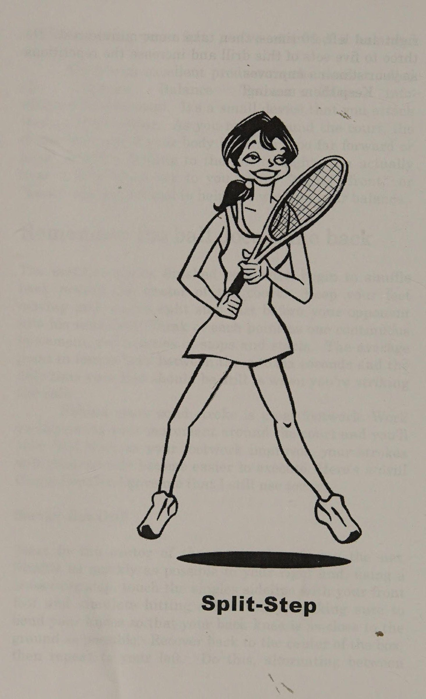
Khi bạn tiếp đất, dù ở đường cuối sân hay trên lưới, hãy đảm bảo giữ hai chân cách nhau từ một đến hai feet để bạn có thể bật ngón chân ngay lập tức. Xoay vai và hông về phía bóng trong khi chuẩn bị vợt cùng lúc. Di chuyển về phía quả bóng càng nhanh càng tốt. Khi bạn đến gần vị trí đánh của mình, cách quả bóng nảy khoảng 5 feet, hãy thực hiện các bước của bạn ngắn hơn và thường xuyên hơn.
Những bước ngắn này không chỉ giúp bạn điều chỉnh tư thế mà còn giúp cơ thể bạn giữ thăng bằng.
Việc giữ thăng bằng cho phép bạn thực hiện cú đánh cũng như thực hiện bất kỳ điều chỉnh nào vào giây cuối cùng trong trường hợp bạn nảy không tốt hoặc đánh giá sai bóng. Để kiểm tra khả năng giữ thăng bằng sau khi hoàn thành cú đánh tiếp theo, hãy cố gắng giữ vị trí kết thúc của bạn. Nếu có thể, bạn không cần di chuyển chân, nghĩa là bạn đã thực hiện được một cú đánh cân bằng.
Có một sản phẩm tuyệt vời trên thị trường có tên là Ultimate Balance Trainer (Thêm __ thông tin: Ultimatebalance.com). Đó là một thiết bị nhỏ mà bạn gắn vào mũ hoặc tấm che mặt. Khi bạn di chuyển quanh sân, thiết bị sẽ cho bạn biết liệu cơ thể bạn có nghiêng quá xa về phía trước hoặc phía sau hay nó đang trôi sang trái hoặc phải. Bạn thực sự nghe thấy một giọng nói nhỏ nói với bạn, “trái”, “phải”, “phía trước” hoặc “phía sau”. Đây là một công cụ tuyệt vời giúp bạn kiểm soát số dư của mình.
Hãy nhớ rằng bóng sẽ quay trở lại. Thời điểm bạn thực hiện xong cú đánh của mình, hãy bắt đầu di chuyển về phía giữa sân.
Giữ chân bạn di chuyển và một lần nữa, tách bước ngay trước khi đối thủ thực hiện cú đánh tiếp theo. Hãy coi mỗi điểm là một chuyển động liên tục, không phải là một chuỗi các điểm dừng và bắt đầu. Điểm trung bình trong quần vợt kéo dài từ ba đến sáu giây và thời điểm duy nhất mà chân bạn phải đứng yên là khi bạn đánh bóng.
Đằng sau mỗi cú đánh rắn chắc là động tác chân tuyệt vời. Hãy nỗ lực cải thiện chuyển động của bạn xung quanh sân và bạn sẽ sớm nhận ra rằng, khi động tác bằng chân của bạn được cải thiện, các cú đánh của bạn sẽ trở nên dễ thực hiện hơn một cách thần kỳ. Đây là bài tập mà Huấn luyện viên Copeland đã đưa cho tôi và tôi vẫn sử dụng cho đến ngày nay.
Mũi khoan hộp giao bóng Bắt đầu ở giữa hộp giao bóng hướng về phía lưới.
Di chuyển sang bên phải của bạn càng nhanh càng tốt và sử dụng bước bắt chéo người, chạm vào đường biên đơn bằng chân trước của bạn và mô phỏng cú vô lê thấp, đảm bảo uốn cong đầu gối của bạn sao cho đầu gối sau của bạn càng gần mặt đất càng tốt. Khôi phục trở lại giữa hộp, sau đó lặp lại ở bên trái.
Thực hiện luân phiên ba bí quyết đánh bại đôi chân lười di chuyển (Stinky Feet) 27 phải và trái, 10 lần, sau đó nghỉ một phút. Thực hiện ba đến năm hiệp bài tập này và tăng số lần lặp lại khi sức chịu đựng của bạn được cải thiện.
Giữ họ tiếp tục di chuyển} Ba bí quyết chia bước để đánh bại bàn đôi chân lười di chuyển (Stinky Feet) thối 29 i MỘT TRUYỀN NGUYỆN BÀN CHÂN VUI VẺ | Jenny là một phụ nữ rất giàu có và đã trưởng thành; quen với việc được giao bóng.
Cô ấy ở trong những khách sạn tốt nhất, ăn ở những nhà hàng sang trọng nhất và chỉ đi du lịch hạng nhất.
Jenny cũng thích đánh bóng tennis. duy nhất tôi vấn đề là cô ấy không thích chạy. Như với cô ấy; Cuộc sống ngoài sân đấu, Jenny cảm thấy bóng nên được đưa cho cô để đánh. Điều này, kết hợp với việc cô ấy hơi nặng nề, đã khiến cho chuyển động trở thành tôi vấn đề liên tục trong các bài học của chúng tôi.
Jenny có khiếu hài hước tuyệt vời và chúng tôi thường nói đùa về việc cô ấy không quan tâm đến việc chạy theo quả bóng.
Tôi sẽ đánh cô ấy để cô ấy phải di chuyển nhiều nhất chỉ là một hoặc hai bước.
Bất cứ điều gì xa hơn !
tôi điều đó không thể thực hiện được.
Nếu tôi tình cờ đánh trúng một quả ngoài tầm với của cô ấy, cô ấy sẽ nhìn tôi một cách giễu cợt và nói, "Bây giờ Greg, anh biết là tôi sẽ không tranh cử thứ đó mà." Nó đã trở thành một trò đùa đang diễn ra (hoặc thiếu nó).
Một ngày nọ Jenny đến sân đấu của tôi và thậm chí cả ; một bước sang trái hoặc phải là quá nhiều để hỏi. Sau khi nhìn Jenny đứng yên chín phát liên tiếp, tôi nhìn cô ấy bằng ánh mắt bị xúc phạm và nói, "Vì Chúa, Jenny, em có muốn anh qua đó và đánh cho em luôn không?" l Jenny dừng lại, suy nghĩ một giây, rồi với ánh mắt tinh nghịch, mỉm cười và nói: "Cái đó sẽ tốn thêm bao nhiêu?" ee mee tôi tôi mee tôi tôi ee tôi tôi tôi meee ms ee et ee
Chương 4: Lộ Trình Tiến Lên Cấp Độ Kế Tiếp (Your Roadmap To The Next Level)
Chapter 4: Your Roadmap To The Next Level
Sau Lộ trình lên cấp độ tiếp theo của bạn, ba trận trước đó—một trận thua liên tiếp ở vòng đầu tiên của giải vô địch câu lạc bộ.
Đây sẽ là năm đột phá của bạn.
Không còn những lỗi ngớ ngẩn không thể cưỡng lại, mất tập trung hay mệt mỏi ở hiệp thứ ba. Bạn đã ra sân đấu với Bobby, một tay vợt mà bạn thường xuyên đánh bại.
Bạn đã tự tin mở nắp một lon bóng mới và bắt đầu con đường đến với chiếc cúp.
Một giờ sau, bạn rời sân với tư cách là một kẻ thua cuộc, và tất cả những gì bạn phải thể hiện cho nỗ lực của mình là một cánh tay bị đau, một lon bóng đã qua sử dụng và một nhận xét "trận đấu hay" từ Bobby. Tệ hơn nữa, bạn biết điều Bobby thực sự muốn nói là "Ha!
Tôi thi đấu ít hơn bạn hai năm và tôi đã thắng." Không cần phải nói, bạn đang bốc khói. Bạn lướt qua danh sách những lời bào chữa thông thường len lỏi vào tâm trí mọi người ngay sau một trận thua tồi tệ: “Mặt trời chiếu vào mắt tôi, vợt của tôi bị căng quá lỏng, anh ta gian lận, tay vợt chuyên nghiệp của tôi bốc mùi,” blah, blah, blah.
Mặc dù những lời giải thích hợp lý này có thể tạm thời khiến bạn cảm thấy dễ chịu hơn, nhưng khi bạn tắm xong, lấy vợt từ thùng rác và lên xe để về nhà, bạn buộc mình phải đối mặt với một sự thật đáng lo ngại.
Trong ba năm qua, trò chơi của bạn không được cải thiện một chút nào. Bạn vẫn không thể giữ bóng trong cuộc một cách nhất quán, trái tay của bạn rất tệ và Chúa cấm bạn bỏ lỡ quả giao bóng đầu tiên, vì quả giao bóng thứ hai của bạn. . .à, nói thế là đủ rồi.
Một mùa hè nữa đã kết thúc, giống hệt như cách mà tất cả chúng ta đều đã trải qua những giai đoạn thất vọng khi cảm thấy rằng trò chơi của mình đang ở trạng thái trung lập. Quần vợt là một trò chơi lén lút vì sự cải thiện ban đầu có thể đến nhanh chóng. Trong nhiều trường hợp, một người vừa mới cầm vợt và đã học được một vài bài học có thể tập luyện qua lại một chút, thực hiện 50% số cú giao bóng của mình và bắt đầu chơi trò chơi.
Sự "cải thiện tức thời" này thật quyến rũ nhưng cũng có tính lừa đảo.
Những tay vợt mới thường cảm thấy rằng họ sẽ liên tục tiến bộ với tốc độ này và trong vòng sáu tháng, họ sẽ có chỗ trống trên tấm áo choàng cho các danh hiệu của mình.
Mặc dù lúc đầu, tiến độ có thể đến nhanh chóng, nhưng để chuyển sang các cấp độ cao hơn của trò chơi, bạn cần phải làm nhiều việc hơn là đến sân một hoặc hai lần một tuần và chơi một vài hiệp thông thường.
Trong trường hợp đó, tôi rất vui khi nói rằng chỉ cần một chút nỗ lực và một kế hoạch tốt, mọi tay vợt đều có thể tiến bộ. Dưới đây là một số phương pháp đã được chứng minh qua thời gian, chắc chắn sẽ giúp bạn leo lên bậc tiếp theo trên con đường đạt đến tiềm năng của mình.
Hãy nhìn kỹ vào trò chơi của bạn Bạn làm tốt điều gì? Bạn làm gì kém thế? Nếu bạn giảm được 10 pound, liệu bạn có di chuyển quanh sân tốt hơn không? Tôi đã đưa vào phần tự đánh giá rất ngắn gọn trong Phụ lục B, tập trung vào các lĩnh vực chính của trò chơi. Đừng lo lắng, nó ngắn gọn và đi thẳng vào vấn đề. Bạn sẽ mất tất cả ba phút để hoàn thành. Tôi đã điền vào bên dưới làm ví dụ.
Viết một hoặc hai câu trong mỗi phần đề cập đến điểm mạnh và điểm yếu của bạn. Hãy thành thật với chính mình và tập trung vào cả trò chơi thể chất lẫn tinh thần của bạn.
Chỉ cần nghĩ về trò chơi của bạn và ghi lại một vài ghi chú là bước đầu tiên giúp bạn trở thành tay vợt giỏi hơn. Hãy dành thời gian để làm điều đó!
Lộ trình của bạn lên cấp độ tiếp theo 33 Lộ trình của bạn lên cấp độ tiếp theo.
KỸ NĂNG TENNIS KỸ NĂNG Tên: Greg Moran Viết một vài câu ngắn gọn trong mỗi phần. Điều này là vì lợi ích của riêng bạn, vì vậy bạn có thể biết mình cần phải cải thiện lĩnh vực nào.
Bảng 4-1 | Không nhất quán và thường xuyên muộn. Tôi cần phải cố gắng tránh xa quả bóng.
Cú cắt trái tay thì tốt nhưng xoáy lên cần nhiều thao tác.
Cú vô lê thuận tay rất chắc chắn nhưng cú vô lê trái tay lại sụp đổ khi bị áp lực.
Kiên định nhưng cần nhắc nhở bản thân Volleys Overhead phải ngẩng cao đầu khi tiếp xúc.
aes Slice là cú giao bóng tốt nhất của tôi. Topspin cần phải hoạt động, cũng như vị trí của tôi.
ea a Tn Cte RAET PSR & Eel SETAE Is. 29 2. Ga Cần tiến lên nhận bóng Trả giao bóng : thêm.
Nhanh nhẹn, sức mạnh và sức bền Thể lực: sức mạnh, sự nhanh nhẹn, sức bền và sự dẻo dai.
pth Tính linh hoạt cần được cải thiện.
Trò chơi trí óc: Khả năng tập trung, kiềm chế nóng nảy, Tâm trí thường xuyên lang thang. Tôi chống trả khi chơi thường có thể giữ bình tĩnh trước Brey một cách kiểm tra. Nỗ lực trong thực tế có thể lớn hơn.
nỗ lực nhất quán cả trong tôi luyện tập và vui chơi.
Nếu bạn cảm thấy thoải mái khi làm như vậy, hãy yêu cầu một trong những người cùng chơi đánh giá trò chơi của bạn.
Hầu hết tay vợt thích nói về quần vợt và sẽ vui lòng cho bạn biết suy nghĩ của họ—một số thậm chí không cần bạn hỏi. Điều này sẽ cung cấp cho bạn Lộ trình lên cấp độ tiếp theo 35, giúp bạn biết rõ mình đang ở đâu và bạn cần làm gì để đến được nơi mình muốn.
Bạn không chơi quần vợt để lấy lại vóc dáng.
Bạn có đủ thể lực để chơi quần vợt Mặc dù các cú đánh âm thanh chắc chắn rất quan trọng nhưng chúng sẽ ít có tác dụng nếu bạn không thể vào vị trí hoặc không có đủ năng lượng để thực hiện chúng. Sẽ rất khó để lấy lại chi phí cao nếu bạn đang mang thêm 15 pound bánh pizza và kem quanh eo.
Khi trò chơi của bạn được cải thiện, mức độ thể lực của bạn cũng phải như vậy. Điểm và trận đấu trở nên dài hơn và vất vả hơn và chỉ chơi game vài lần một tuần sẽ không đủ để giúp bạn giữ được phong độ tốt nhất. Bằng cách thực hiện các bài tập bổ sung ngoài sân đấu, bạn sẽ có thể đáp ứng các yêu cầu mà việc cải thiện lối chơi của bạn yêu cầu, cũng như giảm bớt khả năng bạn gặp phải chấn thương có thể khiến bạn phải rời sân trong một thời gian dài.
Khi tôi đề nghị với học sinh của mình rằng họ nên tập luyện ngoài sân, các học sinh lớp dưới thường nhìn tôi như thể tôi mất trí và người lớn chỉ nói, "Đây là bài tập của tôi, và tôi may mắn tìm được thời gian để chơi quần vợt, chứ chưa nói đến các bài tập ngoài sân." Xin lỗi, nhưng tôi không mua nó.
Đúng là chúng ta đang sống trong một xã hội quá bận rộn, nơi hầu hết chúng ta dường như luôn bị áp lực về thời gian. Tuy nhiên, nếu bạn quan tâm đến việc cải thiện trình độ chơi quần vợt của mình, chưa kể đến chất lượng cuộc sống, bạn cần phải dành thời gian.
Dậy sớm nửa tiếng, xem tivi ít hơn một chút hoặc nghỉ trưa ngắn hơn. Tất cả chúng ta đều bận rộn, nhưng điều gì quan trọng hơn sức khỏe của bạn?
Thể dục thời đại vũ trụ Nếu bạn cho rằng quần vợt đã trở thành công nghệ cao, thì ngành thể hình đã khiến nó trông như thời tiền sử. Bước vào bất kỳ trung tâm thể dục nào trong nước, bạn sẽ có cảm giác như đang bước vào trạm vũ trụ của NASA.
Có những cỗ máy vi tính hóa trông kỳ quặc được thiết kế để hoạt động mọi bộ phận trên cơ thể bạn. Chúng tôi được biết rằng họ sẽ cho chúng tôi cánh tay như Arnold và cơ bụng như Anna Kournikova.
Chúng rất phong cách, có màu sắc tươi sáng và đèn huỳnh quang.
Một số thậm chí còn nói chuyện với bạn, cho bạn biết bạn đang đi quá nhanh hay quá chậm, bạn đã thực hiện bao nhiêu lần hoặc bạn phải đi bao nhiêu vòng.
Thậm chí có lần tôi còn bị máy mắng vì để ra mồ hôi sau khi cởi ra.
Đối với người bình thường, thể dục đã trở nên khó hiểu như cơ học lượng tử, tuy nhiên câu hỏi vẫn là: “Tôi nên làm gì và tôi nên làm điều đó thường xuyên như thế nào?” Sammy Samson, cựu vô địch thể hình tự nhiên thế giới và huấn luyện viên cá nhân cho nhiều người nổi tiếng và vận động viên chuyên nghiệp nói: “Bạn không cần phải đến phòng tập thể dục công nghệ cao hoặc tập luyện quá nhiều để cải thiện quần vợt và sức khỏe của mình.
Chỉ cần thêm một số hoạt động ngoài sân vào quá trình tập luyện quần vợt thường xuyên của bạn sẽ khiến bạn cảm thấy khỏe mạnh hơn về mặt thể chất và tâm lý, cả trong và ngoài sân đấu. Nếu bạn không chăm sóc cơ thể của mình, bạn sẽ sống ở đâu?
Anonymous Sammy nói rằng hãy tập trung vào những lĩnh vực chính sau: 1. Sức bền 2. Nhanh nhẹn 3. Tính linh hoạt và sức mạnh Lộ trình của bạn để đạt đến cấp độ tiếp theo 37 Sức bền Một trận đấu quần vợt bao gồm khoảng 300-500 lần chạy nước rút ngắn. Để chuẩn bị cho điều đó, bạn cần một thứ gì đó cho trái tim mình có thể mô phỏng những đợt tăng tốc ngắn này.
Chạy bộ cũng được, mặc dù bạn có thể thấy khó khăn ở các khớp, đặc biệt nếu bạn đã ngoài 30 tuổi.
Bơi lội và đạp xe cũng rất tuyệt.
Cho dù bạn chọn hoạt động nào, hãy nhớ kết hợp với các hoạt động chạy nước rút ngắn. Ví dụ: chạy bộ trong một phút và sau đó chạy nước rút trong 10 giây trước khi tiếp tục chạy bộ. Đạp xe trong một phút, sau đó chạy nước rút trong 15 giây.
Bơi chậm một vòng và chạy nước rút ở vòng tiếp theo. Điều này phản ánh công việc mà trái tim bạn phải làm trên sân tennis.
Sự nhanh nhẹn Cho đến ngày nay, tôi chưa tìm được bài tập nhanh nhẹn nào tốt hơn việc nhảy dây.
Đây là một bài tập luyện tim mạch tuyệt vời và cũng giúp tăng cường cơ bắp của bạn. Bạn có thể nhảy dây hầu như ở bất cứ đâu và một sợi dây bằng nhựa có đính cườm có giá chỉ khoảng 3 đô la.
Nếu đầu gối của bạn hơi mềm, hãy tránh xa các bề mặt cứng và nhảy trên sàn có đệm hoặc trải thảm.
Bắt đầu từ từ và bắt đầu nhảy bằng cả hai chân.
Di chuyển sợi dây bằng cổ tay của bạn, chỉ nhảy cách mặt đất ba đến bốn inch và tiếp đất bằng đầu bàn chân của bạn.
Đây là chương trình nhảy dây đơn giản để bạn bắt đầu.
Cả hai chân: 10 lần Chân phải: 10 lần Chân trái: 10 lần Đổi chân: 10 lần Tăng dần số lượng khi kỹ thuật và thể lực của bạn được cải thiện.
Một bài tập nhanh nhẹn tuyệt vời khác là nhảy vợt. Đặt vợt của bạn xuống đất và đứng ở phía bên phải của vợt, cạnh cán vợt. Hai chân cách nhau khoảng 12 inch, nhảy sang một bên qua tay cầm và quay lại.
Lặp lại điều này 20 lần rồi nghỉ ngơi.
Tiếp theo, đặt vợt trước mặt bạn và nhảy tới lui qua cán vợt 20 lần. Tăng cường sức chịu đựng của bạn để bạn có thể tăng số hiệp hoặc số lần lặp lại mỗi hiệp cho mỗi bài tập. Hãy chắc chắn để kéo dài bắp chân của bạn sau những bài tập này.
Leo ra khỏi máy chạy bộ và tham gia lớp học Quần vợt tim mạch Có một hoạt động thể dục mới trong thị trấn và nó được gọi là Quần vợt tim mạch. Được tiến hành trên sân tennis bởi các chuyên gia quần vợt được chứng nhận, mỗi lớp bao gồm một phần khởi động ngắn: khởi động, một bài tập tim mạch trong đó bạn di chuyển và liên tục đánh bóng tennis cũng như giai đoạn hạ nhiệt.
Với nhạc nền vui nhộn, Cardio Tennis là một bài tập luyện tuyệt vời, nhiều niềm vui và sẽ cải thiện cả sức bền cũng như sự nhanh nhẹn của bạn. (Thông tin thêm:
Các lớp học Cardio Tennis trong khu vực của bạn có thể được tìm thấy tại cardiotennis.com.) Tính linh hoạt và sức mạnh Vài năm trước, một trong những học sinh của tôi đã dạy tôi một bài học yoga riêng kéo dài một giờ. Vận động viên cử tạ trong tôi nói rằng yoga dành cho những người "yếu đuối", nhưng tôi đã có thể đẩy sự ngu dốt đó sang một bên và thử sức. Sáu mươi phút sau, suy nghĩ của tôi về thể dục đã thay đổi mãi mãi. Các bài tập yoga đã cải thiện đáng kể khả năng giữ thăng bằng, sức mạnh và tính linh hoạt của tôi. Tôi cũng thoải mái hơn, có khả năng tập trung tốt hơn và ít bị chấn thương hơn.
Yoga, giống như quần vợt, có thể tập ở mọi lứa tuổi, #rom 4 đến 104, và ngày nay có hơn 15 triệu người tập chỉ riêng ở Hoa Kỳ! Không tốn kém, liệu Lộ trình lên cấp độ tiếp theo 39 của bạn có thể được thực hiện ở bất cứ đâu và bởi bất kỳ ai không. Maria Sharapova, Serena Williams và John McEnroe nằm trong số những người đã leo lên thảm tập yoga như một phần của chương trình tập luyện của họ.
y Tôi nhận thấy rằng Ashtanga yoga mang lại sự kết hợp hoàn chỉnh nhất giữa sức mạnh, sự linh hoạt và sức chịu đựng (Thông tin thêm: yoga.com).
Lời cảnh báo: Giống như bất kỳ hình thức tập thể dục nào, một số tư thế yoga có thể khá khó và không nên thử nếu không có giáo viên có trình độ.
Tôi khuyên bạn nên tham gia một lớp học yoga ở khu vực của bạn do một người hướng dẫn được chứng nhận tổ chức để có sự khởi đầu thích hợp.
Tìm một chuyên gia giỏi và học một số bài học The Great Big Bill Tilden chưa bao giờ học quần vợt.
Tuy nhiên, đối với hầu hết chúng ta, mọi việc sẽ dễ dàng hơn nếu có một chút trợ giúp trong quá trình thực hiện.
Một vài buổi học với một chuyên gia giảng dạy giỏi có thể giúp ích rất nhiều cho việc bắt đầu trò chơi của bạn.
Khi tìm kiếm người hướng dẫn, hãy tìm người được công nhận bởi một trong hai tổ chức giảng dạy chính— Cơ quan đăng ký quần vợt chuyên nghiệp (Thông tin thêm: ptrtennis.org) hoặc Hiệp hội quần vợt chuyên nghiệp Hoa Kỳ (Thông tin thêm: uspta.org).
Để đạt được chứng nhận của một trong hai tổ chức này, ứng viên phải cú đánh vượt qua (Passing shot) các bài kiểm tra nghiêm ngặt: các bài kiểm tra của sân đấu bao gồm tất cả các khía cạnh của việc chơi và dạy trò chơi cũng như khía cạnh kinh doanh của ngành. Nếu một chuyên gia có một trong những chứng chỉ này—một số có cả hai—bạn có thể tương đối chắc chắn rằng họ biết kiến thức của mình.
Hãy truy cập trang web của các tổ chức và bạn có thể tìm thấy một chuyên gia được chứng nhận trong khu vực của mình.
Khi bạn gặp chuyên gia của mình lần đầu tiên, chắc chắn anh ấy sẽ hỏi bạn hai câu hỏi chính: "Mục tiêu quần vợt của bạn là gì?" và “Bạn có thể chơi thường xuyên như thế nào?” Cho anh ấy thấy bản tự đánh giá của bạn, cho anh ấy biết về mục tiêu của bạn và bạn có thể dành bao nhiêu thời gian để cải thiện. Đối với một số tay vợt quần vợt, mục tiêu là thắng nhiều trận hơn, trong khi những người khác chỉ muốn tập thể dục và học cách chơi đủ tốt để tận hưởng quần vợt cùng vợ/chồng của họ.
Sau một hoặc hai buổi học, tay vợt chuyên nghiệp sẽ cảm nhận rõ hơn về khả năng cũng như cách tiếp cận tinh thần của bạn với trò chơi. Anh ấy cũng sẽ có suy nghĩ về những gì bạn cần thay đổi và bổ sung vào trò chơi của mình để cải thiện. Khi đó, hai bạn có thể ngồi xuống và đưa ra kế hoạch để cải thiện. Kế hoạch này sẽ bao gồm cả mục tiêu ngắn hạn và dài hạn.
Các mục tiêu ngắn hạn có thể là những thứ như thay đổi cách cầm vợt, thêm cú đánh mới hoặc trở nên khỏe mạnh hơn.
Mục tiêu ngắn hạn của bạn phải dẫn đến mục tiêu dài hạn, chẳng hạn như buổi tập thử của đội hoặc một trận đấu lớn. Khi bạn chinh phục từng mục tiêu ngắn hạn của mình, bạn sẽ nhận được sự nhiệt tình khi thấy trò chơi của mình được cải thiện.
Khoảng một tháng một lần, hãy ngồi lại với chuyên gia của bạn và đánh giá sự tiến bộ của bạn. Hãy gạch bỏ những mục tiêu nhỏ mà bạn đã đạt được và thêm những mục tiêu mới khi bạn tiến tới mục tiêu lớn hơn: góp mặt trong đội tuyển của trường hoặc câu lạc bộ hoặc thể hiện tốt trong giải đấu lớn. (Thông tin thêm:
Phụ lục C.
Bảng tính chương trình mục tiêu).
Học quần vợt không hề rẻ nên mỗi khi bước vào sân, hãy có ý tưởng cụ thể về điều bạn muốn tập trung vào.
Đặt câu hỏi và tận dụng kiến thức của chuyên gia. Nếu không, cuối cùng bạn có thể chỉ làm mỗi việc một ít mà không đủ thứ gì.
Đừng “chơi”, hãy luyện tập Bạn luyện tập kỹ năng chơi quần vợt của mình bao nhiêu lần mỗi tuần? Ý tôi không phải là bước vào sân, đánh vài cú rồi nói: “Hãy giao bóng cho chúng”. Hãy luyện tập những người đàn ông bước vào sân với một kế hoạch cụ thể để tối đa hóa thời gian và làm việc trên các khía cạnh khác nhau trong trò chơi của bạn.
Lộ trình lên cấp độ tiếp theo của bạn 41 Vì vậy, tôi sẽ hỏi lại bạn, "Bạn luyện tập bao nhiêu lần một tuần?" Đối với nhiều tay vợt, câu trả lời là số không.
Trừ khi bạn là một vận động viên chuyên nghiệp, quần vợt không phải là ưu tiên hàng đầu trong cuộc sống của bạn, và cũng không nên như vậy. Nếu bạn là một tay vợt cấp dưới, thì có trường học, các hoạt động khác và đời sống xã hội của bạn, tất cả đều cạnh tranh để giành lấy thời gian của bạn.
Nếu bạn là người lớn, áp lực đối với bạn còn lớn hơn. Thời gian bạn có thể dành cho quần vợt là rất cao, vì vậy khi bước ra sân, bạn muốn đánh càng nhiều bóng càng tốt.
Các hiệp đấu và trận đấu hiếm khi đạt được điều này vì bóng thường ở trong cuộc trong một khoảng thời gian ngắn.
Tìm một tay vợt khác thích “luyện tập” và có mục tiêu cũng như khả năng tương tự như bạn. Ít nhất mỗi tuần một lần, hãy bước ra sân với một kế hoạch cụ thể và một loạt các bài tập cho phép bạn đánh càng nhiều bóng càng tốt, điều này luôn thú vị hơn và phát huy tác dụng trong trò chơi của bạn.
Khi bạn đi bộ trên sân để luyện tập, hãy làm như vậy với sự tập trung và cường độ giống như khi bạn đang chơi một trận chung kết giải đấu. Đuổi theo và đánh mọi quả bóng với năng lượng và mục đích.
Jimmy Connors nổi tiếng với những buổi tập tương đối ngắn nhưng vô cùng căng thẳng.
Joel Drucker, tác giả cuốn sách hấp dẫn Jimmy Connors Saving My Life nói, “Khi Connors luyện tập, chất lượng được chú trọng hơn số lượng.
Điều đó có nghĩa là phải thực hiện từng quả bóng trong một lần nảy, chơi những quả bóng ở ngoài sân, liên tục di chuyển chân.
Bạn sẽ không bao giờ thấy Connors dừng lại giữa một cuộc biểu tình, nhặt một quả bóng nảy qua đường cuối sân và bắt đầu lại cuộc biểu tình. Thay vào đó, anh ấy chơi bóng từ mọi góc, luôn di chuyển. Hiếm khi anh ấy có mặt trên sân lâu hơn 90 phút một lần. Thay vì khiến sân đấu mệt mỏi, anh ấy khiến nó trở nên háo hức ”. Hãy thử máy đo nhịp tim. Gần đây tôi đã bắt đầu đeo máy đo nhịp tim khi tập luyện và nhận thấy rằng nó có tác dụng kỳ diệu khi thúc đẩy tôi duy trì cường độ tập luyện. Màn hình, vừa vặn quanh ngực bạn, sẽ đo cường độ tập luyện của bạn và cung cấp cho bạn kết quả trên một chiếc đồng hồ đặc biệt bạn đeo trên cổ tay. Họ đưa ra các phép đo chính xác và có thể cho bạn biết nên nhặt nó lên hay làm chậm nó lại. Nó giống như có một huấn luyện viên cá nhân trên sân cùng bạn.
Polar (Thông tin thêm: Polarusa.com) là thứ tốt nhất mà tôi từng thấy.
Người bạn tập yêu thích của tôi Tôi đã may mắn vì trong 23 năm qua, tôi đã kết hôn với người bạn tập yêu thích của mình. Như tôi đã đề cập, vợ tôi Kelley là một vận động viên quần vợt cừ khôi. Lần đầu tiên chúng tôi gặp nhau tại sân quần vợt ở trường Rollins College, nơi Kelley là ngôi sao trong đội nữ, và tôi rất vui khi được ở trong đội nam.
Chúng tôi học chung một lớp, trớ trêu thay lại được gọi là “Gia đình”, và ngay sau đó bắt đầu luyện tập cùng nhau.
Hai mươi lăm năm, hai đứa con và một khoản thế chấp sau đó, chúng tôi vẫn thích cùng nhau ra sân và tập luyện. Trên thực tế, trong nhiều năm, nhiều người đã nói đùa rằng lý do chúng tôi kết hôn là vì chúng tôi luôn có người để chơi cùng. Thực ra điều đó chỉ đúng một phần.
Các nhạc sĩ luyện tập thang âm của họ, các bác sĩ phẫu thuật trên hàng trăm xác chết trước khi họ tiến hành phẫu thuật cho một bệnh nhân còn sống và bạn cần phải thực hiện hàng nghìn cú thuận tay chéo sân trong các bài tập trước khi có đủ tự tin để cú đánh vượt qua (Passing shot) đối thủ không đội trời chung của mình trong giải vô địch câu lạc bộ.
Đây là chương trình thực hành mẫu kéo dài một giờ “sẽ đưa bạn qua tất cả các khía cạnh trong trò chơi của bạn.
Hãy đảm bảo:
Lộ trình của bạn để đạt được cấp độ tiếp theo 43 e Khởi động trước khi ra sân: Nhảy dây, nhảy cầu, chạy tại chỗ, bất cứ điều gì khiến bạn đổ mồ hôi. Đừng lãng phí thời gian quý báu của sân đấu để được thả lỏng.
e Mang một rổ hoặc vài lon bóng ra sân:
Điều này sẽ giảm thiểu thời gian lấy hàng.
e Luyện tập với cường độ và sự nhiệt tình như khi bạn chơi một trận đấu.
Quy trình luyện tập một giờ 1. Quần vợt mini, bên trong đường giao bóng. 3 phút 2. Đánh toàn sân, kéo dài cú đánh của bạn.
phút 3. Những cú thuận tay chéo sân. 5 phút 4. Những cú trái tay chéo sân. 5 phút 5. Những cú thuận tay theo đường dọc. 5 phút 6. Những cú trái tay dọc biên. 5 phút 7. Tập luyện để có chiều sâu: Đánh xa hơn vạch giao bóng. 5 phút 8. Phản xạ thực hiện cú vô lê từ đường giao bóng. 4 phút 9. Tiếp đất/vô lê: Một tay vợt ở lưới, một tay vợt ở vạch cuối sân.
Chuyển đổi sau 5 phút.
10.Overheads/lobs: Tay vợt ở đường cuối chỉ đánh bóng; tay vợt trên lưới trả lại chi phí chung. Chuyển đổi sau 5 phút.
11.Giao bóng và trả giao bóng: Một người giao bóng, người kia quay lại khỏi người giao bóng. Chuyển đổi sau 2 phút rưỡi.
Hãy mang kế hoạch này ra tòa và điều chỉnh thời gian cho phù hợp với nhu cầu của bạn.
Nếu, trong trận đấu gần đây nhất của bạn, bạn giao bóng tốt nhưng cú thuận tay của bạn không phù hợp, hãy dành thêm thời gian cho cú thuận tay của bạn và cắt bỏ việc giao bóng.
Nhiều tay vợt nói rằng họ thấy việc luyện tập nhàm chán nhưng tin tôi đi, nó gần như không nhàm chán bằng việc chơi cùng một thứ quần vợt tầm thường năm này qua năm khác.
Nếu tôi không có ai để luyện tập cùng thì sao?
Không vấn đề gì. Theo dõi một bảng rổ. Bjorn Borg đã sử dụng một chiếc khi anh ấy đang học chơi game và Jimmy Connors vẫn sử dụng nó cho đến ngày nay. Bảng rổ có thể là một trong những đối tác luyện tập hiệu quả nhất của bạn.
Nó luôn muốn chơi, không biết mệt và không bao giờ bỏ lỡ.
Khi còn là một tay vợt cấp dưới, tôi đã từng dành cả mùa đông để chơi trong một chương trình và chưa một lần bước lên sân tennis.
Chương trình được thực hiện bởi Brian Eisner, cựu huấn luyện viên huyền thoại của đội nam Đại học Michigan, và được tổ chức tại một phòng tập thể dục.
Eisner đã thiết lập các trạm khác nhau và chúng tôi sẽ thực hành đánh vào các hình vuông có kích thước khác nhau bằng băng dính.
Mỗi tuần, chúng tôi có thể luyện tập từng cú đánh, tinh chỉnh tính nhất quán và độ chính xác của mình và đánh được hàng nghìn quả bóng.
Hầu hết các câu lạc bộ và công viên công cộng đều có bảng rổ. Nếu bạn không thể tìm thấy, hãy thử trường học địa phương hoặc YMCA. Họ thường sẽ cho phép bạn sử dụng phòng tập thể dục của họ. Đây là chương trình bảng rổ dài 60 phút.
Đi cách tường khoảng 10 bước. Điều này sẽ đặt bạn cách tường khoảng 21 feet, khoảng cách từ lưới đến đường giao bóng.
Chương trình Backboard Một giờ 1. Đánh nhẹ nhàng các cú thuận tay vào tường. Chọn một vị trí cụ thể hoặc dán một hình vuông lên để làm mục tiêu.
Thực hiện những cú vung ngắn và để bóng nảy 8nce.
Cố gắng duy trì nó nhiều lần nhất có thể.
phút.
~~ Vào ngày 8.
9. Luân phiên giữa cú vô lê thuận tay và trái tay. 5 Lộ trình của bạn lên cấp độ tiếp theo 45 Chuyển sang trái tay. 5 phút Sau đó xen kẽ giữa thuận tay và trái tay. 5 phút Đi thêm chín bước nữa ra khỏi bảng sau.
Điều này sẽ giúp bạn cách tường khoảng 39 feet, khoảng cách từ lưới đến đường cuối sân.
Lặp lại bước một. Tăng kích thước cú xoay của bạn để đạt được cú đánh hoàn toàn. Thuận tay 5 phút. Trái tay 5 phút Luân phiên giữa thuận tay và trái tay.
phút . Tiến về phía trước 15 bước, bạn sẽ cách tường khoảng 9 feet. Thực hành cú vô lê của bạn, sử dụng một chuyển động ngắn, gọn. Cú bắt lưới (Volley) thuận tay 5 phút Cú bắt lưới (Volley) trái tay 5 phút phút 10.Thực hành đánh bóng qua đầu bằng cách đánh bóng lên khỏi mặt đất, sát tường, sao cho bóng nảy lên cao khỏi bảng rổ. 5 phút 11. Trong 5 phút tiếp theo, di chuyển từ khu vực này sang khu vực khác, bắt đầu từ khoảng cách cơ bản đến tường. Đánh năm cú thuận tay, sau đó là năm cú trái tay. Sau đó di chuyển đến vị trí vạch giao bóng và thực hiện cú vô lê, mỗi quả năm quả. Cuối cùng di chuyển đến vị trí trên lưới và thực hiện 5 cú vô lê thuận tay, sau đó là 5 cú vô lê trái tay mà không để bóng nảy lên. Cố gắng hoàn thành toàn bộ chu trình mà không bỏ sót 12. Giao bóng trong 5 phút. Nhắm vào các điểm khác nhau trên tường.
Viết nhật ký về quần vợt Mua một cuốn sổ ba vòng và bắt đầu tập hợp một cuốn nhật ký về quần vợt.
Ghi chú các bài học của bạn, lên kế hoạch luyện tập và các buổi tập luyện, đồng thời ghi lại những suy nghĩ và câu hỏi xuất hiện trong đầu bạn khi bạn chơi hoặc luyện tập. Tổng hợp các báo cáo trinh sát về những tay vợt mà bạn đã đối mặt hoặc có khả năng gặp phải trong tương lai.
Bạn cũng có thể ghi vào nhật ký những bài viết thú vị và giàu thông tin mà bạn đọc được.
Trên thị trường có rất nhiều tạp chí quần vợt làm sẵn.
Cuốn sách hay nhất mà tôi từng xem có tên là The Tennis Workbook và được biên soạn bởi Jody Belsher. Nó dài 98 trang và có thể cất trong túi quần vợt của bạn.
Sổ tay quần vợt (Thông tin thêm: tennisworkbook.com) có các phần được chia theo thẻ để dễ dàng truy cập và chứa phần tự đánh giá, danh bạ điện thoại, nơi ghi lại kết quả trận đấu, a | Một cuốn sổ tay phải là một công cụ lập kế hoạch giải đấu không thể thiếu tôi một phần thiết bị của bạn Rất nhiều và đa dạng | “Những thông tin đó sẽ hiện lên nếu bạn ghi lại các mẹo chơi quần vợt.
The | Quá trình học tập của bạn dưới dạng nhật ký, laa eee re aoeeh, bạn sẽ ngạc nhiên về chi phí 14,95 USD.
Bạn cũng có thể tập hợp’ Tôi một tạp chí riêng .inur Ashe. Tôi có | Ba lần vô địch Grand Slam hai—một cho tôi nhà vô địch chơi và một cho giảng dạy. Trong nhật ký giảng dạy của mình, tôi ghi chép về tất cả học sinh của mình.
Tôi có thông tin liên hệ của họ, những gì chúng tôi đã làm trong bài học, mục tiêu của họ và kế hoạch của tôi cho bài học tiếp theo của họ. Tôi cũng có hàng trăm bài báo mà tôi đã sưu tầm trong nhiều năm mà tôi thấy thú vị và điều đó đã giúp ích cho tôi trong quá trình giảng dạy.
Trong nhật ký thi đấu của mình, tôi lưu giữ những thông tin hữu ích cho trò chơi của mình: thói quen luyện tập, ghi chú, bài báo hoặc trích dẫn, bài tập thể dục, thông tin liên hệ của các đối tác luyện tập và lịch thi đấu.
RC:
Mua một cuốn nhật ký hoặc tự thiết kế một cuốn nhật ký. Nó không thực sự quan trọng miễn là bạn bắt đầu đưa ra những suy nghĩ của mình và những thông tin có giá trị mà bạn sẽ thu thập được.
Lộ trình của bạn đến cấp độ tiếp theo 47 mục tiêu được viết ra trên giấy.
Một lần nữa, bạn càng lập kế hoạch và suy nghĩ nhiều cho trò chơi của mình thì bạn càng tiến bộ nhanh hơn.
Nghiên cứu trò chơi Bằng cách đọc sách và xem video của các chuyên gia, bạn sẽ hiểu sâu hơn về các kỹ thuật và chiến lược tạo nên một vận động viên quần vợt chiến thắng. Bạn cũng sẽ tìm hiểu về lịch sử và các vấn đề hấp dẫn của trò chơi.
Bạn sẽ thấy bất cứ điều gì của Vic Braden, Dennis Van der Meer, Peter Burwash, Paul Fein, Joel Drucker và Peter Bodo đều thú vị và mang tính giáo dục.
Hãy cho bản thân một điều gì đó để _ mong chờ Nhìn thấy cùng một khuôn mặt trên cùng một mạng ở cùng một câu lạc bộ tuần này qua tuần khác, tháng này qua tháng khác có thể bắt đầu khiến bạn cảm thấy như đang ăn bánh mì cũ. Trộn nó lên và lên lịch cho một vài ngày đặc biệt trong suốt tháng.
Đó có thể là một giải đấu, một trận đấu với một tay vợt mới, một kỳ nghỉ quần vợt, hoặc đơn giản là một trận đấu ở một câu lạc bộ khác—bất cứ điều gì khiến bạn thoát khỏi thói quen chơi quần vợt và khiến bạn hào hứng với trò chơi.
Không có con đường tắt nào để cải thiện. Lượng thời gian bạn dành cho trò chơi sẽ quyết định tốc độ tiến bộ của bạn.
Hãy đặt ra những kỳ vọng thực tế dựa trên mức độ cống hiến của bản thân cho quần vợt. Nếu mỗi tuần một lần là tất cả những gì bạn có thể làm được, hãy tận hưởng thời gian đó, tập thể dục, cười thật nhiều và vỗ nhẹ vào lưng vì đã ra ngoài đó.
Hai lần một tuần là tuyệt vời.
Trên thực tế, sự khác biệt lớn nhất mà tôi thấy là khi tay vợt chuyển từ chơi một lần sang hai lần một tuần.
Với tần suất này, thật hợp lý khi mong đợi sự nhất quán trong trò chơi của bạn. Bạn thậm chí sẽ thấy sự cải thiện theo thời gian.
Ba lần một tuần là lý tưởng nếu bạn có thể quản lý được. Nếu bạn có thể biến một trong những chuyến đi chơi của mình thành một hình thức hướng dẫn, một buổi khác là một buổi luyện tập và chuyến đi thứ ba là một trận đấu, thì bạn đã hoàn thành tất cả.
Trong buổi học, bạn có thể rèn luyện các kỹ thuật của mình và học các cú đánh mới. Trong thực tế, bạn có thể tạo rãnh cho các cú đánh của mình và trong một trận đấu, bạn có thể kết hợp chúng vào một kế hoạch trò chơi.
Với lịch trình này, bạn sẽ thấy sự cải thiện nhất quán theo thời gian.
Trên hết, đừng tạo gánh nặng cho bản thân bằng một thời gian biểu cho sự tiến bộ. Nó sẽ làm bạn căng thẳng, làm chậm tiến độ của bạn và lấy đi niềm vui của quá trình. Sandy là một bà mẹ đơn thân 48 tuổi có hành nghề y khoa phát đạt. Anh ấy sắp xếp một giờ học mỗi tuần một lần với tôi và giữ đúng hẹn khoảng một phần tư thời gian. Tuần trước, sau khoảng 15 phút đánh cực kỳ thất thường, Sandy đã ném vợt một cách chán ghét.
Tôi đưa anh ấy lên lưới và hỏi anh ấy, “Lần cuối cùng anh chơi là khi nào?” “Tuần trước,” anh ấy trả lời.
"Không," tôi nhắc nhở anh ấy, "anh phải hủy buổi đó vì một trong những đứa con của anh bị ốm." “Được rồi, đó là chuyện của tuần trước,” anh nói.
"Không, anh có chuyện khẩn cấp ở văn phòng. Nhớ không?" Sandy nhanh chóng nhận ra rằng lần cuối cùng anh cầm vợt trên tay là cách đây một tháng.
Tôi trấn an anh ấy bằng cách nói với anh ấy rằng anh ấy là “tay vợt xuất sắc nhất mỗi tháng một lần tại câu lạc bộ Your Roadmap To The Next Level 49.” Anh ấy cười rồi quay lại vạch cuối sân và tận hưởng phần còn lại của bài học.
Khi bạn lên xe để lái xe xuyên quốc gia, bạn sẽ vạch ra lộ trình. Làm tương tự với quần vợt của bạn.
Hãy dành vài phút để đánh giá trò chơi của bạn. Hãy dành chút thời gian với một chuyên gia và đến sân tập với một chương trình cụ thể và bạn sẽ dần đạt được tiềm năng của mình.
“Đừng tìm kiếm sự cải thiện lớn và nhanh chóng; tìm kiếm sự cải thiện nhỏ, mỗi ngày một lần. Đó là cách duy nhất để nó xảy ra, và khi nó xảy ra, nó sẽ kéo dài.” Huấn luyện viên bóng rổ huyền thoại John Wooden eso at i yi ks cắn - R a i rh. Ngay cả Sarita voneetraael Raesacdias và ieee hành động igh! oak ae ie nh với ite snd Reps ee 2 ea a bes ay ede oe) ve J Quartoy @at thn aria.
a: ae :Tees a8 ae cute oF i brencaly eran | A là oan i một vả & by; tal L w x ie ‘a Yar mat A hehe Sa Hr tae net aod maiked hiv, ey rs n My , Al ual Sid ipa,
i anh ấy cũng vậy Fier bce:
GRMN GOPN eek)” baMliaeMnntirS | ca ca!
e a
và tôi | _ tức là một Mreck vỗ béo fie ăn H Be tern aed ‘a ra yy Ee Eo, o ae % Tae al Sem =. - i 7 Tees : en Are int ae + Ze S I aor i i ye i gel aah i dhat (foe: fe at: tinh he beldn maleni gt “WS ) rey gost I Vesseuicad yn | py: ‘eine al + Tae here,hin arash, Pldyar wt the .
a Sagi, wine ae hin gợi ý ti bs oY tinut a5) “a :
Phần 2 Những cú đánh thực chiến (Retro Shot) sẽ nâng tầm trò chơi của bạn Hàng trăm cuốn sách đã được viết dựa trên các lý thuyết khác nhau về các cú đánh quần vợt.
Họ được nhắc đến trên sân, thảo luận trong phòng tập thể dục và thậm chí còn là nguồn gốc của cuộc trò chuyện trong bữa tiệc cocktail.
Một ngày nọ, khi đang ở trong một nhà hàng, tôi tình cờ nghe được một người đàn ông nói với một người khác với giọng có chút trịch thượng, "Chuyên gia của tôi yêu cầu tôi thực hiện thế đánh thuận tay với kiểu cầm vợt hoàn toàn kiểu phương Tây. Anh ấy cảm thấy rằng điều này, kết hợp với khả năng cân bằng động được cải thiện và việc sử dụng chuỗi động học của tôi tốt hơn chắc chắn sẽ đưa tôi lên một tầm cao mới." Tôi muốn sử dụng chuỗi động năng của mình và đánh anh ta.
Tôi luôn cảm thấy rằng việc cầm và vung vợt tennis phải đơn giản và theo bản năng, không phức tạp và máy móc. Patrick McEnroe, đội trưởng đội tuyển Davis Cup Hoa Kỳ, nói “các nét giống như dấu vân tay – không có cái nào giống hệt nhau”. Tôi đã nói trong phần Giới thiệu cuốn sách này rằng tôi sẽ không ủng hộ bất kỳ thay đổi lớn nào về cách cầm vợt hoặc cách đánh bóng để cải thiện khả năng chơi quần vợt của bạn, và tôi thực sự muốn nói như vậy. Tuy nhiên, tôi nghĩ điều quan trọng đối với việc học của bạn với tư cách là một vận động viên quần vợt là phải biết các loại cách cầm vợt khác nhau được sử dụng trong trò chơi cũng như hiểu được ưu điểm và nhược điểm của chúng.
Trong Phụ lục D, bạn sẽ tìm thấy một biểu đồ dễ đọc mô tả năm cách nắm chính của trò chơi cũng như một số ưu điểm và nhược điểm của chúng. Khi bạn di chuyển, đừng ngại thử nghiệm một chút với một số cách cầm khác nhau. Hãy vui vẻ với họ.
Có ba—và chỉ ba—kỹ thuật vuốt ve mà bạn cần quan tâm: cú đánh tròn, cú vô lê và cú giao bóng.
Thế đấy.
Vâng, tôi biết, có nhiều hơn ba cảnh quay trong trò chơi.
Nhưng tất cả các cú đánh, bằng cách này hay cách khác, đều được sinh ra từ một trong ba kỹ thuật này. Hãy phát triển cảm giác về những điều này và bạn đang trên đường phát triển các cú đánh tạo nên trò chơi của một vận động viên quần vợt chiến thắng.
: Trừ khi có ghi chú khác, tất cả hướng dẫn kỹ thuật đều từ góc nhìn của tay vợt thuận tay phải.
Pe ALA 3 Vic aie ELS, SERS 5 enn mee GAR eae LO dám tôi ôi
Phần 2: Nghệ Thuật Cú Đánh Cổ Điển: Vũ Khí Bí Mật Nâng Tầm Lối Chơi
Part 2: Retro Shots That Will Raise Your Game
Kỹ thuật thực chiến cổ điển: Cắt bóng slice chìm sát lưới, hóa giải máy giao bóng, 5 cú đánh cốt lõi, trúng số trên lưới và lốp bóng phòng ngự.
Chương 5: Một Cú Đánh Đưa Bạn Lên Đẳng Cấp Mới (One Shot To The Next Level)
Chapter 5: One Shot To The Next Level
Một cú đánh của bạn lên cấp độ tiếp theo chắc chắn là chúng tôi sẽ chảy nước miếng khi bạn tự hỏi cú đánh nào sẽ ngay lập tức đưa môn quần vợt của bạn lên một tầm cao mới. Đó có phải là cú thuận tay? Cú vô lê?
Có lẽ đó là cú đập từ trên cao? Tôi sẽ cho bạn một gợi ý nhỏ: cú đánh bắt đầu mọi điểm.
Đúng vậy. Cú giao bóng là cú đánh quan trọng nhất trong trò chơi quần vợt vì đây là cú đánh đầu tiên trúng đích và thường quyết định toàn bộ điểm. Nếu bạn có thể biến cú giao bóng của mình thành vũ khí, bạn sẽ có thể cạnh tranh với bất kỳ tay vợt nào trong câu lạc bộ.
Tôi luôn thấy thú vị khi các tay vợt háo hức luyện tập các cú đánh nền và trò chơi trên lưới, nhưng lại thường ngại thực hiện cú giao bóng của mình. Kết quả là, cú giao bóng của họ thường thấp hơn một hoặc hai cấp so với phần còn lại của trận đấu.
Sự mất cân bằng này cuối cùng xảy ra với họ khi họ cố gắng chơi ở các giải đấu hoặc giải đấu cấp cao hơn với những tay vợt thành tích.
Một trong những học trò của tôi, James, là một tay vợt ở trình độ trung cấp nhưng đã phát triển khả năng giao bóng của tay vợt ở trình độ cao. Chúng tôi chơi vào mỗi sáng thứ Bảy lúc 6:30 và James luôn đến câu lạc bộ sớm 20 phút để tập giao bóng. Kết quả là, cú giao bóng của anh ấy thực sự ở một cấp độ cao hơn phần còn lại của trận đấu và cho phép anh ấy giữ được cú giao bóng của mình trong các trận đấu với những người mà phần lớn là những tay vợt mạnh hơn. Cú giao bóng là một cú đánh trong trò chơi giúp bạn hoàn toàn nắm quyền kiểm soát. Bạn có thể dành thời gian để đánh nó và không cần phải phản ứng với thứ mà đối thủ đã đánh vào bạn. Trong trường hợp đó, cú giao bóng của bạn sẽ trở thành vũ khí lớn nhất của bạn.
Nó bắt đầu bằng cú tung Khi bạn phát triển khả năng kiểm soát cú ném của mình, bạn sẽ tự động chuyển cú giao bóng của mình lên cấp độ tiếp theo. Một cú ném đúng vị trí cho phép bạn vung vợt mượt mà và chuyển trọng lượng cơ thể vào quả bóng.
Khả năng ném của bạn thế nào? Hãy cùng tìm hiểu. Lấy vợt và quả bóng của bạn và thực hiện chuyển động giao bóng của bạn, ném quả bóng và để nó rơi xuống đất. Đánh dấu hoặc đặt đồng xu vào nơi bóng rơi. Lặp lại điều này năm lần, mỗi lần đánh dấu vị trí quả bóng rơi xuống.
Bây giờ, vung cánh tay của bạn theo chuyển động giao bóng và dừng nó ở phía trước cơ thể, tại điểm tiếp xúc của bạn.
Từ từ thả tay xuống cho đến khi đầu vợt chạm sân. Điều này sẽ cho bạn thấy gần đúng vị trí mà quả giao bóng của bạn lẽ ra đã hạ cánh. Có bao nhiêu điểm ném của bạn ở đúng vị trí?
Nếu bạn đang gặp khó khăn trong việc kiểm soát cú ném của mình trong khi cố gắng thực hiện động tác giao bóng "xuống cùng nhau" cổ điển, hãy bắt đầu với vợt của bạn ở vị trí cào sau. Điều này sẽ cho phép bạn chỉ tập trung vào cánh tay tung của mình.
Dưới đây là hai mẹo nhanh giúp bạn thực hiện cú ném của mình: 1. Hãy tưởng tượng bạn giữ một cốc nước trong lòng bàn tay khi bạn thả bóng. Điều này sẽ giúp bạn đặt quả bóng ra phía trước cơ thể.
2. Cố gắng ném quả bóng lên không trung mà nó không quay.
Điều này sẽ giúp bạn giảm bớt bất kỳ cú búng cổ tay hoặc cuộn ngón tay nào có thể khiến cú ném của bạn đi chệch hướng.
Hãy nhớ rằng, các cú đánh quần vợt thành công là một chức năng của việc định vị và khía cạnh định vị trong cú giao bóng của bạn là cú tung. Một cú ném được đặt đúng cách sẽ cho phép bạn vung vợt One Shot To The Next Level 55 một cách trơn tru. Điều này sẽ giúp bạn thực hiện cú giao bóng ổn định mà bạn có thể kiểm soát và tăng tốc độ khi bạn muốn.
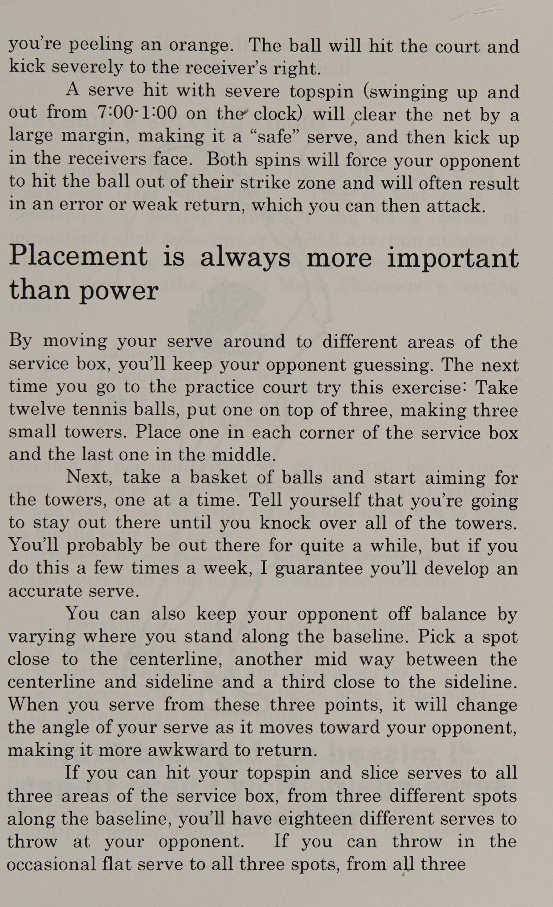
Ném một đường chuyền chạm bóng - Chuyển động giao bóng của bạn phải phản ánh chuyển động của một tiền vệ ném một đường chuyền dài 50 yard: lên và ra ngoài bằng một cú búng tay khi tiếp xúc. Hãy nhớ câu thần chú này khi giao bóng: vung lên, chụp xuống.
Tôi từng có một học trò chắc chắn có động tác giao bóng tệ nhất trong lịch sử quần vợt. Cánh tay của cô ấy đưa ra mọi hướng, và cuối cùng cô ấy vung vợt vào quả bóng bằng khuỷu tay và cổ tay. Gọi nó là “xấu xí” thì cũng tốt thôi!
Sau khi cho cô ấy thấy động tác giao bóng thích hợp giống như ném một quả bóng đá, tôi bảo cô ấy thực hiện 50 lần ném bóng mỗi ngày. Cô đã ghi nhớ lời khuyên này và mỗi ngày tập ném một đôi tất cuộn tròn vào tường trong phòng ngủ của mình 150 lần! Cô ấy đã phát triển một động tác giao bóng khiến mọi tay vợt trong câu lạc bộ đều phải ghen tị - bao gồm cả tôi!
Một bài tập tuyệt vời khác để thực hành cú giao bóng của bạn là mỗi tay cầm một quả bóng tennis và thực hiện động tác giao bóng của bạn. Sau khi bạn ném quả bóng đầu tiên, hãy quan sát nó đạt đến đỉnh điểm rồi ném quả bóng thứ hai và cố gắng thực hiện cú ném của bạn. Điều này cho phép bạn thực hành cả cú ném và vung.
Bạn thậm chí có thể thực hiện việc này một cách thoải mái tại nhà. Chỉ cần thay những quả bóng tennis bằng những chiếc tất.
Làm cho cú giao bóng của bạn trở thành vũ khí bùng nổ hoặc phá sản. Đây là cách nhiều tay vợt tiếp cận cú giao bóng của họ.
Họ phóng tên lửa trong lần giao bóng đầu tiên, hy vọng rằng, nếu nó đi vào lưới, họ sẽ có được một điểm dễ dàng cũng như đe dọa đối thủ bằng sức mạnh “tuyệt vời” của mình.
Trong tâm trí họ, đó là một món quà miễn phí vì họ biết rằng nếu nó không vào lưới, họ luôn có thể "bụp" trong lần giao bóng thứ hai mà vẫn giữ được điểm.
f Mặc dù đây không hẳn là một chiến lược tồi với những người muốn chơi cuối tuần, những người không có kỹ năng tận dụng cú giao bóng thứ hai bằng bột, nhưng một tay vợt mạnh sẽ ăn cú giao bóng thứ hai “bụp” đó vào bữa trưa. Có nhiều thứ để có một cú giao bóng mạnh hơn là chỉ cố gắng áp đảo đối thủ của bạn. Chắc chắn, những cú giao bóng lớn là tốt nhưng những cú giao bóng thắng đối với hầu hết tay vợt là rất ít. Một cách tiếp cận tốt hơn là xem cú giao bóng của bạn như một công cụ để giành quyền kiểm soát điểm. ~ Bạn làm điều này bằng cách trước tiên thực hiện nó một cách nhất quán đồng thời khiến đối thủ phải đoán xem bạn sẽ đánh nó ở đâu.
Những tay vợt có cú giao bóng mạnh đã học được cách đạt được tỷ lệ phần trăm cao trong số lần giao bóng đầu tiên của họ và thực sự vung vợt mạnh như vậy, đôi khi khó hơn ở lần giao bóng thứ hai. Bí mật của họ nằm ở việc sử dụng spin.
Trở thành bậc thầy về xoáy Spin là món quà của thiên nhiên dành cho quần vợt. Nó nâng cao cả tính nhất quán và khả năng kiểm soát của chúng ta, đồng thời bằng cách học cách đưa lát và xoáy lên vào cú giao bóng của mình, bạn sẽ khiến đối thủ của mình phải bối rối, ngay từ đầu điểm.
Những cú giao bóng xoáy được thực hiện tốt nhất bằng cách cầm vợt kiểu Continental.
Cách cầm này đặt vợt ở một góc trong tay bạn, tùy thuộc vào cách bạn vung cánh tay và búng cổ tay, cho phép bạn làm cho quả bóng nhảy múa.
Khi a= tay vợt thuận tay phải đánh một “Bạn chỉ giỏi bằng cú giao bóng của bạn với cú cắt nặng, | S¢¢02d giao bóng.” tưởng tượng quả bóng như mặt đồng hồ, tiếp xúc lúc 3:00 và xoay người xung quanh như thể Peter Burwash Chuyên gia giảng dạy nổi tiếng quốc tế One Shot To The Next Level 57 bạn đang gọt một quả cam. Bóng sẽ chạm sân và đá mạnh về bên phải người nhận.
Một cú giao bóng có độ xoáy cao nghiêm trọng (đu lên và ra ngoài từ 7:00-1:00 theo đồng hồ) sẽ cú đánh vượt qua (Passing shot) lưới một khoảng cách lớn, khiến nó trở thành một cú giao bóng “an toàn”, và sau đó tung bóng vào mặt người nhận. Cả hai lần quay sẽ buộc đối thủ của bạn đánh bóng ra khỏi vùng tấn công của họ và thường sẽ dẫn đến lỗi hoặc trả bóng yếu, sau đó bạn có thể tấn công.
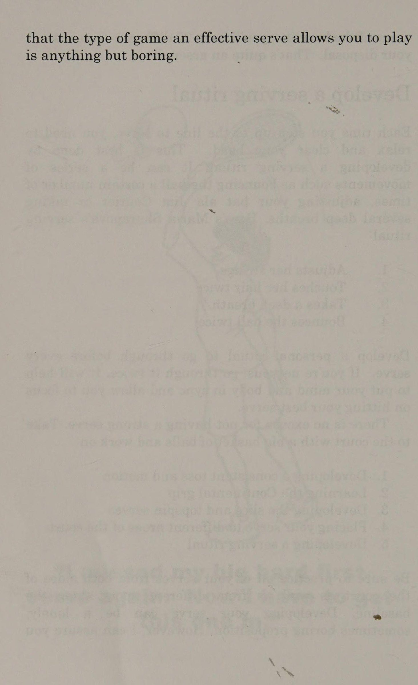
Vị trí luôn quan trọng hơn sức mạnh Bằng cách di chuyển quả giao bóng của bạn đến các khu vực khác nhau của ô giao bóng, bạn sẽ khiến đối thủ phải đoán. Lần tới khi bạn đến sân tập, hãy thử bài tập này: Lấy mười hai quả bóng tennis, đặt một quả lên trên ba quả bóng, tạo thành ba tòa tháp nhỏ. Đặt một cái ở mỗi góc của hộp dịch vụ và cái cuối cùng ở giữa.
Tiếp theo, lấy một rổ bóng và bắt đầu nhắm vào các tòa tháp, từng tòa tháp một. Hãy tự nhủ rằng bạn sẽ ở ngoài đó cho đến khi đánh đổ tất cả các tòa tháp.
Bạn có thể sẽ phải ở ngoài đó khá lâu, nhưng nếu bạn làm điều này vài lần một tuần, tôi đảm bảo rằng bạn sẽ phát triển được một cú giao bóng chính xác.
Bạn cũng có thể khiến đối thủ mất thăng bằng bằng cách thay đổi vị trí bạn đứng dọc theo đường cuối sân (Baseline). Chọn một điểm gần đường giữa, một điểm khác ở giữa đường giữa và đường biên và điểm thứ ba gần đường biên.
Khi bạn giao bóng từ ba điểm này, nó sẽ thay đổi góc giao bóng của bạn khi nó di chuyển về phía đối thủ, khiến việc trả giao bóng trở nên khó khăn hơn.
Nếu bạn có thể thực hiện cú giao bóng xoáy lên và cắt các quả giao bóng tới cả ba khu vực của ô giao bóng, từ ba điểm khác nhau dọc theo đường cuối sân, bạn sẽ có mười tám quả giao bóng khác nhau để ném vào đối thủ.
Nếu bạn có thể thỉnh thoảng ném quả giao bóng phẳng tới cả ba vị trí, từ cả ba vị trí "Tôi lại bỏ lỡ quả giao bóng đầu tiên khó khăn của mình. Bây giờ tôi phải thực hiện cú giao bóng này." One Shot To The Next Cấp độ 59 của đường cuối sân (Baseline), bạn sẽ có 27 cú giao bóng khác nhau tùy ý sử dụng. Đúng là một kho vũ khí!
Xây dựng nghi thức giao bóng Mỗi lần bước lên hàng để giao bóng, bạn cần thư giãn và tỉnh táo.
Điều này được thực hiện tốt nhất bằng cách phát triển một nghi thức giao bóng. Nó có thể là một loạt các động tác như đập bóng một số lần nhất định, chỉnh lại chiếc mũ của bạn giống như Jim Courier hoặc hít thở sâu vài lần. Đây là nghi thức giao bóng của Maria Sharapova:
Điều chỉnh dây của cô ấy Chạm vào tóc cô ấy hai lần Hít một hơi thật sâu Tung bóng hai lần es ee ae Phát triển một nghi thức cá nhân cần thực hiện trước mỗi lần giao bóng. Nếu bạn lo lắng, hãy trải qua nó hai lần. Nó sẽ giúp tâm trí và cơ thể của bạn đồng bộ và cho phép bạn tập trung vào việc đánh cú giao bóng tốt nhất của mình.
Không có lý do gì để không có một cú giao bóng mạnh. Ra sân với một rổ bóng lớn và thực hiện:
Phát triển cách tung và chuyển động nhất quán Học cách cầm vợt kiểu lục địa Phát triển các cú giao bóng cắt và xoáy lên Đặt cú giao bóng của bạn đến các khu vực khác nhau của sân.
Phát triển nghi thức giao bóng Hãy đảm bảo thực hành tất cả các cú giao bóng của bạn từ cả hai phía sân cũng như từ các điểm khác nhau dọc theo đường cuối sân.
Phát triển cú giao bóng của bạn có thể là một đề xuất _ đơn độc, đôi khi nhàm chán. Tuy nhiên, tôi có thể đảm bảo với bạn rằng loại trò chơi mà một cú giao bóng hiệu quả cho phép bạn chơi sẽ không hề nhàm chán.
Chương 6: Ai Sợ Tay Giao Bóng Sấm Sét? (Who’s Afraid Of The Big Bad Server?)
Chapter 6: Who’s Afraid Of The Big Bad Server?
Các người giao bóng lớn thường cố gắng chế ngự Máy chủ Ai Sợ Máy chủ Xấu của họ?
đối thủ của họ bằng sức mạnh của mình, nhưng không gì có thể hạ gục họ nhanh hơn một đối thủ không hề tỏ ra sợ hãi và có thể tung cú giao bóng lớn ngay về phía họ.
Với suy nghĩ đó, ưu tiên hàng đầu của bạn khi trả giao bóng là đưa mọi quả bóng trở lại cuộc chơi. Sau đó, bạn muốn giảm thiểu, nếu không muốn nói là vô hiệu hóa lợi thế của người giao bóng.
Khả năng giao bóng lớn đã quen với việc đe dọa Chuẩn bị sẵn sàng Dưới đây là khoảng thời gian gần đúng mà bạn phải phản ứng với cú giao bóng của đối thủ dựa trên tốc độ của nó.
Tốc độ giao bóng (mph) Thời gian phản ứng (giây) .O9 0,66 0,88 1,06 Nếu bạn thấy mình cú đánh vượt qua (Passing shot) lưới của Andy Roddick và Andy bắn một trong những quả bom tốc độ 140 dặm/giờ của anh ấy, bạn sẽ có chưa đầy nửa giây để phản ứng và đáp trả. May mắn thay, chúng ta không phải đối mặt với những cú giao bóng siêu thanh thường xuyên. Tay vợt được đánh giá ở mức 2,0 đến 4,0 thường giao bóng trong phạm vi 40 đến 60 mph. Tay vợt ở cấp độ 4.0-4.5 trở lên thường có thể đạt đến mức 80, giúp bạn có hơn nửa giây để thực hiện cú trả bóng của mình (Thông tin thêm: Phụ lục A. Xếp hạng). Vẫn còn không nhiều thời gian, nhưng với vị trí thích hợp trước khi giao bóng, cũng như tư thế sẵn sàng chủ động, bạn có thể biến việc trả giao bóng của mình thành một vũ khí.
Đứng ở đâu Khi bạn chờ đối thủ giao bóng, hãy xếp hàng càng gần (hoặc bên trong) đường biên ngang càng tốt và một hoặc hai foot bên trong đường biên đánh đơn. Điều này sẽ cho phép bạn trả bóng trở lại người giao bóng một cách nhanh chóng cũng như định vị bản thân để bao quát cả hai bên một cách bình đẳng.
Khi người giao bóng chuẩn bị ném bóng, hãy di chuyển vào vị trí sẵn sàng chủ động của bạn và lên ý tưởng về những gì bạn muốn làm với cú trả bóng của mình dựa trên phong cách chơi của đối thủ. Thực hiện theo các nguyên tắc chung sau cho cả đánh đơn và đánh đôi: 1.
Nếu đối thủ của bạn giao bóng và lùi lại, hãy nhắm qua lưới ít nhất 2-3 feet và trả sâu và chéo sân.
2:
Nếu bạn đang đối mặt với một đối thủ giao bóng và vô lê, hãy chặn cú trả bóng ở mức thấp, dưới chân họ.
Khi trận đấu diễn ra, hãy lưu ý đến điểm mạnh và xu hướng của người giao bóng và điều chỉnh vị trí của bạn lên hoặc lùi, trái hoặc phải. Nhiều tay vợt giao bóng đến cùng một vị trí mỗi lần, trong khi những người khác sẽ cho bạn manh mối về vị trí họ đang giao bóng bằng cách họ đứng hoặc nơi họ ném bóng. Ví dụ: nếu cú ném ở bên trái thân người giao bóng, hãy di chuyển sang bên trái của bạn. Nếu cô ấy ném bóng rộng sang bên phải, hãy di chuyển sang bên phải của bạn.
Tôi thậm chí còn biết một tay vợt, người mà không hề nhận ra, đã thực sự nhìn vào khu vực mà anh ấy sẽ giao bóng trước khi ném bóng. Anh chàng tội nghiệp đã không thắng được cú giao bóng của mình kể từ đầu thế kỷ này và không thể hiểu tại sao. Nếu bạn sợ người giao bóng xấu lớn 63 có thể nắm bắt được một số xu hướng của đối thủ, bạn sẽ có thể thực hiện một cú nhảy nhanh trong quả giao bóng và đánh trả mạnh hơn. Xoay nhanh Ngay trước khi tiếp xúc, thực hiện bước tách ra và xem bóng bật ra khỏi dây của đối thủ. Khi bạn đã xác định được hướng giao bóng sẽ đến, hãy ngay lập tức xoay vai và hông về phía quả bóng đang tới.
Một bài tập tuyệt vời để thực hành động tác xoay nhanh này, cũng như chuẩn bị vợt sớm, là đứng ở vị trí sẵn sàng như thể bạn sắp nhận giao bóng. Hãy tưởng tượng rằng phần đầu vợt của bạn được dán vào rốn của bạn, hướng về phía đối thủ.
Thực hiện tách bước và khi bạn đang ở trên không, hãy yêu cầu một đối tác luyện tập hét lên "thuận tay" hoặc "trái tay". Khi bàn chân chạm xuống, ngay lập tức bật lên và xoay vai và hông theo hướng thích hợp nhanh nhất có thể. Điều này sẽ chuẩn bị cho cơ thể và vợt của bạn phản ứng với cú giao bóng sắp tới.
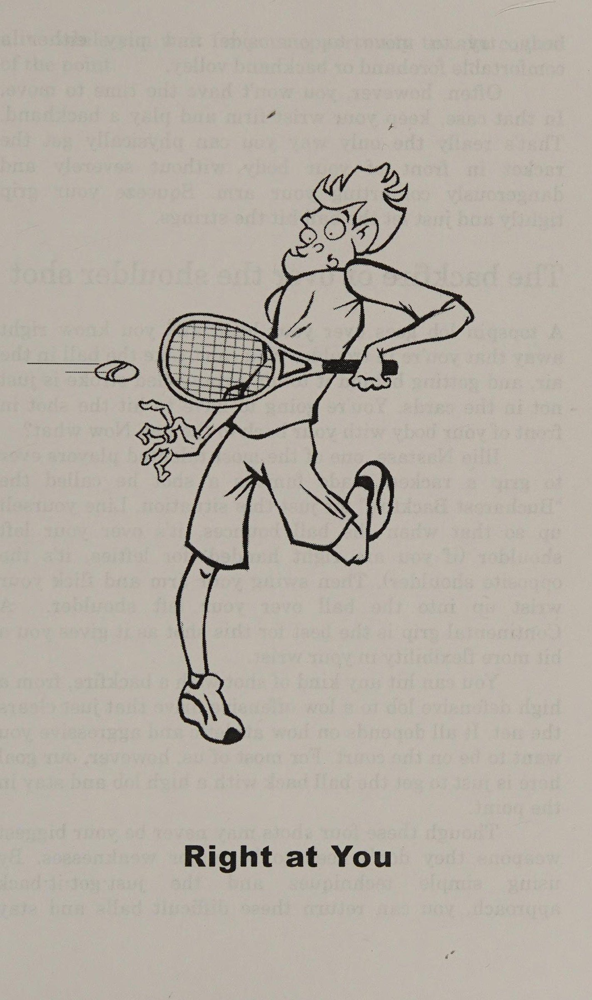
Nếu đối thủ của bạn có cú giao bóng lớn, hãy sử dụng cú đánh lùi ngắn và tập trung vào việc hướng dây đến nơi bạn muốn bóng đi.
Đừng lo lắng về việc tạo ra tốc độ.
Hãy để người giao bóng cung cấp nước trái cây—bạn chỉ cần kiểm soát bóng.
Nếu bạn đang đối mặt với một cú giao bóng có tốc độ thấp, lợi thế bây giờ sẽ thuộc về bạn, nhưng bạn cần phải cẩn thận để tránh bị cám dỗ phát bóng và giành chiến thắng chung cuộc. Rất hiếm khi bạn có thể kết thúc điểm bằng cú trả giao bóng của mình, vì vậy đừng cố gắng.
Thay vào đó, hãy kiểm soát điểm bằng cách vung ra sau lớn hơn một chút và đánh một cú đánh vòng tròn mạnh mẽ, sâu. Hoặc bạn có thể chặn bóng lùi sâu và di chuyển vào lưới. Trong cả hai trường hợp, hãy cầm bóng sớm và đảm bảo sử dụng cú theo bóng dài. Tập trung vào vị trí chứ không phải quyền lực. Động lượng của cơ thể bạn di chuyển vào cú đánh sẽ cung cấp tất cả sức mạnh mà bạn cần.
Các bài tập để thực hành cú trả bóng của bạn Yêu cầu đối tác luyện tập của bạn đứng ở vạch giao bóng của anh ấy và giao bóng cho bạn. Bằng cách tiến lại gần hơn, anh ấy sẽ mô phỏng một tay vợt thực hiện trò chơi giao bóng và vô lê lớn. Thực hành rút ngắn cú vung sau của bạn và chặn bóng trở lại. Hãy nhắm vào đôi giày của anh ấy.
Hãy đảm bảo thực hành các cú trả bóng thuận tay và trái tay từ cả hai phía thuận và thuận. Sau đó đổi chỗ với đối tác của bạn và bạn thực hiện cú giao bóng trong khi anh ấy thực hiện cú trả bóng của mình.
Thực hành nhận giao bóng từ phía sau vạch giao bóng hai feet. Điều này một lần nữa sẽ mô phỏng một cú giao bóng lớn và giúp bạn cải thiện thời gian phản ứng của mình.
Yêu cầu đối tác của bạn thực hiện cú giao bóng thứ hai từ đường cuối sân, và bạn thực hành đánh cú trả bóng của mình xuống vạch và tiến vào. Hãy ghi điểm.
Chơi từ đầu tiên đến 11. Đảm bảo thực hành cả hai cú đánh, từ cả hai phía của sân, sau đó chuyển đổi.
Áp dụng thái độ “làm theo” khi nhận giao bóng và cho đối thủ thấy rằng bạn không sợ sức mạnh của họ.
Cố gắng đưa mọi cú giao bóng trở lại cuộc chơi và tận dụng những cú giao bóng thứ hai yếu. Cú giao bóng là vũ khí lớn nhất của nhiều tay vợt và nếu bạn có thể lấy đi vũ khí đó bằng những cú trả bóng quyết liệt và nhất quán, bạn sẽ lấy đi trái tim của họ và đang trên đường đến chiến thắng.
a)
Chương 7: Năm Cú Đánh Mang Lại Chiến Thắng (Five Strokes And You Win)
Chapter 7: Five Strokes And You Win
Các cú đánh bóng bền cuối sân (Groundstrokes) là nền tảng mà toàn bộ phần còn lại trong lối chơi của bạn được xây dựng dựa trên đó; và dù bạn đánh chúng bằng cách cầm vợt kiểu Eastern với thế đứng đóng, cầm vợt kiểu Western với thế đứng mở, hay thậm chí cầm ngược vợt khi trồng cây chuối, thì cách tiếp cận của bạn phải luôn luôn tập trung vào tính ổn định bền bỉ (Consistency).
Điều này đòi hỏi một sự thay đổi về mặt tinh thần vì phần lớn những gì chúng ta nghe, thấy và đọc về quần vợt bảo chúng ta hãy “cố gắng” với những cú đánh bóng bền cuối sân (Groundstroke) của mình. Mặc dù cách tiếp cận này có thể thắp sáng cuộc sống quần vợt của chúng ta trong một khoảnh khắc ngắn ngủi, nhưng trong suốt một trận đấu kéo dài hai hoặc ba set, chiến lược này thường mang lại nhiều đau đớn hơn là niềm vui.
Tôi muốn bạn nhớ rằng những cú đánh nền không phải là những cú đánh kết thúc điểm mà là những cú đánh xây dựng điểm. Người chiến thắng được đánh từ đường cuối sân là cực kỳ hiếm và việc cố gắng kết thúc điểm từ đường cuối sân sẽ khiến bạn kiệt sức về thể chất và tinh thần.
Khi bạn xem một trận đấu quyền anh giữa hai nhà vô địch vĩ đại, bạn sẽ thấy mỗi võ sĩ đi vòng quanh võ đài, thăm dò sơ hở. Đây là cách tiếp cận mang lại những bước đột phá cho bạn. Hãy để đối thủ của bạn tấn công Mike Tyson, phong cách bắn súng lớn, trong khi bạn mô phỏng huyền thoại quyền anh Muhammad Ali và xây dựng đòn tấn công của mình với tính nhất quán và các pha phối hợp cú đánh. Cách tiếp cận này sẽ dần dần nhưng chắc chắn sẽ khiến đối thủ của bạn suy sụp và cuối cùng cho phép bạn tiến tới loại trực tiếp.
những bước đột phá của chúng tôi là nền tảng mà trên đó Từ chối bỏ lỡ Tính nhất quán là một tư duy. Vì vậy, lần tới khi bạn bước lên sân, hãy làm như vậy với thái độ “từ chối bỏ lỡ”. Hãy quên đi những cú đánh đại bác (Big Shot) và giữ bóng trong cuộc. Nếu bạn có thể đánh bóng trên sân năm lần mỗi điểm, bạn có thể sẽ đánh bại 90% số tay vợt đang đánh bại bạn. Dưới đây là ba chiến lược dễ thực hiện sẽ ngay lập tức giúp bạn trở thành một tay vợt ổn định hơn ngay từ đường cuối sân (Baseline): bs il.
Dọn dẹp mạng. Dọn lưới là mối quan tâm đầu tiên của bạn, vì vậy tôi muốn bạn phát triển ba độ cao khác nhau để từ đó bạn có thể thực hiện các cú đánh vòng tròn của mình. Đầu tiên là "độ cao tập hợp", cách lưới khoảng 5-6 feet, được sử dụng khi bạn đang trong một cuộc trao đổi cơ bản mà không ai có lợi thế.
Tiếp theo là "độ cao phòng thủ", cách lưới 15-20 feet, được sử dụng khi bạn gặp khó khăn.
Cuối cùng, hãy phát triển "độ cao tấn công", cách lưới 1-2 feet và sử dụng nó khi bạn tấn công một quả bóng ngắn hoặc thực hiện một cú sút.
wp Tránh xa hàng đợi. Đừng bao giờ nhắm tới đường kẻ. Huyền thoại huấn luyện người Úc Harry Hopman nổi tiếng vì đã nói với các tay vợt của mình rằng “hãy đánh đúng đường”. Với tất cả sự tôn trọng dành cho Hop, tôi nói rằng trừ khi tên bạn là Laver, Sharapova hay Federer, hãy quên lời thoại đi. Luôn tạo cho mình khoảng cách an toàn ít nhất là 3-5 foot.
3) Đánh phần lớn số cú đánh nền của bạn trên sân. Bạn sẽ đánh vào phần thấp nhất của lưới, chính giữa. Sân cũng có đường chéo dài hơn, khiến bạn có khả năng mắc lỗi lớn hơn.
Năm cú đánh và bạn thắng 67 15-20 _— feet OC) Các cú đánh nền có kiểm soát Hãy tiến lên cấp độ tiếp theo Nếu tính nhất quán là đặc điểm nổi bật của một tay vợt giỏi thì khả năng tăng thêm độ xoáy cho các cú đánh nền của bạn là điều sẽ đưa tính nhất quán đó lên một tầm cao mới.
Spin nổi tiếng là một loại thủ thuật phức tạp, bí ẩn mà chỉ những tay vợt cao cấp mới có thể sử dụng. Trên thực tế, nguyên lý vật lý của chuyển động quay khá đơn giản, và tin hay không thì tùy, bạn đã sử dụng nó rồi.
Nhiều tay vợt nghĩ rằng họ đánh một quả bóng "phẳng", nhưng thực tế là hầu như không thể đánh một quả bóng không có vòng quay. Huyền thoại huấn luyện Vic Braden nói rằng một quả bóng đang di chuyển trong không khí "tạo ra các túi khí và ma sát không khí từ các túi đó khiến quả bóng thực hiện một số điều nhất định. Những tay vợt quần vợt giỏi cố tình kiểm soát vòng quay của quả bóng này và sử dụng nó để làm lợi thế cho họ." Nói cách khác, nếu bạn có thể học cách sử dụng các vòng quay khác nhau, mức độ kiểm soát và tính nhất quán của bạn sẽ tăng lên đáng kể.
Hương vị của xoáy Topspin ngày nay là vua và hầu như mọi tay vợt trên thế giới đều sử dụng nó ở một mức độ nào đó. Để đưa bóng xoáy lên, bạn cần vung vợt theo chuyển động từ thấp đến cao. Nếu quả bóng là mặt đồng hồ, vòng quay xoáy lên sẽ mang lại 6:00 trên 12:00 khi quả bóng di chuyển ra xa bạn.
Một quả bóng được đánh bằng xoáy lên ban đầu sẽ bay lên và sau đó rơi xuống rất nhanh. Bản chất của xoáy là kéo bóng xuống, do đó xoáy lên cho phép bạn vung mạnh hơn, nhắm cao hơn mà vẫn giữ bóng trong sân. Khi bóng nảy lên, đối thủ của bạn sẽ có cảm giác như thể nó đang nhảy ngay lên trên họ. Đây là lý do tại sao nhiều người gọi topspin là xoáy “sức mạnh”.
gy Topspin nên là cú xoáy được bạn lựa chọn cho phần lớn các cú đánh nền của bạn vì nó cho phép bạn Năm cú đánh và bạn thắng 69 đánh một quả bóng mạnh cách lưới bốn feet trở lên và vẫn giữ nó sâu trong phần sân sau của đối thủ.
Nếu bạn chủ yếu là tay vợt đánh đôi, bạn cần phải cẩn thận về mức độ đánh bóng cao qua lưới của tay vợt đối phương. Bất cứ thứ gì cao hơn một hoặc hai foot so với lưới đều có khả năng bị đối thủ cảnh giác bắt và ném đi. Khi chơi đánh đôi, hãy giữ phần lớn các cú đánh nền của bạn ở độ cao tấn công (1-2 feet qua lưới) hoặc phòng thủ (15-20 feet).
Slice rất hay Trong thế giới bị ám ảnh bởi sức mạnh của chúng ta, topspin nhận được vinh quang.
Tuy nhiên, cú cắt, mặc dù di chuyển không nhanh bằng, nhưng có thể là một vũ khí có sức tàn phá tương đương với một quả bóng đánh bằng xoáy lên. Steffi Graf là bằng chứng cho điều này.
Cú đánh trái tay đã giúp cô trở thành một trong những tay vợt nữ thống trị nhất trong lịch sử.
Khi một quả bóng được đánh bằng xoáy lên rơi xuống, một quả bóng được đánh bằng lát cắt sẽ bay lên, có nghĩa là nó càng bị đánh mạnh thì càng có nhiều khả năng bay lên không trung. Đây không phải là một điều tốt, vì những quả bóng bay lơ lửng là con mồi dễ dàng cho một đối thủ hung hãn.
Ngoài ra, một quả bóng được đánh bằng lát cắt sẽ di chuyển trong không khí chậm hơn so với một quả bóng được đánh bằng xoáy lên, đó là lý do tại sao lát cắt thiên về độ xoáy có kiểm soát và tinh tế hơn. Khi một quả bóng đánh tốt với độ nảy lát cắt, nó sẽ ở mức thấp, lý tưởng cho các cú đánh tiếp cận và đánh thả, vì vòng xoáy sẽ kéo quả bóng trở lại lưới sau khi nó chạm đất.
Mặc dù ngày nay topspin được báo chí chú ý nhiều, nhưng đừng bỏ qua tiềm năng của cú cắt bóng để nâng cao cả khả năng kiểm soát và tính nhất quán của bạn. Cách đây vài năm, tôi đang giảng dạy tại một sự kiện của công ty ở California. Một người bạn của tôi tên là Larry, người đang huấn luyện một số chuyên gia lưu diễn vào thời điểm đó, cũng có mặt tại sự kiện và đang làm việc với một nhân viên bán hàng trung niên tên là Barry.
Barry, một tay vợt cấp độ 3.0 chơi một hoặc hai lần một tuần, đã vô cùng thất vọng vì anh ta không thể đánh trái tay một cách nhất quán.
Anh ấy đã học hàng giờ tại câu lạc bộ địa phương của mình nhưng không có kết quả, và mọi người đều biết rằng nếu bạn muốn đánh bại Barry, tất cả những gì bạn phải làm là đánh bóng vào trái tay của anh ấy và anh ấy sẽ tự: hủy diệt.
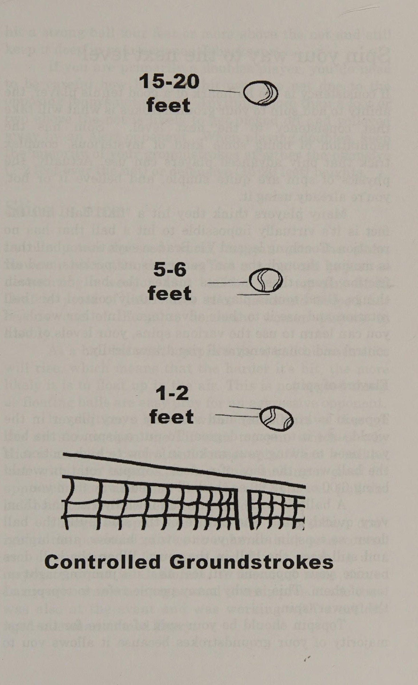
Trong ba ngày, tôi đã quan sát bạn tôi cố gắng dạy người đàn ông này một cú đánh trái tay xoáy lên. Họ đánh hàng nghìn quả bóng, với khoảng 1/50 quả bóng đi qua lưới và trong sân thành công. Như bạn có thể mong đợi, mức độ thất vọng của họ đang tăng lên. Cuối cùng, vào ngày thứ tư khi chúng tôi đang đi bộ tới sân đấu, Larry nói với tôi: "Tôi không thể chịu đựng thêm một ngày nào nữa với gã này. Bạn hãy thử xem." “Được rồi, tôi sẽ thử,” 1 nói với anh ấy.
Khi Barry bước vào sân và nhìn thấy tôi, anh ấy lập tức mỉm cười và nói: "Có chuyện gì thế? Larry không thể chịu đựng được nữa à?" Cả hai chúng tôi đều cười.
Sau đó, chúng tôi bắt đầu đánh qua đánh lại, và ngay lập tức, Barry đã nói với tôi về "vấn đề trái tay" của anh ấy. Anh ấy đã đúng, cú trái tay của anh ấy thật khủng khiếp.
Mỗi lần tôi đánh thuận tay của Barry, anh ấy trông thoải mái, tự tin và vuốt bóng trở lại với độ sâu ổn định. Ngay khi tôi đánh một quả vào trái tay của anh ấy, tôi có thể thấy sự hoảng sợ trong mắt anh ấy khi anh ấy cố nhớ lại mọi điều mà các chuyên gia đã nói với anh ấy và bất cứ điều gì có thể giúp anh ấy thoát ra. Anh ta đánh vào khung, hàng rào, hồ nước sau hàng rào. Bạn đặt tên cho nó và Barry đặt một quả bóng ở đó— bất cứ nơi nào ngoại trừ trong sân.
Tôi nhìn Larry sang sân bên cạnh, người đang mỉm cười và nháy mắt với tôi khi anh ta đang đánh nhau với một vài phụ nữ xinh đẹp. Anh đang lẩm bẩm nói: "Em thấy vui chưa?" bs Sau khi bắt chuyện bằng một vài câu chuyện cười, tôi hỏi Barry về tất cả những chỉ dẫn mà anh ấy đã nhận được. Anh ấy nói rằng anh ấy đã thử Five Strokes And You Win 71 để thử mọi cách để cải thiện cú trái tay của mình. Anh ấy đã thử cả hai tay và một tay. Anh ấy đã có được thể hình tuyệt vời để có thể chạy vòng trái tay và tránh đánh nó hoàn toàn. Anh ấy thậm chí còn thử thuận tay trái. Đó là cách anh ấy tuyệt vọng.
Có vẻ như anh ấy đã thử mọi cách—mọi thứ, trừ một cú đánh trái tay. Khi tôi gợi ý miếng bánh cho Barry, anh ta ngay lập tức làm vẻ mặt như thể đang ngửi thấy mùi chồn hôi. “Lát cắt dành cho những kẻ yếu đuối,” anh nói.
Sau khi cho Barry xem một số cú đánh trái tay của tôi, mặc dù không tốt bằng của Steffi, nhưng luôn nằm trong số những cú đánh tốt hơn của tôi và thuyết phục anh ấy rằng "những người đàn ông thực sự" đánh bằng lát cắt, anh ấy đã đồng ý thử. Rốt cuộc thì anh ta đã phải mất gì?
Tôi đã chỉ cho anh ấy những điều cơ bản và sau khoảng 50 quả bóng, anh ấy bắt đầu cảm nhận được một chút về nó. Trong vòng 25 phút, anh ấy thực sự đã có thể đánh bóng qua lại bằng cú trái tay mới của mình. Nó có đẹp không? Không. Nó có được đưa ra tòa không? Phần lớn thời gian, nó đã làm được. Không cần phải nói, anh ấy đã rất vui mừng và nóng lòng muốn thử cú trái tay mới của mình với những người bạn ở quê nhà.
Câu chuyện có một cái kết dễ thương. Ba tháng sau buổi học, tôi nhận được một phong bì qua đường bưu điện. Trong đó là hình ảnh Barry đang giơ cao chiếc cúp vô địch giải đấu 3.0 của mình. Ở cuối bức ảnh, anh ấy đã viết, "Điểm phù hợp - chém trái tay xuống đường dành cho người chiến thắng. Những người đàn ông đích thực sẽ đánh bằng lát. Cảm ơn!" Hãy cho nó thời gian để phát triển Khi bạn dấn thân vào thế giới của cú cắt và xoáy lên, hãy nhớ rằng có nhiều mức độ xoáy khác nhau. Việc thử và sai sẽ giúp bạn phát triển cảm giác thích hợp để bạn có thể tạo ra độ xoáy nhiều hay ít vào bóng tùy theo tình huống yêu cầu.
Bạn có thể sẽ phải bật cười khi những nỗ lực đánh xoáy lên đầu tiên của bạn chạm vào chân bạn, hoặc những nỗ lực cắt lát đầu tiên của bạn quay trở lại và đánh vào ngực bạn.
Hãy nhớ rằng, tất cả đều là một phần của quá trình học tập và khi luyện tập, bạn sẽ thành thạo các kỹ thuật đánh có xoáy. Khi luyện tập, bạn sẽ bắt đầu thấy rằng ngày càng có nhiều thứ bạn có thể làm với quả bóng, tùy thuộc vào mức độ xoáy mà bạn áp dụng.
Cho dù đó là Roger Federer, Maria Sharapova hay Betty từ dưới lên, những tay vợt giỏi nhất thế giới và ở câu lạc bộ của bạn, tất cả đều có một điểm chung: cơ sở vững chắc về tính nhất quán và sự hiểu biết về cách cắt và xoáy lên đóng góp vào sự nhất quán đó.
Lần tới khi bạn ra sân với đối thủ khó chịu đã đánh bại bạn bốn lần gần đây nhất, hãy nhắc nhở bản thân nhắm mục tiêu cao hơn trên lưới và tránh xa đường biên. Sử dụng xoáy lên và cắt bóng để giúp bạn kiểm soát bóng và để đối thủ thực hiện cú đánh “khủng”. Tôi nghĩ bạn sẽ ngạc nhiên với kết quả.
Năm gậy và bạn thắng 73 pot ne —.
MỞ HAY ĐÓNG?
| Ngày xửa ngày xưa, mọi tay vợt đều thực hiện các động tác đánh nền với tư thế : _ khép kín trong đó vai và hông xoay |!
rời lưới đối mặt với đường biên.
Sự ra đời của vợt có trọng lượng nhẹ hơn và sự phổ biến của vợt kiểu phương Tây tôi cách cầm vợt đã cho phép tay vợt giữ tư thế cởi mở, tôi hông hướng vào lưới để thực hiện cú đánh tiếp đất, miễn là: họ xoay phần thân trên của mình trong khi thực hiện cú đánh.
Bằng cách “mở ra”, chúng tôi được thông báo rằng việc vào vị trí sẽ dễ dàng hơn và chúng tôi có thể tạo ra nhiều tốc độ đầu vợt hơn, tôi tất nhiên, điều đó có nghĩa là xoáy lên và sức mạnh nhiều hơn. Hầu hết tôi các chuyên gia lưu diễn ngày nay sử dụng quan điểm cởi mở và do đó, nó được nhiều chuyên gia giảng dạy dạy.
Ngoài yếu tố “ngầu” khi cố gắng đánh bóng j như dân chuyên nghiệp, tôi nghĩ nhiều tay vợt giải trí sử dụng tôi tư thế mở như một chiếc nạng vì nó đòi hỏi ít động tác bằng chân hơn— tôi ít động tác bằng chân hơn nhưng thể thao và kỹ năng hơn nhiều. Hãy nhìn xung quanh và bạn sẽ thấy những tay vợt ở mọi lứa tuổi với - kiểu cầm vợt kiểu phương Tây, thế đứng mở rộng và xoáy lên quá mức tôi đánh hết quả bóng này đến quả bóng khác khỏi khung của họ và sau đó tôi chạy nước rút vì máy làm đá và Advil vì cánh tay của họ - đang run rẩy.
Nếu bạn chưa đoán ra thì tôi thích thế đứng đóng hơn _ cho cả thuận tay và trái tay. Tôi nghĩ nó cung cấp nhiều _ tùy chọn hơn và chúng ta dễ dàng sử dụng hơn. Ngoài ra, các nghiên cứu gần đây của Vic Braden đã chỉ ra rằng thế đứng mở không mang lại nhiều tốc độ đầu vợt hơn qua vùng đánh như đã được đề xuất.
Chắc chắn, thế đứng khép kín đòi hỏi nhiều động tác bằng chân hơn, nhưng đó là tên của trò chơi. Nếu bạn thực sự gặp khó khăn trong việc tiếp cận quả bóng, tư thế cởi mở có thể giúp bạn thoát khỏi nguy hiểm — nhưng đừng lấy đó làm cái cớ cho sự lười biếng.
Bop 5 eS ates hoặc Soe Sotelo Sg eon 4
Chương 8: Trúng Số Trên Lưới (Jackpot At The Net)
Chapter 8: Jackpot At The Net
Bob đã chơi quần vợt Jackpot At The Net được bốn năm. Khao khát tiến lên một tầm cao mới, anh ấy biết rằng mình không còn có thể giành chiến thắng từ sân sau nữa. Anh ấy muốn học cách chơi trên lưới. Vì vậy, sau một vài bài học về các khía cạnh khác nhau của trò chơi trên lưới, Rick cảm thấy mình đã sẵn sàng “tính phí lớn”, như anh ấy nói.
Tuần sau, Rick đến lớp với tấm bảo vệ ngực và mũ bảo hiểm. Lời đầu tiên thốt ra từ miệng anh ấy là, “Tôi tưởng bạn đã nói rằng tay vợt vào lưới sẽ kiểm soát điểm.” Rick bị sốc nặng.
Anh ấy đã tìm đường vào lưới và nhận thấy rằng mọi thứ diễn ra nhanh hơn nhiều khi ở gần nơi những tay vợt giỏi sinh sống.
Tất cả chúng ta đều có thể thông cảm cho hoàn cảnh của Rick. Mạng có thể là một nơi đáng sợ. Bạn đang ở gần đối thủ hơn rất nhiều và bóng đến với bạn nhanh gấp đôi. Nghe có vẻ đáng sợ nhưng với một chút kiến thức và luyện tập, bạn có thể cảm thấy thoải mái như đôi giày tennis yêu thích của mình.
Chơi trên lưới thành công bắt đầu bằng việc hiểu khi nào nên chuyển đến và sau đó, phải làm gì khi bạn lên đó.
R= là một nhà văn 43 tuổi đã chơi Càng sớm càng tốt Đây là câu trả lời của tôi khi học sinh hỏi tôi khi nào họ nên lên lưới. Mỗi khi bạn hoặc đối thủ của bạn đánh bóng, hãy tự hỏi bản thân câu hỏi sau: “Tôi có thể di chuyển trong cú đánh này không?” 76 TENNIS SAU CÁC SÚT LỚN Đừng sợ lưới.
Jackpot Tại The iNet 77 Một cách hay để quyết định là chia sân tennis thành các phần bằng ví dụ về đèn giao thông.
Khu vực phía sau, đường cuối sân (Baseline) là đèn đỏ; khu vực giữa đường cuối sân (Baseline) và đường giao bóng là đèn vàng; và khu vực từ vạch phát bóng đến lưới là đèn xanh.
Nếu bạn đang đứng trong vùng màu đỏ để đánh bóng, hãy dừng lại! Hãy lùi lại, tấn công và chờ đợi cơ hội tốt hơn.
Nếu bạn đang đứng trong vùng màu vàng, Hãy thận trọng! Bóng có thể đủ ngắn để tấn công, nhưng bạn có thể không thực hiện được cú đánh tiếp cận đủ mạnh hoặc đủ gần lưới để thực hiện cú vô lê hiệu quả. Nếu bạn đang đứng trong vùng xanh để đánh bóng, Hãy bắt đầu!
Bạn được bật đèn xanh, vì vậy hãy tiếp cận vào lưới.
Các tay vợt có kinh nghiệm đã học cách đoán trước một đường bóng ngắn từ đối phương một hoặc hai cú đánh trước khi nó thực sự xảy ra. Họ hiểu rằng nguyên nhân khiến tay vợt đánh ngắn về cơ bản là một trong hai nguyên nhân: họ đánh mạnh hoặc đối thủ đánh yếu.
Nếu bạn biết rằng Bill đã không đánh một cú trái tay mạnh trong 10 năm qua, và bạn đã thực hiện một cú sút sâu vào góc trái tay của anh ấy, hãy sẵn sàng để gầm lên.
Hoặc, nếu bạn nhận được một chiếc phao mềm nảy lên cao ngang thắt lưng vào vùng tấn công của bạn, hãy đánh một cú chắc chắn và tìm kiếm câu trả lời ngắn. Trên thực tế, bất cứ khi nào bạn thực hiện một cú đánh khiến đối thủ phải tranh giành, hãy thực hiện một hoặc hai bước nhanh chóng bên trong đường cuối sân để đề phòng.
Vâng, tôi biết bạn hiện đang đứng trên bờ vực của “vùng đất không có người” đáng sợ, nhưng không sao cả. Điều nguy hiểm khi đứng ở “vùng đất không người” là đối thủ sẽ tung một cú sút mạnh vào chân bạn hoặc cú đánh vượt qua (Passing shot) bạn. Tuy nhiên, khi cô ấy bị kéo căng ra, mất thăng bằng hoặc đang chạy trốn thì khả năng xảy ra điều này là rất nhỏ. Sự trở lại của cô ấy rất có thể sẽ yếu, và sau đó bạn có thể tấn công bằng một cú đánh tiếp cận hoặc một cú vô lê.
Ngẫu nhiên, nếu đối thủ của bạn quay lưng lại với bạn để chạy theo quả bóng, hãy di chuyển ngay lập tức. Một vài bước 78 TENNIS BEYOND BIG SHOTS về phía trước. Điều tốt nhất cô ấy có thể làm trong những trường hợp đó là thực hiện một cú lốp bóng, và bạn sẽ ở vị trí để thực hiện cú vô lê hoặc cú đánh đầu. Họ sẽ làm gì?
TM Khi bạn đặt cược yêu sách của mình vào lưới, ưu tiên hàng đầu của bạn là tìm hiểu xem đối thủ của bạn sẽ lốp bóng hay thực hiện cú đánh của họ. Để làm như vậy, hãy chú ý đến cơ thể và vợt của họ. Nếu họ nghiêng người về phía trước khi tiếp cận bóng và mặt vợt của họ phẳng hoặc hơi khép lại, hướng xuống sân, có thể họ sẽ đánh bóng. Lập tức tiến nhanh hai bước về phía trước và chuẩn bị tung cú vô lê.
Nếu bạn nhận thấy đối thủ của mình đang ngửa người ra sau với mặt vợt mở rộng, dây hướng lên trời, một cú lốp bóng không xa phía sau. Nhanh chóng lùi lại ba bước.
Chìa khóa để giành chiến thắng trong những cú vô lê Nếu bạn xem những tay vợt giỏi trên lưới như Martina Navratilova hay Roger Federer, bạn sẽ thấy rằng họ đều có hai điểm chung: họ giơ tay ngang ngực và chân họ “tức giận”. Ngay khi bạn đã xác định mình sẽ phải thực hiện cú vô lê, hãy nhanh chóng tiến về phía trước. Càng đến gần lưới thì bóng càng dễ bị đưa đi. Đẩy vợt của bạn ra, với dây hướng về phía mục tiêu và chỉ cần để bóng chạm vào dây.
Huấn luyện viên cũ ở trường đại học của tôi, Norm Copeland, đã phát triển một bài tập tuyệt vời để giúp chúng ta giữ cho cú vung vợt lùi ngắn trong cú vô lê.
Norm sẽ xếp chúng tôi ở đường cuối sân, giơ vợt của chúng tôi ra trước mặt chúng tôi ở vị trí cú bắt lưới (Volley) thuận tay. Sau đó, anh ấy sẽ hét, “Đi,” và chúng tôi sẽ chạy nhanh về phía lưới, tách bước khi Norm tung cho chúng tôi một cú vô lê thuận tay.
We Jackpot At The Net 79 sau đó sẽ tiến về phía trước và tung một cú vô lê sâu về phía mục tiêu, nhưng chúng tôi không được phép di chuyển cánh tay của mình một inch.
Mặc dù bài tập này hơi cực đoan—bạn thường thọc vợt của mình 5-10 inch vào cú vô lê—điểm ,rõ ràng đã được hướng về nhà: bạn không thực hiện cú vô lê bằng cánh tay của mình. Bạn đánh vô-lê bằng chân và tay!
Một bài tập thú vị để phát triển tâm lý tiến về phía trước này, cũng như động tác vô lê ngắn, là thực hiện các cú vô lê ở cự ly gần với một người bạn. Đứng ở hai phía đối diện của lưới, mỗi người cách vạch giao bóng khoảng một foot. Đưa bóng vào cuộc và đánh vô-lê qua lại không để bóng chạm đất. Sau mỗi lần bắn, hãy di chuyển từng bước để hai bạn ngày càng gần nhau hơn. Khi cả hai bạn đã ở trên lưới, hãy cố gắng bắt bóng ở giữa hai vợt của bạn.
Những tay vợt lưới có kỹ năng luôn cố gắng tiến về phía trước. Trong các buổi khám bệnh, tôi nói với các học sinh của mình rằng nếu quả bóng bật ra trước mặt họ khi họ ở trên lưới, họ nợ tôi một đô la. Tôi cũng nói với họ rằng với hai đứa con sắp vào đại học, tôi sẽ thu số tiền đó vào cuối lớp.
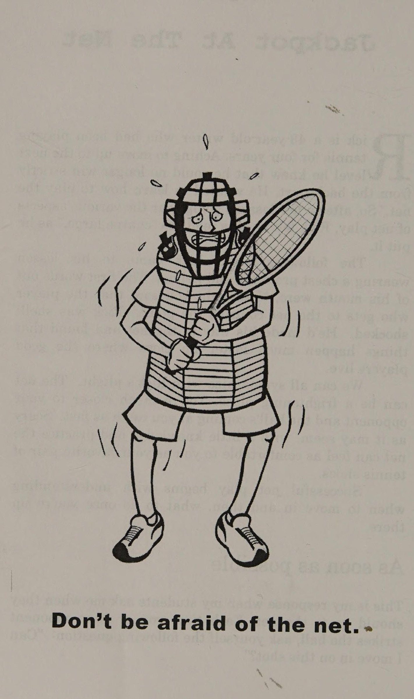
Hãy nhớ rằng hầu hết các lỗi vô lê xảy ra ở cú vô lê đầu tiên khi các tay vợt thường cố gắng đưa bóng đi. Hiếm khi cú vô lê đầu tiên của bạn là một cú sút xa. Khi bạn đến gần lưới, hãy lên kế hoạch đánh ít nhất hai cú vô lê.
Cú bắt lưới (Volley) không dành cho những tay vợt đu dây. Cú vô lê có lẽ là cú đánh gặp nhiều khó khăn nhất trong thời đại quần vợt “wham-bam, o-chết tiệt-tôi-bỏ lỡ” này.
Cảnh quay “mới” hot trong giải đấu chuyên nghiệp là gì? Cú vô lê lắc lư.
Thường được chơi ở đâu đó xung quanh hoặc phía sau vạch giao bóng, cú vô lê xoay người về bản chất là một cú đánh nền mà bạn đánh trước khi nó nảy lên. Đó có thể là một cú đánh 80 TENNIS BEYOND BIG SHOTS cực kỳ mạnh mẽ, có điểm kết thúc nhưng nó đòi hỏi phải căn thời gian chuẩn xác và có khả năng xảy ra sai sót rất lớn.
Theo tôi, cú vô lê xoay người là một cú sút thiếu kiên nhẫn. Khi bạn có cơ hội, hãy đánh bóng lên trời từ giữa sân hoặc xa hơn về phía sau, đừng. cố gắng kết thúc điểm bằng một cú đánh.
Thực hiện một cú vô lê tiếp cận, di chuyển vào lưới và giành điểm với tỷ lệ vô lê hoặc đánh đầu cao hơn.
Để lại những cú vô lê mạnh mẽ, đong đưa cho Serena và Maria. Giơ tay lên, chân giận dữ và chuyển động ngắn. x Cú ném bóng qua đầu Một cú lốp bóng của đối thủ gợi lên một trong hai suy nghĩ trong đầu tay vợt quần vợt:
Hoặc "Ừ, em yêu!" hoặc "Ồ không!" Những tay vợt giỏi thích thú khi đối thủ của họ lốp bóng vì điều đó thường có nghĩa là họ sẽ đánh được một cú đập từ trên cao.
Những tay vợt ở cấp độ thấp hơn ghét nhìn thấy những cú lốp bóng vì họ biết việc thực hiện những cú đánh đầu khó khăn như thế nào và sợ rằng họ sẽ không thể đưa bóng trở lại cuộc chơi.
Khi bạn thấy thùy thùy đi lên, ngay lập tức vung chân phải về phía sau và xoay vai và hông theo cùng một hướng. Đồng thời, đưa vợt thẳng qua tai phải giống như khi nhấc điện thoại và đặt vợt vào tư thế “cào ngược”.
Khi cánh tay phải của bạn di chuyển ra sau đầu, đặt ngón trỏ trái lên và chỉ vào quả bóng đang tới.
Điều này sẽ giúp bạn theo dõi bóng và định vị chính mình. Nếu bạn nhận thấy cánh tay trái của bạn đang di chuyển về phía sau đầu, điều này có nghĩa là cú lốp bóng đã sâu và bạn phải lùi lại nhiều hơn. Nếu ngón trỏ của bạn rơi xuống phía trước, điều đó có nghĩa là bạn phải lùi về phía lưới.
Cố gắng hết sức để đánh bóng khi nó vẫn còn ở trên không.
Đánh từ trên cao trước khi nó nảy lên sẽ khiến đối thủ Jackpot At The Net 81 của bạn có ít thời gian hơn để hồi phục và đoán trước cú đánh của bạn. Ngoài ra, nếu bạn để bóng nảy, nó thường sẽ nảy ra xa lưới hơn, khiến việc thực hiện cú đánh đầu của bạn khó khăn hơn.
j Một ngoại lệ cho điều này là nếu bạn đang chơi bên ngoài và đối thủ của bạn tung ra một cú lốp bóng phòng thủ cao vào tầng bình lưu.
Cú lốp bóng càng cao, nó rơi càng nhanh và bạn càng khó tính thời gian. Cú lốp bóng “moonball” vẫn sẽ nảy đủ cao để bạn có thể tung ra một cú đánh mạnh mẽ từ trên cao. Ngoài ra, nếu bạn đang nhìn vào mặt trời, bạn có thể muốn để quả bóng nảy lên để bạn có thêm một chút thời gian chuẩn bị. Hãy nhớ sử dụng tay trái để che mắt khỏi ánh nắng mặt trời.
Nếu bạn không cảm thấy mình có thể quay ngược thời gian để đánh một cú cân bằng từ trên cao, chỉ cần biến cú đánh thành một cú vô lê.
Đưa bóng ra khỏi không trung và đấm sâu vào trong. Sau đó di chuyển trở lại vào lưới.
Sẽ có lúc cú lốp bóng của đối thủ quá tốt khiến bạn không thể hạ gục được. Trong trường hợp này, hãy chạy lùi nhanh nhất có thể và cố gắng bám theo quả bóng. Đừng chạy trực tiếp vào quả bóng mà hãy chạy vòng quanh nó.
Khi bạn di chuyển trở lại, hãy nhanh chóng rời mắt khỏi quả bóng và nhìn nhanh vào đối thủ của bạn. Nếu anh ta ở lại sân sau sau khi lốp bóng, sẽ không có áp lực nào lên cú đánh của bạn.
Đơn giản chỉ cần lốp bóng về phía sau và di chuyển vào vị trí để thực hiện cú đánh bóng về cơ bản.
Nếu bạn thấy anh ta lao vào lưới sau khi lốp bóng—như một tay vợt giỏi nên làm—bây giờ bạn phải nghĩ ra một cú đánh tốt. Thường xuyên hơn không, đây sẽ là một cú lốp bóng khác. Làm cho anh ta đạt được thách thức về thể chất.
Nếu bạn quay ngược thời gian để chuẩn bị phía sau quả bóng, bạn có thể cân nhắc thực hiện một cú vô-lê nhưng nếu bạn cảm thấy mất thăng bằng theo bất kỳ cách nào, hãy ném một cú lốp bóng, giữ sâu và khiến anh ta đánh một cú đánh qua đầu. Hãy nhớ rằng, luôn tạo cơ hội cho đối thủ ghi điểm nếu mắc lỗi.
82 TENNIS SAU NHỮNG CÚ ĐÁNH LỚN Nhiều tay vợt dành cả cuộc đời quần vợt của mình để dán mắt vào đường cuối sân (Baseline) để chơi quần vợt phòng thủ. Mặc dù chiến lược này sẽ cho phép bạn giành chiến thắng trong nhiều trận đấu với những tay vợt cấp thấp hơn, nhưng nếu bạn muốn sánh vai với những chàng trai và cô gái lớn trong câu lạc bộ của mình, hãy để nỗi sợ hãi trong túi vợt của bạn và thực hiện hành trình lên lưới. Khi khả năng dự đoán cũng như kỹ năng đánh bóng và đánh đầu của bạn được cải thiện, bạn sẽ thấy nhiều trận đấu kết thúc có lợi cho mình hơn.
Chương 9: Hai Cú Đánh Đáng Kính Trọng (Two Shots That Deserve Respect)
Chapter 9: Two Shots That Deserve Respect
Có hai cú đánh trong quần vợt mà tay vợt Hai cú đánh đáng được tôn trọng. Những tay vợt sử dụng chúng không nhận được sự tôn trọng. Chúng bị chế giễu, bị coi thường nhưng có thể là hai trong số những vũ khí tàn khốc nhất của bạn. Tôi đang nói về cú lốp bóng và cú thả bóng.
Yêu thích cú lốp bóng của Rodney Dangerfield trong môn quần vợt và Nếu bạn xem một trận đấu giữa những tay vợt ở cấp độ 2.0 đến 3.0, bạn sẽ thấy một lễ hội lốp bóng: cú lốp bóng này nối tiếp cú lốp bóng khác.
Những tay vợt ở cấp độ này chỉ đang học cách tập trung, vì vậy họ lốp bóng qua lại và giữ bóng rất tốt. Mọi người chế nhạo những tay vợt thích ném bóng cứ sau hai hoặc ba cú đánh, nhưng họ có vẻ chơi đùa.
để quên rằng những người vận động hành lang giỏi đã có Bây giờ hãy xem tôi nhiều danh hiệu hơn bất kỳ trận đấu nào khác giữa tôi người ở câu lạc bộ.
tay vợt ở cấp độ 3,5 đến 4,0 và bạn sẽ | Vic Braden thường xuyên nhìn thấy | Thạc sĩ giảng dạy chuyên nghiệp hoàn toàn khác với thương hiệu quần vợt. Những tay vợt này đã học cách đánh bóng mạnh hơn và nhận thấy rằng đôi khi họ có thể thực hiện được những cú đánh ấn tượng, có thời điểm lớn mà mọi người đều khao khát.
Như tôi đã nói, cảm giác đó gây nghiện và nhiều tay vợt cảm thấy rằng vì họ có thể đánh bóng mạnh nên họ phải đánh bóng thật mạnh—trong mỗi cú đánh.
Vì vậy, họ gạt cú lốp bóng sang một bên với một nụ cười khinh bỉ trịch thượng, thay vào đó họ chọn giành chiến thắng một lần trong trăng xanh 84 TENNIS BEYOND BIG SHOTS mà họ thấy những tay vợt chuyên nghiệp thành công trên TV.
Tuy nhiên, vấn đề là nỗ lực chụp ảnh đẹp này thường xuyên dẫn đến lỗi. Quần vợt ở cấp độ này có thể được mô tả như một cuộc đua xem ai có thể bắn trượt đủ số cú đánh để thua trận trước.
Bây giờ hãy tua nhanh đến trận đấu cấp 4,5 đến 5,0. Bạn thấy gì? Những điểm dài và thú vị với—bạn hiểu rồi—rất nhiều cú lốp bóng!
Những tay vợt này đã cú đánh vượt qua (Passing shot) được cái tôi cao độ khi thực hiện cú đánh hiếm có đẳng cấp thế giới đó và đã học được rằng cú lốp bóng là một trong những vũ khí hiệu quả nhất trong trò chơi. me Giảm lỗi của bạn ngay lập tức Một trong những khác biệt lớn nhất giữa tay vợt ở cấp độ 3,5 và những người ở cấp độ cao hơn là những tay vợt mạnh hơn sẽ mắc ít lỗi hơn. Mặc dù cú lốp bóng có nhiều công dụng từ cả quan điểm tấn công lẫn phòng thủ, nhưng điều khiến nó trở thành người bạn tốt nhất của tay vợt quần vợt là nó cho phép chúng ta giảm thiểu những lỗi của mình.
Nhiều lỗi là do cố gắng bắn sai thời điểm. Trong khi các tay vợt 3.5 vẫn đang cố gắng chinh phục thế giới quần vợt bằng những cú đánh lướt lưới, làm sạch đường biên, thì những tay vợt 5.0 nhận ra rằng chiến thắng trong quần vợt không chỉ bao gồm một vài cú đánh đẹp mà là rất nhiều cú đánh khá hay.
Những tay vợt này đã chuyển sự tập trung của họ ra khỏi tâm lý "cú hích lớn" và chuyển sang phát triển điểm. Họ kiên nhẫn giữ bóng trong cuộc, di chuyển nó xung quanh, dò tìm điểm yếu và trên hết là không bỏ lỡ. Thay vì thử sức mạnh ấn tượng, có độ rủi ro cao khi mất thăng bằng, họ sẽ chỉ tung ra một cú lốp bóng cao và sâu.
Chiến lược này làm giảm đáng kể lỗi của họ.
Hai cú đánh đáng được tôn trọng 85 Đánh trúng Bất cứ lúc nào bạn cảm thấy không thoải mái với vị trí của mình với bóng hoặc tình huống trên sân, hãy đọc thuộc lòng những từ “đánh lên” cho chính mình.
Đưa bóng trở lại lưới và buộc đối thủ phải đánh thêm một cú nữa để giành điểm. Ngay cả cú lốp bóng ngắn nhất, yếu nhất cũng tốt hơn là một cú ném lỗi, bởi vì bằng cách buộc đối thủ của bạn đánh thêm cú đánh đó, bạn đang tạo cho họ thêm một cơ hội để bỏ lỡ. Bạn sẽ ngạc nhiên về mức độ thường xuyên họ sẽ giao bóng bạn.
Đuổi bóng và đánh đầu là hai trong số những kỹ năng đòi hỏi thể lực cao nhất và gây khó chịu nhất trong trò chơi để thành thạo. Ngay cả khi cú lốp bóng của bạn bị cắt đi, bạn vẫn khiến đối thủ phải đánh thêm một cú nữa. Và nếu bạn có thể buộc họ phải đánh hai hoặc ba cú đánh từ trên cao để kết thúc một điểm, lưỡi của họ cuối cùng sẽ bị kéo lê.
Một lợi thế nữa của cú lốp bóng là nó sẽ giúp người ném lưới phải đoán.
Nhiều tay vợt “nam nhi” bướng bỉnh và không chịu lốp bóng. Đối thủ của họ biết điều này nên họ lao vào lưới như một con bò đực trong cửa hàng đồ sứ. Bằng cách thỉnh thoảng tung ra một cú lốp bóng, bạn đang nói với đối thủ đang lao vào lưới của mình rằng anh ta phải luôn nhận thức được khả năng xảy ra một cú lốp bóng. Với suy nghĩ này trong đầu, anh ta sẽ không lao tới mạnh mẽ hoặc tiến gần đến lưới.
Các loại lốp bóng khác nhau Có hai loại lốp bóng—tấn công và phòng thủ. Một cú lốp bóng tấn công sẽ giúp bạn giành được điểm, trong khi một cú lốp bóng phòng thủ được thiết kế để giúp bạn giữ được điểm.
Ví dụ: đối thủ của bạn tung ra một cú đánh tiếp cận mạnh và bạn phải cố gắng để đạt được nó. Thay vì thử thực hiện một cú sút có tỷ lệ đánh vô-lê thấp từ một vị trí khó xử trên sân với bóng nằm ngoài khu vực tấn công của bạn, hãy tung một cú lốp bóng cao, mang tính phòng thủ và khiến anh ta đánh bóng để đánh bại bạn. 86 TENNIS VƯỢT QUÁ NHỮNG SÚC LỚN Đánh được hai cú đánh đáng được tôn trọng 87 Một cú lốp bóng phòng thủ thậm chí có thể không đi qua đầu đối thủ nhưng bằng cách đánh nó rất cao, tốt nhất là sâu và chéo sân trong đó sân dài hơn 6,2 feet chéo sân, bạn đang cho mình thời gian để hồi phục, vị trí của bạn hoặc lấy lại nhịp thở trong khi đối thủ của bạn phải quyết định cách chơi bóng. Nếu anh ta đánh từ trên cao, anh ta sẽ gặp khó khăn, bởi vì quả bóng được đánh càng cao thì nó sẽ rơi càng nhanh, khiến cho cú đánh khó khăn hơn.
Thông thường, nếu bạn đánh một cú lốp bóng đủ cao và đủ sâu, đối thủ của bạn sẽ buộc phải để nó nảy lên.
Sau đó, anh ta sẽ phải lùi ra xa lưới nhiều hơn để đánh đầu hoặc trả bóng bằng một cú đánh nền. Dù bằng cách nào, bạn sẽ đẩy anh ta ra khỏi lưới vào một vị trí ít đe dọa hơn, đồng thời cho bản thân thời gian để hồi phục.
Một cú lốp bóng tấn công bất ngờ Thời điểm thực hiện một cú lốp bóng tấn công là khi bạn kiểm soát được cú đánh của mình và một cú lốp bóng là điều cuối cùng mà đối thủ của bạn mong đợi. Giả sử cô ấy chạm lưới sau một cú sút tiếp cận ngắn. Khi bạn tiến về phía trước, cô ấy có thể đoán trước được một cú sút và tiến gần hơn đến lưới. Đây là thời điểm lý tưởng để làm cô ấy ngạc nhiên bằng một cú cắt tóc.
Cú lốp bóng tấn công không được đánh cao bằng cú lốp bóng phòng thủ và chỉ nên đi qua vợt đang dang rộng của tay vợt trên lưới. Điều này sẽ khiến bóng có độ nảy thấp, khiến đối thủ của bạn cực kỳ khó đuổi theo. Hãy coi cú lốp bóng tấn công là lựa chọn đánh vô-lê thứ ba của bạn. Khi đối thủ của bạn tấn công vào lưới, bạn có thể chuyền cho cô ấy dọc biên, chéo sân hoặc qua đầu cô ấy.
Tôi thường xuyên sử dụng cú lốp bóng làm lựa chọn đầu tiên khi bị tấn công, đặc biệt là trong vài trận đầu tiên của trận đấu. Tôi muốn kiểm tra khả năng di chuyển và kỹ năng đánh đầu của đối thủ và nếu tôi có thể khiến họ đánh một vài cú đánh đầu vào đầu trận đấu, tôi đã bắt đầu quá trình làm họ mệt mỏi. Rất nhiều tay vợt đánh mạnh vào 88 TENNIS BEYOND BIG SHOTS trong bốn hoặc năm ván đầu tiên của trận đấu, nhưng sau đó, họ mệt đến mức gần như không thể nhấc vợt lên quá đầu.
Cuối cùng, hãy nhớ rằng đối thủ của bạn không cần phải lao vào lưới để bạn thực hiện một cú lốp bóng. Một cú lốp bóng cao ở giữa một pha bóng qua lại có thể giao bóng một số “mục đích”. Nó thay đổi tốc độ của quả bóng, nhịp điệu của pha đánh bóng, và có lẽ quan trọng nhất là nó có thể giúp bạn xả hơi một chút trong khi điểm vẫn đang diễn ra. Jimmy Connors là bậc thầy trong lĩnh vực này, đặc biệt là vào giai đoạn cuối sự nghiệp của ông.
Có rất nhiều cú đánh trong quần vợt sẽ rất thú vị nếu có, chẳng hạn như cú giao bóng 440 dặm/giờ hoặc cú thuận tay nguyên tử, nhưng bạn không thực sự cần phải là một tay vợt chiến thắng. Bạn cần phải có một cú lốp bóng tốt vì nó không chỉ có thể giúp bạn thoát khỏi một tình huống chật hẹp mà còn có thể là vũ khí hủy diệt nhất của bạn.
Một con dao găm vào tim họ. Tôi thực sự thích cú đánh rơi, bởi vì nó hoạt động rất hiệu quả khi kết hợp với cú lốp bóng—và nó khiến đối thủ phát điên.
Một cú lốp bóng theo sau là một cú đánh rơi, hoặc ngược lại, là một cách tuyệt vời để hạ gục những kẻ to lớn nam nhi mà tất cả chúng ta đều phải đối mặt.
Bạn có thể thực hiện cú đánh thả bóng bằng thuận tay, trái tay hoặc vô lê. Động tác này tương tự như việc múc kem ra khỏi hộp.
Đó là một cú cắt bóng phóng đại khi bạn đưa vợt của mình từ vị trí cao xuống vị trí thấp. Khi tiếp xúc, bạn muốn "múc" dưới bóng. Điều này làm tăng thêm độ xoáy xuống, làm chậm quả bóng và thậm chí có thể khiến nó bật ngược lại nếu áp dụng đủ độ xoáy.
Lý tưởng nhất, nơi tốt nhất để thực hiện cú đánh thả bóng là khi bạn ở hoặc gần đường giao bóng và đối thủ của bạn đã quay lại vạch cuối sân của mình. Bạn càng ở xa lưới thì cú đánh càng khó thực hiện và đối thủ của bạn càng có nhiều thời gian để phản ứng.
Hai Cú Đánh Đáng Tôn Trọng 89 Một yếu tố quan trọng của cú đánh rơi là sự bất ngờ, vì vậy bạn muốn làm cho đối thủ nghĩ rằng bạn sắp “lái” bóng hơn là “thả” nó. Sử dụng động tác backswing bình thường của bạn nhưng thay vì lái xuyên qua quả bóng, ở thời điểm cuối cùng hãy “húc” xuống dưới nó để thả bóng. Cú đánh rơi là cú đánh “chạm” đòi hỏi phải luyện tập nhiều để có được “cảm giác” thích hợp. Một trong những cách tốt nhất để phát triển “cảm giác” này là chơi quần vợt mini.
Khi bạn chơi đơn, hãy nhắm phần lớn các cú đánh của bạn xuống đường biên.
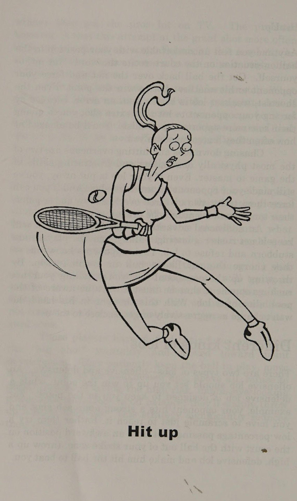
Mặc dù bạn đang đánh qua phần cao nhất của lưới, bóng sẽ di chuyển một khoảng cách ngắn hơn khiến đối thủ của bạn có ít thời gian hơn để phản ứng, cộng với việc bạn giữ bóng ở phía trước, điều này sẽ giúp bạn định vị tốt hơn để phản ứng với cú đánh tiếp theo.
Đây là một trò chơi sẽ khiến đối thủ của bạn phát điên.
Đánh một cú thả bóng như một cú đánh tiếp cận.
Hãy tưởng tượng kịch bản này: Ba lần gần nhất Nancy đánh bóng ngắn cho bạn, bạn di chuyển vào, tung cú sút tiếp cận sâu vào góc trái tay của cô ấy và lao vào lưới.
Bây giờ, cô ấy đánh một quả bóng ngắn khác và khi bạn chuyển sang tấn công, bạn nghĩ Nancy sẽ mong đợi điều gì?
Tất nhiên, một quả bóng sâu khác vào góc.
Vì vậy, khi cô ấy lùi lại với sự đề phòng, bạn tung một cú sút và theo nó vào lưới.
Ngay cả khi Nancy có thể phản ứng đủ nhanh để chạm tới cú đánh rơi của bạn, cô ấy giờ đây phải tranh chấp với bạn trên lưới. Đó là một chiến thuật tuyệt vời để khiến đối thủ của bạn mất thăng bằng.
Chỉ cần đảm bảo rằng bạn ở đúng đường cuối sân (Baseline) khi thử nó.
Bạn sẽ không sử dụng nhiều cú sút khi đánh đôi vì bạn thường không muốn kéo đối thủ vào lưới. Tuy nhiên, khi cả hai thành viên của đội đối phương đều ở vạch cuối sân, cú đánh có thể là một vũ khí hữu hiệu.
Rất nhiều tay vợt lớn chế giễu những cú lốp bóng và thả bóng và sẽ cho bạn một cái nhìn bẩn thỉu khi bạn sử dụng "cú đánh chạm" để đánh bại họ. Bỏ qua chúng! Về cơ bản, điều họ đang nói là 90 TENNIS SAU CÁC CÚ ĐÁNH LỚN là bạn không nên đánh những cú đánh đó vì họ không muốn chạy theo chúng.
Hãy nhớ rằng, chuyển động cũng là một kỹ năng quan trọng như cú đánh—trong tâm trí tôi còn hơn thế nữa.
Nếu đối thủ của bạn chưa phát triển các kỹ năng di chuyển để che chắn cú lốp bóng hoặc cú đánh rơi—đó là cách lịch sự để nói rằng anh ta không khỏe hoặc chậm—hãy tận dụng lợi thế đó và đừng xấu hổ.
Khi đối mặt với một tay vợt có cú trái tay yếu, bạn sẽ đánh bóng ở đâu? To his backhand, of course! Vì vậy, nếu đối thủ cạnh tranh của bạn không tiến triển tốt, hãy sử dụng điều đó làm lợi thế cho bạn. Lob ’em and drop shot ’em till they drop!
Hai Cú Đánh Đáng Được Tôn Trọng 91 TẠI SAO MINI-TENNIS LÀ TỐT CHO BẠN?
és Bạn đứng ở vạch giao bóng bên phía sân của bạn và bạn tập của bạn cũng làm như vậy. Bạn tập trung qua lại, giữ bóng bên trong bốn ô giao bóng.
Ngoài việc là một bài tập khởi động tuyệt vời, quần vợt mini còn mang đến nhiều thứ cho tay vợt ở mọi lứa tuổi và mọi khả năng. Nó cho phép tay vợt ở cấp độ 1,0 đến 2,5 ngay lập tức có ý tưởng đánh bóng qua lưới và tự tin vào khả năng đánh vô-lê của mình.
Chuyên gia quần vợt Peter Burwash đã viết rằng ông "dạy một cậu bé 3 tuổi và một người đàn ông 80 tuổi đánh 100 quả bóng liên tiếp qua lưới trong giờ đầu tiên chơi quần vợt" thông qua quần vợt mini. Đối với tay vợt từ 3.0 đến 4.0, quần vợt mini cho phép họ tiếp xúc, tính nhất quán và hiểu biết về phát triển điểm. Bằng cách phải giữ bóng trong đường giao bóng, sức mạnh sẽ bị loại bỏ khỏi phương trình.
Bạn phải giành được điểm của mình bằng cách điều động tay vợt khác đi vòng quanh sân.
Đối với tay vợt 4,5 trở lên, quần vợt mini cho phép họ làm điều tương tự. Nếu không có lực thì rất khó để kết thúc một điểm, vì vậy các pha giao bóng trong quần vợt mini có xu hướng kéo dài với nhiều lần xuất phát và dừng nhanh.
Khi tôi còn học đại học, chúng tôi thường chơi những trận quần vợt mini.
Chúng tôi không chỉ tăng cường khả năng kiểm soát của mình mà còn có được một buổi tập luyện tuyệt vời và có rất nhiều niềm vui! Đây là một chương trình quần vợt mini để giúp bạn bắt đầu.
1.
Tập hợp xuống hàng nhiều lần nhất có thể.
2.
Đánh chéo sân nhiều lần nhất có thể.
3.
Thi đấu quần vợt mini toàn sân, sử dụng cả hai hộp giao bóng.
Try to move each other around.
4.
Chơi đầu tiên tới 21 điểm. Đơn hoặc đôi Một số tay vợt gạt quần vợt mini sang một bên, gọi nó là "quần vợt trẻ em". Roger Federer, Martina Navratilova và một vài người khác mà tôi từng xem thi đấu sẽ không đồng ý.
92 TENNIS VƯỢT QUA LỚN
Chương 10: Vượt Qua Những Quả Bóng Khó Khăn Nhất (Trumping Tennis’s Toughest Shots)
Chapter 10: Trumping Tennis’s Toughest Shots
Rất ít cú đánh gây thêm nỗi kinh hoàng cho những cú đánh khó khăn nhất của Trumping Tennis, làm trái tim của tay vợt quần vợt phàm trần. Mặc dù chúng khó thực hiện nhưng với một số mẹo và cách tiếp cận “Chỉ cần lấy lại”, bạn sẽ có thể xử lý chúng và thường gây bất ngờ cho đối thủ bằng cách đánh trả một cú đánh mà họ nghĩ rằng họ sẽ đánh để giành chiến thắng.
Cú vô lê nửa người ‘ko là bốn cú sút trong trò chơi khiến người ta sợ hãi. Cú vô lê nửa người, hay cú bắt bóng, là cú sút khó chịu mà bạn phải thực hiện khi bóng nảy ngay dưới chân bạn. Bạn không thể di chuyển về phía trước đủ nhanh để đánh nó từ trên không và nó nảy quá gần bạn để thực hiện một cú đánh tiếp đất thích hợp. Nghĩa đen của nó là nửa cú vô lê và nửa cú đánh nền.
Thông thường chúng tôi bị bắt quả bóng phải thực hiện nửa cú vô lê khi chúng tôi đến gần lưới và đối thủ làm rơi bóng dưới chân chúng tôi. Tuy nhiên, đôi khi, chúng ta phải thực hiện một nửa cú vô lê khi chúng ta đang đứng bên trong đường biên ngang của mình và đối thủ của chúng ta tung ra một cú đánh sâu ngay vào chúng ta.
Mục tiêu của bạn khi thực hiện cú vô lê một nửa là đưa nó trở lại cuộc chơi. Với một cú backswing cực ngắn hoặc hoàn toàn không có backswing, hãy giữ vững cổ tay, uốn cong đầu gối và hạ người xuống ngang tầm bóng, giữ vợt ở phía trước bạn.
Ngay khi bóng chạm đất, hãy giữ mặt vợt vuông góc hoặc hơi mở ra. Cảm giác như nhẹ nhàng nhấc bóng qua lưới. Cú đánh của bạn nên mang tính đẩy hơn là xoay. Ở mức thấp và sử dụng một chút, và tôi lặp lại chuyển động nhẹ, hướng lên trên.
Một bài tập tốt để luyện tập nửa cú vô lê là tự nói những từ “boom boom” với chính mình nhanh nhất có thể khi đánh cú đánh. Điều này sẽ giúp bạn cảm nhận được nhịp điệu liên quan và cũng sẽ cải thiện thời gian của bạn.
Đừng cố đánh trúng cú ghi điểm trực tiếp trong nửa cú vô lê, chỉ cần lấy lại và sau đó di chuyển vào lưới cho cú đánh tiếp theo của bạn hoặc lùi về phía sau đường cuối sân để bạn không phải đánh một quả khác. Nhà vô địch Pháp mở rộng Rafael Nadel làm cho cú đánh trái tay này trông có vẻ dễ dàng, nhưng đối với hầu hết chúng ta, cú đánh trái tay trên cao có thể là cú đánh khó nhất trong trò chơi. Đó là một trong những bức ảnh chỉ cần lấy lại, vì vậy đừng cố làm bất cứ điều gì lạ mắt hoặc hung hãn với nó.
Chỉ cần đưa bóng trở lại cuộc chơi và bắt đầu từ đó.
Khi đối thủ của bạn ném một cú lốp bóng ngắn qua vai trái tay của bạn, nếu bạn phản ứng đủ nhanh, nhiều lần bạn có thể chạy vòng qua nó và đánh cú đánh qua đầu thông thường của mình. Tuy nhiên, nếu bạn phải đánh bóng ở phía trái tay của mình, tôi khuyên bạn nên chuyển cú đánh thành cú vô lê.
Ngay lập tức xoay người và đợi bóng rơi vào vùng đánh cú bắt lưới (Volley) của bạn.
Sử dụng cú đánh lùi ngắn, chỉ cần đấm bóng sâu về phía sau và bắt đầu tìm kiếm cú đánh tiếp theo của đối thủ.
Ngay tại bạn Đã bao nhiêu lần bạn vào lưới và đối thủ ném bóng ngay vào bạn?
Điều này xảy ra khá thường xuyên, đặc biệt là trong đánh đôi, và trên thực tế, đây là một chiến lược xuất sắc thường còng tay tay vợt trên lưới.
Vậy, làm thế nào để bạn tránh được hội chứng con nai trong đèn pha khi bạn là mục tiêu dễ dàng cho những cú bắn vào người của đối thủ? Lý tưởng nhất là khi một quả bóng bay tới ngay tại những cú đánh khó nhất 95 của Trumping Tennis ngay trên cơ thể bạn, hãy cố gắng di chuyển sang một bên và chơi một cú vô lê thuận tay hoặc trái tay thoải mái.
Tuy nhiên, thông thường bạn sẽ không có thời gian để di chuyển.
Trong trường hợp đó, hãy giữ vững cổ tay của bạn và đánh trái tay.
Đó thực sự là cách duy nhất để bạn có thể đưa vợt về phía trước cơ thể mà không bị vặn vẹo nghiêm trọng và nguy hiểm ở cánh tay. Siết chặt tay cầm và chỉ để bóng chạm vào dây.
Cú đánh ngược hoặc cú đánh qua vai Một cú lốp bóng xoáy lên đi qua đầu bạn và bạn biết ngay rằng mình đang gặp rắc rối. Bạn không thể đưa bóng lên không trung, và việc đi phía sau nó để đánh một cú đánh có kiểm soát là điều không hề dễ dàng. Bạn sẽ phải thực hiện cú sút ở phía trước cơ thể và quay lưng vào lưới. Bây giờ thì sao?
Ille Nastase, một trong những tay vợt tài năng nhất từng cầm vợt, đã thực hiện một cú đánh nổi tiếng mà anh ấy gọi là “Bucharest Backfire” chỉ vì tình huống này. Hãy thẳng hàng sao cho khi bóng nảy lên, nó sẽ qua vai trái của bạn (nếu bạn thuận tay phải; đối với người thuận tay trái thì đó là vai đối diện). Sau đó vung cánh tay của bạn và hất cổ tay của bạn lên quả bóng qua vai trái.
Kiểu cầm vợt Continental là tốt nhất cho cú đánh này vì nó giúp bạn linh hoạt hơn một chút ở cổ tay.
Bạn có thể thực hiện bất kỳ kiểu cú sút nào có hiệu ứng ngược, từ một cú lốp bóng phòng thủ cao đến một cú tấn công thấp chỉ để phá lưới. Tất cả phụ thuộc vào mức độ thể thao và năng nổ mà bạn muốn có mặt trên sân. Tuy nhiên, đối với hầu hết chúng ta, mục tiêu của chúng ta ở đây chỉ là giành lại bóng bằng một cú lốp bóng cao và giữ nguyên điểm.
Mặc dù bốn phát bắn này có thể không bao giờ là vũ khí lớn nhất của bạn nhưng chúng không nhất thiết phải là điểm yếu lớn. Bằng cách sử dụng các kỹ thuật đơn giản và _ cách tiếp cận _ chỉ cần lấy lại, bạn có thể trả lại những quả bóng khó này và duy trì những cú đánh khó nhất của Trumping Tennis 97 trong khi chờ đợi cơ hội để kiểm soát điểm.
Chương 11: Thời Điểm Bùng Nổ Sức Mạnh (When To Turn On The Power)
Chapter 11: When To Turn On The Power
Bây giờ, Khi nào cần bật nguồn, khoảnh khắc mà bạn đang chờ đợi: một chương về nguồn điện. Khi bạn đã phát triển khả năng đặt các cú đánh của mình một cách nhất quán ở nơi bạn muốn, việc tăng thêm sức mạnh cho những cú đánh đó có thể là điều tuyệt vời.
Bạn không cần phải vung mạnh để đánh mạnh Bạn có bao giờ để ý thấy cậu bé 10 tuổi gầy gò ở câu lạc bộ đánh bóng rất nhiều không? Khi đứa trẻ thực hiện hết cú đánh tiếp đất này đến cú đánh tiếp đất khác nhưng vẫn cố gắng giữ được quả bóng trong sân, bạn tự nhủ: “Tôi khỏe hơn thằng lùn nhỏ bé đó rất nhiều, vậy tại sao mỗi lần tôi cố gắng đánh thật mạnh thì cú đánh của tôi lại rơi vào mã vùng tiếp theo?” Thực tế là, sức mạnh được kiểm soát không đến từ cơ bắp to lớn hoặc bằng cách vung mạnh vào bóng. Trên thực tế, một cú vung mạnh hơn thường tạo ra một quả bóng chuyển động chậm hơn! Điều này đúng bởi vì khi chúng ta thực hiện một cú vung mạnh và mạnh, các cơ ở cánh tay sẽ căng lên. Sự căng thẳng này thường khiến chúng ta mất kiểm soát mặt vợt dẫn đến đánh sai, bóng di chuyển chậm hơn.
Hầu hết những tay vợt và chuyên gia cao cấp thường vung tay ở mức khoảng 75% khả năng của họ.
Với tỷ lệ phần trăm này, họ có thể giữ cho mặt vợt của mình ổn định và do đó các cú đánh của họ trong tầm kiểm soát.
Để tăng thêm sức mạnh cho cú đánh của bạn, bạn cần tăng tốc độ của đầu vợt khi nó tiếp xúc với bóng. Điều này được thực hiện tốt nhất bằng cách phối hợp hai chân của bạn, “Sao cô ấy đánh mạnh thế?” Khi nào nên bật Power 101 hông, thân và vai để chúng phối hợp với nhau để đẩy vợt của bạn vào bóng.
Sự phối hợp này được gọi là chuỗi động năng của bạn và nó có nghĩa đơn giản là sử dụng các mối nối khác nhau trong khung dây—chân, hông, thân và vai, cánh tay và cổ tay, để truyền năng lượng từ bộ phận này sang bộ phận khác.
Giả sử bạn muốn thêm một chút nước trái cây vào cú thuận tay của mình. Đợi một quả bóng nằm trong vùng tấn công giữa eo và đầu gối của bạn. Khi bạn chuẩn bị, cuộn vai, thân và hông và uốn cong đầu gối. Khi bạn bắt đầu cú swing của mình, chỉ cần tháo các bộ phận ra.
Sau đó, năng lượng sẽ được truyền qua cơ thể bạn, hình thành ở mỗi mắt xích trong chuỗi. Nó di chuyển lên từ chân của bạn, qua hông, thân, vai, cánh tay và cổ tay, cuối cùng đến vợt của bạn.
Kết quả cuối cùng là đầu vợt di chuyển nhanh hơn giúp truyền tốc độ vào cú đánh của bạn. Đây là cách mà đứa trẻ gầy gò đó và những vận động viên chuyên nghiệp tạo ra rất nhiều sức mạnh mà vẫn duy trì được khả năng kiểm soát của mình.
Đối với những người nóng lòng muốn bước vào thế giới của những kẻ đánh lớn, bạn có thể thực hiện một số điều chỉnh về thiết bị để tự động giúp tốc độ chụp của bạn nhanh hơn. Dưới đây là ba: 1. Mua một cây vợt cứng hơn. Một cây vợt cứng hơn sẽ cung cấp nhiều sức mạnh hơn. Hiện nay trên thị trường có rất nhiều loại vừa cứng hơn vừa nhẹ hơn. Hãy hỏi cửa hàng quần vợt chuyên nghiệp hoặc địa phương của bạn để được tư vấn.
2. Dây vợt của bạn lỏng hơn. Điều này cũng sẽ giúp tăng sức mạnh cho cú đánh của bạn. Bắt đầu bằng cách buộc vợt của bạn lỏng hơn từ 3 đến 5 pound và xem cảm giác như thế nào.
3. Thêm băng chì. Băng chì được dán xung quanh các khu vực khác nhau trên đầu vợt của bạn sẽ làm cho vợt nặng hơn và do đó tạo ra nhiều lực hơn cho các cú đánh của bạn.
Đây chỉ đơn giản là những phím tắt để truy cập nguồn điện và có thể khiến bạn mất kiểm soát trong một thời gian. Khi tất cả đã được nói và làm xong, nguồn năng lượng tốt nhất và đáng tin cậy nhất là kỹ thuật được cải tiến và việc sử dụng chuỗi động học của bạn.
Khi nào cần tăng thêm sức mạnh Cú giao bóng là cú đánh quyết định của tay vợt có sức mạnh và trong suốt lịch sử, chúng ta đã thấy một số cú đánh đại bác (Big Shot). Cho đến nay, Andy Roddick đang giữ kỷ lục về cú giao bóng nhanh nhất từng được thực hiện với tốc độ 155 dặm/giờ, trong khi đối với nữ, Venus Williams đã thực hiện cú giao bóng kỷ lục với tốc độ 127,4 dặm/giờ. Mặc dù bạn có thể không đạt được tốc độ 100 dặm/giờ trên súng radar, nhưng một cú giao bóng mạnh hơn có thể giúp bạn giành được một số điểm dễ dàng cũng như khiến đối thủ sợ hãi.
Có một câu nói cổ trong quần vợt rằng “bạn chỉ giỏi bằng cú giao bóng thứ hai của mình” và giống như hầu hết các câu nói cũ, nó có một phần sự thật. Nếu cú giao bóng thứ hai của bạn yếu, bạn cần đặc biệt tập trung vào việc đạt tỷ lệ cao trong số các cú giao bóng đầu tiên. Hãy để dành sức mạnh cho những cú giao bóng ít quan trọng hơn, chẳng hạn như 40-0 hoặc 0-40. Đây là những điểm mà bạn có thể mất để có thể mạo hiểm một chút và thực hiện cú giao bóng tên lửa.
Nếu bạn dẫn trước 40-0 và tình cờ giành được chiến thắng lớn, thì đó là một dấu chấm than thú vị cho trò chơi. Nếu bạn bị dẫn trước 0-40 và ném một quả bom vào, bạn có thể đe dọa đối thủ đủ để đưa bạn quay lại trò chơi. Nếu bạn đã phát triển cú giao bóng thứ hai mạnh mẽ, bạn có thể hung hãn hơn một chút trong lần giao bóng đầu tiên, vì vậy thỉnh thoảng hãy thực hiện cú giao bóng lớn.
Dưới đây là một số tình huống đánh bóng phổ biến nhất mà bạn có thể muốn “tăng cường” các cú đánh tròn của mình: ee Khi nào nên bật nguồn 103 e Khi bạn có bóng ở giữa sân nằm trong vùng tấn công của bạn.
e Thực hiện cú vô-lê khi đối thủ của bạn ở trên lưới.
e Trả lại cú giao bóng thứ hai yếu từ đối thủ Đừng để tăng thêm sức mạnh cho cú đánh của bạn:
Nếu bạn cách đường biên ngang hơn 4 feet Nếu bạn ở ngoài sân hơn 4 feet Nếu bóng nằm ngoài khu vực tấn công của bạn.
Nếu bóng nằm trong đường giao bóng và dưới độ cao của lưới.
sama A I Trong tất cả các tình huống này, bạn ở vị trí không liên quan đến sân hoặc bóng, vì vậy chỉ cần chơi lại bóng một cách an toàn và chờ cơ hội khác.
Sức mạnh có thể là một vũ khí hủy diệt nếu nó được đạt được đúng cách và được giải phóng đúng lúc. Tiếp tục luyện tập các cú đánh của bạn và bạn sẽ thấy rằng, khi thời gian và kỹ thuật của bạn được cải thiện, các cú đánh của bạn sẽ trở nên mạnh mẽ hơn và đối thủ của bạn khó xử lý hơn.
f ty $y.
fF ea *, r Ie Bal i ag oS Te en Boe a ae vg ae os ot tôi a = py fips me tức là than bùn tu hie yout bag er a oS tức là aarti The ehetiog hoint tp the Earme, Bis yon te donn 4 - oid sie to: benisty, FOO chyy WME alae pals AY, het Adetle é pat yu brat là 'tan ROAR if: youve .
cenihen” AS CODE ae BErVve, Ving ean be it aman: =F RIERA ot : wo, yore ae me * go, tke #Eiap. ha oa Bor and” it 7 hen.
ist ee Pian die at soe Be thie oe ehoars se Aaistiom 4 is Paes a pa saa Rocha “rea $8 We = yours> sy ae Se ae Part 3 Good Thought Tops Great Strokes } f: có thể không học nhiều bài hoặc có những cú đánh đẹp nhất trên sân, nhưng điều đó không có nghĩa là bạn không thể trở thành một tay vợt chiến thắng. Brad Gilbert đã chứng minh điều này trong suốt 12 năm sự nghiệp thi đấu của mình chuyến du lịch chuyên nghiệp.
Mặc dù một đối thủ thất vọng đã từng so sánh các cú đánh của anh ta với "một người thượng cổ tìm thấy một cây vợt tennis", Gilbert đã giành chiến thắng trước những tay vợt như John McEnroe, Boris Becker, Pete Sampras, Jimmy Connors và Andre Agassi, cùng một số người. Đứng trong top 10 trong 5 năm, anh đạt vị trí thứ 4 thế giới trong sự nghiệp vào năm 1990.
Gilbert, người có phong cách chơi thường được mô tả là "thắng xấu", nói trong cuốn sách cùng tên của mình rằng "những cú đánh đẹp cũng được. Nhưng trò chơi còn nhiều điều hơn thế nữa." Các trận đấu quần vợt không giành chiến thắng bởi những tay vợt có cú đánh đẹp nhất mà là bởi những người | 7 ¢a// tennis, trò chơi “Người đàn ông Yazy không đánh bại chính mình, trò chơi”. Những kẻ dựa vào người khổng lồ hiểu được tôi giao bóng và những cú đột phá lớn, tỷ lệ phần trăm, phân tích tôi nhưng ít suy nghĩ, chiến lược hay trò chơi của đối thủ tôi niềm đam mê đi vào 1t.
và nghĩ ra một kế hoạch để giành chiến thắng.
Trong phần này của cuốn sách, bạn sẽ học cách trở thành một tay vợt giỏi hơn bằng cách trở thành một tay vợt thông minh hơn. Bạn sẽ thấy rằng, cho đến cấp độ 4.0, việc ai đứng ở phía đối diện với John McEnroe Sáu lần vô địch đơn Grand Slam trên lưới thực sự không có gì khác biệt. Tôi sẽ chỉ cho bạn một cách tiếp cận tiến bộ đối với chiến lược quần vợt, bắt đầu bằng cách chỉ cho bạn cách đánh bại con quỷ quần vợt tồn tại bên trong tất cả chúng ta. Bạn sẽ thấy rằng khi trò chơi của bạn được cải thiện và bạn phải đối mặt với những đối thủ khó nhằn hơn, bạn sẽ cần phải thay đổi lối chơi của mình. các chiến lược tương ứng.
Phần 3: Tư Duy Sắc Bén Đánh Bại Đòn Đánh Đẹp: Chiến Thuật & Làm Chủ Tâm Trí
Part 3: Good Thinking Tops Great Strokes
Chiến lược tâm lý và xác suất: Chinh phục con quỷ nội tâm, kiểm soát trận đấu theo ý mình, truyền cảm hứng hành động và biến mọi thất bại thành bài học.
Chương 12: Chinh Phục Con Quỷ Tâm Lý Bên Trong (Conquering Our Inner Devil)
Chapter 12: Conquering Our Inner Devil
Bạn đã bao lần tự nhủ với mình sau một lỗi đặc biệt khủng khiếp, "Tại sao tôi lại thử cú sút điên rồ đó khi tất cả những gì tôi cần làm là đưa bóng trở lại sân?" Rất có thể, lý do bạn thử cú đánh “điên rồ” đó là vì Con quỷ quần vợt của bạn đã thắng bạn.
Đối với nhiều tay vợt, đặc biệt là những người trong chúng tôi ở cấp độ 2,0-3,5, sự cạnh tranh khó khăn nhất của chúng tôi không đến từ tay vợt đứng ở phía đối diện mà là từ sự đối lập giữa hai tai của chúng tôi. Tôi gọi nó là Ác quỷ quần vợt của chúng tôi và khi trận đấu trở nên căng thẳng hoặc mọi thứ không như ý muốn, nó sẽ sống dậy và sử dụng vũ khí của mình – sự thiếu kiên nhẫn, giận dữ và sợ hãi – để chiếm lấy tâm trí của chúng tôi và phá hủy trò chơi của chúng tôi.
Khi Ác quỷ của chúng ta chiếm ưu thế, chúng ta bắt đầu thử các cú đánh có tỷ lệ thấp, phạm hết lỗi này đến lỗi khác. Chúng ta giận dữ ném bóng vào hàng rào và khi điểm quan trọng đến, chúng ta lo lắng đến mức không thể nhấc tay lên để giao bóng. Trước khi chúng tôi kịp nhận ra thì trận đấu đã kết thúc và chúng tôi đã đánh bại chính mình!
Thiếu kiên nhẫn, sợ hãi và giận dữ là những đối thủ mà tất cả chúng ta đều phải đối mặt, nhưng với một vài chiến lược đơn giản, chúng ta có thể học cách đẩy chúng sang một bên mà vẫn giành được chiến thắng.
Hãy nâng cao tính kiên nhẫn của bạn Chris Evert đã từng nói, "90% trò chơi của tôi là về mặt tinh thần. Chính sự tập trung đã giúp tôi tiến xa được như vậy." Nhiều tay vợt gặp khó khăn với khả năng tập trung của mình và sau khi “Đánh mạnh hơn đi, Đồ ngốc!” Chinh phục con quỷ nội tâm của chúng ta 109 hai hoặc ba phát súng, mất kiên nhẫn và gặp phải những rủi ro không đáng có. Các bài tập về tính nhất quán là một cách tuyệt vời để cải thiện tính kiên nhẫn của bạn, gọi đó là sức bền tinh thần và giảm thiểu những lỗi không đáng có của bạn.
Khi tôi đang học trò chơi, tôi bước vào sân, khởi động và huấn luyện viên của tôi sẽ nói, "Được rồi, hãy bắt đầu với 20 cú thuận tay chéo sân ngoài vạch giao bóng." Tôi sẽ đứng ở một góc, huấn luyện viên của tôi ở phía đối diện, và chúng tôi bắt đầu tập hợp, qua lại, cho đến khi đạt 20 điểm liên tiếp ngoài vạch giao bóng.
Nếu tôi đã hoàn thành mục tiêu, chúng tôi sẽ chuyển sang một bài tập về tính nhất quán khác. Nếu không, chúng tôi sẽ tiếp tục cố gắng cho đến khi tôi làm được, thậm chí có thể mất cả giờ đồng hồ. Thông qua những bài tập như thế này mà tôi vẫn thực hiện ba mươi năm sau, tôi đã phát triển sức bền tinh thần bằng cách học cách giữ bóng trong cuộc trong một khoảng thời gian dài.
Bạn có nhớ bộ phim Hoosiers đình đám của Gene Hackman không? Hackman đóng vai một huấn luyện viên bóng rổ kém may mắn ở một thị trấn nhỏ ở Indiana. Để dạy cho đội mất kiểm soát của mình giá trị của sự kiên nhẫn, anh ấy nhấn mạnh rằng, mỗi lần xuống sàn, họ đánh vô-lê ít nhất ba lần trước khi nghĩ đến việc sút.
Để nâng khái niệm đó lên một tầm cao mới, trong trận đấu tiếp theo, hãy tự nhủ rằng bạn sẽ đánh lại năm quả bóng trước khi cố gắng giành điểm. Khi bạn thực hiện mỗi cú đánh, hãy thực sự đếm cho chính mình “một, hai, ba, bốn, năm”. Điều này sẽ giúp bạn tăng mức độ kiên nhẫn và bạn cũng sẽ ngạc nhiên về mức độ thường xuyên chỉ đánh một vài cú đánh trên sân sẽ giành được điểm.
Những tay vợt trình độ cao có sức chịu đựng tinh thần của một vận động viên chạy marathon và sẵn sàng đánh nhiều cú đánh nhất có thể để giành điểm.
Sự kiên nhẫn đã giúp Hackman’s Hoosiers chiến thắng và điều đó cũng sẽ giúp ích cho bạn.
Thật khó để đánh bóng bằng tay quanh cổ Tay vợt quần vợt có đủ hình dạng, kích cỡ và khả năng, nhưng tất cả chúng ta đều có một điểm chung—khi áp lực tăng lên, dây thần kinh và cơ bắp của chúng ta căng lên và không hoạt động như bình thường. Dù là một trận đấu đôi mang tính xã hội, một trận đấu trong giải đấu hay một trận chung kết giải đấu, mỗi khi tỷ số được giữ nguyên, cơ hội để nổi giận với bản thân hoặc “nghẹt thở” luôn lơ lửng trong không trung.
Không có một người hâm mộ quần vợt nào trên thế giới không đau lòng vì Jana Novotna sau trận thua đau lòng của cô trước Steffi Graf trong trận chung kết đơn nữ Wimbledon 1993.
Giao bóng trong set thứ ba với tỷ số 4-1, 40-30, Novotna chỉ còn cách danh hiệu đáng thèm muốn nhất của trận đấu năm điểm khi Ác quỷ quần vợt của cô ấy chơi tốt hơn cô ấy. Vài phút đau đớn sau đó, cô gục xuống trong nước mắt khi Nữ công tước xứ Kent trao cho cô giải á quân. Novotna đã bị nghẹn—lớn rồi!
Chúng ta nghẹn ngào vì sợ hãi.
Chúng ta sợ thua, sợ làm thất vọng đồng đội và chúng ta sợ bị coi thường trước mặt bạn bè và gia đình. John McEnroe, trong cuốn tự truyện You Can Be Serious, thừa nhận rằng nỗi sợ thua cuộc mãnh liệt đã lấn át niềm đam mê chiến thắng và thường thúc đẩy những cơn thịnh nộ trong cảm xúc của ông.
Đôi khi, chúng tôi thậm chí còn sợ chiến thắng, bởi vì nếu chúng tôi thắng, chúng tôi có thể sẽ thắng lại, và ai cần loại áp lực đó?
Một khi cơn nghẹt thở bắt đầu, nó có thể giống như một cơn ác mộng tái diễn. Hai năm sau trận thua đau đớn trước Graf, Novotna thậm chí còn dẫn trước ở vòng ba Giải Pháp mở rộng 1995. Dẫn trước 5-0 trong set thứ ba trước Chanda Rubin người Mỹ, Ác quỷ của Novotna chắc chắn đã thì thầm vào tai cô ấy, “Còn nhớ Wimbledon không?” Cô ấy đã thua trận đấu.
Chinh phục con quỷ nội tâm của chúng ta 111 Cơn thịnh nộ vợt Bạn đang đứng trên sân, vợt giơ cao quá đầu, răng nghiến chặt, cơ bắp căng thẳng, ‘một tiếng hét nguyên thủy khuấy động trong bụng bạn.
Bạn đã bỏ lỡ người trông bóng thứ ba liên tiếp và mong muốn đập vợt của bạn xuống sân đang tràn ngập.
Sự tức giận là kẻ thù của mọi tay vợt. Vợt gãy, bóng đập vào hàng rào và cú đánh vượt qua (Passing shot) hàng rào, cùng từ vựng @#* là một số phản ứng phổ biến nhất khi chúng ta trở nên nóng nảy.
Khi lỗi chồng chất, sự tức giận tăng lên và vòng luẩn quẩn tiếp tục, cho đến khi chúng tôi bắn trượt đủ số cú đánh để thua trận—hoặc làm gãy tất cả vợt của chúng tôi buộc phải vỡ nợ, như đã xảy ra với vận động viên chuyên nghiệp Goran Ivanisevic vài năm trước.
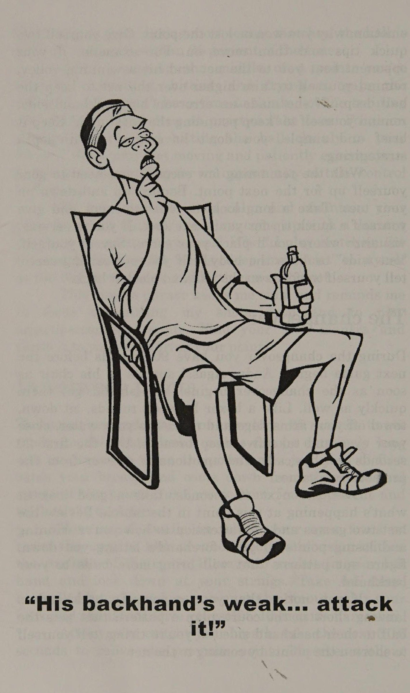
Trong khi John McEnroe và Jimmy Connors được biết đến là người có thể khiến cơn thịnh nộ có lợi cho họ, thì hầu hết chúng ta lại không có khả năng đó.
Mặc dù sự tức giận đôi khi có thể giúp chúng ta thức tỉnh khi khả năng tập trung của chúng ta giảm sút, nhưng hầu hết thời gian, khi nhiệt độ tăng lên, mức độ chơi của chúng ta giảm xuống.
Mặc dù bản chất con người là lo lắng hoặc tức giận khi trận đấu diễn ra căng thẳng, nhưng những suy nghĩ tiêu cực đi kèm với những cảm xúc này hiếm khi mang lại kết quả tích cực, vì vậy chúng ta cần học cách gạt chúng sang một bên và quay trở lại con đường tích cực. Chìa khóa nằm ở tiếng nói bên trong của chúng ta.
Chế ngự giọng nói đó trong đầu chúng ta Bạn có biết rằng một người bình thường nói chuyện với chính mình, bằng lời nói hoặc không bằng lời nói, khoảng 50.000 lần mỗi ngày? Hay nói cách khác, cứ hai giây trong cuộc đời chúng ta lại tự nói với mình điều gì đó.
Áp dụng thông tin đó vào đời sống quần vợt của chúng ta trong một trận đấu kéo dài trung bình 90 phút, kéo dài 3 set, chúng ta tự gửi cho mình: hơn 3.000 tin nhắn và đối với một số người, những tin nhắn đó phần lớn là tiêu cực.
“Giao bóng của tôi bốc mùi quá.” “Đừng di chuyển Itke một con voi.” ‘Không thể tin được là tôi lại thua cô ấy. Tôi thật kinh khủng!” Dưới đây là một số chiến lược giúp bạn đẩy những suy nghĩ tồi tệ sang một bên, kiểm soát cảm xúc của mình và giảm bớt một số căng thẳng không thể tránh khỏi khi cạnh tranh.
anh ấy Trở nên nhận thức được suy nghĩ của bạn. Hãy chú ý đến những tin nhắn bạn đang gửi cho chính mình. Giữ một cuốn sổ nhỏ bên mình và trong vài ngày, hãy viết ra tất cả những suy nghĩ tiêu cực của bạn. Sau đó, bạn sẽ có thể biết mình đã đặt mình xuống bao nhiêu lần.
2.
Phá vỡ khuôn mẫu. Khi bạn cảm thấy những suy nghĩ tiêu cực đang len lỏi vào, hãy hít một hơi thật sâu và nói ngay: "Không! Tôi sẽ không làm điều này." Nghe có vẻ đơn giản nhưng nó hiệu quả.
oF Hãy tích cực. Hãy ngăn chặn dòng chảy tiêu cực bằng một vài câu nói tích cực, mang tính xây dựng.
Ví dụ: Thay vì tự nhủ rằng mình chậm chạp hay lười biếng như thế nào, hãy thử nói điều gì đó như, "Nào, bạn có thể làm được những việc đó. Hãy kiễng chân và chạy theo từng quả bóng cho đến khi nó nảy hai lần." Hoặc, sau một lỗi không cố ý, hãy nhắc nhở bản thân "để mắt đến quả bóng". Suy nghĩ tích cực là rất quan trọng. Nếu bạn nói đủ, bạn sẽ tin vào điều đó.
4.
Hãy quan sát hành động của bạn mà không phán xét chúng.
Điều này có nghĩa là biết được những gì đang diễn ra trên sân. Ví dụ: nếu bạn đã đánh được ba quả giao bóng cuối cùng vào lưới, thay vì khó chịu, hãy nhắc nhở bản thân rằng bạn có xu hướng gục đầu khi giao bóng. Hãy sửa lại, tự nhủ rằng bạn "đã hiểu rồi" và chuyển sang điểm tiếp theo.
Tiến sĩ John F. Murray, tác giả cuốn Smart Tennis (Thông tin thêm: johnfmurray.com), đã nghĩ ra một thí nghiệm tuyệt vời để giúp chúng ta giám sát việc tự nói chuyện của mình. Lần tới khi bạn bước vào sân, hãy đặt 40 chiếc kẹp giấy vào túi bên phải của bạn. Mỗi khi bạn bắt gặp mình đang đưa ra nhận xét tiêu cực về bản thân, hãy thò tay vào túi và chuyển một chiếc kẹp giấy vào túi bên trái. Kết thúc trận đấu xem có bao nhiêu clip đã về bên trái. Bạn có thể bị sốc và có động lực để thay đổi.
Hãy thực hiện nó và dần dần nhưng chắc chắn, bạn sẽ thấy sự thay đổi trong cách bạn nói với chính mình và từ đó, trong cách bạn cảm nhận về bản thân. Sau một hoặc hai tháng, hãy thử lại thí nghiệm kẹp giấy và xem bạn đã tiến bộ như thế nào.
Hầu như không ai chơi tốt khi họ mất kiểm soát bản thân, vì vậy, ngay cả khi bạn mắc sáu lỗi không đáng có liên tiếp và dẫn trước bốn ván, hãy kiểm soát cảm xúc của mình. Hãy gạt bỏ mong muốn thể hiện kiến thức sâu rộng của bạn về những lời tục tĩu và sự thôi thúc phóng vợt của bạn vào bãi đậu xe. Hãy hít thở sâu vài lần, lặp lại một số cụm từ mang tính xây dựng, tích cực với bản thân và tiếp tục.
Trong số gần đây của tạp chí Tennis, huấn luyện viên Pat Etcheberry (Thông tin thêm: etcheberryexperience.com) đã mô tả một bài tập thư giãn trong đó ông yêu cầu học trò của mình ghi điểm với một miếng khoai tây chiên trong miệng với mục tiêu không để con chip bị vỡ.
Etcheberry cho biết: “Bài tập này giúp bạn thấy rõ khi cổ và mặt bị căng.
Bằng cách trở thành một tay vợt kiên nhẫn hơn và học cách kiểm soát cảm xúc của mình, bạn sẽ giảm đáng kể số lỗi không đáng có và đến lượt mình, sẽ không còn là đối thủ khó nhằn nhất của chính mình.
Jana Novotna đã làm được. Sau trận thua nặng nề trước Graf và Rubin, cô đã đánh trả, đánh bại Ác quỷ quần vợt của mình vào ngày 5 tháng 7 năm 1998, nâng cao đĩa vô địch tại Wimbledon.
Chương 13: Đừng Bận Tâm Đến Đối Thủ... Ngay Lúc Này (Don’t Worry About The Opponent...Yet)
Chapter 13: Don’t Worry About The Opponent...Yet
Trong khi Đừng lo lắng về đối thủ...Tuy nhiên, việc hạn chế những lỗi không đáng có và giữ bóng trong cuộc phải luôn là cách tiếp cận chiến lược số một của bạn, khi bạn cú đánh vượt qua (Passing shot) cấp độ 3,5, bạn sẽ thấy rằng bạn sẽ cần đưa chiến lược của mình lên một tầm cao mới và hiểu các lý thuyết về tỷ lệ quần vợt cao.
Tỷ lệ chơi tennis cao có nghĩa là đánh đúng cú đánh vào đúng thời điểm. Nó có nghĩa là thực hiện cú đánh khiến bạn có ít cơ hội phạm lỗi nhất, đồng thời có cơ hội tốt nhất để trụ lại hoặc giành được điểm.
Một trận đấu quần vợt giữa những tay vợt có khả năng ngang nhau là một cuộc thi về sự kiên nhẫn, và chính tay vợt hoặc đội, người có thể kiên nhẫn hơn, thực hiện các cú đánh có tỷ lệ đánh bóng cao, thường sẽ là người chiến thắng bước ra khỏi sân.
Tỷ lệ đánh đơn cao Những cú đánh có tỷ lệ cao đó là gì? Trước tiên chúng ta hãy nhìn vào đĩa đơn. Ở dạng đơn giản nhất, chiến lược dành cho người độc thân có tỷ lệ phần trăm cao như sau:
Không bao giờ đánh quả giao bóng thứ hai Nhận mọi cú trả giao bóng trong trận Đánh các cú đánh nền chéo sân của bạn.
Tiếp cận thẳng về phía trước.
Kiểm soát mạng.
Khi nghi ngờ, hãy ném nó lên Cha ay a 116 TENNIS SAU CÁC SÚT LỚN Không bao giờ đánh quả giao bóng thứ hai Khi bạn phải đánh quả giao bóng thứ hai, bạn sẽ tự đặt mình vào tình trạng vô cùng căng thẳng vìé-nếu bạn đánh trượt, bạn sẽ mất điểm.
Bạn cũng cho đối thủ biết rằng cú giao bóng thứ hai của bạn yếu hơn cú giao bóng đầu tiên của bạn nên cô ấy tiến lên vài bước và sẵn sàng tấn công. Loại bỏ quả giao bóng thứ hai khỏi trò chơi của bạn bằng cách thực hiện quả giao bóng đầu tiên trong 80-90% thời gian.
Tôi tin rằng quần vợt thành công là một trò chơi của sự nhất quán và tận dụng tỷ lệ phần trăm thích hợp.—Bjorn Borg, nhà vô địch Wimbledon năm lần và sáu lần vô địch Pháp mở rộng Để làm được điều này, hãy thay thế những lỗi giao bóng đầu tiên quả bom lớn đó bằng độ xoáy trung bình. Khả năng kiểm soát bổ sung mà vòng xoáy cung cấp sẽ có nghĩa là bạn sẽ có thể đạt được tỷ lệ phần trăm giao bóng đầu tiên cao hơn trong: "sân.
cát, từ 9a.
|»là một trò chơi mang quan điểm tâm lý nhất quán, | Việc tận dụng lợi thế đó là một lợi thế rất lớn, tỷ lệ phần trăm thích hợp.
đặc biệt là về những điểm lớn.
Lần sau chơi | Bjorn Borg đá tập, đi sân khách | Wimbledon năm lần và tấm chăn an ninh của tôi sáu lần giao bóng thứ hai ở Pháp mở rộng. Chơi bộ ở đâu | Nhà vô địch, bạn chỉ nhận được một cú giao bóng và trước khi bạn biết điều đó, bạn sẽ tìm thấy một cú giao bóng có nhịp độ trung bình mà bạn có thể đưa ra sân mọi lúc.
Tôi tin rằng quần vợt thành công Nhận được mọi cú trả giao bóng trong trận đấu Người giao bóng có lợi thế ở quả giao bóng đầu tiên, nhưng lợi thế đó thường chuyển sang người nhận giao bóng ở quả thứ hai. Đối đầu với một người giao bóng mạnh, hãy sử dụng tốc độ của họ và chỉ cần chặn cú giao bóng đầu tiên của họ. Đặt mục tiêu cách lưới từ 5 đến 7 feet, hướng xuống giữa sân. Nếu anh ta làm theo SS của mình, Đừng lo lắng về đối thủ..Tuy nhiên, 117 giao bóng vào lưới, như nhiều tay vợt mạnh sẽ làm, nhắm một đến hai feet qua lưới và chặn nó xuống chân anh ta.
Nếu người giao bóng trượt quả giao bóng đầu tiên, hãy chuyển sang chế độ tấn công.
Di chuyển ba feet về phía Ward và, nếu cú thuận tay của bạn là cú đánh yêu thích của bạn, hãy hai bước sang trái. Điều này sẽ cho người giao bóng biết rằng bạn sẽ đánh cú đánh mạnh nhất của mình sau khi họ đánh cú giao bóng yếu nhất của họ. Bước vào bóng và thực hiện một cú trả bóng chéo sân sâu. Đừng nhắm đến cú ghi điểm trực tiếp hoàn toàn mà hãy chọn một cú đánh bắt buộc để bạn có thể bắt đầu điều khiển trận đấu.
Tùy thuộc vào chất lượng quả giao bóng thứ hai của đối thủ, bạn có thể tiến về phía trước và tấn công lưới. Nếu vậy, hãy coi cú trả bóng của bạn như một cú đánh tiếp cận.
Đánh thẳng về phía trước và di chuyển vào lưới.
Đường chéo sân là vua Trong một trận đấu, 80-90 phần trăm số cú đánh nền của bạn phải được đánh chéo sân. Đây là tỷ lệ chơi cao nhất vì nhiều lý do. Đầu tiên, bóng đi qua phần thấp nhất của lưới ở giữa và thứ hai, sân nằm trên đường chéo chéo sân dài hơn so với đường thẳng. Điều này có nghĩa là bạn có thể đánh bóng xa hơn mà vẫn giữ được bóng.
Ngoài ra, bằng cách đánh chéo bàn, bạn có thể khiến đối thủ chạy xa hơn so với khi bạn đánh dọc biên.
Để minh họa điểm này, lần tới khi bạn ra ngoài tập luyện, hãy thử bài tập này: Khi bạn và đối tác tập luyện của mình tập hợp lại, hãy yêu cầu một đấu thủ đánh tất cả các cú đánh chéo sân trong khi người kia chỉ đánh dọc theo đường biên.
Khi bạn đã bắt nhịp, bạn sẽ thấy rằng người chỉ đánh dọc theo đường biên đang chạy nhiều hơn so với tay vợt đánh chéo bàn. Điều này không chỉ minh họa quan điểm mà còn là một bài tập rèn luyện tính nhất quán và điều hòa tuyệt vời.
118 TENNIS SAU CÁC CÚ ĐÁNH LỚN Cuối cùng, khi bạn đánh chéo sân, bạn sẽ không tạo cho đối thủ một góc dễ dàng để đánh bạn ra khỏi sân như khi bạn đánh dọc biên.
Bằng cách giữ bóng liên tục chéo sân, bạn đang chờ đợi một trong ba sai lầm từ đối thủ: một lỗi thiếu kiên nhẫn khiến bạn mất điểm; một cú đánh hướng xuống: sau đó cho phép bạn đưa bóng chéo sân và đẩy chúng ra khỏi sân; hoặc một quả bóng ngắn mà bạn có thể tấn công bằng một cú đánh tiếp cận.
Tiếp cận thẳng về phía trước ~- Có một câu nói cũ trong đánh đơn rằng trận đấu chỉ thực sự bắt đầu cho đến khi một tay vợt đánh một quả bóng ngắn. Khi quả bóng ngắn đó đến, tỷ lệ phần trăm của trò chơi là đánh cú đánh tiếp cận của bạn ngay trước nơi bạn đánh bóng.
Bạn sẽ đưa bóng trả lại cho đối thủ nhanh hơn vì bóng đang di chuyển trên một đường thẳng thay vì khoảng cách dài hơn, chéo sân. Ngoài ra, bằng cách tiếp cận thẳng về phía trước, bạn chỉ cần tiến về phía trước và ở vị trí tốt nhất để che chắn những cú đánh có khả năng đánh vô-lê của đối thủ.
Cuối cùng, từ quan điểm tâm lý, khi bạn tiếp cận thẳng về phía trước, bạn sẽ luôn ở trong tầm nhìn của đối thủ khi họ di chuyển để thực hiện cú đánh chuyền của mình, tạo thêm một chút áp lực cho sự chuẩn bị của họ. Nếu bạn đánh chéo sân, anh ta sẽ nhìn vào một sân rộng mở trước mặt anh ta, ít nhất là cho đến khi bạn có thể băng qua sân vào vị trí thích hợp.
Kiểm soát lưới Ngay cả trong thời đại của những cú đánh nền mạnh mẽ này, tay vợt kiểm soát lưới sẽ kiểm soát điểm, vì vậy hãy tìm mọi cơ hội để tiến về phía trước và khẳng định quyền sở hữu của bạn đối với lưới.
hy Hãy nhớ rằng cũng giống như sự kiên nhẫn chiến thắng từ sân sau, nó cũng là một vũ khí trên lưới. Hiếm khi bạn không lo lắng về đối thủ.. Tuy nhiên, 119 cú vô lê đầu tiên là cú vô lê mà bạn có thể kết thúc trận đấu, vì vậy hãy chuẩn bị đánh ít nhất hai cú vô lê. Chơi cái đầu tiên trở lại sâu. Sau đó, bạn có thể bắt đầu tìm kiếm một quả cú bắt lưới (Volley) để cất đi.
Chọn một cái ở trên lưới và bạn có thể đóng vào. Mọi áp lực đều dồn lên đối thủ khi bạn ở trên lưới, vì vậy đừng ép buộc bất cứ điều gì. Nếu phải mất bốn hoặc năm cú vô lê và một vài cú đánh đầu để giành được điểm, thì hãy làm như vậy. Khi nghi ngờ, hãy ném nó lên Có, điều này lặp đi lặp lại nhưng sự lặp lại là chìa khóa để thành thạo.
Nhiều tay vợt, khi bị áp lực, sẽ cố gắng giành lấy người chiến thắng lớn, làm hài lòng đám đông, chỉ có một lần trong đời. Bây giờ bạn nên biết rằng cách tiếp cận đó thường dẫn đến lỗi.
Các tay vợt trình độ cao nhận ra khi họ ở ngoài vị trí, so với bóng hoặc sân, và thay vì cho đối thủ một điểm có khả năng xảy ra bằng cách thử sút tỷ lệ thấp, họ sẽ chỉ đánh bóng trở lại cao và sâu. Theo một cách nào đó, họ đang bắt đầu lại quan điểm và nói với đối thủ của mình, "Tôi không thích cái này, lấy lại và đưa cho tôi cái khác." Hãy nhớ rằng, khi nghi ngờ, hãy ném một cú lốp bóng.
Tỷ lệ phần trăm tăng gấp đôi Một trong những học sinh của tôi gần đây đã mô tả một trận đấu đôi mà cô ấy đã thấy giữa các nữ ở cấp độ 4,5. Cô ấy nói rằng cô ấy "không thể tin được số điểm của họ tồn tại được bao lâu." Cô ấy còn ngạc nhiên hơn nữa khi "lợi thế sẽ chuyển từ đội này sang đội khác, đôi khi ba hoặc bốn lần trong suốt thời gian diễn ra trận đấu." Cô kết thúc bằng câu hỏi: "Họ làm điều đó như thế nào?" 120 TENNIS SAU CÁC CÚ ĐÁNH LỚN Tay vợt rõ ràng đã hiểu được chiến lược đánh đôi có tỷ lệ phần trăm cao. Đánh đôi tốt phải là một trận chiến mang tính chiến lược với điểm số dài, những pha trao đổi sôi nổi trên lưới và nhiều tình huống xoay chuyển. Để mang lại lợi thế ngay lập tức cho đội của bạn trong lần tiếp theo bạn bước lên sân, hãy nhớ những điều sau: 1.
Đội kiểm soát lưới thường thắng trận.
Ye Đội nào đánh trúng nhiều người thắng nhất thường thua trận.
Đến điểm của bạn, sẵn sàng...đi!
Đánh đôi tốt là một cuộc đua vào lưới và đội nào thắng cuộc đua đó thường sẽ bắt được trận đấu. Mặc dù việc kiểm soát lưới là quan trọng trong đánh đơn, nhưng nó thậm chí còn có lợi hơn trong đánh đôi vì theo tỷ lệ, mỗi tay vợt có ít không gian hơn để che chắn.
Khi đánh lưới trong nội dung đánh đơn, bạn phải tuần tra 27 feet trên sân, từ đường biên này sang đường biên khác. Trong nội dung đánh đôi, mặc dù sân rộng hơn 9 feet do có các con hẻm nhưng giờ đây bạn đã có một đối tác để giúp bạn che phủ khu vực đó. Với mỗi tay vợt chịu trách nhiệm chỉ che lưới 18 feet trên sân, việc che lưới trở nên dễ dàng hơn nhiều.
Ngoài ra, khi đội của bạn giành quyền kiểm soát lưới, bạn sẽ đặt đối thủ của mình vào tình huống sống hoặc chết: họ phải thực hiện một cú sút cưỡng bức hoặc bạn ở vị trí để giành điểm bằng một cú vô lê hoặc cú đánh đầu.
Chuyên gia giảng dạy Ken DeHart của California nói đùa rằng "kiểm soát lưới trong nội dung đánh đôi không quan trọng đến thế... chỉ những đội giỏi mới làm được điều đó." Dehart, một trong sáu chuyên gia giảng dạy duy nhất trên thế giới được cả PTR và USPTA xếp hạng Chuyên nghiệp, nói thêm rằng “kiểm soát mạng chỉ đơn giản là vấn đề quản lý thời gian.
Khi bạn lấy lưới, bạn sẽ lấy đi thời gian của đối thủ." Đừng lo lắng về đối thủ..chưa 121 Tuy nhiên, có một nhược điểm: để thành công trên lưới, bạn và đối tác của mình phải có khả năng bao quát sân đúng cách, bắt vô lê tốt, đoán trước những cú lốp bóng từ đối thủ và đánh những cú đánh đầu chắc chắn. Những tay vợt ở cấp độ 3,5 vẫn chưa phát triển những kỹ năng này sẽ không muốn lên lưới và thường xuyên sử dụng đội hình một lên một lùi đang thống trị bối cảnh câu lạc bộ.
Những tay vợt cấp độ thấp hơn thường nói với tôi, "Tôi chiếm phần sân sau, đối tác của tôi chơi trên lưới và chúng tôi đã giải quyết được tất cả." Trên thực tế, trong số ba đội hình cơ bản mà mỗi đội tùy ý sử dụng — một tay vợt lên và một tay vợt lùi, hai tay vợt trên lưới hoặc hai ở đường cuối sân — thì đội hình phổ biến này là ít được mong muốn nhất.
Đầu tiên, trong cách thiết lập này, có một khoảng cách rất lớn giữa hai tay vợt mà đối thủ của họ có thể đánh vào. Thứ hai, nếu cả hai tay vợt của đội kia đều vào lưới, thì tay vợt duy nhất ở lưới sẽ trở thành một con vịt ngồi.
Nếu đội kia giành chiến thắng trong pha chạy nước rút về lưới, tốt hơn hết là bạn nên để cả hai tay vợt quay trở lại vạch cuối sân. Mặc dù đây là một vị trí phòng thủ, nhưng bạn sẽ không cho đối thủ của mình một mục tiêu ở giữa sân và bạn sẽ ngạc nhiên về việc mình có thể ở lại trong bao lâu và thường xoay chuyển điểm bằng cách kết hợp các cú phát bóng và lốp bóng.
Những tay vợt đánh đôi cấp cao sẽ chơi trên lưới, vì vậy hãy thắt chặt giày tennis của bạn, nắm lấy dây đeo cổ tay của đối tác của bạn và sẵn sàng chạy nước rút để đạt được phong cách đánh đôi chiến thắng hơn.
Người thắng sạch sẽ dành cho người thua đôi “Đánh vào nơi họ không có” Đây là những từ mà hầu hết chúng ta đã nghe trong lần giới thiệu đầu tiên về chiến lược quần vợt.
Dịch: Đánh vào khoảng trống để đối thủ không thể chạm vào bóng và bạn sẽ giành được điểm. Mặc dù đây là lời khuyên hợp lý khi chơi đơn, nhưng đối với những người thường xuyên chơi đánh đôi thì đó là tỷ lệ chơi kém.
Một đội đánh đôi giỏi sẽ liên tục di chuyển từ bên này sang bên kia theo bóng và định vị sao cho khoảng trống “mở” duy nhất trên sân là vị trí mà đội của bạn khó đánh nhất.
Với suy nghĩ đó, tôi nói với những tay vợt đánh đôi của mình tránh xa cách tiếp cận "đánh vào nơi họ không đến". Hãy để đội kia giành chiến thắng sạch sẽ. Họ sẽ đánh được một vài quả, nhưng trong suốt một trận đấu dài, họ sẽ bỏ lỡ nhiều hơn những gì họ có thể kiếm được. Họ có thể có những người chiến thắng rõ ràng trong khi bạn và đối tác của bạn giành chiến thắng trong trận đấu.
Phần lớn số điểm giành được trong các trận đánh đôi cấp cao đều giành được bằng cách đánh vào ba vị trí: 1. Xuống giữa.
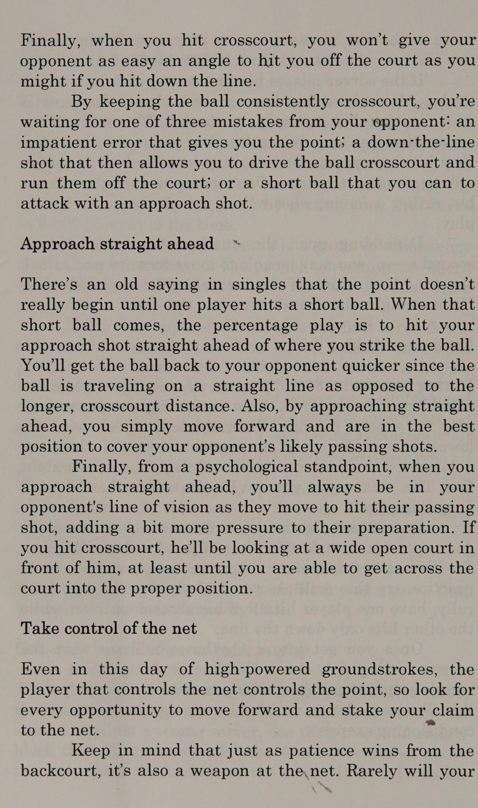
2. Dưới chân đối thủ.
3. Trên đầu họ.
Ở giữa Đây luôn là một cú đánh đôi tốt vì nhiều lý do.
Đầu tiên, một cú đánh ở giữa sân sẽ đi qua phần thấp nhất của lưới, khiến bạn có nhiều khả năng mắc lỗi hơn. Khi bạn đánh vào giữa, sẽ luôn có yếu tố khiến đối thủ bối rối không biết quả bóng đó thuộc về ai. Bạn và đối tác của mình có thường xuyên quay lại và trao cho nhau câu hỏi "bạn nhìn ở đâu" khi quả bóng giữa hai người không chạm vào nhau không?
Ngoài ra, nếu bạn đánh ra bên ngoài sân, bạn sẽ tạo cơ hội cho đối thủ đánh bóng theo góc để người chiến thắng. Khi bạn chơi ở trung tâm, họ phải tạo ra góc nhìn riêng, đó là một điều khó thực hiện. Cuối cùng, nếu bạn đánh vào giữa và không đánh bóng tốt, có thể bạn vẫn giữ được bóng. Nếu bạn nhắm vào các con hẻm hoặc bên ngoài sân và trượt mục tiêu, rất có thể bạn sẽ đánh trúng bóng. ngoài.
Đừng lo lắng về đối thủ..nhưng 123 Vic Braden nói, “Từ lâu, tôi đã bị mê hoặc bởi những người trung gian nói, 'Hãy coi chừng con hẻm của bạn', trong khi những người chuyên nghiệp luôn nói về việc bảo vệ khu trung lộ.
Những người trung gian rất sợ đối thủ đánh xuống vạch vôi nên một trong số họ chơi rộng sang trái và người kia chơi rộng sang phải.
Thật không may, họ thiếu một người.
Họ chú ý đến việc bảo vệ các con hẻm của mình đến mức khi một quả bóng được đánh vào giữa, cả hai đều tự động quay lại và nói, 'Của bạn!' Bạn luôn muốn lôi kéo đối thủ của mình thử những cú đánh khó, tỷ lệ phần trăm thấp ra bên ngoài của bạn.” Nói hay lắm, Vi!
Dưới chân họ Đây là một khái niệm khó được nhiều tay vợt chấp nhận, bởi vì nó hoàn toàn trái ngược với cách tiếp cận "đánh vào nơi họ không có".
Tuy nhiên, trong một tình huống cạnh tranh, chiến lược tốt nhất thường là bắn trúng đối thủ của bạn.
Tôi không thể kể cho bạn biết bao nhiêu lần tôi đã chứng kiến một tay vợt có cú vô lê cao, dễ dàng mắc lỗi vì cố gắng giữ bóng cách xa đối thủ, anh ta đã đưa bóng ra khỏi sân thay vì chỉ đánh thẳng vào chân đối thủ.
Rõ ràng, bạn không cố gắng đánh tay vợt đối phương mà là nhắm bóng vào anh ta ở một vị trí khó xử đến mức anh ta sẽ phải chật vật để lấy lại. Ngay cả khi anh ta cố gắng trả lại bóng, anh ta sẽ phải đánh “lên” vì cú đánh của bạn quá thấp. Rất có thể bạn sẽ tìm được một người trông trẻ dễ dàng đặt ở giữa hoặc ngay dưới chân anh ta.
Một lời ngắn gọn về việc đánh tay vợt đối phương: Nói thế không phải là điều hay ho nhất, nhưng thường thì khi tay vợt bị đánh, đó là lỗi của chính họ. Họ đang ở sai vị trí hoặc không chú ý. Đánh đôi tốt là một trò chơi nhanh, tích cực, trong đó cú đánh tốt nhất thường nhắm thẳng vào đối thủ của bạn. Tất cả tay vợt có trách nhiệm đảm bảo rằng 124 TENNIS BEYOND BIG SHOTS “Bạn đã ở đâu?” Đừng lo lắng về đối thủ..Tuy nhiên, 125 họ luôn cảnh giác, chọn đúng vị trí và _ tự bảo vệ mình. Trong một trận đấu cạnh tranh, nếu bạn vô tình đánh ai đó, hãy ngay lập tức đảm bảo rằng anh ta không bị thương, cho anh ta một phút để bình tĩnh lại và với tinh thần thể thao tốt, hãy xin lỗi—nhưng đừng ngần ngại quay lại ngay với anh ta nếu có cơ hội lần nữa.
Trên đầu họ Lob nữa à? Đúng! Cú lốp bóng là một trong những cú đánh mạnh mẽ nhất trong trò chơi. Dù là cú lốp bóng phòng thủ cao, sâu giúp bạn có thời gian hồi phục hay cú lốp bóng tấn công thấp dùng để gây bất ngờ cho đối thủ và giành điểm hoàn toàn, mọi tay vợt giỏi đều sở hữu và hiểu rõ lợi ích của một cú lốp bóng hiệu quả.
Chơi tỷ lệ phần trăm Khi bạn bước lên sân đánh đôi, hãy thay đổi tinh thần trong việc lựa chọn cú đánh của bạn từ suy nghĩ bên này sang bên kia, giống như bạn làm trong đánh đơn, sang thấp hoặc cao. Đánh bóng vào chân đối thủ để buộc họ phải bật lên hoặc đánh bóng cao qua đầu họ để bạn có thể cướp lưới khỏi họ.
Nếu đối thủ của bạn có quyền kiểm soát lưới và bạn không chắc mình có thể đưa bóng xuống thấp, hãy đưa nó lên trời. Buộc họ phải lùi lại và bắn một phát nữa.
Bắt đối thủ đánh bóng để đánh bại bạn thay vì tự đánh mình bằng một lỗi không đáng có.
Đánh bóng vào giữa, dưới chân hoặc qua đầu họ.
Chọn các cú đánh của bạn bằng cách ghi nhớ những mẹo này và xem lỗi của bạn giảm đi và số lần thắng của bạn tăng lên.
Percentage tennis 1 là một cách tiếp cận chiến lược có hệ thống sẽ có hiệu quả trước mọi đối thủ mà bạn gặp phải. đã tóm tắt những tỷ lệ phần trăm này trong Bảng 13.1 dưới đây. Hãy xé phần nhỏ này của cuốn sách ra, cho vào túi vợt của bạn và xem trước mỗi trận đấu. Hãy nhắc nhở bản thân rằng tỷ lệ phần trăm quần vợt là thắng quần vợt!
Bảng 13-1 Đánh đơn Không bao giờ đánh quả giao bóng thứ hai.
Nhận lại mọi cú trả giao bóng trong trận đấu.
Nhân đôi Đội kiểm soát lưới sẽ kiểm soát trận đấu.
Hãy để đối thủ của bạn giành chiến thắng “sạch”.
Thực hiện cú đánh chéo sân của bạn.
Ở giữa.
Hãy thực hiện các cú đánh tiếp cận của bạn ngay phía trước.
Lên lưới.
Dưới chân họ.
Trên đầu họ.
Lob Lob Đừng lo lắng về đối thủ..Tuy nhiên 127 MỘT LOẠI TRÒ CHƠI TỶ LỆ KHÁC Nếu bạn thắng cú ném, hãy để đối thủ giao bóng trước. Tôi liên tục làm tôi ngạc nhiên về cách tay vợt chọn giao bóng theo phản xạ khi họ thắng lượt tung bóng. Khi tôi hỏi học sinh của mình tại sao lại đưa ra lựa chọn này, họ suy nghĩ một lúc rồi nói: "Giao bóng trước là một lợi thế...phải không?" Các chuyên gia hầu như luôn chọn giao bóng trước. Cú giao bóng là cú đánh quan trọng nhất trong trò chơi và hầu hết các chuyên gia đều có một cú giao bóng tốt, vì vậy đối với họ, quyết định là điều hiển nhiên. Tuy nhiên, nếu bạn giống tôi, bạn sẽ không nhận được séc về kết quả trận đấu của mình nên chủ đề này cần được suy nghĩ kỹ hơn một chút.
Giao bóng trước về mặt lý thuyết là lựa chọn đúng đắn vì giao bóng là một lợi thế—về mặt lý thuyết. Nhưng thực tế liệu đó có phải là quyết định đúng đắn? Tôi thường nói, "Không!" Giao bóng ở cấp độ giải trí thường là một bất lợi vì thực tế đơn giản là nhiều tay vợt giải trí không có cú giao bóng đặc biệt tốt. Đối với bất kỳ ai bị xúc phạm bởi tuyên bố đó, tôi xin lỗi nhưng, này, chúng ta đang nói về môn quần vợt cạnh tranh ở đây và thường thì việc giao bóng trước không mang lại lợi thế cho bạn.
Các tuyển thủ chuyên nghiệp có xu hướng giữ giao bóng (thắng ván giao bóng của họ) khoảng phần trăm thời gian.
Ở cấp độ giải trí, tôi ước tính tỷ lệ phần trăm xấp xỉ như sau: 1,0-2,0: 20% 2,0-3,0: 30% 3,0°4,0: 40% 4,0-4,5: 50% 4,5-5,5: 60% 128 TENNIS SAU CÁC CÚ ĐÁNH LỚN Như bạn có thể thấy, cho đến khi bạn đạt đến Việc giao bóng ở mức 4,5-5,0 có xu hướng rủi ro nhất. Đó là lý do tại sao tôi khuyên bạn nên chọn nhận giao bóng nếu bạn thắng ở vòng quay mở đầu của vợt.
Dưới đây là một số lý do tại sao: 1. Bạn sẽ khiến đối thủ cảm thấy lạnh lùng.
Giống như hầu hết những tay vợt giải trí, họ có thể đã thực hiện được ba hoặc bốn cú giao bóng và sau đó~
Tin tôi đi, không phải đâu!
Họ chắc chắn sẽ vẫn còn hơi cứng nhắc, cũng như phải chịu đựng cảm giác bồn chồn khi mở đầu trận đấu.
Trong quần vợt xã hội, thường có quy tắc "bóng đầu tiên vào" (FBI) cũ có hiệu lực, nghĩa là ở điểm đầu tiên, người giao bóng phải tiếp tục đánh các quả giao bóng cho đến khi họ thực hiện được một quả giao bóng. Khái niệm này được phát minh vì một lý do: để các tay vợt không phải lãng phí thời gian quý báu trên sân vào một việc tầm thường như khởi động quả giao bóng của họ.
Vậy chuyện gì sẽ xảy ra? Tay vợt giao bóng trước không thực hiện giao bóng khởi động, nói "FBI" và họ bỏ đi.
Nhiều lần trong các trận đấu của FBI, quả bóng đầu tiên thực sự đi vào lưới và sau đó người giao bóng thực sự gặp rắc rối.
Bây giờ họ phải giao bóng trong phần còn lại của trận đấu với số lượng chỉ bằng một lần giao bóng khởi động.
Một điểm nhanh ở đây: Nếu bạn bị vướng vào một trong những trò chơi "bóng đầu tiên" đó, hãy chắc chắn cố tình bỏ lỡ 10-15 cú giao bóng đầu tiên của bạn để bạn có thể thả lỏng cánh tay của mình. Làm như vậy, bạn không chỉ làm nóng cánh tay của mình mà còn có thể khiến đối thủ khó chịu đến mức họ sẽ đồng ý thực hiện khởi động giao bóng thích hợp trước khi bắt đầu trận đấu.
5:
Đừng Lo Đối Thủ..Yet 129 2. Bạn sẽ có nhiều thời gian hơn để khởi động, thư giãn và hòa vào trận đấu. Ngoài ra, bạn sẽ lỏng lẻo hơn khi đến lượt giao bóng của mình. 7 Hầu hết tay vợt dưới mức 5.0 đơn giản là không có những cú giao bóng tốt. Xin lỗi, nhưng đó là sự thật. Nhiều tay vợt ở cấp câu lạc bộ thấy việc luyện tập giao bóng của họ nhàm chán nên họ bỏ qua. Kết quả là họ áp dụng chiến lược “bùm” và “bụp” cũ rất phổ biến hiện nay.
Tất nhiên vẫn có những trường hợp ngoại lệ. Nếu bạn tự tin vào cú giao bóng của mình và ý tôi không phải là kiểu tự tin "T có cú giao bóng tuyệt vời khi nó thực hiện", thì bạn nên cân nhắc việc giao bóng trước.
Ngoài ra, nếu đối thủ của bạn thực sự có một cú giao bóng tuyệt vời, bạn có thể muốn giao bóng trước.
Tuy nhiên, hãy nhớ rằng ngay cả một người giao bóng tuyệt vời cũng hơi cứng và giật trong lần giao bóng đầu tiên, vì vậy đây có thể là thời điểm thích hợp để nghỉ dịch vụ sớm.
130 TENNIS VƯỢT QUA LỚN
Chương 14: May Đo Kế Hoạch Trận Đấu Của Riêng Bạn (Customizing Your Gameplan)
Chapter 14: Customizing Your Gameplan
Khi tùy chỉnh kế hoạch trò chơi của bạn \ N hen Jimmy Connors bước ra sân trong trận chung kết Wimbledon năm 1975, ông là vị vua không thể tranh cãi của thế giới quần vợt. 22 tuổi, Connors là đương kim vô địch Wimbledon và US Open và chưa thua set nào trong giải đấu. Đối thủ của anh là Arthur Ashe, 3 tuổi. Sự nghiệp của Ashe đang sa sút và các nhà cái ở London đã xếp anh vào lưới 1-5. Nhiều người trong cuộc cảm thấy anh ấy sẽ làm tốt nếu giành được một chiếc sel.
Connors thắng ván đầu tiên của trận đấu. Ashe thắng 12 trong 13 trận tiếp theo và không lâu sau đó trở thành người da đen đầu tiên vô địch Wimbledon.
Chiến thắng 6-1, 6-1, 5-7, 6-4 của Ashe vẫn được coi là một trong những thất bại lớn nhất trong lịch sử quần vợt.
Đêm trước trận chung kết, Ashe và một số người bạn của anh ấy cùng nhau ăn tối và nghĩ ra một kế hoạch để đánh bại Connors. Họ lập danh sách năm hoặc sáu điều để Arthur tập trung vào trong trận đấu. Ashe mang danh sách này ra tòa, tham khảo nó trong quá trình thay đổi và hạ gục Connors “bất khả chiến bại” trong bốn set.
Cho dù chiến lược của bạn chỉ đơn giản là giữ bóng trong khi chờ mắc lỗi hay điều gì đó phức tạp hơn, thì việc học cách phân tích đối thủ và đưa ra kế hoạch thi đấu là những thành phần quan trọng để đạt được chiến thắng trước những tay vợt ở cấp độ 4.0 trở lên.
132 TENNIS BEYOND BIG SHOTS Nó bắt đầu với phần khởi động Bắt đầu với phần khởi động và tiếp tục trong suốt trận đấu, bạn nên thu thập thông tin về điểm mạnh, điểm yếu và xu hướng của đối thủ. Đưa một quả bóng ngay vào cơ thể cô ấy và xem cô ấy chọn cú đánh nào. Điều này có thể cho bạn biết liệu cô ấy thích thuận tay hay trái tay hơn—một thông tin quan trọng Khi bạn đánh qua đánh lại, hãy lưu ý những điều như: a Cô ấy thuận tay phải hay tay trái?
Dù bạn có tin hay không, nhiều tay vợt không nhận thấy điều này cho đến khi họ được thông báo sau trận đấu.
a Cô ấy sử dụng kiểu cầm thuận tay nào? Mỗi erip trong game đều có ưu điểm và nhược điểm. Ví dụ: nếu cô ấy sử dụng kiểu cầm vợt Semi-Western hoặc Western, cô ấy sẽ gặp khó khăn với những quả bóng thấp.
Nếu cô ấy sử dụng kiểu cầm vợt Continental, những quả bóng có độ nảy cao sẽ khiến cô ấy bị phù.
3.
Cô ấy đánh trái tay bằng một hay hai tay? Nếu cô ấy sử dụng người đánh hai tay, cô ấy có thể tạo ra nhiều tốc độ và xoáy lên hơn, nhưng những quả bóng rộng sẽ gây khó khăn cho cô ấy, cũng như những cú đánh thấp và những quả bóng đánh trên đầu cô ấy. Nếu cô ấy đánh trái tay bằng một tay, cô ấy có thể gặp khó khăn trong việc tạo ra xoáy lên và cũng sẽ gặp khó khăn với những quả bóng đánh cao ngang vai trở lên.
4.
Cô ấy có vẻ đánh bóng xoáy lên hoặc cắt lát quá mức không?
Tùy chỉnh kế hoạch trò chơi của bạn 133 Cho cô ấy nhiều cú đánh khác nhau: cao, thấp, mềm, cứng và xem cô ấy phản ứng như thế nào. Cô ấy có hối hả đuổi theo quả bóng hay cô ấy để nó nảy hai lần. Cô ấy uốn cong tốt như thế nào đối với những quả bóng thấp?
Thế còn việc di chuyển về phía sau để "phía trên đầu thì sao? Cô ấy có vẻ thoải mái hay căng thẳng không?
Cô ấy có giận mình vì bắn trượt không? Hãy chú ý đến tất cả những điều này và bắt đầu cảm nhận về trò chơi cũng như tính khí của cô ấy.
Nếu bạn đang chơi đôi, hãy lưu ý những điều tương tự với từng tay vợt trong đội đối phương, nhưng cũng cố gắng xem thành viên nào trong đội có vẻ là người dẫn đầu.
Người dẫn đầu thường là tay vợt mạnh hơn và biết rằng ngay lập tức sẽ mang lại lợi thế lớn cho đội của bạn.
Khi bạn quay vợt, hãy xem thành viên nào trong đội gọi “lên hoặc xuống” và đưa ra quyết định giao bóng hay nhận giao bóng. Tay vợt đó rất có thể là người dẫn đầu.
Lời cuối cùng về phần khởi động Đừng quá lo lắng nếu trong quá trình khởi động, bạn có vẻ như đang ở trên sân với Andy Roddick. Nhiều tay vợt, trong nỗ lực chiếm thế thượng phong sẽ bắt đầu đánh những cú đánh đại bác (Big Shot) ngay lập tức. Họ hy vọng rằng bằng cách “thắng phần khởi động” họ sẽ khiến bạn sợ hãi khi trận đấu “thực sự” bắt đầu.
Đừng hoảng sợ. Bạn không chơi Andy Roddick và tôi có thể đảm bảo với bạn rằng những tay vợt “thắng khởi động” này sẽ không hoàn toàn suôn sẻ và lỏng lẻo một khi tỷ số được giữ nguyên.
Bắt đầu như một tấm ván sau và chơi theo tỷ lệ phần trăm. Trong hai hoặc ba trận đầu tiên, hãy giữ bóng trong cuộc và tập trung vào việc chơi quần vợt “tỷ lệ phần trăm” cổ điển.
Bằng cách đánh nhiều bóng trong vài ván đầu tiên, bạn có thể tiếp tục kiểm tra đối thủ cũng như ổn định nhịp điệu thoải mái trong 134 TENNIS BEYOND BIG SHOTS. Khi trận đấu diễn ra và bạn ngày càng tìm hiểu nhiều hơn về các kỹ năng của đối thủ, cả về mặt kỹ thuật và chiến lược, bạn có thể bắt đầu khiến chúng có ích cho mình.
Đơn: Dưới đây là 10 điều bạn có thể nhận thấy ở đối thủ và cách sử dụng chúng để làm lợi thế cho mình:
Bảng 14-1 Kỹ năng & Chiến lược của đối thủ Hãy giúp bạn thực hiện điều đó bằng cách Sử dụng lát cắt và buộc anh ta phải đánh những cú đánh thấp.
Cách cầm vợt thuận tay của phương Tây.
Trái tay bằng hai tay.
Đưa bóng vào cơ thể anh ta và khiến anh ta căng ra để nhận bóng ra ngoài.
Đánh những quả bóng có nhịp độ trung bình, cao xuống giữa sân.
Mất kiên nhẫn sau ba phát súng.
Đưa anh ta ra khỏi vùng an toàn của mình vào lưới.
Có thể phục hồi từ đường cuối sân (Baseline) suốt cả ngày.
Thực hiện cú đánh nền cao tới góc trái tay rồi di chuyển lên phía lưới.
J} Giao bóng thứ hai yếu.
Đánh thẳng về phía trước và tấn công vào lưới.
Trả lại tất cả các quả bóng phía trên ngực anh ta bằng một cú lốp bóng.
Di chuyển lên xuống kém.
Kéo anh ta vào bằng một quả bóng ngắn hoặc cú sút xa rồi lốp bóng.
_—_———_— Đánh tất cả trái tay Ngay trước khi anh ấy tiếp xúc, chuyền các cú đánh chéo sân.
tiến hai bước về phía trước và sang một bên để che đường chuyền chéo sân. Cú bắt lưới (Volley) đến sân mở.
Tùy chỉnh kế hoạch trò chơi của bạn 135 | Kẻ tấn công lớn từ cả hai phía.
Khiến anh ta tạo ra tốc độ của riêng mình bằng cách đánh những cú đánh sâu, cao và nhẹ nhàng.
Là một tay vợt mạnh mẽ hơn nhiều về mọi mặt của trò chơi.
Cate:
Không hoảng sợ và lao vào những cú đánh mà bạn không sở hữu. Nhận lại nhiều bóng, vào lưới và khiến anh ấy chứng tỏ mình giỏi hơn.
Khi đánh đôi, hãy tìm:
Bảng 14-2 Điểm mạnh và điểm yếu ee Những tay vợt giao bóng và vô lê rất mạnh.
Đội đối phương Hãy làm điều đó có lợi cho bạn bằng cách Lobby trả giao bóng tôi đối tác của người giao bóng.
Đội đối phương chơi đội hình một lên, một lùi.
Kiểm soát lưới và đánh vô-lê giữa hai tay vợt hoặc xuống chân tay vợt đối phương.
Một thành viên trong nhóm chắc chắn là yếu hơn người kia.
Tập kích anh ta và chơi hai chọi một. Bạn và đối tác của mình hầu như đều đánh trúng vào mắt xích yếu.
Họ luôn lốp bóng.
ae Vẫn lên lưới nhưng hãy dừng lại ở đường giao bóng để bạn có thể xử lý những pha lốp bóng của họ bằng những cú đánh đầu.
Họ không bao giờ lốp bóng.
Cả bạn và đối tác của mình đều ở vị trí cách lưới ba feet.
Đây chỉ là một vài ví dụ về những điều cần tìm khi bạn phân tích trò chơi của đối thủ. Hãy trở thành một tay vợt 136 TENNIS BEYOND BIG SHOTS có hiểu biết và chú ý đến mọi thứ. Bạn càng thu thập được nhiều thông tin thì bạn càng có thể lập kế hoạch trò chơi của mình tốt hơn. Nhiều khi bạn sẽ sớm nhận ra rằng tất cả những gì bạn cần làm là đánh một vài quả bóng trở lại sân, sử dụng tỷ lệ phần trăm lượt chơi và chờ đối thủ của bạn tự đánh bại mình.
Tuy nhiên, khi trò chơi của bạn được cải thiện, quần vợt sẽ trở thành một trận chiến chiến lược hơn nhiều, trong đó tay vợt có tư duy hầu như sẽ luôn dẫn đầu. Biết cách phân tích và tận dụng thế trận của đối thủ là bước đầu tiên để bạn giành chiến thắng trong các trận đấu ở cấp độ cao hơn.
Chương 15: Bắt Đối Thủ Hát Theo Giai Điệu Của Bạn (Making Your Opponent Sing Your Song)
Chapter 15: Making Your Opponent Sing Your Song
Ở cấp độ Làm cho đối thủ hát bài hát của bạn ở cấp độ 4,5 trở lên, tay vợt có thể áp dụng kế hoạch trò chơi của mình một cách hiệu quả nhất thường sẽ thắng trận đấu. Giống như Dallas Cowboys và New York Knicks có một cuốn sách về các vở kịch mà họ chạy trong các trận đấu của mình, bạn cần phải tập hợp một cuốn sách về tinh thần mà bạn có thể sử dụng trong các trận đấu của mình.
Những vở kịch này được gọi là mẫu.
Nói một cách đơn giản, mẫu là một chuỗi được xác định trước gồm hai hoặc nhiều cảnh quay mà bạn kết hợp để bắt đầu xác định điểm. Chúng có thể được sử dụng khi giao bóng, nhận bóng và trong các pha giao bóng ở mọi thời điểm bạn chơi.
Dưới đây là một số mẫu để thử vào lần tới khi bạn ra sân trước một đối thủ khó nhằn.
Các kiểu giao bóng Khi bạn tung bóng, hãy lên kế hoạch cho hai cú đánh: cú giao bóng của bạn và phản ứng của bạn trước cú trả bóng của đối thủ. Dưới đây là ba kiểu giao bóng sẽ có hiệu quả trước bất kỳ đối thủ nào: e Giao bóng rộng để kéo đối thủ của bạn ra khỏi sân và sau đó đánh cú đánh thứ hai vào phần sân mở.
Đây là tác phẩm yêu thích của Andre Agassi.
e Giao bóng chữ “T’, kéo chúng về phía giữa sân rồi đánh ra phía sau.
e Giao bóng thẳng vào cơ thể họ và đánh cú đánh thứ hai của bạn vào phần sân rộng mở.
138 TENNIS VƯỢT QUÁ NHỮNG SÚT LỚN Kiểu trả giao bóng Mục tiêu của bạn khi trả giao bóng là về đầu tiên, lấy lại bóng trong cuộc và thứ hai, lấy đi lợi thế của người giao bóng. Để làm như vậy, hãy tập trung vào ba mẫu này.
e Khi đối mặt với một cú giao bóng lớn, hãy trả cú giao bóng cao qua lưới và xuống giữa sân. Đánh cú đánh thứ hai chéo sân.
e Đối với tay vợt giao bóng và đánh vô-lê, trả bóng thấp dưới chân họ rồi lốp bóng qua đầu họ.
e Khi trả một quả giao bóng ngắn hoặc yếu, hãy đánh quả trả giao thẳng về phía trước, di chuyển vào lưới và sau đó đánh cú thứ hai - vô lê hoặc chéo sân trên cao.
Một kiểu mẫu yêu thích của tôi là đánh một cú thả từ | Đừng bao giờ trở thành đối thủ có thể đoán trước được cú giao bóng thứ hai của mình.
Trong cách giao bóng của bạn mà Họ hiếm khi mong đợi, | Đối thủ YOUF biết trước thường phải vật lộn để đạt được thời điểm có bóng và thường xuyên nhẹ nhàng đưa bóng trở lại lưới. Sau đó tôi đã có một | Wanuel Orantes đánh vô-lê hoặc tôi có thể | 1975 USS. Nhà vô địch mở màn tra tấn họ bằng một cú lốp bóng qua đầu.
sắp tới, tốc độ và độ xoáy như thế nào.
Các mẫu đường cuối sân (Baseline) Khi bạn và đối thủ của bạn đang trao đổi các cú đánh nền, hãy đợi bóng trong khu vực tấn công của bạn, bước vào cú đánh của bạn và kiểm soát điểm bằng cách sử dụng một trong các mẫu này. e Mỗi quả bóng chéo sân.
Đây là mô hình cơ bản nhất trong đó bạn đang cố gắng dụ đối thủ mất kiên nhẫn và cố gắng khiến đối thủ hát bài hát của bạn ở mức thấp 139 phần trăm. Bạn có thể giữ nguyên mô hình này cho đến hết điểm hoặc cho đến khi nhận được bóng, bạn có thể tấn công.
e Ba cú sút chéo sân và sau đó là một cú sút dọc biên.
Sau khi đối thủ của bạn đã nhìn thấy, ba cú đánh chéo sân liên tiếp, họ sẽ vô thức bắt đầu nghiêng về hướng chéo bàn. Khi bạn đưa bóng dọc theo đường biên, bạn sẽ thường khiến họ tranh giành.
e Hai cú đánh về phía thuận tay và sau đó đánh một cú đánh cao sâu về phía trái tay. Không có tay vợt nào trên thế giới thích đánh bóng cao về phía trái tay nên khi tung cú đánh này vào, hãy lập tức tiến một hoặc hai bước về phía trước để đoán trước một cú trả bóng yếu.
Một điểm yêu thích khác của tôi là khi tôi giao dịch trái tay với đối thủ, tôi thích đánh ba cú đánh chéo sân sâu và sau đó ném vào một cú đánh thả biên. Khi họ tiến về phía trước để lấy nó, tôi đã lên kế hoạch cho cú lốp bóng kết thúc của mình.
Mô hình đánh đôi Rất ít điều khiến bạn cảm thấy tốt hơn khi đánh đôi so với khi bạn và đối tác của mình thực hiện một lối chơi theo khuôn mẫu một cách hoàn hảo.
Khi đội của bạn đang giao bóng: e Giao bóng ở giữa, thực hiện cú giao bóng của bạn vào lưới và đánh cú vô lê đầu tiên chéo sân, đặt bạn và đối tác của bạn vào vị trí chỉ huy lưới.
e Giao bóng ở giữa; đối tác của bạn lao tới và thực hiện cú vô lê vào chân tay vợt đối phương.
e Giao bóng rộng; đối tác của bạn giả mạo một kẻ săn trộm để thực hiện một cú trả bóng ở con hẻm, sau đó anh ta sẽ thực hiện cú vô lê giữa hai đối thủ của bạn.
140 TENNIS SAU CÁC SÚT LỚN Khi đội của bạn đang nhận: e Lob qua đầu các tay vợt trên lưới, tấn công lưới với đồng đội của bạn và sau đó đánh cú vô lê hoặc cú đánh qua đầu giữa hai đối thủ của bạn.
e Đối đầu với một đội giao bóng và đánh vô-lê, đánh tức là trả lại dưới chân họ; đối tác của bạn săn trộm và sau đó tung cú vô lê vào giữa.
e Nếu người giao bóng lùi lại, hãy thực hiện một cú đánh chéo sân trả sâu sâu, cùng đồng đội của bạn lên lưới và thực hiện cú vô lê chéo sân đầu tiên của bạn:
BIG HITTERS AND PUSHERS Hai phong cách chơi khiến tay vợt giải trí phải khiếp sợ. Những tay vợt giải trí Những người đánh lớn là những người khiến đám đông phải thốt lên "ooh" và "aahs".
Mục tiêu của họ là đánh trúng cú ghi điểm trực tiếp, và họ chưa bao giờ nhìn thấy quả bóng nào mà họ không thể đánh trả mạnh hơn. Chúng trông vẫn đẹp ngay cả khi bắn trượt, vì phát bắn của chúng vượt xa tầm bắn của súng radar và âm thanh rất ấn tượng.
Người đẩy là đối lập của người đánh lớn.
Người đẩy hiếm khi cố gắng đánh cú ghi điểm trực tiếp.
Họ không làm gì với quả bóng ngoại trừ lốp bóng trở lại giữa sân, thường không có nhiều tốc độ và chờ bạn đánh trượt.
Tất cả chúng ta đều đã từng đối mặt với những kiểu tay vợt này và phản ứng đầu tiên của chúng ta thường là hoảng sợ. Chúng ta lo lắng, vội vàng và cảm thấy không thỏa đáng vì trò chơi của chúng ta trông không ấn tượng bằng trò chơi của người đánh lớn hoặc ổn định như trò chơi của người đẩy. May mắn thay, bằng cách xem xét sổ tay của mình, chúng tôi có thể rút ra một số mô hình chiến thắng để gửi cả hai.
Làm cho đối thủ của bạn hát bài hát của bạn 141 Những người đánh lớn Những người đánh lớn thường thiếu kiên nhẫn, hiếm khi chơi kiên định. Nếu bạn có thể đưa một vài quả bóng trở lại cuộc chơi, thường thì chúng sẽ tự đánh ngay ra khỏi trận đấu. Lần tới khi bạn cú đánh vượt qua (Passing shot) lưới của một tay vợt đánh lớn, hãy thử hai kiểu đơn giản sau: e Giảm tốc độ cú đánh của bạn và đánh ba quả bóng mềm, cao, sâu về phía trái tay của anh ta. Ở cú đánh thứ ba, hãy tính phí vào lưới.
Những tay vợt lớn cần bóng trong khu vực tấn công của họ, vì vậy hãy xen kẽ các cú đánh nền cao và thấp. Sau bốn lần bắn, hãy thực hiện một cú đánh rơi.
Người đẩy bóng Người đẩy bóng đang mong bạn mất bình tĩnh bằng cách liên tục đưa bóng trở lại lưới. Bạn có thể lật ngược thế cờ bằng cách đưa anh ấy ra khỏi vùng an toàn của mình.
Đây là hai mẫu sẽ thực hiện thủ thuật: «= Hầu hết những người đẩy bóng đều không thoải mái trên lưới. Sau khi thực hiện hai cú đánh nền, hãy kéo “người đẩy” vào lưới bằng một cú cắt ngắn hoặc cú sút, sau đó cú đánh vượt qua (Passing shot) anh ta hoặc buộc anh ta thực hiện một cú vô lê khó.
Hãy thử tấn công lén lút.
Đánh ba quả bóng cao, sâu rồi nhanh chóng tiến về phía trước và lấy quả bóng tiếp theo của người đẩy lên trên không và di chuyển lên lưới. Người đẩy bây giờ sẽ phải thực hiện được một cú đánh chất lượng nếu không bạn sẽ ở vị trí để kết thúc điểm.
142 TENNIS SAU CÁC SÚT LỚN Tránh xa những lối chơi xấu Khi bạn cố gắng áp đặt lối chơi của mình lên đối thủ, chắc chắn anh ta cũng sẽ làm như vậy. Học cách nhận ra mô hình của đối thủ và cố gắng phá vỡ chúng.
Ví dụ, cú thuận tay của tôi là cú đánh yếu nhất của tôi. Tất cả những người mà tôi thi đấu đều biết điều đó và cố gắng hết sức để giúp tôi thực hiện một pha trao đổi thuận tay chéo sân trong suốt trận đấu.
Biết được điểm yếu của mình, ngay khi nhận ra đối thủ đang chuyển sang thế thuận tay-thuận tay, tôi lập tức phá vỡ nó bằng cách đánh một đường bóng cao xuống phía trái tay của họ. Họ thường trả bóng chéo bàn về phía trái tay của tôi, lúc đó tôi có thể bắt đầu thực hiện kiểu đánh trái tay sang trái tay - kiểu yêu thích của tôi.
Các mẫu là kế hoạch chiến thắng của bạn. Số lượng các mẫu bạn có thể nghĩ ra là vô tận.
Trong khi bạn đang ngồi trước _ tivi, mơ mộng trên bàn làm việc hoặc chờ xe cộ, hãy nghĩ đến một số cách kết hợp cảnh quay sáng tạo. Hãy đưa họ đến sân đấu cùng bạn và thử sức với họ.
Bằng cách nghĩ ra hai hoặc ba mô hình đơn giản từ mỗi khu vực của sân và học cách thực hiện tốt chúng, bạn thường có thể điều khiển lối chơi và cuối cùng là tấn công để hạ gục.
Quần vợt thường được so sánh với cờ vua và mô tả này rất xứng đáng. Bằng cách tuân theo các khuôn mẫu và áp dụng các chiến lược của mình, bạn sẽ có thể kiểm tra đối thủ một cách tốt đẹp.
Chương 16: Bước Vào Sân Cùng Tony Robbins (Take The Court With Tony Robbins)
Chapter 16: Take The Court With Tony Robbins
Anthony Take The Court With Tony Robbins nthony Robbins là một trong những huấn luyện viên thành công hàng đầu thế giới. Ông đã viết 5 cuốn sách, tạo ra Sức mạnh Cá nhân, hệ thống phát triển cá nhân và nghề nghiệp số 1 mọi thời đại (Thêm _ thông tin: anthonyrobbins.com) và đã làm việc với các nhà lãnh đạo thế giới, các tập đoàn lớn và các vận động viên chuyên nghiệp như Andre Agassi và Greg Norman.
Là một chuyên gia về quản lý thời gian, Robbins huấn luyện khách hàng của mình chia thời gian thành các khoảng thời gian riêng biệt và dạy họ cách kiểm soát từng khoảng thời gian và sử dụng nó để làm lợi thế cho mình.
Các trận đấu quần vợt được tạo thành từ ba khoảng thời gian riêng biệt: điểm, giữa các điểm và chuyển đổi. Làm theo lời khuyên của Tony và phát triển chiến lược cho từng khoảng thời gian này sẽ giúp bạn thắng nhiều trận hơn. Paul Fein, trong cuốn sách xuất sắc của mình Tennis Confidential, đã viết rằng trong trận chung kết Wimbledon năm 1991, trong đó Michael Stich đánh bại Boris Becker, "quả bóng đã | Tin xấu là thời gian trôi nhanh. Điều thực sự đang diễn ra tôi tin tốt là bạn là phi công.
chín phút.
và 20 giây trong | Trận đấu kéo dài hai tiếng rưỡi của Michael Altshuler.” Cứ cho là trận đấu diễn ra trên sân cỏ và Stich và Becker là hai trong số những tay vợt nổi bật nhất nhưng sự thật vẫn là, trong hầu hết các trận đấu quần vợt, bóng thực sự được chơi ít hơn 25% thời gian.
Khi bạn đang ở giữa một điểm, bạn sẽ chạy, căng cơ, đánh và cố gắng giành lợi thế. Bạn không có thời gian để suy nghĩ. Hãy để:việc đào tạo và huấn luyện bạn đã thực hiện trong thực tế tiếp quản. Hãy tập trung chuẩn bị sớm và đánh bóng gọn gàng vào mục tiêu. Giữ cho đôi chân của bạn di chuyển và kiên nhẫn thực hiện các động tác của bạn trong khi chờ đợi cơ hội để kiểm soát điểm.
Để giúp bản thân giữ bình tĩnh và duy trì sự kiên nhẫn khi bóng đang chơi, hãy nghĩ ra một câu thần chú mà bạn có thể tự đọc thuộc lòng. Khi thi đấu, tôi liên tục lẩm bẩm những từ “sâu sắc và thông minh” khi bóng di chuyển qua lại trên lưới.
Cụm từ đơn giản này giúp tôi bình tĩnh và nhắc nhở tôi tập trung vào việc đánh những cú đánh sâu và chơi quần vợt thông minh/theo tỷ lệ phần trăm. Hãy tìm câu thần chú của riêng bạn và đọc thuộc lòng nó khi ghi điểm.
Ở giữa các điểm Điểm đã kết thúc và bây giờ bạn có 25 giây để sẵn sàng cho điểm tiếp theo. Điểm quần vợt có thể cực kỳ dài và vất vả nên khi điểm kết thúc, trước tiên bạn cần lấy lại hơi thở và thoát khỏi cảm xúc căng thẳng của điểm. Quay lưng lại với đối thủ của bạn và đi về phía hàng rào phía sau.
Tâm trí của bạn tập trung vào nơi mắt bạn tập trung nên hãy chống lại sự thôi thúc nhìn xung quanh. Giữ tầm nhìn của bạn trong giới hạn của sân đấu. Đặt vợt của bạn vào tay trái và nhìn xuống dây của bạn. Hít thở sâu, có kiểm soát 4-5 hơi và khi đẩy không khí ra ngoài, hãy thư giãn cổ và vai. Hãy cho bản thân 5-10 giây để hồi phục.
Sau khi bạn lấy lại hơi thở, hãy dành 5-10 giây tiếp theo để hồi tưởng lại điểm trước đó. Hãy quan sát, không có Take The Court With Tony Robbins 145 đầy cảm xúc, tại sao bạn thắng hay thua điểm. Hãy cho mình hai lời khuyên nhanh và sau đó tiếp tục. Ví dụ: nếu đối thủ đánh bại bạn vào lưới và tung ra cú vô lê chiến thắng, hãy nhắc nhở bản thân “nhắm mục tiêu cao hơn qua lưới để giữ bóng sâu”. Nếu cô ấy mắc lỗi ở phía trái tay, hãy nhắc nhở bản thân “tiếp tục đánh trái tay”. Hãy viết ngắn gọn và đơn giản, bạn không có thời gian để lập chiến lược chuyên sâu.
Với vài giây còn lại, bạn cần chuẩn bị cho điểm tiếp theo. Bật lên và xuống trên ngón chân của bạn. Hãy quan sát kỹ đối thủ và đưa ra mẹo nhanh cho cú đánh tiếp theo của bạn. Nếu bạn đang giao bóng, hãy hình dung nơi bạn sẽ thực hiện cú giao bóng của mình. Nói với chính mình, “ra rộng” hoặc “vào cơ thể”. Nếu bạn đang nhận giao bóng, hãy tự nhắc mình “tập trung vào quả bóng và chặn nó lại”. Chuyển đổi Trong quá trình chuyển đổi, bạn có 90 giây trước khi trận đấu tiếp theo bắt đầu. Andre Agassi chạy nhanh đến ghế của mình ngay khi việc thay đồ bắt đầu. Bạn cũng nên đến đó nhanh chóng. Giống như một võ sĩ quyền anh giữa các hiệp, ngồi xuống, lau khô tay, chân và cổ. Nhâm nhi nước, nhắm mắt lại và hít thở sâu năm lần. Sử dụng 20 giây đầu tiên để phục hồi thể chất và tinh thần sau hai trò chơi trước.
Trong 45 giây tiếp theo, hãy xem kỹ những gì đang diễn ra tại thời điểm này của trận đấu. Xem lại hai trò chơi gần đây nhất và chú ý đến việc bạn thắng và thua điểm như thế nào. Nếu cú thuận tay của bạn làm bạn thất vọng, hãy tìm ra các kiểu đánh sẽ mang lại nhiều bóng hơn cho cú đánh trái tay của bạn.
Nếu bạn nhận thấy rằng cú trái tay của đối thủ đang tiếp đất ngắn trên sân, hãy lập kế hoạch thực hiện một kiểu đưa bóng về phía trái tay của họ. Nếu mệt mỏi, hãy tự nhủ hãy rút ngắn số điểm bằng cách lên lưới.
146 TENNIS SAU CÁC SÚT LỚN “Cú trái tay của anh ấy yếu… hãy tấn công nó!” ‘i Take The Court With Tony Robbins 147 Trong quá trình chuyển đổi, hãy nhớ chú ý đến ngôn ngữ cơ thể của đối thủ. Anh ta có tỏ ra tức giận, thất vọng hay mệt mỏi không? Nếu câu trả lời là có thì rõ ràng là bạn đang thu hút được anh ấy, vì vậy hãy kiên trì với những khuôn mẫu bạn đang sử dụng.
Hầu hết tay vợt sẽ đánh đi đánh lại cùng một cú đánh trong một tình huống nhất định, vì vậy hãy nhắc nhở bản thân về xu hướng của đối thủ. Anh ấy giao bóng ở đâu trong những điểm lớn?
Khi bạn tấn công vào lưới từ phía thuận tay của anh ấy, anh ấy sẽ cố gắng chuyền ngang cho bạn hay dọc biên? Nhận biết và phản ứng với những xu hướng này thường có thể giúp bạn giành chiến thắng.
Gần đây tôi đã thấy một ví dụ tuyệt vời về điều này khi hai tay vợt Bill và John đối đầu nhau trong trận chung kết giải vô địch câu lạc bộ của họ. Trong suốt trận đấu, Bill rất chú ý đến lối chơi của John và nhận thấy rằng ở những điểm quan trọng, John đã thực hiện những cú chuyền trái tay chéo sân.
Khi tiebreaker ở set thứ ba đạt được sáu điểm, John đã có một cú chuyền trái tay dễ dàng để giành chiến thắng trong trận đấu. Bill nhớ lại xu hướng tạt bóng của mình và ngay trước khi John đánh bóng, anh ấy đã di chuyển để che chắn cho cú sút chéo góc. John vẫn giữ vững phong độ và Bill đã có một pha lập công dễ dàng.
Hai điểm sau, tình huống tương tự cũng xảy ra, chỉ có điều lần này Bill giữ được điểm trận đấu. Một lần nữa, John thực hiện thành công cú chuyền ngang của mình và một lần nữa Bill dự đoán chính xác và giành được điểm—và cả trận đấu.
Mẩu thông tin nhỏ mà Bill thu thập được và thực sự đã viết ra trong quá trình chuyển đổi, đã giúp anh giành được danh hiệu.
Cuối cùng, bạn cần lập kế hoạch chiến lược cho hai trận đấu tiếp theo. Nếu bạn đang thắng trận đấu, đừng thay đổi điều gì. Như huyền thoại Bill Tilden đã từng nói: “Đừng bao giờ thay đổi một trò chơi đang thắng”. Nếu bạn đang ở thế dẫn trước một cách thoải mái hoặc trận đấu đã kết thúc, hãy bám sát kế hoạch thi đấu của bạn. Hãy đứng dậy khỏi ghế và trở thành người đầu tiên trở lại sân đấu. Hãy để đối thủ thấy rằng bạn đang háo hức chơi.
148 TENNIS SAU KHI BẮT ĐẦU LỚN Nếu bạn thấy mình bị tụt lại phía sau một chút, đừng hoảng sợ. Các trận đấu sát nút thường được quyết định bởi một vài điểm. Hãy bám sát kế hoạch trò chơi của bạn. Nếu bạn có thể giành được một vài điểm lớn trong số đó, bạn có thể dễ dàng xoay chuyển trận đấu theo hướng có lợi cho mình.
Nếu bạn sắp bị đuổi khỏi sân, hãy giảm tốc độ trận đấu xuống. Hãy sử dụng từng giây trong 90 giây của bạn. Hãy để đối thủ của bạn bước trở lại sân trước. Bắt anh phải chờ đợi Sau khi trận đấu tiếp tục, hãy sử dụng toàn bộ 25 giây giữa các điểm.
Chỉ vì đối thủ của bạn có thể đang có phong độ cao trong vài game đầu tiên của trận đấu, điều đó không có nghĩa là anh ta có thể duy trì được phong độ đó trong cả hai hoặc ba set. Tất nhiên, bằng cách bắt anh ấy chơi theo tốc độ của bạn, theo luật, bạn thường có thể khiến anh ấy chơi lệch nhịp và xoay chuyển tình thế.
Bảy mươi lăm phần trăm trận đấu quần vợt được dành để không đánh bóng và người chiến thắng thường là tay vợt có thể nghĩ ra, điều chỉnh và thực hiện chiến lược của mình hiệu quả hơn. Nếu bạn có thể học cách chiến thắng “trò chơi trong trò chơi” này, rất có thể bạn sẽ là người mỉm cười khi kết thúc trận đấu.
Chương 17: Thắng Hay Thua, Bạn Đều Học Được (Win Or Lose, You Always Learn)
Chapter 17: Win Or Lose, You Always Learn
Mỗi trận đấu là một trải nghiệm học hỏi. Thắng hay thua, bạn luôn học hỏi kinh nghiệm. Có hai cách để phân tích hiệu suất của bạn sau các trận đấu: tự phân tích, trong đó bạn sẽ đánh giá phản ứng về thể chất và cảm xúc của mình đối với trận đấu và phân tích băng video trong đó bạn có thể kiểm tra các cú đánh và chiến lược của mình. Bằng cách sử dụng cả hai, bạn sẽ có được bức tranh hoàn chỉnh về trò chơi của mình và những gì bạn cần làm để đưa trò chơi lên một tầm cao mới.
Trận đấu đã kết thúc và bây giờ là lúc rút ra bài học từ phần Liên hệ với cảm xúc của bạn Mục tiêu chính của bạn khi tự phân tích là xem cách bạn phản ứng về mặt thể chất và cảm xúc trước áp lực của trận đấu.
Nếu bạn cảm thấy mệt mỏi trong thời gian dài, bạn sẽ cần phải tăng sức chịu đựng của mình. Các bài tập đánh đối kháng rất tốt để cải thiện sức bền của bạn cũng như các hoạt động khác trên sân như đạp xe, trượt patin và đi bộ nhanh.
Cơ thể của bạn đã phải chịu rất nhiều áp lực trong các trận đấu nên hãy chạy ở mức tối thiểu. Nếu bạn buộc phải vào trong, hãy đến Stairmaster, máy tập hình elip hoặc máy chạy bộ.
Một thứ mà tôi đã thử gần đây và tôi thấy vừa là bài tập tuyệt vời vừa rất thú vị là chạy bộ dưới nước (Thông tin thêm: aquajogger.com). Như bạn có thể đoán từ tên của nó, việc chạy bộ dưới nước được thực hiện trong hồ bơi với một chiếc áo vest đặc biệt giúp bạn luôn nổi. Đôi chân của bạn đang hoạt động chống lại lực cản của nước để chúng có thể tập luyện hiệu quả mà không phải chịu bất kỳ áp lực nào.
Bắt đầu bằng cách chạy bộ ở vị trí 150 TENNIS BEYOND BIG SHOTS trong hai phút và sau đó tăng dần khi sức bền của bạn được cải thiện.
Nếu bạn cảm thấy tiếp cận bóng chậm, bạn cần tăng tốc độ của mình và điều đó có nghĩa là phải chạy nước rút.
Andre Agassi chạy nước rút lên một ngọn đồi gần nhà anh ở Las.Vegas. Bạn có thể làm tương tự hoặc để giảm bớt căng thẳng, hãy đặt máy chạy bộ ở độ nghiêng để thực hiện bài tập chạy nước rút của mình.
Donald Chu, trong cuốn sách Power Tennis Training của mình đã phác thảo toàn bộ chương trình tập luyện quần vợt được thiết kế để cải thiện tốc độ và sức bền của bạn.
Bạn đã xử lý áp lực như thế nào?
Khi những điểm quan trọng đến, bạn phản ứng thế nào? Bạn đã tận dụng cơ hội hay bạn đã bị nghẹn? Nếu thần kinh của bạn trở nên tốt hơn vào thời điểm quan trọng nhất, bạn cần tạo lại áp lực đó khi chơi các trận đấu tập.
Một cách tuyệt vời để mô phỏng áp lực trận đấu là tập luyện với các tình huống ghi điểm cụ thể. Đây là hai trong số những mục yêu thích của tôi: Chị ơi Chơi một hiệp trong đó mỗi tay vợt chỉ được giao bóng một lần và mỗi ván bắt đầu với tỷ số 30-40. Phải thực hiện quả giao bóng thứ hai ở điểm break là một trong những áp lực lớn nhất mà chúng tôi sẽ phải đối mặt trong các trận đấu của mình. Bài tập này sẽ giúp bạn học cách đối phó với áp lực đó.
Chơi một hiệp trong đó người thắng mỗi ván sẽ có được lợi thế về điểm trong ván tiếp theo. Nếu đối tác luyện tập của bạn đang giao bóng và thắng ván đầu tiên, bạn sẽ giao bóng ván thứ hai ở góc 0°15. Nếu bạn thua ván đấu đó, đối tác luyện tập của bạn sẽ giao bóng ván thứ ba với tỷ số dẫn trước 30-0.
Nếu sau đó bạn thua ván đó, bạn sẽ bị thua 0-40 ở ván tiếp theo.
Nếu bạn bỏ trò chơi đó, bạn sẽ tiếp tục chơi trò chơi tiếp theo Thắng hay thua, bạn luôn học được 151 với tỷ số 0-40. Nếu bạn đánh trả và thắng ván đó thì bạn giao bóng với tỷ số dẫn trước 15-0, v.v. Đó là một bài tập tuyệt vời dạy bạn cách chiến đấu từ phía sau.
Ghi lại trận đấu của bạn Ngay cả những tay vợt hiểu biết nhất cũng bị giới hạn ở những gì họ có thể nhặt và giữ lại trong các trận đấu của mình, vì vậy thật tuyệt khi có một bản ghi về trận đấu mà bạn có thể quay lại và tham khảo.
Quay video và lập biểu đồ là hai cách để ghi lại trận đấu của bạn.
Tôi thích quay video hơn là lập biểu đồ vì lý do đơn giản là bạn có thể tự mình làm được. Tuy nhiên, việc lập biểu đồ có thể thú vị và mang tính giáo dục khi bạn xem các thành viên trong nhóm hoặc các tuyển thủ chuyên nghiệp thi đấu. Ở cuối cuốn sách, tôi đã đính kèm một biểu đồ rất cơ bản mà tôi sử dụng khi xem các tay vợt của mình thi đấu (Thông tin thêm: Phụ lục E Lỗi không bắt buộc). Nó rất thân thiện với người dùng và tập trung vào các lỗi không thể khắc phục—kẻ thù của tất cả chúng ta.
Ngoài ra còn có một chương trình phần mềm máy tính tuyệt vời để lập biểu đồ các trận đấu trên thị trường.
Nó được gọi là Ace Tennis Match và có thể phân tích 200 số liệu thống kê ở 8 hạng mục khác nhau.
Không cần phải trốn tránh máy ảnh. Sử dụng chân máy, đặt máy ảnh phía sau và phía trên sân. Nếu không thể, hãy bắn qua hàng rào phía sau.
Bạn muốn chắc chắn rằng camera ghi lại toàn bộ sân để bạn có thể thấy cách bạn di chuyển và phản ứng từ mọi khu vực, cũng như cách bạn phản ứng với vị trí của đối thủ.
Khi bạn ngồi xem đoạn băng, hãy tách mình ra khỏi tay vợt trên màn hình và đóng vai nhà phân tích quần vợt. Bạn thấy gì? Hãy nhìn vào câu “Bạn giao bóng thuận tay của anh ấy mọi lúc”. Thắng hay Thua, Bạn Luôn Học 153 cú đánh, cách đánh của bạn và lưu ý điều gì hiệu quả và điều gì không.
Tôi có thể hứa với bạn rằng bạn sẽ ngạc nhiên.
Nếu có thể, hãy nhờ chuyên gia của bạn xem video cùng bạn.
Một chuyên gia có trình độ học vấn cao có thể chỉ ra các lĩnh vực cụ thể trong trò chơi của bạn mà bạn có thể không chú ý. Bạn có thể thấy các nét vẽ của mình rất ít giống với cách bạn hình dung chúng trong đầu và bạn sẽ hiểu rõ hơn hướng dẫn của chuyên gia khi bạn có thể nhìn thấy rõ ràng những gì anh ấy đang đề cập đến.
Nếu bạn chơi theo một đội, bạn có thể sẽ có một chuyên gia làm việc cùng bạn, người sẽ tham dự các trận đấu của bạn và sẽ sẵn sàng xem video của bạn. Nếu không, hãy trả tiền cho chuyên gia vì thời gian và kiến thức chuyên môn của anh ta.
Khi bạn xem video trận đấu của mình, hãy tìm bốn lỗi phổ biến sau:
Động tác chân kém: Điều này dẫn đến cú đánh của bạn bị hỏng. Nếu tôi có một đô la cho mỗi lần tôi nói với một tay vợt rằng họ ở quá gần quả bóng, tôi có thể mua Wimbledon.
Không hoàn thành cú đánh của bạn: Dưới áp lực của trận đấu, bạn rất dễ lưỡng lự và chỉ đơn giản là “đánh trả” bóng qua lưới. Hãy chú ý đến các cú đánh của bạn và đảm bảo rằng bạn đang thực hiện tốt tất cả các cú đánh của mình.
Hãy nhớ, đánh xuyên qua ba quả bóng.
Thiếu kiên nhẫn: Nếu bạn mất thăng bằng liên quan đến bóng—quá gần hoặc quá xa—hoặc sân—ở quá xa đường cuối sân hoặc lệch sang một bên—đừng cố kết thúc điểm bằng một bàn thắng ngoạn mục với tỷ lệ phần trăm thấp. Ném bóng lại và tạo cơ hội cho đối thủ phạm lỗi.
Khả năng dự đoán: Thật ngạc nhiên khi một tay vợt thường xuyên giao bóng đến cùng một vị trí mà không nhận thức được điều đó.
154 TENNIS SAU NHỮNG CÚ ĐÁNH LỚN Cho dù bạn thắng hay thua trận đấu gần đây nhất, luôn có điều gì đó để học hỏi. Khi bạn chuyển sang phần tự phân tích và phân tích video, hãy nhớ rằng mục đích của cả hai việc này là giúp bạn tiến bộ. Hãy thành thật với chính mình và yêu cầu chuyên gia của bạn cũng làm như vậy. Bằng cách tiếp thu tất cả thông tin bạn thu thập được, bạn sẽ có thể lập một kế hoạch trong và ngoài sân đấu để đưa trận đấu của mình lên một tầm cao mới.
Phần 4 Hãy vui lên, hãy hạnh phúc và tất cả đều muốn thắng nhiều trận quần vợt hơn và bằng cách \ \) làm theo lời khuyên ở Phần 1-3, tôi có thể đảm bảo rằng bạn sẽ làm được.
Tuy nhiên, xét cho cùng thì thời gian dành cho trò chơi sẽ là một trong những khía cạnh thú vị nhất trong cuộc sống của chúng ta. Những lời tôi trân trọng nhất từ các học trò của mình khi họ rời sân là, "Greg, điều đó thật vui! Quần vợt là một trong những phần hạnh phúc nhất trong tuần của tôi." Thật không may, khi bạn tham gia vào thế giới quần vợt xã hội, tất cả không phải lúc nào cũng chỉ có dâu và kem.
Có một trò chơi trong trò chơi và trong phần này của cuốn sách, tôi sẽ giúp bạn vạch ra con đường giải quyết một số vấn đề căng thẳng, khó chịu và nhạy cảm hơn nảy sinh trong bối cảnh quần vợt xã hội.
Chúng ta sẽ tìm hiểu lý do tại sao chúng ta chơi trò chơi này và
Bạn sẽ học cách giải quyết tình huống khó khăn khi phải rời bỏ người hướng dẫn của mình để theo người khác và bạn sẽ thấy chúng tôi có thể trở thành kiểu tay vợt mà mọi người muốn trên sân của họ như thế nào.
Cuối cùng, một chiến lược sẽ cho phép bạn và con cái bạn thưởng thức môn thể thao này trong nhiều năm tới, cũng như chỉ cho bạn một cách nhìn mới về quần vợt của mình, điều này sẽ khiến bạn cảm thấy mình là người chiến thắng mỗi khi bước lên sân.
ENNIS SAU KHI BẮT ĐẦU LỚN
Phần 4: Chơi Quần Vợt Đỉnh Cao Trọn Đời & Ý Nghĩa Vượt Lên Bảng Điểm Số
Part 4: Lighten Up, Be Happy
Niềm vui trọn vẹn và thể thao gắn kết: Tìm thấy chiến thắng trong mọi trận đấu, quy tắc ứng xử trên sân, chơi hay nhất suốt đời, vai trò cha mẹ và giá trị vượt lên trên tỷ số.
Chương 18: Tìm Thấy Chiến Thắng Trong Mọi Trận Đấu (Finding Victory In Every Match)
Chapter 18: Finding Victory In Every Match
Tôi thích đánh Tìm kiếm chiến thắng trong mọi trận đấu, đánh một cú chắc chắn và tôi say sưa với việc luyện tập và kiệt sức sau một buổi tập luyện chăm chỉ. Tôi yêu mọi người, những tiếng cười và sự cạnh tranh thân thiện.
Trên hết, tôi thích sự thật rằng, sau 35 năm chơi quần vợt, tôi vẫn đang tìm hiểu về môn thể thao này và bản thân mình.
Tại sao bạn chơi?
Tập thể dục, tình bạn, thi đấu? Dù lý do của bạn là gì thì quần vợt vẫn phải là một trong những hoạt động nổi bật trong ngày của bạn. Nó sẽ mang lại niềm vui cho cuộc sống của bạn trong suốt quãng đời còn lại.
Thật không may, con đường dẫn đến một cuộc sống quần vợt thú vị lâu dài của chúng ta không phải là một con đường thẳng tắp và chúng ta thường phải đối mặt với nhiều cú đánh tồi trên đường đi. Niềm hạnh phúc mà chúng ta có được từ quần vợt là kết quả trực tiếp của thái độ chúng ta dành cho môn thể thao này và nỗ lực mà chúng ta bỏ ra. Điều thú vị là cả hai đều thường xuyên thay đổi khi trò chơi của chúng tôi được cải thiện.
Cuộc sống trong cuộc chơi đã cho tôi thấy rằng sự tiến hóa tâm lý của chúng ta với tư cách là một vận động viên quần vợt là một quá trình gồm ba giai đoạn. Giai đoạn 1 bắt đầu khi chúng ta đang ở giai đoạn sơ khai của môn quần vợt. Tôi chơi quần vợt vì nó cảm thấy tốt. Tôi thích cảm giác của Giai đoạn 1: Mới bắt đầu Khi mới bắt đầu, chúng ta giống như một đứa trẻ vào buổi sáng Giáng sinh.
Chúng tôi rất vui mừng khi có được một cây vợt mới với lớp bọc vẫn còn trên tay cầm. Chúng tôi say mê với một đôi giày tennis mới toanh và mang “Có ai chơi quần vợt không?” áo phông với niềm tự hào lớn lao. Chúng ta háo hức học hỏi và có thể cười nhạo chính mình.
Chúng tôi chỉ đang vui vẻ và hầu như không thể không tiến bộ hơn.
158 TENNIS SAU CÁC SHOTS LỚN Thật không may, cách tiếp cận trò chơi tuyệt vời, có tầm nhìn rộng này thường mờ nhạt khi chúng tôi bắt đầu tiến bộ. Chúng tôi nhận được một vài lời khen ngợi về lối chơi của mình, câu lạc bộ chuyên nghiệp dành cho chúng tôi nhiều sự chú ý hơn một chút và những tay vợt thậm chí không nói chuyện với chúng tôi trước đây giờ lại mời chúng tôi tham gia trò chơi của họ.
Chẳng bao lâu nữa, giọng nói bên trong của chúng ta sẽ cho chúng ta biết tầm quan trọng của việc chơi tốt để chúng ta có thể duy trì trạng thái mới được tìm thấy của mình.
Hình ảnh của chúng tôi với tư cách là một tay vợt quần vợt là điều được quan tâm hàng đầu, và những tay vợt mà chúng tôi đánh bại hay đánh bại sẽ xác định vị trí của chúng tôi trong hệ thống phân cấp câu lạc bộ.
Áp lực ngày càng tăng và niềm vui thuần túy khi cố gắng thực hiện một cú đánh thích hợp đã bị cú đánh vượt qua (Passing shot) bởi nỗi sợ thất bại tê liệt. Cái tôi của chúng ta đang bị đe dọa và Chúa cấm chúng ta trông xấu trước mặt người khác. Có vẻ như việc chúng ta leo lên bậc thang quần vợt thường khiến chúng ta rơi vào tình trạng khốn khổ trong môn quần vợt. Chào mừng đến với Giai đoạn 2!
Giai đoạn 2: Tất cả là về điểm số So sánh, kỳ vọng và tự đánh giá là kẻ thù của chúng ta khi đến Giai đoạn 2. Chúng ta khao khát thành tích, muốn cải thiện ngay lập tức và liên tục đặt mình vào một Secale hd Những tay vợt gặp khó khăn khi so sánh bản thân tôi thích mình là tay vợt cho người khác để tôi những người luôn kỳ vọng quá nhiều vào việc đánh giá sự tiến bộ của chúng ta. Tôi của chính họ.
Chúng ta đã trở nên tập trung vào kết quả, | Rod Laver bơm | Người chiến thắng hai lần trong giải Grand up hoặc xì hơi | Slam của cái tôi quần vợt.
Mỗi lần trên sân đều trở thành một sự kiện đầy áp lực, một bài kiểm tra.
Giai đoạn 2 cướp đi khả năng nhìn nhận và hạnh phúc với chính mình như hiện tại. Chúng ta có thể chơi hết mình nhưng vẫn cảm thấy thiếu sót nếu tỉ số cho thấy chúng ta thua. Điều này không chỉ làm tăng mức độ căng thẳng của chúng ta mà còn cản trở đáng kể khả năng học hỏi của chúng ta.
Chuyên gia của chúng tôi có thể đề xuất thay đổi cách cầm vợt hoặc khuyến khích chúng tôi phát triển một cú đánh mới nhưng chúng tôi phản đối vì chúng tôi có thể lùi một hoặc hai bước. Cần có thời gian để phát triển một kỹ năng mới và sự thật là chúng ta thường lùi một hoặc hai bước trong khi cố gắng.
Khi ở Giai đoạn 2, chúng ta cảm thấy mình không thể lùi lại bước đó vì chúng ta có thể trông thật ngu ngốc hoặc thua người mà chúng ta “không nên thua”. Cái tôi của chúng ta sẽ không cho phép chúng ta phải chịu đựng trong giai đoạn học tập này và kết quả là sự tiến bộ của chúng ta bị trì trệ và sự thất vọng của chúng ta ngày càng tăng.
Khi bạn thấy mình bị mắc kẹt trong Giai đoạn 2, và bạn sẽ mắc phải, chìa khóa để thoát ra nằm ở việc nhận ra sự căng thẳng và “điều gì sẽ xảy ra” khi chúng bắt đầu len lỏi vào.
Tiến sĩ Robert Heller, nhà tâm lý học thể thao và chuyên gia giảng dạy được chứng nhận, cho biết “bằng cách nhận ra và sau đó thay đổi quan điểm của mình, bạn có thể đạt được khả năng kiểm soát tốt hơn đối với suy nghĩ và hành vi của mình”. Heller, tác giả của chương trình CD-ROM điều hòa tinh thần, Tennis Mind (Thông tin thêm: thewinedge.usptapro.com), nói rằng “tay vợt cần tách thành tích quần vợt của họ ra khỏi giá trị bản thân và tập trung nhiều hơn vào cảm giác hồi hộp và thử thách khi thi đấu và ít tập trung hơn vào việc thắng hay thua.” Anh ấy gợi ý bài tập tinh thần sau đây để “lấy lại quan điểm lành mạnh trong trận đấu”. Đi theo một điểm hoặc tại điểm Nếu chúng ta tập trung quá nhiều vào việc phấn đấu, chúng ta thay đổi, có thể quên mất điều cuối cùng mà chúng ta đang phấn đấu—để cảm thấy hài lòng khi hình dung về bản thân, trải nghiệm hạnh phúc, để sau này ngày hôm đó cười đùa với bạn bè CỦA ls Dan Millman tận hưởng thời gian Tác giả cuốn The Inner Athlete cùng gia đình.
Hãy nhắc nhở bản thân rằng quần vợt chỉ là một trò chơi và bạn sẽ đạt được tiềm năng cao nhất của con người.
160 TENNIS BEYOND BIG SHOTS cuộc sống sẽ tiếp tục tốt đẹp bất kể bạn có gặp phải thành công hay thất bại nào vào thời điểm đó hay không.” Hãy luôn nhớ rằng xe tải ESPN không đậu bên ngoài câu lạc bộ để chờ báo cáo trận thua mới nhất của bạn.
Bạn bè và gia đình vẫn sẽ yêu thương bạn, ngay cả khi bạn mất đi tình yêu và tình yêu!
Khi bạn cảm thấy áp lực bắt đầu tăng lên, hãy hít một hơi thật sâu, thư giãn vai và trên hết, hãy giữ khiếu hài hước. Khi học sinh của tôi bắt đầu “căng thẳng”, tôi thường có thể kéo chúng trở lại bằng cách kể một vài câu chuyện cười hoặc thậm chí chế nhạo chúng một cách tử tế.
Sự hài hước là liều thuốc giải độc tuyệt vời cho căng thẳng.
Giai đoạn 3: Đích đến cuối cùng của bạn Một thời gian trước, tôi đang đấu tập với Dan, một người bạn của tôi.
Tôi bị hạ điểm trận đấu. Sau 20 cú trao đổi, Dan đã vào lưới và tôi thực hiện cú sút của anh ấy và bóng đi khá lâu. Khi Dan đưa ngón trỏ ra hiệu rằng bóng đã ra ngoài, tôi nhớ mình đã nghĩ: “Cậu bé, điểm đó thật thú vị!” Tôi chưa bao giờ nghĩ rằng mình đã thua trận đấu. Khi tôi nhận ra mình vừa tận hưởng được điểm khiến mình thua trận, tôi biết mình đã đạt được mục tiêu cuối cùng với tư cách là một vận động viên quần vợt – Giai đoạn 3.
Khi bạn đạt đến Giai đoạn 3, bạn đã quay trở lại Giai đoạn 1 theo quan điểm cảm xúc.
Bạn đã học được cách bình tĩnh đầu óc và buông bỏ những so sánh chi phối suy nghĩ của bạn ở Giai đoạn 2. Bạn đã cú đánh vượt qua (Passing shot) được nhu cầu thường xuyên đánh giá bản thân và chứng minh giá trị của mình với tư cách là một vận động viên quần vợt.
Bạn hãy nhớ rằng giải thưởng là quá trình. Bạn vẫn làm mọi thứ có thể để chơi hết mình, nhưng bây giờ bạn tiếp cận quần vợt từ một góc độ khác rất nhiều. Bạn nhận ra rằng quần vợt chỉ đơn giản là một trò chơi được coi là một nguồn giải trí, vì vậy bạn thư giãn và đón nhận niềm vui đó.
Với sự giác ngộ này xuất hiện một kiểu giải phóng Tìm kiếm chiến thắng trong mọi trận đấu 161. Không còn những rào cản nội bộ, bạn một lần nữa có thể theo đuổi trò chơi với niềm đam mê.
Ở Giai đoạn 3, bạn phát triển tính ích kỷ lành mạnh. Bạn xem trò chơi của mình từ quan điểm tổng thể bên trong.
Bạn quan sát quần vợt của mình mà không phán xét nó và tự hỏi mình những câu hỏi như, "Tôi đã đánh bóng tốt trong trận đấu vừa qua không?" “Có phải cú trái tay topspin mới của tôi sẽ xuất hiện không?” “Còn cú giao bóng cắt lát mà tôi đang thực hiện thì sao?” “Tôi có đang chơi ở đẳng cấp cao hơn sáu tháng trước không?” Bạn nhìn thấy những sai lầm của mình, ghi nhận chúng và tiếp tục Tiến sĩ George Sheehan, vận động viên chạy quá cố, tác giả và triết gia, người cũng là một tay chơi quần vợt cuồng nhiệt, viết rằng, "thể thao không phải là một bài kiểm tra mà là một liệu pháp, không phải là một thử nghiệm mà là một phần thưởng, không phải là một câu hỏi mà là một câu trả lời." Ngài nói chúng ta không nên “bị đe dọa bởi ý kiến của người khác” và nên theo đuổi sự hoàn thiện của chính mình.
Đây là Giai đoạn 3.
Đừng đánh giá sự tiến bộ của bạn chỉ bằng điểm số của trận đấu.
Có tầm nhìn rộng hơn, trong đó bạn đánh giá hiệu suất của mình dựa trên việc đạt được các mục tiêu nhất định mà bạn đặt ra trước khi ra tòa. Ví dụ, lần tới khi bước vào sân, hãy đặt mục tiêu chạy mạnh hơn bình thường cho mỗi lần đánh. Một mục tiêu khác có thể là thực hiện cú giao bóng xoáy lên thứ hai mà bạn đã luyện tập.
Tay vợt ở Giai đoạn 3 nhận ra rằng kết quả của một trận đấu thường không liên quan gì đến việc họ đã chơi tốt như thế nào. Có lẽ bạn đã chơi tuyệt vời, đánh trúng tất cả các cú đánh của mình và đối thủ của bạn đã có một ngày thi đấu trong sự nghiệp. Bởi vì cô ấy chơi hay và thắng, còn bạn chơi tốt và thua, điều đó có nghĩa là bạn sẽ phải đau khổ bước ra khỏi sân phải không? Tất nhiên là không!
Giai đoạn tay vợt chơi bóng chứ không phải danh tiếng Nn | James Baldwin phía bên kia của | Tác giả của Go Tell It On The Mountain the net hay the Experience, vốn phá hủy sự hồn nhiên, cũng dẫn người ta quay trở lại với nó.
162 TENNIS BEYOND BIG SHOTS Bóng ma của các trận đấu trong quá khứ. Họ cống hiến 100% trên sân và để chip rơi ở nơi có thể.
Tập trung vào cấp độ chơi của bạn, bởi vì bạn có quyền kiểm soát điều đó. Nếu tỷ số cho thấy bạn đứng thứ hai, hãy chúc mừng đối thủ của bạn vì đã “quá giỏi” vào ngày cụ thể đó.
Khi bạn có thể làm được điều này, bạn sẽ thấy rằng mình lại yêu thích trò chơi này, lần này là vì tất cả những lý do chính đáng!
Chương 19: Những Pha Bắt Lỗi Lịch Thiệp (Polite Callers / Don’t Call Me, I'll Call You)
Chapter 19: Don’t Call Me, I'll Call You
Một số tay vợt đi bộ xung quanh Don't Call Me, 1a kad Call You với cái mũi hếch lên, trang điểm trong những bộ trang phục đắt tiền. Họ mang theo những túi vợt khổng lồ và thái độ như hét lên: “Đừng gọi tôi chơi, tôi sẽ gọi bạn…nếu tôi thấy bạn xứng đáng”. Tất cả chúng ta đều đã trải qua những trải nghiệm với kẻ hợm hĩnh quần vợt đáng sợ và điều đó không bao giờ dễ chịu.
Ngay từ khi ra tòa, bạn đã cảm nhận được áp lực và thái độ trịch thượng của kẻ hợm hĩnh. Bạn ngay lập tức được hướng dẫn chơi ở đâu, chơi như thế nào và trên hết, đảm bảo rằng bạn "tránh đường khi tôi yêu cầu đánh". Kẻ hợm hĩnh đáp lại lỗi lầm của bạn bằng ngôn ngữ cơ thể trông như thể bạn vừa đấm vào bụng họ. Họ rên rỉ khi bạn mắc lỗi kép, rên rỉ khi bạn sút hỏng cú vô lê và đặc biệt giỏi thuyết phục bạn rằng lỗi của họ phần nào đó là do lỗi của bạn.
Họ sẽ phàn nàn về đối tác của mình sau khi thua gấp đôi và đảm bảo với bạn rằng lý do duy nhất họ không tham dự Wimbledon là vì họ còn nhiều việc quan trọng hơn phải làm trong cuộc đời mình.
Hành vi hợm hĩnh, cả trong lẫn ngoài sân quần vợt, đều bắt nguồn từ sự thiếu tự tin và bất an; và một trong những lý do chính khiến kẻ hợm hĩnh quần vợt từ chối thi đấu với người mà họ cảm thấy "dưới cơ" mình là vì tận sâu bên trong, họ luôn cảm thấy bất an về trình độ của chính mình và rất thường khi là về chính bản thân họ.
Kẻ hợm hĩnh quần vợt sống dựa vào sự đối đầu nên lần sau khi bạn thấy mình ở bên kia lưới hoặc bên cạnh kẻ hợm hĩnh đáng sợ, hãy từ chối chơi trò chơi của hắn. Mặc dù lời nói và hành động của anh ấy có thể khiến bạn sôi máu, nhưng câu lạc bộ kiểm soát pa của bạn cũng có những kẻ hợm hĩnh quần vợt. Họ vênh váo 164 TENNIS BEYOND BIG SHOTS fi “Có ai ở đây đủ giỏi để chơi với tôi không?” Đừng nói với Mer Talis calleyveu. 165 cảm xúc và vượt lên trên nó.
Dưới đây là ba chiến lược chống hợm hĩnh để giúp bạn cú đánh vượt qua (Passing shot) trận đấu.
te Đồng ý với kẻ hợm hĩnh.
Khi lời nói hoặc ngôn ngữ cơ thể của anh ấy hét lên, "Làm sao bạn có thể bỏ lỡ cú đánh dễ dàng đó?" đồng ý với anh ta và nói, "Bạn nói đúng, lẽ ra tôi nên có nó." Bằng cách đồng ý, bạn sẽ ngay lập tức xoa dịu được tình hình.
Bỏ qua kẻ hợm hĩnh. Kẻ hợm hĩnh chỉ có thể tiếp cận bạn nếu bạn cho phép anh ta. Bỏ qua ánh mắt trừng trừng của anh ấy và chuyển sang điểm tiếp theo.
Cười lên. Lần tiếp theo, kẻ hợm hĩnh khiến bạn muốn dùng vợt đập vào đầu anh ta, hãy mỉm cười và cười nhẹ. Steve Wilson, người sáng lập World Laughter Tour Inc., một tổ chức khuyến khích tiếng cười trị liệu, nói rằng “khi bị căng thẳng trầm trọng, hai bán cầu não trở nên mất kết nối.
Tiếng cười có tác dụng như một phản ứng thư giãn và làm dịu hệ thống. Một trong những quan niệm sai lầm là tiếng cười là chuyện tầm thường," ông nói. "Nó rất mạnh mẽ." Kẻ hợm hĩnh Herth tất cả chúng ta Cho dù chúng ta đang ở trong một tình huống học tập, một trận đấu tập hay thi đấu vòng tròn xã hội, có một cảm giác chung là chỉ bằng cách chơi với những người ở trình độ bằng hoặc cao hơn, chúng ta mới tiến bộ hoặc thích thú với trò chơi.
Thực tế là, mỗi khi bạn bước lên sân quần vợt, bạn sẽ đạt được điều gì đó, bất kể trình độ của người đối diện với bạn là gì. Khi bạn bước ra sân có 3 kịch bản: 1h 3.
Tay vợt khác mạnh hơn bạn.
Tay vợt khác ở cấp độ của bạn.
Tay vợt kia yếu hơn bạn.
166 TENNIS BEYOND BIG SHOTS Dưới đây là một số mẹo giúp bạn tận dụng tối đa thời gian của mình trên sân, bất kể ai ở bên kia lưới.
Ở đó với những tay vợt giỏi hơn Nếu bạn thấy mình là tay vợt yếu nhất trên sân, mục tiêu của bạn là nâng cao trò chơi của mình. Bạn chắc chắn sẽ lo lắng, đặc biệt nếu một hoặc nhiều tay vợt khác trên sân là những kẻ hợm hĩnh quần vợt thực sự.
Để chống lại sự lo lắng của bạn, hãy giữ cho đôi chân của bạn luôn di chuyển, chỉ tập trung vào quả bóng và chuẩn bị vợt của bạn càng nhanh càng tốt. Hãy chú ý đến hơi thở của bạn. Khi lo lắng, chúng ta thường có xu hướng nín thở và điều này chỉ làm tăng thêm sự căng thẳng trong cơ thể.
Ngay trước khi bạn cảm thấy vợt của mình tiếp xúc với bóng, hãy nỗ lực tập trung để thở ra hoặc phát ra một tiếng càu nhàu mạnh mẽ. Nghe có vẻ buồn cười nhưng hãy thử xem. Nó giúp giảm bớt căng thẳng và chắc chắn nó có tác dụng với Maria Sharapova và Serena Williams.
Khi bạn ở trên sân với một tay vợt giỏi hơn, đừng chấp nhận những rủi ro không cần thiết và thử những cú đánh mà bạn chưa có. Đuổi theo từng cú đánh và hạn chế những lỗi không đáng có của bạn.
Nếu đối thủ của bạn đánh với tốc độ nhanh hơn bạn đã quen, hãy chiến đấu với sự thôi thúc không thể tránh khỏi để cố gắng theo kịp sức mạnh của họ. Chuẩn bị nhanh hơn, rút ngắn các cú đánh và tăng tốc độ động tác bằng chân của bạn.
Tôi luôn thích so sánh việc thi đấu với những đối thủ to lớn với việc nâng tạ: Nếu bạn quen nâng 10 pound và sau đó nâng 12 pound, thì ban đầu nó có vẻ quá nặng. Tuy nhiên, sau một thời gian, bạn sẽ quen với trọng lượng tăng thêm. Điều này cũng đúng trên sân tennis. Mặc dù lúc đầu, những đối thủ tấn công lớn của bạn có vẻ quá khó để xử lý, nhưng sau một thời gian, bạn sẽ điều chỉnh theo tốc độ của họ.
Don"teCaii Mer Gaimcalluyou 167 Nếu họ thích tấn công lưới, hãy giữ những cú đánh nền sâu hoặc tự mình lao vào. Khi họ chiếm được lưới, hãy nhắm thấp vào chân họ và đánh nhiều lốp. Cú đánh từ trên cao là một cú đánh mệt mỏi để thực hiện và nếu bạn có thể khiến đối thủ đánh hai hoặc ba cú mỗi lần họ vào lưới, bạn rất có thể sẽ khiến họ kiệt sức.
Nếu chúng là tấm ván sau của con người, đừng cố gắng giữ vững chúng. Hãy tiến lên lưới và buộc họ phải thực hiện những cú đánh nền dưới áp lực. Hoặc, bạn có thể cố gắng đưa họ vào lưới, vì hầu hết những tay vợt cuối sân không đặc biệt thoải mái khi đánh những cú vô lê và đánh đầu.
Giữ họ trên sân càng lâu càng tốt.
Hãy dành thời gian giữa các điểm và lúc chuyển đổi.
Điều quan trọng là tập trung vào việc lấy lại nhiều bóng. Hãy cho họ thấy rằng bạn sẽ không thất bại chỉ vì họ "được cho là" giỏi hơn bạn. Hãy để họ chứng minh điều đó.
Chơi ngang hàng Khi bạn chơi với ai đó ở trình độ của mình, thử thách chính của bạn sẽ là tâm lý. Một trận đấu với hai tay vợt có trình độ ngang nhau thường là một trận đấu đòi hỏi sự kiên nhẫn chỉ được quyết định bằng một vài điểm vào những thời điểm quan trọng. Hãy là tay vợt kiên nhẫn hơn và giảm thiểu những lỗi không đáng có của bạn.
Hãy làm việc chăm chỉ để giữ nguyên sự tập trung của bạn bằng cách tập trung chăm chú vào quả bóng. Đạt được tỷ lệ cao trong số lần giao bóng đầu tiên, hãy chắc chắn trả lại quả giao bóng của đối thủ và chơi trò chơi của bạn.
Nếu bạn là tay vợt cơ bản, hãy giữ bóng sâu, di chuyển đối thủ xung quanh và không bỏ lỡ. Nếu bạn thích tấn công lưới, hãy chờ đợi thời cơ thích hợp. Xây dựng điểm và sử dụng các mô hình của bạn thay vì cố gắng đạt được những cú đánh đại bác (Big Shot) có tỷ lệ phần trăm thấp.
Vì cấp độ của bạn ngang bằng với đối thủ, hãy chuẩn bị tinh thần cho một trận đấu dài và thề sẽ trở thành tay vợt quyết tâm, tập trung và kiên nhẫn hơn.
168 TENNIS BEYOND BIG SHOTS Chơi với người yếu hơn Khi bạn ra sân với một người mà bạn cảm thấy ở dưới trình độ của mình, bạn phải kìm nén sự hợm hĩnh bên trong mình đang bùng nổ và hét lên, "Điều này sẽ lãng phí thời gian của tôi." Sẽ không lãng phí thời gian của bạn nếu bạn tiếp cận nó với thái độ đúng đắn.
Nếu bạn coi trận đấu là sự lãng phí thời gian quý báu của mình thì sẽ như vậy. Tuy nhiên, nếu bạn coi đây là cơ hội để cải thiện trò chơi của mình, bạn có thể thu được nhiều lợi ích sau phiên chơi như khi bạn chơi với một tay vợt mạnh hơn.
Bây giờ là lúc luyện tập cách cầm vợt Continental mà chuyên gia của bạn muốn bạn làm quen trên lưới. Thực hành cú giao bóng trái tay mới của bạn và khi giao bóng, chỉ đánh cú giao bóng xoáy lên mà bạn đang cố gắng thực hiện.
Nếu bạn cảm thấy thoải mái hơn ở đường cuối sân, hãy ép mình vào lưới. Nếu bạn là tay vợt giao bóng và đánh vô-lê, hãy lùi lại và thực hiện các cú đánh nền của mình. Nếu đối thủ của bạn đánh bóng chậm hơn bạn, hãy tập thực hiện cú đánh của họ theo hướng đi lên.
Nếu họ có một cú thuận tay tuyệt vời nhưng một cú trái tay tệ hại, hãy đánh mọi quả bóng về phía thuận tay của họ. Đúng, tôi biết đó là cú đánh mạnh hơn của họ, nhưng bằng cách đánh theo sức mạnh của họ, bạn sẽ không chỉ kiểm soát được cú đánh của mình mà còn yên tâm nhận lại được bóng tốt.
Giả vờ bạn là một người chuyên nghiệp Bạn có bao giờ nhận thấy rằng trong các bài học với người chuyên nghiệp, bạn có thể giữ bóng đi mãi mãi không? Hoặc, khi chơi điểm tập, anh ấy hoặc cô ấy có thể khiến bạn di chuyển, căng cơ và vùng vẫy nhưng vẫn cho phép bạn thực hiện lại cú đánh của họ?
Don weeCaddl Mer Mehiecallwyvou 169 Điều này là do chuyên gia của bạn có khả năng kiểm soát tuyệt vời. Khi bạn chơi với một tay vợt yếu hơn, hãy cố gắng phát triển mức độ kiểm soát đó. Tin tôi đi, không dễ để đánh bóng chính xác vào vùng tấn công của đối thủ.
Nói một cách ngắn gọn: Khi tôi cho học sinh của mình tập đánh nhau như một phương tiện để phát triển khả năng kiểm soát, luôn có một thành viên trong nhóm nói rằng: "Nếu tôi đánh đúng vào họ trong lúc luyện tập, tôi sẽ đánh thẳng vào họ trong một trò chơi." Chà, với tất cả sự tôn trọng, đó là một tuyên bố ngây thơ và chỉ nói rằng tay vợt không suy nghĩ khi họ chơi.
Quần vợt, ở dạng đơn giản nhất, là đánh bóng vào đích. Khi bạn luyện tập, nếu mục tiêu đó là một tay vợt, bạn không chỉ cải thiện khả năng kiểm soát của mình mà còn đánh được rất nhiều bóng vì đối tác luyện tập của bạn sẽ có thể trả lại chúng.
Nếu bạn phát triển khả năng kiểm soát để đánh thẳng vào ai đó trong khi luyện tập, bạn sẽ có khả năng kiểm soát để đánh nó ra xa họ trong trận đấu—chỉ cần thay đổi mục tiêu của bạn.
Cố gắng kéo dài thời gian để bạn có thể đánh được nhiều bóng hơn và rèn luyện thể lực cũng như động tác bằng chân. Đuổi theo từng quả bóng và nếu đối thủ của bạn đánh một quả bóng cách xa một hoặc hai inch, hãy đánh trả nó và giữ cho cuộc biểu tình tồn tại. Bạn càng đánh được nhiều bóng, bạn càng được luyện tập nhiều hơn.
Huyền thoại quần vợt Jimmy Connors được huấn luyện viên của anh, Gloria, người cũng tình cờ là mẹ anh, dạy phải đuổi theo và đánh trả mọi quả bóng trong khi luyện tập, dù đó là vào hay ra. Cô muốn Jimbo quen với việc chạy theo mọi thứ và không bao giờ bỏ cuộc. Tôi nghĩ đó là một siêu khái niệm.
Nếu bạn đang chơi trong một trò chơi đánh đôi dưới trình độ của mình, một lần nữa, hãy làm việc trên các lĩnh vực trong trò chơi của bạn vẫn chưa sẵn sàng cho thời điểm quan trọng. Ví dụ: trò chơi giao bóng và vô lê của bạn, săn trộm, tấn công một cú giao bóng yếu, khéo léo, lốp bóng trả giao bóng của bạn qua đối tác của người giao bóng, v.v.
Hãy nhớ rằng, bạn đang luyện tập nên đừng lo lắng về việc giành điểm.
170 TENNIS SAU KHI BIG SHOTS Nhân tiện, nếu bạn có một đối tác yếu hơn bạn nhiều, hãy khuyến khích họ nhưng trên hết, đừng huấn luyện họ trừ khi họ yêu cầu.
Đúng vậy, ai cũng muốn chơi "lên" nhưng nhiều người quên rằng mỗi lần chơi "lên" thì người đang chơi cùng đang chơi xuống để chơi với mình. Đó là một con đường hai chiều. Đừng ích kỷ và đừng hợm hĩnh. Chơi với bất cứ ai và tất cả mọi người.
Nhận một tay vợt yếu hơn làm người bảo hộ của riêng bạn.
Mời họ chơi và cố gắng giúp họ tiến bộ nhưng không phải theo cách trịch thượng. Có lẽ điều quan trọng nhất bạn sẽ đạt được khi đánh với một tay vợt yếu hơn là sự hài lòng khi biết rằng bạn đã giúp đỡ người khác chơi quần vợt của họ.
Bạn có nhớ cảm giác tuyệt vời như thế nào khi lần đầu tiên một tay vợt mạnh hơn yêu cầu bạn đánh với họ không? Tôi biết.
Kẻ hợm hĩnh quần vợt có thể tấn công chúng ta từ bên kia lưới hoặc từ bên trong tâm trí của chúng ta. Bằng cách làm theo những chiến lược này, bạn sẽ có thể hạ gục kẻ hợm hĩnh ngay lập tức!
Chương 20: Giữ Trọn Tình Bạn (Remaining Friends)
Chapter 20: Remaining Friends
Chúng tôi vẫn còn những người bạn \ Nf tất cả đều có một chuyên gia đặc biệt đã giới thiệu cho chúng tôi về quần vợt và biến trò chơi này trở thành một phần quan trọng trong cuộc sống của chúng tôi. Ở bên bạn kể từ khi bạn chơi quần vợt thuở sơ khai, theo nhiều cách, chuyên gia của bạn đã giao bóng (không có ý định chơi chữ) với tư cách là phụ huynh chơi quần vợt của bạn.
Anh ấy đã ở đó khi bạn chọn cây vợt đầu tiên của mình. Anh ấy đã dạy bạn những cú đánh và chiến lược. Anh ấy chỉ cho bạn cách thay đổi cách cầm vợt quá mức và ở gần khi bạn chơi trận đấu “thực sự” đầu tiên.
Anh ấy đã cùng bạn chịu đựng những tổn thất nặng nề và cùng ăn mừng khi bạn cuối cùng đã đánh bại được kẻ thù truyền kiếp của mình. Anh ấy không chỉ là giáo viên dạy tennis của bạn mà còn trở thành một người bạn tốt, điều này khiến việc chuyển sang một người hướng dẫn khác càng trở nên khó khăn hơn.
Các mối quan hệ trở nên cũ kỹ và việc nhìn thấy cùng một khuôn mặt hàng tuần và được dạy theo cùng một phong cách trong một thời gian dài có thể trở nên tẻ nhạt. Nếu bạn tiến tới giải đấu cấp quốc gia hoặc cao hơn, bạn có thể cảm thấy như thể bạn muốn có một huấn luyện viên “đã từng ở đó”. Không ai có lỗi. Đã đến lúc phải tiếp tục.
Một chuyên gia mới có thể mang lại cái nhìn mới mẻ và góc nhìn mới cho trò chơi của bạn. Tất cả các chuyên gia giảng dạy đều có những phương pháp cụ thể để nhìn nhận học sinh và các lĩnh vực của trò chơi mà họ cảm thấy là quan trọng nhất.
Cá nhân tôi cảm thấy rằng động tác bằng chân tốt là yếu tố quan trọng nhất của quần vợt, trong khi những chuyên gia khác lại cảm thấy rằng các cú đánh là yếu tố quan trọng nhất của trò chơi.
Khi những chuyên gia này nhìn thấy một học viên, trước tiên họ sẽ nhìn vào kiểu vuốt ve của họ.
Khi nhìn thấy họ, trước tiên tôi kiểm tra bàn chân của họ, bởi vì tôi cảm thấy rằng động tác bằng chân của họ quyết định kiểu vuốt ve của họ.
Một cách tiếp cận không tốt hơn cách tiếp cận kia— chúng chỉ khác nhau mà thôi.
Mong muốn chuyển đổi Lý do phổ biến nhất mà tay vợt viện dẫn khi muốn có một tuyển thủ chuyên nghiệp mới là họ cảm thấy như thể mình không tiến bộ đủ nhanh. Nếu bạn thất vọng vì sự thiếu tiến bộ của mình, hãy ngồi xuống và thảo luận vấn đề đó với chuyên gia của bạn. Rất có thể anh ấy cũng cảm thấy như vậy.
Hãy nói cho anh ấy biết mối quan tâm của bạn và giải thích những gì bạn đang tìm kiếm từ các bài học của mình. Hãy cho anh ấy biết những gì anh ấy làm mà bạn thích và không thích, cũng như những điều bạn mong muốn anh ấy làm. Hãy thành thật với anh ấy và cho anh ấy cơ hội để điều chỉnh. Một chuyên gia thực sự có thể và sẽ. Ngoài ra, hãy chắc chắn lắng nghe ý kiến của anh ấy với một tâm trí cởi mở. Cả hai nên học hỏi lẫn nhau.
Một mối quan hệ học sinh/giáo viên thành công bao gồm việc hai bạn cùng nỗ lực hướng tới một mục tiêu chung: sự tiến bộ của bạn và sự thích thú lâu dài với trò chơi. Công việc của người chuyên nghiệp là cung cấp kiến thức chuyên môn cho bạn và làm cho thời gian hai bạn bên nhau trở nên thú vị. Việc của bạn là thực hành và áp dụng kiến thức chuyên môn đó.
Nếu bạn chỉ học bài mỗi tuần một lần và không bước lên sân giữa chừng, thì trên thực tế, bạn không thể mong đợi đạt được bước nhảy vọt về trình độ chơi của mình. Nếu bạn không thực hành các kỹ thuật mà chuyên gia đã chỉ cho bạn và hiểu rằng sự thay đổi và cải tiến cần có thời gian, thì bạn đang không thực sự coi trọng phương pháp của anh ấy.
Ngoài ra, hãy nhớ rằng việc chuyển lên các cấp độ cao hơn của trò chơi có thể là một quá trình lâu dài và gập ghềnh. Những tay vợt muốn khắc phục nhanh chóng thường nhảy từ chuyên gia này sang chuyên gia khác để tìm kiếm “bí mật” sẽ đưa họ lên đỉnh cao.
Hãy cẩn thận với những chuyên gia hứa hẹn về “phương pháp kỳ diệu”. Không có con đường tắt nào để trở thành một vận động viên quần vợt trình độ cao.
Remaining Friends 173 Geoff Norton nói, "việc nhảy chuyên nghiệp có thể là một trở ngại lớn hơn so với sự hỗ trợ. Việc chuyển từ người hướng dẫn này sang người hướng dẫn khác thường chỉ khiến tay vợt bối rối hơn một chút. Trong nhiều trường hợp, anh ta có quá nhiều suy nghĩ quanh quẩn trong đầu khiến trò chơi của anh ta thực sự trở nên tồi tệ hơn." Khi một sự thay đổi là không thể tránh khỏi Khi bạn đã quyết định chuyển đổi chuyên gia, chìa khóa để chuyển đổi thành công là giao tiếp.
Tôi đã từng thấy những tay vợt không thể nói chuyện trực tiếp với các chuyên gia đã hủy bỏ bài học 5 năm đứng vững của họ chỉ bằng cách để lại tin nhắn tại câu lạc bộ.
Điều này không chỉ cực kỳ thô lỗ mà cả hai bạn sẽ cảm thấy khó xử khi tình cờ gặp nhau ở câu lạc bộ, điều này sẽ xảy ra. Và khi anh ấy nhìn thấy bạn đang học bài cùng một trong những đồng nghiệp của anh ấy, điều đó có thể gây ra căng thẳng giữa hai chuyên gia.
Hãy nhấc điện thoại và nói chuyện trực tiếp với chuyên gia hoặc tốt hơn là ngồi xuống với anh ấy và giải thích thành thật lý do bạn rời đi.
Đơn giản chỉ cần nói với anh ấy rằng bạn muốn một người hướng dẫn khác xem trò chơi của bạn và đưa ra suy nghĩ của anh ấy về những gì bạn có thể làm để cải thiện.
Đó không nhất thiết phải là một cuộc đối đầu khó chịu, khó chịu. Những chuyên gia giỏi nhất sẽ hiểu bạn gặp khó khăn như thế nào khi bắt đầu cuộc trò chuyện này và làm mọi thứ có thể để giảm bớt căng thẳng cho bạn.
Tom Veneziano, tác giả của bộ truyện nổi tiếng Tennis Warrior (Thông tin thêm: tenniswarrior.com), nói, "nếu một vận động viên chuyên nghiệp đang làm tốt công việc, anh ta không nên coi việc này là cá nhân. Nếu anh ta làm một công việc kém, có lẽ anh ta nên tự mình nhận lấy và học hỏi từ nó!" Hãy cảm ơn chuyên gia vì tất cả những gì anh ấy đã làm cho bạn và trò chơi của bạn, đồng thời để ngỏ cánh cửa cho những bài học trong tương lai. Mặc dù cỏ có vẻ xanh hơn ở những nơi khác, nhưng bạn cũng có thể nhận thấy 174 TENNIS BEYOND BIG SHOTS rằng chuyên gia hiện tại của bạn là chuyên gia tốt nhất dành cho bạn. Hãy chắc chắn không đốt cây cầu đó.
Hãy nhớ rằng một chuyên gia thực sự sẽ hiểu cảm xúc của bạn và không bị xúc phạm bởi mong muốn được học bài với người khác của bạn. Nhiều chuyên gia thậm chí còn đề nghị học viên của họ thử tìm một người mới nếu họ cảm thấy mình gặp trở ngại. Họ cũng sẽ cố gắng nói chuyện với người hướng dẫn mới của bạn và kể cho họ nghe về bạn, trò chơi và phong cách học tập của bạn.
Mối quan tâm của chuyên gia giảng dạy là giúp bạn tiếp tục cải thiện và tận hưởng trò chơi.
Không có một chuyên gia nào trên hành tinh này mà không có một học viên nào bỏ họ để theo một người hướng dẫn khác. Đó là một phần của công việc kinh doanh.
Bằng cách giao tiếp cởi mở sẽ không có cảm giác khó khăn. Người chuyên nghiệp sẽ đánh giá cao sự trung thực của bạn và tình bạn mà bạn đã phát triển qua nhiều năm sẽ vẫn nguyên vẹn.
Chương 21: Mười Điều Răn Trong Quần Vợt Phong Trào (Commandments Of Social Tennis)
Chapter 21: Commandments Of Social Tennis
Bạn đang tham gia Commandments Of Social Tennis và sắp giành được chiến thắng lớn nhất trong mùa giải. Bạn ném bóng và ngay khi bạn chuẩn bị liên lạc thì điện thoại di động đổ chuông ở sân tiếp theo. Bạn nao núng và cú giao bóng thứ hai của bạn đánh vào gáy đối tác của bạn.
Bạn mắc lỗi kép, đối tác của bạn đang đau đớn và bạn đang bốc khói!
Bạn nhìn về phía sân tiếp theo và thấy một trong những tay vợt đang nói chuyện vào điện thoại di động của cô ấy, thảo luận về nơi cô ấy sẽ đi ăn trưa. Ba tay vợt khác trên sân của cô ấy rõ ràng rất tức giận và cô ấy đã thô lỗ bắt họ phải chờ đợi.
Điện thoại di động chỉ là một hành vi vi phạm nghi thức quần vợt đã lây nhiễm sang làng quần vợt xã hội trong vài năm qua. Sau khi nói chuyện với hàng trăm tay vợt trên khắp thế giới, tôi đã nghĩ ra 10 điều răn về quần vợt xã hội.
Hãy làm theo những lời khuyên này và bạn sẽ không bao giờ gặp khó khăn khi tìm tay vợt cùng—họ sẽ tìm thấy bạn.
e Hãy đến đúng giờ.
Bạn có nguy cơ xa lánh đối tác của mình, bên cạnh việc lãng phí thời gian quý giá và thường tốn kém tại tòa nếu bạn không đến đúng giờ.
Hãy chỉnh đồng hồ sớm hơn 10 phút nếu bạn thường xuyên đến muộn. Ngoài ra, nếu bạn biết trước rằng mình không thể ở lại toàn bộ thời gian, đừng đồng ý tham gia trò chơi.
176 TENNIS SAU KHI BIG SHOTS e Chờ đến lượt. Tôi biết bạn rất háo hức chơi, nhưng nếu sân của bạn đang được sử dụng, hãy kiên nhẫn chờ đợi cho đến khi thời gian của bạn bắt đầu. Hãy để những người chiếm giữ sân của bạn thấy rằng bạn đang ở đó nhưng không vào sân sớm hoặc ở giữa thời điểm.
e Hoàn thành đúng thời hạn. Khi hết thời gian, hãy rời khỏi sân đấu. Sẽ không thích hợp nếu hỏi bạn có thể kết thúc trò chơi hoặc chơi thêm một điểm nữa không.
2. Mang theo bóng Luôn giữ một hộp bóng mới trong túi của bạn phòng trường hợp không có ai khác trên sân của bạn mang chúng đến. Tôi biết Fred đã không mua một lon bóng kể từ đầu thế kỷ này nhưng đó là một trận chiến quá nhỏ để chiến đấu. Giữ hòa bình và cung cấp những quả bóng. Nhân tiện, những quả bóng chỉ được sử dụng một lần sẽ không có tác dụng.
3. Đừng cố giành chiến thắng trong phần khởi động Ngay cả trong một tình huống cạnh tranh mà bạn đang cố gắng cảm nhận về trận đấu của đối thủ, việc giúp họ khởi động các cú đánh của họ vẫn là phép lịch sự thông thường. Đừng tìm kiếm cú ghi điểm trực tiếp và cho phép đối thủ của bạn khởi động tất cả các cú đánh của họ.
4, Lấy và trả lại bóng một cách lịch sự Khi bóng của bạn kết thúc ở phần sân tiếp theo, hãy đợi cho đến khi điểm kết thúc rồi hãy lịch sự yêu cầu lấy bóng của bạn. Xin lỗi vì đã làm gián đoạn trận đấu cũng được coi là phép lịch sự tốt. Hãy nhớ cảm ơn tay vợt khi họ trả lại bóng cho bạn.
Khi một quả bóng từ sân bên cạnh lăn qua sân của bạn ở một điểm quan trọng, hãy chống lại sự thôi thúc trợn mắt và rên rỉ. Ngay cả khi đó là điểm break, những tay vợt ở sân khác cũng không có ý đánh bóng vào sân của bạn. Hãy ân cần trả lại cho họ và chơi một ván bài.
5. Chấp nhận sai lầm của mình Dù bạn chơi tệ hay thua thế nào, hãy giữ thái độ tích cực và những lời bào chữa cho chính mình. Không ai quan tâm, và bạn chỉ có vẻ ngu ngốc.
6. Đối xử tôn trọng với đối thủ Bạn không có chiến tranh. Các bạn ở ngoài đó cùng nhau để tập luyện tốt và vui chơi.
Khen ngợi những cú đánh tốt của họ, và khi kết thúc trận đấu hãy bắt tay và nói, “Chơi hay” - thắng hoặc thua.
7. Khi nghi ngờ, hãy gọi bóng trong Tôi đoán là bạn không thi đấu ở Wimbledon, và nếu bạn có mặt thì sẽ có người gọi đường cho bạn. Trong một trò chơi xã hội hoặc một trận đấu trong giải đấu, nếu bạn không thể biết bóng ở trong hay ngoài vạch, hãy cho đối thủ của bạn lợi ích khi nghi ngờ và gọi bóng tốt.
Trong cuộc sống có rất ít thứ đáng để tranh giành.
Một trận đấu quần vợt không phải là một trong số đó.
8. Hãy là một đối tác tích cực Bạn là đối tác của anh ấy, không phải huấn luyện viên của anh ấy. Đưa ra sự hỗ trợ chứ không phải hướng dẫn.
9. Dọn dẹp sân Hãy nhớ loại bỏ tất cả các quả bóng, lon, chai nước, khăn tắm và bất cứ thứ gì khác mà bạn mang đến sân. Nếu bạn đang chơi trên sân đất nện, việc quét sân nếu có sẵn thiết bị cũng là một động tác đẳng cấp.
178 TENNIS VƯỢT TRỘI LỚN Và cuối cùng, nhưng không kém phần quan trọng. . .
10.
Tắt điện thoại di động của bạn.
e Tổng thống không gọi điện để xin lời khuyên của bạn và Maria Sharapova không gọi điện cho bạn để chơi một trận đấu.
Để lại số điện thoại của câu lạc bộ cho bạn bè và gia đình của bạn. Nếu có trường hợp khẩn cấp, bạn có thể liên hệ qua quầy lễ tân.
e Nếu bạn chơi ở cơ sở không có nhân viên lễ tân, hãy để điện thoại bật nhưng để chức năng đổ chuông ở chế độ im lặng.
Hãy kiểm tra nó mỗi lần chuyển đổi nếu bạn cần.
Có những trường hợp ngoại lệ, chẳng hạn như bác sĩ trực, vì vậy hãy khoan dung.
Quần vợt được hình thành như một môn thể thao tinh tế và lịch sự, dành cho các quý ông và quý bà.
Hãy tuân theo 10 Điều răn của Quần vợt Xã hội và bạn sẽ trở thành một tay vợt nổi tiếng ở bất cứ nơi đâu!
Bạn có thể khám phá nhiều điều về một người trong một giờ vui chơi hơn là trong một năm thảo luận.
Plato Commandments Of Social Tennis 179 w qisaane re ROK CRE BI meh, ee ddd (J as mele C\vamaaman y Bid Pi" hi u “Thỉnh thoảng chúng ta cần gặp nhau ăn trưa.”
Chương 22: Chơi Phong Độ Cao Nhất Trọn Đời (Play Your Best Forever)
Chapter 22: Play Your Best Forever
Khi chúng ta già đi, chúng ta bắt đầu Play Your Best Forever bắt đầu cảm nhận được ảnh hưởng của sự lão hóa.
Quần áo của chúng ta trở nên chật hơn, nhưng chúng ta sẵn sàng chấp nhận sự khó chịu hơn là thừa nhận rằng cơ thể của chúng ta có lẽ đang giãn ra một chút. Chúng tôi cứng người hơn sau một trận đấu khó khăn, nhưng chúng tôi hợp lý hóa điều đó bằng cách nói rằng chúng tôi thực sự đã chạy rất nhiều.
Cuối cùng, chúng ta không còn có thể bỏ qua những điều hiển nhiên và buộc phải thừa nhận rằng chúng ta không còn là trẻ con nữa. Cùng một nỗ lực đơn giản là không tạo ra kết quả như nhau và chúng ta thực sự hiểu được câu "tâm trí sẵn sàng, nhưng Chúng ta không bị giới hạn bởi tuổi già; chúng ta là cơ thể thì không." được giải phóng bởi nó.
Đối với một số tay vợt, điều này | Stu Mittleman tất yếu là | Vận động viên siêu marathon đẳng cấp thế giới quá sức chịu đựng và ngay khi thành tích của họ trên sân bắt đầu sa sút, họ trở nên thất vọng và nói, "Để làm gì? Nếu tôi không thể chơi tốt như trước đây thì tại sao lại chơi?
Đã đến lúc thử chơi gôn rồi." Cắn lưỡi đi!
Tuổi trung niên và những năm tiếp theo sẽ là khoảng thời gian thú vị nhất trong cuộc đời quần vợt của bạn. Vào thời điểm bạn bước sang tuổi cuối 40 hoặc 50, những đứa trẻ có thể đã thành công và bạn tương đối yên tâm trong sự nghiệp. Bây giờ là thời gian của bạn!
Các chuyên gia của Hiệp hội chống lão hóa Hoa Kỳ nói rằng khi khoa học tiến bộ, những người đọc cuốn sách này có thể sống đến 120-130 tuổi! Đó là rất nhiều năm để tận hưởng việc đi lang thang trên sân. Để làm được như vậy, bạn cần
Già đi không có nghĩa là bạn phải già đi. Không có khuynh hướng di truyền nào nói rằng chúng ta phải béo và cứng cáp khi già đi. Tiến sĩ Kenneth Cooper, “nhà phát minh” môn thể dục nhịp điệu và là người sáng lập Chương trình Sức khỏe Cooper ở Dallas, TX (Thông tin thêm: cooperinst.org), nói rằng, "những gì trước đây chúng ta cho là do tác động vật lý của lão hóa, trên thực tế, là những phản ứng thích ứng.
Những điều này xảy ra trong cơ thể chúng ta không phải vì chúng ta già đi mà vì chúng ta trở nên ít vận động hơn khi già đi.” Sự suy giảm, Tiến sĩ nói.
Cooper, do đó phần lớn là "vấn đề rỉ sét chứ không bị hao mòn." Quá trình rỉ sét là một quá trình dần dần. Chúng ta ăn uống nhiều hơn, tập thể dục ít hơn và trước khi kịp nhận ra, những cơn đau nhức bắt đầu ập đến. Cơ thể chúng ta đau nhức, điều này chỉ tạo cho chúng ta cái cớ để ít vận động hơn và ăn uống nhiều hơn. Chiếc kim trên cân bò lên trên và trước khi kịp nhận ra, chúng ta đã trở thành con tin bên trong cơ thể của chính mình.
Chắc chắn, khi chúng ta già đi, cơ thể chúng ta sẽ thay đổi và mặc dù không thể ngăn chặn hoàn toàn quá trình lão hóa nhưng chúng ta có thể giảm thiểu đáng kể tác động của nó bằng một vài chiến lược đơn giản.
Dinh dưỡng hợp lý thậm chí còn trở nên quan trọng hơn Bánh rán sô cô la và soda cho bữa sáng, ba chiếc bánh mì kẹp thịt nhanh, khoai tây chiên cỡ lớn, ăn kèm với một loại soda khác cho bữa trưa. Đó là chương trình dinh dưỡng của tôi trong phần lớn Play Your Best Forever 183 tuổi đôi mươi của tôi và tôi rất thích nó! Nhờ có nhiều giờ trên sân tennis và một cái bụng bằng gang nên tôi không tăng 50 pound hay khiến bản thân phát ốm.
Mặc dù cả hai bữa ăn đó đối với tôi vẫn ngon, nhưng tôi đã học được rằng tôi không thể thưởng thức chúng hàng ngày được nữa. Là một tay vợt lớn tuổi, cơ thể bạn cần nguồn năng lượng hiệu quả để có thể thi đấu tốt nhất và hồi phục cho trận đấu ngày hôm sau.
Đây là một chế độ ăn kiêng mẫu giúp bạn sẵn sàng, cú đánh vượt qua (Passing shot) và giúp bạn phục hồi sau trận đấu lớn tiếp theo.
Bữa ăn trước trận đấu (một giờ trước khi ra sân):
Mì ống làm từ lúa mì với một lát bánh mì nướng nguyên hạt. Một cốc dâu tây và hai cốc nước.
Tuyệt đối không có ga trong bữa ăn của bạn.
Trong trận đấu:
Nước, nước, nước. Mười lăm phút một lần và mỗi lần chuyển đổi. Tránh xa việc ăn uống trong trận đấu. Bạn không muốn cơ thể mình phải làm việc để tiêu hóa thức ăn khi đang chơi.
Sau trận đấu: Điều quan trọng nhất là phục hồi, vì vậy hãy bổ sung protein như thịt gà không da, cá hoặc thậm chí là một miếng thịt nạc đỏ nhỏ. Uống nhiều nước hơn và thậm chí tự thưởng cho mình một ly rượu vang. Rượu sẽ mở các mao mạch, giúp máu lưu thông khắp cơ thể. Dòng máu này sẽ thúc đẩy quá trình chữa lành nhiều vết rách nhỏ và căng thẳng mà cơ bắp của bạn phải chịu trong trận đấu.
Tiến sĩ Andrew Weil, (Thông tin thêm: drweil.com.) tác giả cuốn sách Lão hóa khỏe mạnh đưa ra những hướng dẫn chung về chế độ ăn uống sau đây để không chỉ “tăng cường sức khỏe tối ưu” mà còn để “giảm nguy cơ mắc các bệnh liên quan đến tuổi tác” e Hướng đến sự đa dạng.
e Bao gồm càng nhiều thực phẩm tươi sống càng tốt.
e Giảm thiểu việc tiêu thụ thực phẩm chế biến sẵn và thức ăn nhanh.
e Ăn nhiều trái cây và rau quả.
Nước, nước, nước Như mọi khi, hãy nhớ uống nhiều nước, dù bạn có ở trên sân hay không.. Nước chúng ta uống giúp cơ thể tiêu hóa và hấp thụ vitamin và chất dinh dưỡng. Nó cũng giải độc gan và thận và giúp tiêu hóa.
Nhân tiện, nước uống cũng được chứng minh là giúp giảm cân.
Nếu chúng ta bị mất nước, máu của chúng ta sẽ đặc lại theo đúng nghĩa đen và cơ thể chúng ta phải làm việc nhiều hơn để lưu thông máu khắp cơ thể. Kết quả là chúng ta khó tập trung hơn, cảm thấy mệt mỏi và chỉ đơn giản là “hết xăng”. Bắt đầu mỗi ngày với một ly nước lớn. Nó sẽ đánh thức cơ thể bạn và cung cấp cho bạn nguồn năng lượng sớm. Mang theo một chai nước và uống từng ngụm trong ngày. Lấy trọng lượng cơ thể của bạn và chia nó cho hai. Đó là lượng nước bạn nên uống mỗi ngày.
Nhân tiện, bạn không cần phải bỏ ra nhiều tiền để mua những sản phẩm quảng cáo “thời trang” Tất cả chúng ta đều sẽ chết, dù giàu có hay nước đóng chai. Trong hầu hết tôi:
BP te nghèo, và tôi thà chết trong trường hợp tốt, nước máy cũng được.
Hoalélp Hãy nhớ ngừng uống nước hai giờ trước | Beppe Merio đi ngủ, nếu không | Tay vợt đẳng cấp thế giới của những năm 1950, bạn sẽ cảm thấy như thể đang chạy nước rút từ vạch cuối sân đến lưới suốt đêm khi liên tục phải đứng dậy đi vệ sinh.
Play Your Best Forever 185 Hãy để ý đến cân nặng của bạn Một người trung bình tăng khoảng 1 pound mỗi năm sau tuổi 25, nghĩa là khi chúng ta 55 tuổi, chúng ta đã tăng được 30 pound! Ngoài việc khiến chúng ta chạy chậm lại trên sân, trọng lượng dư thừa này buộc cơ thể chúng ta phải làm việc nhiều hơn để hoạt động và các cơ cũng như khớp của chúng ta phải hỗ trợ trọng lượng đó.
Nếu bạn là tay vợt ở cấp độ 4.0 trở lên, các trận đấu quần vợt sẽ mang đến cho bạn một bài tập luyện tuyệt vời giúp bạn duy trì cân nặng khỏe mạnh cũng như giữ cho trái tim của bạn khỏe mạnh.
Nếu bạn là người mới chơi hoặc chưa đạt đến trình độ cao hơn, chỉ riêng quần vợt có lẽ sẽ không đủ để giữ cho trái tim bạn khỏe mạnh và kiểm soát cân nặng của bạn. Để bổ sung thời gian của bạn trên sân, hãy tham gia lớp Cardio Tennis hoặc dành thời gian đi bộ trên máy chạy bộ hoặc bơi lội trong hồ bơi. Trái tim và vòng eo của bạn sẽ cảm ơn bạn! Bạn cũng sẽ thấy sự cải thiện rõ ràng trong trò chơi của mình.
Ăn chậm cũng là một cách tuyệt vời để theo dõi cân nặng của bạn. Phải mất khoảng năm phút để não bạn nhận ra rằng dạ dày của bạn đã no.
Trong năm phút đó, bạn có thể tiêu hao rất nhiều calo không cần thiết.
Ăn chậm, thưởng thức món ăn và học cách nhận biết khi nào bạn không còn đói nữa.
Những ngón tay ma thuật Một buổi tập thường xuyên với một nhà trị liệu mát-xa có thể giúp ích rất nhiều trong việc giải quyết những cơn đau nhức và căng thẳng sau nhiều năm tập luyện trên sân. Khi chúng ta già đi, khả năng mang oxy đến cơ bắp của cơ thể chúng ta giảm đi.
Massage thúc đẩy lưu lượng máu, từ đó mang oxy đến cơ bắp của chúng ta và cho phép chúng hoạt động hiệu quả hơn.
Mát-xa mô sâu được khuyến khích cho những tay vợt quần vợt vì nó không chỉ giúp duy trì xương, cơ và mô của chúng ta mà còn thúc đẩy quá trình chữa lành các vết căng và bong gân nhỏ.
Pete Sampras từng đi du lịch cùng nhân viên mát-xa riêng của mình và được mát-xa hàng ngày sau khi tập luyện và thi đấu.
Nếu bạn không có ngân sách của Sampras, hãy tự thưởng cho mình một hoặc hai lần một tháng. Bạn sẽ cảm thấy trẻ hơn hai mươi tuổi.
Vệ sinh giấc ngủ Trên tạp chí Time, Robert Stickgold, một nhà khoa học thần kinh nhận thức tại Trường Y Harvard nói rằng “nhiều người trong chúng ta đang sống trong tình trạng thiếu ngủ”. Giấc ngủ có thể quan trọng đối với tâm trí và cơ thể của chúng ta như thức ăn chúng ta ăn, tuy nhiên 71% người Mỹ trưởng thành không ngủ đủ 8 tiếng mỗi đêm như khuyến nghị.
Là những vận động viên quần vợt, tình trạng thiếu ngủ có thể ảnh hưởng đến năng lượng của chúng ta trên sân cả về thể chất lẫn tinh thần.
Giấc ngủ cũng giúp chúng ta hồi phục sau những căng thẳng khi vui chơi. Điều này trở nên đặc biệt quan trọng khi chúng ta già đi. Nếu bạn khó ngủ, hãy thử những cách sau: e Tránh xa những giấc ngủ ngắn.
Những giấc ngủ ngắn có thể làm mất đồng hồ bên trong cơ thể và khiến bạn khó ngủ hơn vào ban đêm.
e Tránh chất caffeine, rượu và nicotin. Cả ba đều có thể làm gián đoạn giấc ngủ của bạn.
e Giữ phòng ngủ của bạn tối và mát mẻ. Ngay khi thức dậy, hãy phơi mình dưới ánh sáng rực rỡ hoặc ánh nắng mặt trời. Điều này sẽ giúp cơ thể bạn điều chỉnh đồng hồ sinh học.
e Chơi quần vợt vào buổi sáng và buổi chiều.
Cơ thể của bạn có thể khó thoát khỏi sự phấn khích trong trò chơi của bạn, vì vậy hãy chơi quần vợt sớm hơn trong ngày.
e Tránh xa những bữa ăn thịnh soạn và chất lỏng trước khi đi ngủ. Cả hai đều có thể can thiệp vào giấc ngủ của bạn.
e Ăn một ít gà tây trước khi đi ngủ. Thổ Nhĩ Kỳ có chứa một loại axit amin gọi là tryptophan giúp não sản xuất serotonin hóa học, giúp cơ thể bạn thư giãn. Tryptophan cũng có thể được tìm thấy trong sữa và đậu phộng. Vì vậy, hãy uống một ly sữa ấm nhỏ và nửa chiếc bánh sandwich gà tây để có một giấc ngủ ngon.
Điều chỉnh thiết bị của bạn Nếu bạn bắt đầu nhận thấy rằng mắt mình không còn nhạy bén như trước, hãy thử chuyển sang một cây vợt quá khổ với điểm ngọt lớn hơn. Ngoài ra, một khung hình cực dài sẽ khiến một số bức ảnh khó tiếp cận trở nên dễ tiếp cận hơn.
Hai chuyên gia trong lĩnh vực công nghệ vợt đưa ra một số gợi ý hữu ích bổ sung. David Bone, Giám đốc điều hành của Hiệp hội những người buộc dây vợt Hoa Kỳ (Thông tin thêm: usrsa.com) gợi ý rằng “nếu bạn nhận thấy rằng những cú đánh của mình không còn mạnh mẽ hoặc sâu như trước đây, hãy thử căng dây vợt của bạn lỏng hơn vài pound”. James Martin, Tổng biên tập tạp chí Tennis (Thông tin thêm: Tennis.com) nói rằng "một yếu tố quan trọng khác khi bạn già đi là sử dụng những cây vợt dễ cầm trên tay hơn. Hầu hết các công ty lớn đều thiết kế vợt đặc biệt để tạo cảm giác mềm mại hơn." Bất kể bạn sử dụng loại vợt nào, hãy đảm bảo giữ cho dây và cán vợt luôn mới vì cả hai đều sẽ cung cấp lớp đệm cho cánh tay, cổ tay và vai của bạn. Một nguyên tắc chung là bạn nên căng vợt lại nhiều lần mỗi năm khi bạn chơi mỗi tuần.
Tay cầm của bạn ít nhất nên được thay đổi thường xuyên.
Cuối cùng, hãy đảm bảo sử dụng những quả bóng mới, sống động mỗi khi bạn bước ra sân. Bóng càng trở nên nặng hơn khi bị đánh nhiều và do đó, chúng sẽ gây căng thẳng hơn cho cánh tay, cổ tay và vai của bạn. Kết thúc trận đấu của bạn và sau đó đưa bóng cho chuyên gia để học bài.
Hãy nghỉ ngơi Nghỉ ngơi và phục hồi sức khỏe cũng quan trọng như dinh dưỡng và tập thể dục. Sau vài hiệp tennis hoặc tập luyện cường độ cao, cơ thể mệt mỏi cả về thể chất lẫn tinh thần.
Hãy lắng nghe cơ thể bạn và làm quen với các tín hiệu của nó. Đối với tôi, đầu gối và lưng dưới của tôi bắt đầu kêu cót két và tôi bắt đầu chơi đùa và cư xử thiếu kiên nhẫn khi làm quá nhiều.
Khi còn trẻ, tôi có thể cú đánh vượt qua (Passing shot) những manh mối đó mà vẫn ổn. Bây giờ tôi đã ở độ tuổi cuối 40, tôi không thể thoát khỏi điều đó nên tôi phải nghỉ hai ngày để tránh chấn thương. Nếu cơ thể bạn cảm thấy mệt mỏi, đó là điều bình thường. Cơn đau là tín hiệu của cơ thể bạn cho thấy có điều gì đó không ổn. Hãy cho bản thân thời gian để bù đắp và phục hồi. Và nếu cơn đau hoặc mệt mỏi không biến mất trong vòng một tuần đến mười ngày, hãy đến gặp bác sĩ.
Khi cơ thể suy sụp Cách chắc chắn duy nhất để không bao giờ gặp chấn thương khi chơi thể thao là sống một cuộc sống ít vận động, nhưng điều đó có gì vui? Nếu bạn hoạt động nhiều, có thể đến một lúc nào đó bạn sẽ gặp chấn thương. Khi điều tất yếu đó xảy ra, mối quan tâm số một của bạn sẽ là giảm thiểu tác động của nó.
Hầu hết các chấn thương liên quan đến quần vợt đều có thể được điều trị bằng RICE, viết tắt của nghỉ ngơi, chườm đá, nén và nâng cao.
Bằng cách tuân thủ công thức này, bạn sẽ giảm sưng tấy xảy ra khi máu chảy đến vùng được tiêm.
Play Your Best Forever 189 Nếu bạn có thể giảm thiểu tình trạng sưng tấy ngay sau khi bị thương, bạn sẽ bớt đau hơn nhiều và hồi phục nhanh hơn.
Các nghiên cứu đã chỉ ra rằng mắt cá chân bị bong gân nhẹ sẽ lành trong khoảng một nửa thời gian nếu bạn sử dụng GẠO thay vì không làm gì cả.
Bác sĩ chỉnh hình y học thể thao, Tiến sĩ Andrew Bazos, người đã điều trị cho các vận động viên chuyên nghiệp cũng như các chiến binh cuối tuần trong hơn một thập kỷ nói rằng “xác định sớm loại chấn thương là chìa khóa để quyết định xem có an toàn để thi đấu cú đánh vượt qua (Passing shot) cơn đau hay không hoặc liệu có chỉ định nghỉ ngơi hoặc điều trị tích cực hơn hay không.” Bazos, Giám đốc Y tế của Madison Square Garden ở New York, đưa ra một số gợi ý để phòng ngừa và điều trị ba chấn thương phổ biến nhất trong quần vợt.
Khuỷu tay quần vợt Khuỷu tay quần vợt là tình trạng viêm của các gân nối cơ cẳng tay với khuỷu tay. Nguyên nhân thường là do chơi quần vợt quá nhiều hoặc đánh bóng không đúng cách.
Sử dụng cán vợt quá lớn hoặc quá nhỏ, bóng chết hoặc dây chết hoặc vợt quá nặng cũng có thể góp phần gây ra tình trạng viêm.
Căng thẳng tích tụ theo thời gian, gây khó chịu hoặc rách gân. Khi bạn cảm thấy đau nhức ban đầu, hãy chườm đá ngay lập tức.
Hầu hết các câu lạc bộ quần vợt đều có sẵn đá cho mọi tình huống khẩn cấp nhưng bạn cũng nên dự trữ sẵn đá trong tủ lạnh ở nhà. Lấy nửa tá cốc giấy, đổ đầy nước và cho vào tủ đông. Sau khi chúng đã đông cứng, hãy bóc một inch cốc giấy xung quanh mặt trên và dùng “kem” này để xoa bóp vùng đau bằng đá. Massage khuỷu tay của bạn trong khoảng 15-20 phút.
Sau khi cơn đau giảm bớt, hãy tăng cường sức mạnh cho cổ tay và cẳng tay của bạn bằng cách thực hiện động tác uốn cong cổ tay và uốn cong cổ tay ngược.
Đơn giản chỉ cần bóp một quả bóng cao su mềm cũng có tác dụng. Điều trị cơn đau khuỷu tay ngay khi nó xuất hiện có thể giúp bạn tránh khỏi nhiều năm đau đớn và có thể điều trị y tế toàn diện hơn.
Khoảnh khắc bạn cảm thấy khuỷu tay mình bị giật lần đầu tiên, hãy tiến thẳng về phía chuyên gia của bạn. Hãy để anh ấy xem xét các cú đánh của bạn và xem liệu bạn có đang thực hiện điều gì đó khôn ngoan về mặt kỹ thuật có thể khiến bạn bị đau hay không. Cơ bắp chân bị kéo Do các chuyển động bùng nổ dừng và bắt đầu trong quần vợt, bắp chân đóng vai trò quan trọng trong mọi động tác bạn thực hiện.
Thật không may, khi chúng ta già đi, cơ và gân của chúng ta bắt đầu mất đi tính đàn hồi. Kết quả, đối với nhiều tay vợt quần vợt, là kéo cẳng chân.
Nếu bạn cảm thấy đau ở bắp chân, hãy nghỉ ngơi vài ngày.
Áp dụng công thức RICE và khi nó bắt đầu cảm thấy dễ chịu hơn, hãy từ từ giãn cơ ra. Chống đẩy trên tường là một cách tuyệt vời để kéo giãn bắp chân. Đơn giản chỉ cần đặt một chân càng xa tường càng tốt và giữ gót chân đó trên mặt đất. Chân còn lại của bạn vẫn cách tường vài inch.
Với khuỷu tay cong, dựa vào tường, giữ gót chân sau trên mặt đất.
Giữ căng trong 15-20 giây rồi đẩy người lên trở lại.
Lặp lại hai hoặc ba lần trước khi đổi chân.
Để ngăn chặn tình trạng kéo cơ bắp chân, hãy tăng cường cơ bắp chân cũng như kéo căng chúng. Một bài tập tăng cường sức mạnh tuyệt vời là Toe Raise.
Đứng trên mép cầu thang với gót chân cú đánh vượt qua (Passing shot) mép. Nhón chân lên, đếm đến 10 rồi hạ gót chân xuống phía dưới cầu thang càng xa càng tốt để căng gân.
Thực hiện 10 lần lặp lại hoặc cho đến khi bạn bắt đầu cảm thấy hơi mỏi ở bắp chân. Khi khỏe hơn, bạn có thể tập từng chân một hoặc cầm tạ nhẹ để tăng kháng lực.
FY Play Your Best Forever 191 Chấn thương đầu gối Đầu gối của bạn phải chịu lực nặng khi chúng giúp bạn di chuyển trên sân, đặc biệt nếu bạn chơi trên sân cứng.
Điều trị chứng đau nhức cơ bản bằng GẠO, nhưng nếu cơn đau không biến mất sau vài ngày, hãy đến gặp bác sĩ. Bạn có thể phải chụp X-quang hoặc chụp MRI (chụp cộng hưởng từ) để kiểm tra xem sụn hoặc dây chằng có bị rách hay không.
Để giúp ngăn ngừa chấn thương đầu gối, hãy giữ cho các cơ, gân và dây chằng bao quanh đầu gối của bạn luôn khỏe mạnh.
Duỗi chân và gập chân trên ghế tập tạ hoặc máy kiểu phổ thông là những bài tập tuyệt vời. Nếu bạn không có thiết bị tập thể dục, hãy mua một số tạ ở mắt cá chân và thực hiện các bài tập này khi ngồi trên ghế.
Hầu hết các chấn thương liên quan đến quần vợt đều nhẹ và có thể được điều trị bằng hiểu biết cơ bản. Tuy nhiên, nếu cơn đau của bạn không biến mất sau một tuần đến mười ngày, nếu nó xuất hiện đột ngột hoặc nghiêm trọng, hãy đến gặp bác sĩ.
Một ounce phòng bệnh có giá trị một pound chữa bệnh.
Một tâm trí lành mạnh Bạn có bao giờ nhận thấy rằng một số người trở nên nghiêm túc hơn, hay phán xét và hoài nghi hơn khi họ già đi không?
Những chuyện nhỏ nhặt lại trở thành vấn đề lớn, và nhiều người dường như quên mất cách cười.
Trầm cảm là mối quan tâm lớn của người cao tuổi khi họ phải đối mặt với tỷ lệ tử vong của chính họ và của bạn bè họ. Nhiều người mất động lực, ngồi xuống ghế và bắt đầu quá trình rỉ sét.
Bí quyết để duy trì a_ sức khỏe | / đang già đi nhưng chưa trưởng thành.
tâm trí là sự kích thích và tiếng cười.
Quần vợt Jimmy Buffett cung cấp cả hai.
Nhiều tay vợt cấp cao của Singer nói với tôi rằng việc tham gia vào trò chơi đã cho họ lý do để thức dậy vào buổi sáng và điều gì đó để mong chờ mỗi ngày.
Tích cực tham gia môn thể thao này. Tất cả các hiệp hội quần vợt đang tìm kiếm tình nguyện viên để giúp đỡ các chương trình, sự kiện và giải đấu của họ.
Viết một chuyên mục quần vợt cho tờ báo thị trấn hoặc xin việc làm bán thời gian tại quầy lễ tân hoặc tại cửa hàng chuyên nghiệp của câu lạc bộ quần vợt địa phương của bạn. Có lẽ bạn có thể huấn luyện một đội ở trường trung học hoặc tham gia vào một chương trình giảng dạy trẻ em có hoàn cảnh khó khăn. Ở bên trẻ em là một cách tuyệt vời để trẻ lâu.
Sự lựa chọn là của bạn Xã hội bảo chúng ta rằng khi chúng ta già đi, chúng ta nên sống chậm lại và hành động theo tuổi của mình. Chúng tôi được yêu cầu ngừng thi đấu, trong và ngoài sân đấu. Điều đó thật nực cười!
Khi ngừng chơi là lúc chúng ta già đi!
Harry Meistrup của Đan Mạch chơi quần vợt ba lần một tuần ở tuổi trẻ 103, và Dodo Cheney, 89 tuổi, vẫn đang bổ sung vào kỷ lục hơn 300 danh hiệu Quốc gia của mình.
Bạn không được chọn cách thức và thời điểm. Không có lý do gì bạn chết. Bạn chỉ có thể chọn lý do tại sao bạn không nên sống.
tiếp tục chơi và tận hưởng quần vợt như | Joan Baez bạn chuyển vào | Ca sĩ thập niên 70, 80 và 90.
Trận đấu quần vợt luôn trở nên sôi động hơn ở set thứ ba.
Trò chơi cuộc đời cũng vậy. Tuổi trung niên trở đi là thời gian của bạn. Hãy ra ngoài đó, năng động và tận hưởng thời gian của cuộc đời bạn.
Play Your Best Forever 193 KIỂM TRA NHỮNG KHOẢNH KHẮC TUYỆT VỜI Tôi đã sẵn sàng gọi đó là một ngày khi ba thành viên câu lạc bộ của tôi bước đến sân đấu. Họ giải thích rằng người thứ tư của họ không thể đến được và hỏi liệu tôi có thể thay thế không.
Tôi chộp lấy cây vợt của mình, gặp ba người đàn ông trên sân số 1 và sáu mươi phút sau bước ra khỏi sân và tận hưởng những gì sẽ mãi mãi là một trong những trải nghiệm đặc biệt nhất của tôi trên sân quần vợt.
Không phải trình độ chơi khiến trận đấu trở nên đặc biệt, cũng không phải sự sôi động của trận đấu vì tôi không biết ai thắng. Điều làm cho trò chơi này trở nên đặc biệt là dàn nhân vật mà tôi đã tham gia cùng trên sân.
Ở phía đối diện của lưới có Bill 84 tuổi và Bob 87 tuổi. Đối tác của tôi là “đứa trẻ”, Ben, 79 tuổi. Đó là 250 năm cộng lại và, nếu bạn cộng thêm 42 năm của tôi, tổng cộng tất cả các tay vợt có mặt trên sân số 1 vào Chủ nhật hôm đó là 292 năm.
Tôi đã hợp tác với “đứa trẻ,” Ben, vì hai lý do: Anh ấy mới tham gia trò chơi này một năm trước và gần đây đã trải qua cuộc phẫu thuật thay khớp gối và hông.
Những người khác cho rằng, ở độ tuổi 42 trẻ trung của tôi, tôi có thể bù đắp cho sự thiếu kinh nghiệm và khả năng di chuyển của anh ấy.
Khi trận đấu bắt đầu, cả ba người đàn ông đều đảm nhận “tư thế sẵn sàng”, ở độ tuổi 80, trông không khác mấy so với tư thế chung của họ. Bill và Bob đều nhìn chằm chằm vào tôi, mặc dù tôi không chắc họ có thể thấy rằng tôi đang chuẩn bị giao bóng. Để chắc chắn, tôi hét lên khi ném quả bóng, "Được rồi, bắt đầu thôi!" Các điểm kéo dài, mang tính chiến lược và thường được quyết định bằng một cú đánh rơi hoặc lốp bóng thắng lợi. Không có điện vì hai lý do.
Đầu tiên, hầu hết tay vợt ở độ tuổi 70 và 80 không thể tạo ra nhiều sức mạnh và quan trọng hơn, những tay vợt thuộc thế hệ đó đã học được một kiểu trò chơi khác với những gì chúng ta thấy ngày nay.
cs Bill, Bob và Ben đến từ thời đại mà các trận đấu được quyết định bởi tay vợt có chiến lược hơn., Không phải là người có thể đánh bóng mạnh nhất. Trận đấu của chúng tôi giống một ván cờ hơn và là một thử thách về sự khéo léo và sáng tạo.
Ở giữa các thời điểm, trong thời gian thay đổi người kéo dài và ít nhất một lần đi vệ sinh cho mỗi tay vợt (bao gồm cả tôi), việc nói chuyện rác rưởi một cách tốt bụng là điều cần thiết. Cả Bob và Bill đều nói với Ben rằng “các bộ phận mới của anh ấy cần dầu”, Ben trêu Bob về “cuộc hẹn hò nóng bỏng” vào đêm hôm trước với Pat, 79 tuổi, và cả ba đều nói với tôi rằng 50 năm trước họ sẽ xóa sạch sân đấu với tôi.
Tôi không thể nhớ có lần nào mà tôi cảm thấy vui vẻ trên sân quần vợt hơn ngày hôm đó với ba siêu tiền bối của mình. Thực tế là, ở độ tuổi của họ, họ vẫn chơi và tận hưởng quần vợt thật tuyệt vời, nhưng chính tình bạn thân thiết mà cả ba đã chia sẻ và cho phép tôi chia sẻ, đã khiến trận đấu trở nên đáng nhớ.
Những người cao tuổi này và vô số người khác trên khắp thế giới chơi quần vợt vì tình yêu tuyệt đối với môn thể thao này. Ai thắng ai thua không quan trọng. Những tay vợt này đã thoát khỏi cái tôi của mình trên sân đến mức họ có thể cười nhạo những sai lầm của mình và chỉ thích thú khi ở đó.
Bill và Bob đã chơi trong rất nhiều năm, chắc chắn ở trình độ tốt hơn mức họ chơi ngày nay, nhưng điều đó không quan trọng với họ. Không có gì đáng buồn khi nhận ra rằng họ từng có thể thực hiện một cú đánh cụ thể hoặc chạm tới một quả bóng nhất định.
Play Your Best Forever 195 Ngược lại, họ còn hơn cả hạnh phúc, thậm chí còn biết ơn vì họ vẫn có thể ra khỏi đó và đánh bóng xung quanh một chút.
Sau đó là Ben, người mới tham gia trò chơi và giống như một đứa trẻ trong cửa hàng đồ chơi. Anh ấy có cây vợt mới, đôi giày công nghệ cao, chiếc nẹp đầu gối hiện đại và đang tập luyện cũng như đếm từng ngày cho đến khi đủ điều kiện tham gia các giải đấu từ 80 tuổi trở lên.
Tôi nghĩ chúng tôi đã hoàn thành hai set, nhưng giữa lúc nói chuyện và cười đùa, tất cả chúng tôi đều quên mất tỷ số và tuyên bố chiến thắng. Chúng tôi ngồi uống bia, kể chuyện chiến tranh, nói chuyện rác rưởi thêm một chút rồi bước ra bãi đậu xe đợi vợ Bob đến đón. Bill thông báo với tôi rằng “Bob không lái xe nữa vì anh ấy không nhìn rõ lắm, như bạn có thể nhận thấy qua các cuộc gọi của anh ấy”. Trong khi chờ đợi, tôi được biết lý do người thứ tư của họ, John, không thể đến được là vì ông vừa qua đời ở tuổi 91. Chính cha của John là người đã thành lập nhóm này cách đây 60 năm cùng với cha của Bill và Bob và một quý ông khác mà họ không biết tên.
Qua nhiều năm, Bill, Bob và John sẽ thay thế khi cần thiết và cuối cùng, khi mỗi thành viên ban đầu qua đời, con trai của ông sẽ thay thế ông. John đã chơi với một người bạn khác tên là Jerry và khi Jerry chết, John chính là người đã đưa Ben ra khỏi chiếc ghế bập bênh và lên sân tennis theo đúng nghĩa đen. “Chúng tôi cần phần thứ tư,” Bob nói, “vì vậy John đã thuyết phục Ben cởi bỏ cái mông béo của mình và tham gia trò chơi.” “Điều tuyệt vời nhất từng xảy ra với tôi,” Ben nói.
“Bây giờ chúng ta phải tìm người khác,” Bill buồn bã nói.
Khi vợ của Bob đến câu lạc bộ, tôi tự hỏi liệu mình có thể tham gia cùng họ không. Tất cả họ đều mỉm cười với nhau, Bob nói, “Nếu cậu nghĩ mình đủ khả năng, nhóc.” tôi 42 tuổi, bạn trai Se Ca Gliow nes và. vaws b ag rm ‘ayaa ier wollmt cad ion. đưa tôi đi một giường. và sina mat Ra eK nth mr - a bares fe i phe uf 4 .
bh dt ae tại Feel ii: aatrasit iy - gs es is 10 4: orp bls *S, Pees ge es P oe puis a 2 SY : * se iY ae Bais heh aad pig, ven Hee 1 aye ae d sate ee.
a he i nena BoM ts SORA AS: yas) hogy RES BUR apa ons 1a, 19 er Gh, tôi chúng tôi và anh ấy
Chương 23: Trở Thành Phụ Huynh Quần Vợt Tuyệt Vời Nhất (Being The Best Tennis Parent Ever)
Chapter 23: Being The Best Tennis Parent Ever
Còn gì tuyệt vời hơn khi trở thành bậc cha mẹ chơi quần vợt xuất sắc nhất. Món quà mà cha mẹ có thể tặng cho con cái mình tốt hơn bao giờ hết hơn là một hoạt động mà chúng có thể tận hưởng trong suốt cuộc đời?
Mặc dù việc cải thiện kỹ năng của chúng tôi và giành chiến thắng trong các trận đấu mang lại cảm giác tuyệt vời nhưng chúng lại nhạt nhòa so với việc có mặt trên sân với một trong những đứa con của bạn. Cho con bạn làm quen với quần vợt một cách thích hợp sẽ giúp ích rất nhiều trong việc đảm bảo rằng chúng sẽ tận hưởng cuộc sống lâu dài trong môn thể thao này.
sk thực sự là môn thể thao để đời và khi nào là thời điểm thích hợp để bắt đầu?
Mỗi đứa trẻ đều phát triển khả năng tập trung và phối hợp theo tốc độ riêng của mình nhưng thông thường ở độ tuổi từ 4 đến 7 là thời điểm thích hợp để trẻ làm quen với trò chơi. Hãy đưa con bạn đến sân khi bạn chơi và cho con thấy bạn thích quần vợt đến mức nào.
Đưa anh ta vào sân và chơi trò đuổi bắt với anh ta, hoặc để anh ta tập dùng tay đánh bóng bay lên không trung. Điều này sẽ giúp phát triển khả năng phối hợp tay và mắt của trẻ và trẻ sẽ có cảm giác hồi hộp khi ở trên sân quần vợt "giống như bố và mẹ". Cú đánh và kỹ thuật có thể chờ đợi, hãy để anh ấy vui vẻ. Nếu anh ấy liên tưởng việc bước lên sân tennis với niềm vui và trò chơi thì cuối cùng anh ấy sẽ muốn chơi.
Khi bạn cảm thấy anh ấy đã sẵn sàng để được hướng dẫn chính thức, bạn sẽ phải quyết định xem bạn muốn tham gia các lớp học nhóm hay riêng. Tôi đề nghị học nhóm với một hoặc hai người bạn.
Chúng rẻ hơn và anh ấy sẽ cảm thấy thoải mái hơn khi thử điều gì đó mới mẻ với một vài người bạn 198 TENNIS BEYOND BIG SHOTS. Các bài học nhóm cũng là một cách tuyệt vời để con bạn bắt đầu phát triển các kỹ năng xã hội. Ngoài ra, một số trẻ bị ức chế khi bị chú ý nhiều, và học nhóm sẽ tránh được áp lực của việc hướng dẫn từng em một.
Chọn một người chuyên nghiệp Hỏi bạn bè của bạn xem họ hoặc con cái của họ học bài từ ai rồi đi xe đến câu lạc bộ và xem người chuyên nghiệp giảng bài.
i Một đứa trẻ mới bắt đầu cần một người chuyên nghiệp nhiệt tình, năng động và yêu thích_ trẻ con.
Dạy trẻ nhỏ có thể | William Arthur Ward cực kỳ thách thức, ở nhiều cấp độ nên tay vợt chuyên nghiệp phải kiên nhẫn và có khả năng thể hiện bản thân một cách rõ ràng. Mọi người học theo nhiều cách khác nhau nên anh ấy phải có khả năng phân biệt phong cách học của con bạn và điều chỉnh cách dạy của mình cho phù hợp.
Điều quan trọng nhất cần tìm là biểu cảm trên khuôn mặt của học sinh. Họ đang mỉm cười và vui vẻ hay họ có vẻ buồn chán?
Bằng cách quan sát chuyên gia tương lai tương tác với các học sinh nhỏ tuổi của mình, bạn sẽ biết được liệu anh ấy có làm việc tốt với con bạn hay không.
Thầy tầm thường kể; người thầy giỏi giải thích; người thầy xuất sắc biết chứng minh, và người thầy vĩ đại truyền cảm hứng.
ĐỪNG BẰNG CÁCH CHIẾN THẮNG Tôi luôn cảm thấy thích thú khi nghe mọi người nói về những người hướng dẫn quần vợt của họ bởi vì họ chắc chắn sẽ hả hê về việc họ là một tay vợt vĩ đại như thế nào: một "Bob đã chơi số 1 cho Bang Florida vào năm 1977." Là phụ huynh chơi quần vợt xuất sắc nhất từ trước đến nay 199 ..Giống cha như con 200 TENNIS SAU CÁC SHOTS LỚN "Sam được xếp hạng # 3 ở New England trong phân chia độ tuổi của anh ấy." "Betty đã thắng một người đã thắng một tay vợt đã thi đấu ba set với Chris Evert khi Chrissie 12 tuổi." Mặc dù đó chắc chắn đều là những thành tích ấn tượng, nhưng việc Bob, Sam hay Betty có một tủ đầy cúp, một đống mẩu báo hoặc một cú giao bóng cú đánh vượt qua (Passing shot) rào cản âm thanh hầu như không liên quan gì đến việc người đó có đủ điều kiện để dạy trò chơi hay không. Trong khi một giảng viên chuyên nghiệp chắc chắn cần phải có các kỹ năng kỹ thuật để thể hiện các kỹ thuật khác nhau của trò chơi, đưa bóng ở nhịp độ và tốc độ khác nhau và đánh ở mức độ có thể thúc đẩy học sinh của mình, thì có nhiều nguyên liệu khác quan trọng hơn nhiều đi vào công thức tạo nên một chuyên môn giảng dạy tuyệt vời. Dưới đây là một số:
Kiến thức: Một chuyên gia giảng dạy giỏi nên biết những ưu điểm và nhược điểm của các kiểu cầm vợt phương Đông, lục địa, bán phương Tây và phương Tây vì chúng liên quan đến mọi cú đánh trong trò chơi. Họ sẽ có thể cung cấp cho bạn các lựa chọn vuốt ve khác nhau, giải thích các kiểu động tác bằng chân khác nhau và tư vấn cho bạn về các loại vợt, giày, dây và cách cầm vợt mới nhất.
Kỹ năng giao tiếp: Kiến thức là then chốt nhưng cũng quan trọng không kém là khả năng của người dạy học trong việc truyền đạt kiến thức đó đến học sinh của mình một cách dễ hiểu, thú vị. Mọi người học theo nhiều cách khác nhau và một chuyên gia giảng dạy giỏi có thể tìm hiểu xem học sinh có phản ứng tốt nhất với các hướng dẫn bằng hình ảnh hay thính giác hay không. Đây không phải là kỹ năng được học ở tỷ số 5-5 trong set thứ ba. Nó được học thông qua việc rèn luyện và dành hàng trăm giờ trên sân với đủ loại người khác nhau.
Trở thành phụ huynh chơi quần vợt giỏi nhất từ trước đến nay 201 Tính linh hoạt: Không có cách nào được thử nghiệm và chứng minh để dạy trò chơi. Nhiều tay vợt vĩ đại sẽ cố gắng nhân bản chính mình thông qua các học trò của họ. Người chuyên nghiệp thực sự có cách tiếp cận trò chơi mà họ cảm thấy là tốt nhất và có khả năng cũng như sẵn sàng điều chỉnh phương pháp đó cho phù hợp với nhu cầu và khả năng của học sinh.
Kiên nhẫn: Không có gì khó khăn hơn việc quan sát một trong những học sinh của bạn vung và đánh trượt, hoặc đánh trượt, hết quả bóng này đến quả bóng khác trong sáu mươi phút. Hãy nghĩ đến việc cạo móng tay xuống một tấm ván sau và bạn sẽ thấy hiệu ứng mà một chuyên gia giảng dạy trải qua khi học sinh đánh hết quả bóng này đến quả bóng khác ra khỏi khung của họ.
Mặc dù một học sinh gặp khó khăn có thể gây khó chịu cho người hướng dẫn, nhưng cảm giác của học sinh còn tồi tệ hơn nhiều.
Chuyên gia giàu kinh nghiệm biết điều này và có thể, thông qua những nhận xét khích lệ và thường nói đùa, không chỉ giúp học viên phấn chấn tinh thần mà còn giúp họ cú đánh vượt qua (Passing shot) khó khăn. Họ nhớ họ đã gặp khó khăn như thế nào khi học trò chơi và kể cho học viên nghe những câu chuyện về việc họ đã phải vật lộn như thế nào với cùng một cú đánh khi mới bắt đầu.
Nhiều tay vợt vĩ đại thiếu đặc điểm tính cách này vì nó liên quan đến quần vợt. Họ đã chơi trò chơi này trong một thời gian dài nên việc đánh bóng đã trở nên tự nhiên đối với họ như việc chớp mắt. Họ thường khá khó hiểu tại sao một người nào đó không thể đánh bóng vào giữa dây hoặc thực hiện một cú giao bóng cắt lát. Người ta nói rằng kiên nhẫn là một đức tính tốt. Đối với người dạy tennis chuyên nghiệp, nó cũng cần thiết như một cây vợt và rổ bóng.
Sự nhiệt tình: Như trong bất kỳ hoạt động kinh doanh nào, những chuyên gia giỏi luôn có nhiều thứ hơn là tiền lương. Họ yêu thích những gì họ làm và bạn có thể cảm nhận được điều đó ngay từ khi bước vào sân. Họ chào đón bạn với sự háo hức và nhiệt tình có sức lan tỏa.
202 TENNIS BEYOND BIG SHOTS Tất cả phải là về học sinh. Người chuyên nghiệp luôn ở bên bạn và mọi điều họ nói và làm đều phải xuất phát từ quan điểm đó.
Có, nếu bạn là một tuyển thủ ưu tú, việc có một tuyển thủ chuyên nghiệp "đã từng ở đó" sẽ rất hữu ích. Brad Gilbert là một ví dụ tuyệt vời về điều này. Anh ấy đã chơi Wimbledon, US Open, v.v. nên anh ấy hiểu cần những gì để giành chiến thắng ở cấp độ đó. Anh ấy cũng có sự hiểu biết đáng kinh ngạc về chiến lược của trò chơi và khả năng chỉ ra điểm mạnh, điểm yếu và kiểu mẫu của tay vợt. Tôi có thể tin tưởng anh ấy sẽ dạy một người mới bắt đầu hoàn toàn, với khả năng thể thao hạn chế, những người không chắc chắn liệu họ có thực sự muốn chơi quần vợt hay không? Không nhất thiết phải như vậy.
Khi bạn đang tìm người dạy bạn hoặc con bạn, đừng bị mù quáng bởi ánh sáng chiếu từ chiến tích của một người. Hãy nghiên cứu và đảm bảo rằng người bạn đang xem xét có kiến thức, kỹ năng giao tiếp, cảm xúc và quan trọng nhất là mong muốn giúp con bạn đam mê trò chơi.
Thiết bị phù hợp Hãy kiểm tra với câu lạc bộ để xem họ có bất kỳ loại quy định về trang phục nào không nhưng tại hầu hết các cơ sở công cộng, bất kỳ quần đùi và áo phông thể thao nào cũng được chấp nhận, cũng như hầu hết mọi loại giày thể thao. Tránh xa giày chạy bộ vì chúng thiếu sự hỗ trợ thích hợp cho môn tennis.
Khoản đầu tư ban đầu duy nhất bạn phải thực hiện là mua cho con mình một cây vợt và không, cây vợt cũ của bố hoặc mẹ sẽ không phù hợp. Bạn không muốn con trai hoặc con gái của mình thử vung một cây vợt quá to, quá dài hoặc quá nặng. Nó sẽ chỉ làm cho trò chơi có vẻ khó khăn hơn và kém vui hơn rất nhiều.
Điều quan trọng cần cân nhắc khi mua vợt cho con bạn là chiều dài của vợt. Điều này thường được xác định bằng cách sử dụng chiều cao của chúng làm tham chiếu. Dưới đây là một số hướng dẫn chung để làm theo:
Bảng 23-1 Chiều dài vợt Chiều cao của trẻ 3°10” trở xuống 3'11-4'5" 23" 4'6"-4'11" 25" hoặc 26" 5' trở lên 27" trở lên Hãy nói chuyện với chuyên gia của bạn hoặc đến cửa hàng chuyên về quần vợt nơi họ có thể giúp bạn chọn vợt có độ bám và kích thước đầu, chiều dài và trọng lượng phù hợp cho con bạn.
Ngày trọng đại Khi bạn chở con mình đến buổi học quần vợt đầu tiên, chắc chắn bạn sẽ rất phấn khích và trong thâm tâm, bạn sẽ tự hỏi liệu con mình có thể là Roger Federer hay Lindsay Davenport tiếp theo hay không.
Hãy gạt những suy nghĩ đó sang một bên và nhớ rằng quần vợt chỉ đơn giản là một thứ gì đó mới mẻ mà anh ấy sẽ thử.
Hãy bày tỏ điều này với con trai hoặc con gái của bạn và nói với chúng rằng nếu chúng thích thì thật tuyệt! Nếu không, không có vấn đề gì lớn. Điều này sẽ giúp giảm bớt mọi áp lực mà họ có thể đang cảm thấy, cũng như giúp họ cởi mở hơn với trải nghiệm mới.
Khi đến sân đấu, hãy giới thiệu cô ấy với chuyên gia rồi rời đi.
Hãy để người chuyên nghiệp làm công việc của mình và đừng can thiệp. Đừng ngồi ở bên sân và trên hết, đừng nói chuyện với con bạn trong giờ học.
Đã đến lúc anh ấy được ở một mình với giáo viên của mình. Mang theo một cuốn sách, ngồi dậy ở sảnh hoặc một khoảng cách vừa phải với sân 204 TENNIS BEYOND BIG SHOTS và đọc. Hãy để cô ấy thấy rằng bạn vẫn ở đó, nhưng tránh đường.
Nếu con bạn còn quá nhỏ hoặc nhạy cảm, con có thể nài nỉ bạn đến tòa cùng con. Điều đó tốt nhưng hãy dần dần cai sữa cho bản thân.
Sau bài học Hãy nói chuyện với chuyên gia để tìm hiểu xem anh ấy đang làm gì và hỏi ý kiến, bài tập và trò chơi mà bạn có thể chơi với con mình. Các buổi luyện tập, nếu được xử lý đúng cách, có thể là nguồn vui thực sự cho bạn và tay vợt quần vợt mới của bạn.
Luyện tập vào thời điểm phù hợp với cả hai bạn và cố gắng biến nó thành một hoạt động thường xuyên, điều mà cả hai bạn đều mong đợi. Đọc lại những gì người hướng dẫn đã dạy nhưng đừng thuyết giảng hay thúc ép con bạn thực hiện.
Hãy nhớ rằng, các buổi luyện tập phải là điều trẻ muốn làm chứ không phải là bắt buộc phải làm, vì vậy hãy khiến chúng vui vẻ và dừng lại khi trẻ muốn dừng.
Hỗ trợ và củng cố các kỹ thuật mà pro đã giới thiệu trong bài. Nếu bạn có thắc mắc hoặc không đồng tình về điều gì đó mà chuyên gia đã nói với con bạn, đừng mâu thuẫn với anh ấy trước mặt con bạn.
Nói chuyện riêng với người hướng dẫn.
Mặc dù bạn có thể đã thắng năm trận đấu gần đây nhất của mình, nhưng chuyên gia vẫn là chuyên gia và trong hầu hết các trường hợp, bạn nên làm theo chương trình mà họ đã nghĩ ra.
Đừng đẩy họ!
Khi các con của chúng tôi chào đời, Kelley và tôi nóng lòng muốn chúng bắt đầu chơi quần vợt. Tự tin rằng *chúng tôi đã "nhìn thấy tất cả", chúng tôi chắc chắn rằng chúng tôi có thể giới thiệu trò chơi một cách lành mạnh và thú vị. Chúng tôi không quan tâm đến việc trở thành bậc phụ huynh quần vợt giỏi nhất từ trước đến nay 205 trong việc nâng cao các nhà vô địch. Chúng tôi chỉ muốn cho Mike và sau này là Katie một cơ hội để tận hưởng môn quần vợt trong suốt cuộc đời của họ.
Chúng tôi đưa họ đến sân và sau đó một điều buồn cười đã xảy ra - cả hai đều nói với chúng tôi rằng họ không thích quần vợt. Chúng tôi nói với họ rằng chúng tôi sẽ không bao giờ ép buộc họ làm một hoạt động mà họ không thích mà chỉ khuyến khích họ thử lại lần nữa. Họ đã làm vậy, nhưng những bình luận như "quần vợt thật ngu ngốc" và "Tôi ghét quần vợt" bắt đầu bật ra khỏi miệng họ.
Chúng tôi đã tìm ra rất nhiều lý do khiến họ không muốn chơi. Có lẽ, họ không cảm thấy mình có thể đáp ứng được kỳ vọng của mọi người, hoặc họ bực bội với môn quần vợt vì nó khiến bố mẹ phải xa họ mỗi ngày.
Có thể bằng cách không chơi quần vợt, họ cảm thấy mình đang thiết lập sự độc lập của mình— “Bố mẹ muốn chúng ta chơi nên chúng ta sẽ không làm vậy.” Hoặc có thể họ không thích quần vợt.
Dù lý do là gì đi nữa, chúng tôi phải đối mặt với một quyết định khó khăn: Chúng ta có nên cho phép con cái mình bỏ qua điều chắc chắn sẽ là một cơ hội to lớn để học và tận hưởng một trò chơi mà chúng có thể chơi trong suốt quãng đời còn lại hay chúng ta nên ép chúng chơi quần vợt?
Thực sự không có quyết định nào được đưa ra. Chúng tôi biết rằng việc ép Mike và Katie chơi quần vợt sẽ chỉ khiến họ mất hứng thú với môn thể thao này mãi mãi và quan trọng hơn nhiều làm tổn hại đến mối quan hệ của chúng tôi với họ. Nếu sau một hoặc hai buổi học, con bạn nói không muốn chơi nữa, đừng thúc ép. Hãy lùi lại và thử lại sau.
Là cha mẹ, có đủ lĩnh vực mà chúng ta buộc phải đặt chân xuống và nài nỉ. Cách con cái chúng ta cư xử, cách chúng đối xử với người khác, sự cần thiết của nỗ lực trung thực trong bất cứ việc gì chúng làm, thậm chí thắt dây an toàn là những vấn đề quan trọng hơn nhiều so với việc chúng có cầm vợt tennis hay không. Kelley và tôi cảm thấy rằng việc biến quần vợt thành một vấn đề sẽ chỉ tạo ra một cuộc tranh giành quyền lực không cần thiết. Chúng tôi không muốn thắng trận và thua trận. Thế là chúng tôi lùi lại.
206 TENNIS SAU KHI BẮT ĐẦU LỚN Chúng ta phải nhớ rằng công việc của chúng ta với tư cách là cha mẹ là nuôi dạy những cá nhân khỏe mạnh, hạnh phúc và năng suất. Trên đường đi, nhiều trận chiến sẽ nảy sinh và chúng ta phải quyết định trận chiến nào đáng để chiến đấu. Nếu không, con cái chúng ta sẽ hoàn toàn không chú ý đến chúng ta và bỏ lỡ những thông điệp thực sự quan trọng mà chúng ta muốn truyền tải đến chúng.
Mặc dù chúng tôi không ép buộc con mình chơi quần vợt nhưng chúng tôi vẫn nhấn mạnh rằng chúng phải làm điều gì đó về thể chất — điều gì đó mà chúng lựa chọn.
Tầm quan trọng của sức khỏe và tập thể dục là một trong những thông điệp “quan trọng” mà chúng tôi muốn truyền tải đến trẻ em của mình.
Chúng tôi có cảm thấy buồn cười mỗi khi một học sinh của chúng tôi nói, "Con của bạn chắc hẳn là những tay vợt cừ khôi không? Vâng, chúng tôi có, một chút thôi.
Chúng ta có cảm thấy ghen tị khi thấy một số học sinh của mình đánh cha mẹ không?
Đôi khi.
Chúng ta có cảm thấy mình đã quyết định đúng không? Chắc chắn rồi!
Bọn trẻ của chúng tôi biết rằng chúng tôi muốn chúng chơi quần vợt và trên thực tế, chúng trêu chọc chúng tôi về điều đó.
Tuy nhiên, tôi thực sự tin rằng quyết định của chúng tôi đã củng cố mối quan hệ của chúng tôi và khiến họ dễ tiếp thu hơn nhiều những thông điệp khác mà chúng tôi muốn truyền tải. Thành công của chúng ta với tư cách là cha mẹ không được đo bằng số cúp mà con cái chúng ta mang về nhà, mà bằng việc chúng trở thành mẫu người như thế nào.
Nếu ban đầu con bạn không chịu chơi quần vợt, đừng thúc ép nó.
Hãy lùi lại và đề nghị với họ vào một ngày sau đó. Bạn không bao giờ biết khi nào lãi suất có thể phát sinh. Con trai tôi, Mike, hiện 19 tuổi, bắt đầu yêu thích quần vợt. Chúng tôi chơi khi có thể nhưng quyết định chơi luôn là của anh ấy - lẽ ra phải như vậy.
Bức tranh lớn hơn Hãy nhớ rằng bạn không cố gắng phát triển Andre Agassi hay Venus Williams tiếp theo mà thay vào đó hãy để họ trải nghiệm trò chơi và tất cả những gì nó có thể mang lại.
Trở thành phụ huynh chơi quần vợt giỏi nhất từ trước đến nay 207 Quần vợt có thể dạy cho con bạn nhiều bài học sẽ theo chúng suốt cuộc đời: sự cam kết, kỷ luật, tinh thần thể thao, hiệu suất dưới áp lực và tinh thần đồng đội.
y Trò chơi phải thú vị và giải tỏa những áp lực mà trẻ em phải đối mặt hàng ngày, cả về mặt học tập lẫn xã hội. Hãy dạy con bạn cạnh tranh với chính mình và cố gắng trở thành người giỏi nhất có thể. Điều này sẽ chuyển sang những lĩnh vực khác thực sự quan trọng trong cuộc sống của họ.
Việc chăm sóc và nuôi dưỡng một học sinh thi đấu Nếu con bạn phát triển niềm đam mê với trò chơi này và chuyển sang chơi quần vợt thi đấu, vai trò làm cha mẹ của bạn càng trở nên phức tạp và quan trọng hơn!
Bạn đã từng tham dự một giải quần vợt cấp cơ sở nào chưa?
Nó có thể là một cảnh tượng khá thú vị. Bạn sẽ thấy các bậc cha mẹ nhảy ra khỏi chỗ ngồi và hét lên hướng dẫn khi con họ chuẩn bị giao bóng. Hoặc họ sẽ hét lên sau khi cô ấy bỏ lỡ một cú vô lê dễ dàng.
Đây cũng chính là những bậc cha mẹ hoan nghênh lỗi lầm của đối thủ và ngồi bên lề sân trong giờ học của con họ để "giúp đỡ các chuyên gia". Trong trường hợp đáng sợ nhất về việc nuôi dạy con cái trong môn quần vợt, một người cha đã bỏ ma túy vào chai nước của đối thủ của con mình để cố gắng giúp chúng giành chiến thắng. Khi một trong những đối thủ đó ngủ quên trên tay lái khi đang lái xe về nhà sau trận đấu, bị va chạm và chết, người cha/mẹ đó sau đó đã bị bắt, bị kết án và bị kết án 8 năm tù.
Những người khác hoạt động ở mức độ tinh tế hơn nhiều. Họ sử dụng nét mặt, ngôn ngữ cơ thể hoặc hành động lặng lẽ để thể hiện sự không hài lòng của mình.
Đối với người quan sát bình thường, họ tỏ ra vô hại và thái độ phán xét của họ thường không bị phát hiện, ngoại trừ những người mà họ tác động nhiều nhất—con cái của họ.
208 TENNIS BEYOND BIG SHOTS Trong bầu không khí áp lực cao mà "cha mẹ chơi quần vợt" có thể tạo ra, trẻ em thường có cảm giác rằng chúng đang chơi để thu hút sự quan tâm và tình cảm của cha mẹ. Họ cảm thấy như thể họ liên tục bị phán xét và đánh giá.
Thật là đau lòng khi một đứa trẻ nhìn lên một người ở thế giới này, người được cho là phải cung cấp tình yêu và sự hỗ trợ vô điều kiện nhưng lại thấy tức giận và không tán thành.
Những đứa trẻ này thường phát triển tâm lý thắng bằng mọi giá và cảm thấy rằng dù chúng có làm gì thì cũng không bao giờ đủ tốt. Cảm giác không thỏa đáng này có thể ảnh hưởng đến mọi khía cạnh trong cuộc sống của họ.
xX Sự cân bằng phù hợp Bạn nên tham gia như thế nào? Nhiều bậc cha mẹ coi quần vợt của con mình như một sự liên doanh, thậm chí đến mức sử dụng từ “chúng tôi” khi thảo luận về quần vợt. "Không, cuối tuần này tôi không thể đi chơi được. 'Chúng tôi' có một giải đấu." Không, “chúng tôi” không có giải đấu, đứa trẻ thì có!
Các bậc cha mẹ khác lại đi theo hướng cực đoan khác và hoàn toàn không liên quan. Họ chỉ đơn giản thả bọn trẻ xuống sân và đón chúng một giờ sau đó. Những bậc cha mẹ này coi vai trò của họ là giám đốc hoạt động.
Họ đặt lịch trình cho con mình, đưa đón chúng từ hoạt động này sang hoạt động khác, nhưng hiếm khi nói chuyện với chúng về những gì chúng đang làm hoặc sẵn sàng làm việc ngoài lịch trình.
Tôi không đồng ý với cả hai cách tiếp cận. Một người tham gia quá nhiều, người kia không tham gia đủ.
Bạn cần cho con mình thấy rằng bạn quan tâm đến quần vợt của nó và muốn hỗ trợ nó. Nhưng mẹo ở đây là hỗ trợ anh ta mà không bóp nghẹt anh ta.
Đó là một ranh giới tốt đẹp và tất cả đều bắt đầu bằng sự giao tiếp trung thực.
Điều đầu tiên bạn cần truyền đạt với con mình là lý do cháu chơi quần vợt.
Sau đó, bạn phải chứng minh điều đó bằng hành động của mình.
Nhiều bậc cha mẹ nói với con mình rằng "hãy cố gắng và Tae vui vẻ", nhưng câu hỏi đầu tiên mà chính những bậc cha mẹ đó đặt ra khi Being The Best Tennis Parent Ever 209 “Con trai, điều quan trọng là con có thắng không?” vui vẻ nhé...
210 TENNIS BEYOND BIG SHOTS Con của họ bước vào cửa là "Bạn có thắng không?" Câu hỏi đó cho đứa trẻ biết điều gì thực sự quan trọng đối với cha mẹ nó – chiến thắng.
Khi anh ấy thắng, mọi thứ thật tuyệt vời. Nhưng khi cậu thua cuộc, bố mẹ cậu thường tỏ ra khó chịu hoặc thất vọng với cậu.
yoy Thay vì hỏi con trai bạn xem nó có thắng không, khi nó bước vào cửa, hãy hỏi nó chơi như thế nào. Hỏi anh ấy những gì anh ấy đã học được và liệu anh ấy có vui không. Hãy chắc chắn rằng các câu hỏi và cuộc trò chuyện của bạn cho anh ấy biết rằng “Johnny tay vợt quần vợt” tách biệt với “Johnny người đó”. Nhấn mạnh rằng thái độ và nỗ lực của anh ấy là điều quan trọng và bảng điểm không ghi lại giá trị của anh ấy.
Dạy anh ta rằng thắng và thua chỉ có ý nghĩa ở chỗ chúng như thế nào | Chris Evert đã xử lý.
18 lần vô địch đơn Grand Slam Với sự thay đổi trọng tâm này, bạn tạo ra một thế giới hoàn toàn khác với thế giới của “cha mẹ quần vợt” khuôn mẫu. Bạn đang nói với con mình rằng vui chơi và học tập là những khía cạnh quan trọng nhất trong môn quần vợt của con. Khi áp lực chiến thắng được loại bỏ, anh ấy sẽ có thể tập trung vào việc học tốt hơn, điều này dẫn đến việc chơi quần vợt tốt hơn và vui hơn rất nhiều.
Phần thứ hai của giao tiếp thành công là quan sát và lắng nghe. Con bạn có háo hức đi chơi tennis hay đó là một việc vặt?
Khi đó, hãy chú ý đến ngôn ngữ cơ thể của anh ấy.
Trông anh ấy có vẻ đang vui vẻ phải không?
Cậu ấy có liên quan đến những đứa trẻ khác và người hướng dẫn không?
Anh ấy có vẻ thất thường phải không?
Anh ấy có liên tục ngước lên nhìn bạn để xem phản ứng của bạn không?
Nếu bạn quan sát kỹ, anh ấy sẽ cho bạn biết anh ấy muốn gì ở quần vợt, anh ấy sợ điều gì và anh ấy cảm thấy thế nào về bản thân. Anh ấy có thể không nói thành lời nên bạn cần phải đọc giữa các dòng.
Một đứa trẻ không bao giờ có thể nghĩ rằng mức độ tình cảm của cha mẹ dựa trên việc thắng hay thua.
Being The Best Tennis Parent Ever 211 Trẻ em thường nói những gì chúng cảm thấy cha mẹ muốn nghe hơn là những gì thực sự trong lòng chúng. Nếu con bạn cảm thấy rằng bạn sẽ lắng nghe con mà không phán xét con, con sẽ cởi mở hơn “@trong việc bày tỏ cảm xúc của mình.
Khi đó, bạn sẽ có thể xác định các vấn đề tiềm ẩn dễ dàng hơn.
Để tiếp cận quần vợt với thái độ này — và cuộc sống, vì vấn đề đó — bạn cần phải cùng nhau hành động.
Điều này có nghĩa là nhận ra rằng đã đến lúc con bạn tỏa sáng và đặt nhu cầu của con lên trước nhu cầu của bạn.
Trong cuốn sách 101 cách để trở thành một phụ huynh thể thao tuyệt vời, Tiến sĩ Joel Fish đã đưa ra tám dấu hiệu cảnh báo để các bậc cha mẹ nhận thức được rằng điều đó có thể báo hiệu rằng họ sắp cú đánh vượt qua (Passing shot) ranh giới giữa một phụ huynh tham gia thể thao quá mức và tham gia quá mức. Nếu bạn: 1. Nhận thấy mình nói về môn thể thao của con bạn nhiều hơn con bạn.
2. Rất chỉ trích huấn luyện viên của con bạn.
3. Nói chuyện với trẻ giống như một huấn luyện viên hơn là một bậc cha mẹ, luôn đưa ra lời khuyên, hướng dẫn và phê bình.
4. Thường xuyên bảo con luyện tập nhiều hơn.
5. Có vẻ như đầu tư nhiều cảm xúc vào môn thể thao này hơn con bạn (ví dụ: bạn cảm thấy khó chịu hơn con bạn về một trận thua hoặc lỗi thi đấu).
6. Nhận được rất nhiều địa vị và uy tín từ thành tích thể thao của con bạn.
7. Hãy tin rằng nếu con bạn cố gắng hơn nữa thì bé có thể thành công trong thể thao.
Hãy nói chuyện với chuyên gia của con bạn về sự phát triển và niềm vui, chứ không phải thứ hạng hoặc lý do con bạn không chơi với những đứa trẻ hàng đầu.
Hãy hỏi chuyên gia xem anh ấy có tiến bộ không.
Anh ấy có sẵn sàng lắng nghe những lời chỉ trích mang tính xây dựng không? Làm thế nào để anh ấy xử lý sự cạnh tranh? Anh ấy có đang kết bạn không? Anh ấy cảm thấy thế nào về quần vợt và về bản thân mình?
Quan trọng nhất, hãy hỏi xem anh ấy có vui khi chơi không.
Hãy gạt bỏ những suy nghĩ về học bổng đại học hay khiêu vũ tại Wimbledon Ball.
Loại người trống rỗng nào cần khẳng định bản thân qua thành tích của con cái?
George Carlin Ngoại trừ trường hợp rất hiếm | Trường hợp hài hước, quần vợt sẽ không bao giờ chỉ là một hoạt động giải trí trong cuộc đời con bạn. Nếu bạn xử lý nó như vậy ngay từ đầu, khả năng con trai hoặc con gái bạn yêu thích trò chơi này trong nhiều năm sẽ tăng lên rất nhiều.
Tôi đã thấy nhiều tay vợt đầy triển vọng thi đấu ở các giải cấp cơ sở, chơi cho trường trung học của họ và sau đó không bao giờ cầm vợt sau sinh nhật thứ 18 của họ. Ở đâu đó, trò chơi không còn vui vẻ nữa. Những đứa trẻ này kiệt sức vì áp lực phải biểu diễn.
Những đứa trẻ đó đang bỏ lỡ 50 hoặc 60 năm vui vẻ và tập luyện khi chơi quần vợt. Nó rất buồn.
Mối quan hệ giữa cha mẹ và con cái đủ phức tạp nếu không có thêm căng thẳng như "hội chứng cha mẹ chơi quần vợt". Nếu có sự căng thẳng trong mối quan hệ do quần vợt thì có điều gì đó không ổn.
Cung cấp sự hướng dẫn, tình yêu và sự hỗ trợ vô điều kiện. Đừng phán xét.
Tạo một môi trường trong đó con bạn cảm thấy thoải mái khi thể hiện bản thân và đảm bảo rằng bạn điều chỉnh mục tiêu của mình phù hợp với mục tiêu của con.
Nếu mục tiêu của con trai bạn là vào đội tuyển trung học của mình, hãy kiếm một_ học bổng quần vợt hoặc | / Hãy nói với các bậc cha mẹ rằng nếu bạn đang tìm kiếm lợi tức đầu tư thì bạn đã nhầm to rồi.
hãy thực hiện chuyến tham quan chuyên nghiệp _ được thôi.
Công việc của bạn là hỗ trợ anh ấy và tạo cơ hội cho anh ấy đạt được mục tiêu của mình. Nếu anh ấy chỉ muốn vui vẻ, hãy tôn trọng điều đó và cùng anh ấy tận hưởng trò chơi.
Tôi thường được hỏi tôi sẽ đưa ra lời khuyên gì cho các bậc cha mẹ và con cái họ về quần vợt. Với bọn trẻ, tôi chỉ nói đơn giản: “Hãy tận hưởng trò chơi và để nó đưa bạn đến nơi bạn muốn”. Với các bậc cha mẹ, tôi chỉ nói: “Hãy để họ tận hưởng chuyến đi”. Bắt đầu truyền thống Hàng ngày, trên hàng nghìn sân quần vợt trên khắp thế giới, vô số người cao tuổi ra sân cùng con cháu đã trưởng thành của họ, đánh vài quả bóng và tận hưởng khoảng thời gian của cuộc đời.
Những người này, nhiều người trong số họ đã chơi và yêu thích quần vợt trong 60 hoặc 70 năm, đã đón nhận món quà quần vợt, trân trọng nó trong suốt cuộc đời và truyền lại cho thế hệ sau. Đây là môn quần vợt hay nhất và món quà là của bạn để truyền lại cho con cháu của bạn. Hãy bắt đầu truyền thống ngay bây giờ.
214 TENNIS SAU KHI BẮT ĐẦU LỚN “ KHI NGHI NGỜ, CALI OLE?
Đây là những lời cuối cùng được nói trong cuộc trò chuyện mà tôi tình cờ nghe được giữa hai cha con trước một trận đấu quần vợt cấp cơ sở.
Khi người cha nhận ra tôi đã nghe thấy ông ấy, ông ấy cười trừ và nói: "Này, tôi chỉ đùa thôi. Hơn nữa, ngoài kia khắc nghiệt lắm." Hy vọng rằng anh ấy chỉ nói đùa, nhưng dù vậy, lúc này hay lúc khác, tất cả chúng tôi đều phải đối mặt với những tay vợt mà chúng tôi cảm thấy đang gây khó dễ cho chúng tôi với các cuộc gọi đường dọc dây (Down the line).
Cho dù đó là một học sinh được cha mẹ hoặc các chuyên gia hướng dẫn "không cho đi gì cả", một người lớn muốn bóng ra ngoài đến mức thực sự nhìn thấy một quả bóng ở ngoài, hay một người chỉ đơn giản mắc một sai lầm trung thực, chủ đề của các cuộc gọi xấu luôn là một vấn đề nhạy cảm. Dưới đây là một số mẹo giúp bạn và con bạn giải quyết tình huống luôn khó khăn. 1. Lần đầu tiên điều đó xảy ra, bạn không thể làm được gì nhiều. Đó là lời kêu gọi của họ, và vấn đề là như vậy.
Hãy để nó trượt và tiếp tục.
Hãy nhớ rằng hầu hết mọi người không gian lận và đối thủ của bạn ở gần bóng hơn nhiều và ở vị trí thực hiện cuộc gọi tốt hơn bạn.
Hãy nhớ rằng, một quả bóng tennis thường di chuyển với tốc độ cực nhanh và vì đối thủ của bạn thường chạy khi cô ấy thực hiện cuộc gọi, nên rất dễ nhận ra lỗi có thể xảy ra như thế nào. Mọi người xứng đáng được hưởng lợi từ sự nghi ngờ. 2. Nếu điều đó xảy ra lần nữa và bạn thực sự cảm thấy đó là một quyết định tồi, thì hoàn toàn thích hợp nếu bạn xem xét kỹ hơn vị trí quả bóng nảy lên và hỏi họ một cách lịch sự xem họ có chắc chắn về quyết định của mình hay không.
Đừng thô lỗ. Đừng mỉa mai, và trên hết, đừng đối đầu. Nếu bạn bắt đầu tấn công chúng, chúng sẽ chuyển sang phòng thủ và mọi chuyện có thể trở nên tồi tệ. Hãy cho họ biết rằng bạn đang chú ý và chuyển sang điểm tiếp theo.
Trở thành phụ huynh quần vợt giỏi nhất từ trước đến nay 215 Hãy cho họ cơ hội nhìn lại lần thứ hai và nếu đó là một sai lầm thực sự, hãy cho phép họ sửa chữa nó một cách duyên dáng.
Hầu hết tay vợt đều trung thực và muốn chắc chắn rằng họ làm đúng. Nhiều khi tay vợt sẽ cho bạn điểm nếu bạn cho rằng đó là điểm.
3. Nếu xảy ra lần thứ ba, hãy tiếp tục giữ bình tĩnh nhưng phải cứng rắn hơn một chút. Nếu bạn đang tham gia một giải đấu, hãy bình tĩnh đi đến bàn giải đấu và yêu cầu người phụ trách.
Hầu hết các giải đấu sẽ cung cấp cho bạn người quản lý để giải quyết mọi tranh chấp. Tuy nhiên, nếu giải đấu không làm được điều đó, bạn sẽ phải giải quyết những lời kêu gọi tồi tệ và kết thúc trận đấu.
Đừng mất bình tĩnh và để nó phá hủy trò chơi của bạn. Một vài lời kêu gọi tồi chỗ này chỗ kia, dù có gây khó chịu, có lẽ sẽ không làm thay đổi kết quả trận đấu.
Để “kẻ lừa đảo” thành công, hắn cần bạn phải mất bình tĩnh. Đừng!
4. Nếu là trò chơi xã hội, chỉ cần kết thúc trận đấu. Nếu bạn cảm thấy quá khó chịu để tiếp tục, hãy thu dọn đồ đạc và rời đi. Nói với đối thủ của bạn rằng đây rõ ràng là một ngày tồi tệ vì bạn không thể đồng ý với các quyết định. Hãy kết thúc một ngày và nói với anh ấy rằng bạn sẽ thử lại vào lúc khác.
Điều này sẽ truyền đi thông điệp rằng bạn sẽ không dung thứ cho hành vi gian lận. Chơi với cô ấy một lần nữa và nếu bạn cảm thấy cô ấy vẫn lừa dối bạn, hãy mất số điện thoại của cô ấy. Nó không đáng để tăng nặng.
Hãy nhớ rằng, vấn đề không phải là con bạn là loại người gì— mà là loại người mà bạn là và muốn con bạn trở thành!
216 TENNIS VƯỢT QUA LỚN
Chương 24: Vượt Lên Bảng Điểm Số (Beyond The Score)
Chapter 24: Beyond The Score
Tôi biết Beyond the Score biết rằng trò chơi này rất đặc biệt và tôi muốn nó trở thành một phần quan trọng trong cuộc đời tôi, trong suốt quãng đời còn lại của tôi.
Tôi thật may mắn khi giấc mơ đó trở thành hiện thực. Bạn cũng có thể như vậy.
Những bài học tôi đưa ra trong cuốn sách này sẽ không chỉ cải thiện lối chơi của bạn mà còn cải thiện chất lượng cuộc sống chơi quần vợt của bạn.
Bạn đã thấy rằng chỉ cần thực hiện một vài điều chỉnh nhỏ và học cách sử dụng cái đầu của mình, bạn có thể thắng nhiều trận đấu hơn với số cú đánh mà bạn có ngay bây giờ.
Cho dù bạn có một tủ đầy chiến lợi phẩm hay phải vật lộn để mở một lon bóng, thì bạn vẫn có thể tìm thấy niềm vui lớn trong trò chơi. Tôi chân thành hy vọng rằng cuốn sách của tôi đã mang đến cho bạn một số hiểu biết sâu sắc về việc biến quần vợt trở thành một trong những phần hạnh phúc nhất trong cuộc đời bạn. Tôi muốn kết thúc bằng cách kể cho bạn nghe về một người bạn cũ của tôi, người đã tìm thấy niềm hạnh phúc đó.
Yrom khoảnh khắc tôi đánh quả bóng tennis đầu tiên của mình I Câu chuyện về hai tay vợt Lớn lên, tôi có hai người bạn thân nhất là John và Bill. Ba chúng tôi đã cùng nhau làm mọi việc. Chúng tôi đi chơi, đi xem phim, nói chuyện về con gái và phàn nàn về những điều thông thường mà bọn trẻ hay phàn nàn. Trên hết, chúng tôi chơi quần vợt.
Trước, sau và đôi khi thay vì đến trường, chúng tôi đến nhà bà cụ ở cuối con phố nơi Bill sống. Cô ấy có một sân xi măng rõ ràng đã có những ngày đẹp hơn: những vết nứt kéo dài từ lưới đến cuối sân và cỏ mọc lên từ giữa.
218 TENNIS BEYOND BIG SHOTS “Chàng trai, cảm giác thật tuyệt!” Beyond The Score 219 Các điều kiện không thành vấn đề. Chúng tôi chỉ muốn chơi. Và chúng tôi đã chơi.
Trong nhiều giờ mỗi tuần, John, Bill và tôi đã cai trị sân đấu đó với tư cách là những tay vợt temnis giỏi nhất thế giới. Chúng tôi thi đấu với các giải Pháp, Úc và khi người làm vườn bỏ bê cỏ trong các khe nứt là giải Wimbledon và giải Mỹ mở rộng. Cúp Davis? Tốt nhất là bạn nên tin vào điều đó! Chúng tôi có những chiếc áo phông màu đỏ, trắng và xanh vài lần mỗi tuần, chúng tôi hân hoan mang Cúp về Hoa Kỳ.
Chúng tôi đã trở thành những tuyển thủ chuyên nghiệp được yêu thích nhất. Tôi luôn là Rod Laver. Không có vấn đề gì khi "Rocket" thuận tay trái và tôi là "người thuận tay phải", anh ấy là người của tôi. John là John Newcombe. Đầu tiên, vì tên anh ấy là John nhưng chủ yếu là vì trong ba người chúng tôi, anh ấy là người duy nhất có cơ hội mọc một bộ ria mép kiểu Newcombe: giống như vậy.
Bill, chú hề trong bộ ba nhỏ của chúng tôi, là Illie Nastase.
Chúng tôi đấu với nhau hàng trăm trận, đánh hàng nghìn quả bóng trong sân, ngoài sân và có khi rơi vào bể bơi của bà già. Cô ấy nhìn ra ngoài cửa sổ, giả vờ bực bội và ngay sau đó mang cho chúng tôi một bình nước chanh. Chúng tôi ngồi dưới gốc cây sồi lớn của cô ấy, uống nước chanh và nói chuyện về những trận đấu của chúng tôi và những chuyện khác.
Tôi là một tay vợt khá giỏi. John giỏi hơn tôi và cực kỳ có tính cạnh tranh, với ước mơ chơi quần vợt chuyên nghiệp. Bill tốt hơn không ai cả. Cao, gầy và không thể thao lắm, Nastase trong nhóm nhỏ của chúng tôi đã phải vật lộn để tiếp xúc với quả bóng và khi anh ấy làm vậy, nó dường như thường nằm yên ở phần sâu nhất của bể bơi.
“Bagel Bill” chúng tôi gọi anh ấy do số trận anh ấy thường thắng trong mỗi set.
Nhưng ai giỏi hơn không bao giờ quan trọng, chúng tôi chỉ vui vẻ thôi.
John và tôi cũng chơi quần vợt "thực sự": vòng giải đấu cấp cơ sở và cho các đội của trường chúng tôi. Bill sẽ luôn có mặt tại các trận đấu của chúng tôi và cổ vũ chúng tôi.
220 TENNIS SAU KHI BẮT ĐẦU LỚN Đáng buồn thay, như thường lệ xảy ra với lễ tốt nghiệp trung học, bộ ba vĩ đại đã rời xa nhau. Tôi đi học ở Florida, John đến California và không ai biết chắc chuyện gì đã xảy ra với Bill sau khi tốt nghiệp trung học.
Năm tháng trôi qua và tôi thường nghĩ lại những khoảng thời gian tuyệt vời trên sân tennis khủng khiếp đó. Chuyện gì đã xảy ra với bạn bè của tôi vậy? Họ đã ở đâu? Họ đang làm gì vậy? Họ đã kết hôn chưa? Họ đã có con chưa? Trên hết, tôi tự hỏi liệu họ có còn chơi tennis không.
Tôi cho rằng họ phải làm vậy. Đó là một phần quan trọng trong cuộc sống của chúng tôi khi lớn lên. Làm thế nào họ có thể không? Tôi chắc chắn đã tiếp tục Cạnh tranh phải tập trung vào tình yêu của tôi đối với trò chơi. Tôi về quá trình của những gì bạn Sau quần vợt tôi bắt đầu tôi đang làm, thay vì dạy và viết về tôi kết quả của nỗ lực đó, môn thể thao đó. Chắc chắn rồi các bạn của tôi tôi gọi là thắng hay thua.
vẫn có liên quan theo một cách nào đó. Tôi quyết định tìm hiểu.
Nhờ một vài cuộc điện thoại và_ Internet, tôi đã có thể tìm lại được những người bạn đã thất lạc từ lâu của mình.
Cả hai đều đã mạo hiểm bước ra thế giới sau khi học đại học nhưng cuối cùng đã quay trở lại và định cư gần nơi chúng tôi xuất phát.
Tôi nhấc máy và gọi cho John trước. Anh ấy có vẻ thực sự vui mừng khi nghe tin từ tôi và chúng tôi đã nhanh chóng bắt kịp thời gian. John chưa bao giờ chơi quần vợt chuyên nghiệp nhưng bản chất cạnh tranh đã giúp ích rất nhiều cho anh trong thế giới kinh doanh.
Sau đó tôi hỏi liệu anh ấy có còn chơi quần vợt không.
Giọng của anh ấy trầm xuống và phát triển một chút sắc cạnh. “Không,” anh nói chắc nịch. "Tôi đã không cầm vợt kể từ năm thứ nhất đại học." Giọng điệu của anh ấy cảnh báo tôi không nên hỏi thêm nhưng, quyết định không bận tâm đến việc riêng của mình, tôi nói, "Tại sao không?" John Wooden Huấn luyện viên bóng rổ huyền thoại UCLA Beyond The Score 221 Điện thoại im lặng một lúc rồi John giải thích: "Tôi vào đại học, ra sân cho đội tennis và nhận ra rằng ngôi sao quần vợt cấp ba thực sự không giỏi lắm. Tôi không đánh bại được ai nên tôi đã cho vợt của mình đi và không thi đấu kể từ đó." "Bạn có nhớ nó không?" Tôi hỏi. “Không, tôi đã chuyển đi rồi,” John trả lời hơi nhanh. “Tiến lên” rõ ràng có nghĩa là “lên ngôi”. Sau vài phút nữa, chúng tôi chào tạm biệt và hứa sẽ đoàn tụ gia đình.
Bill, tình cờ, có mặt tại câu lạc bộ vào một ngày nọ. Tôi vừa mới rời sân và anh ấy đang ở quầy lễ tân để xem các chương trình của chúng tôi. Hóa ra anh ấy vừa mới chuyển về khu vực này và đang tìm một nơi để chơi quần vợt.
Chúng tôi hồi tưởng lại một chút và tôi nói với anh ấy rằng tôi rất vui khi thấy anh ấy vẫn chơi quần vợt. “Tôi vẫn còn hôi,” anh ấy nói với một nụ cười, “nhưng tôi chơi ba đến bốn lần một tuần và hoàn toàn thích nó.” Chúng tôi đã lên kế hoạch gặp nhau vào cuối tuần để đánh vài quả bóng.
Vài ngày sau, chúng tôi ra tòa và Bill đã đúng, anh ấy vẫn hôi mùi Gust đùa, Bill). Trên thực tế, anh ấy là một tay vợt cấp 2,5. Anh ấy chạy theo mọi thứ, tung ra những cú sút đẹp mắt, mắc nhiều lỗi hơn, nhưng rõ ràng anh ấy yêu thích từng phút giây đó.
Chúng tôi rời sân và uống soda, nói về cuộc trò chuyện của tôi với John.
Tôi nói với anh ấy rằng điều thú vị là, trong số hai người bạn tuyệt vời của tôi, John đã bỏ quần vợt trong khi “Bagel Bill” vẫn còn yêu) với... 40°Navratilova trò chơi. Bill đã nói thế | 18 lần vô địch Grand Slam anh không đặc biệt tôi nhà vô địch ngạc nhiên.
“Mặc dù cả hai chúng tôi đều chơi cùng một trò chơi, nhưng nó có ý nghĩa khác nhau đối với mỗi chúng tôi,” anh ấy nói. “John thích quần vợt vì anh ấy thắng rất nhiều,” Bill tiếp tục.
Thời điểm chiến thắng quá ngắn để sống vì điều đó và không còn gì khác.
222 TENNIS BEYOND BIG SHOTS “Một khi chiến thắng đã dừng lại, trò chơi không mang lại cho anh ấy niềm vui, vậy tại sao anh ấy vẫn tiếp tục chơi?
Đối với tôi,” anh ấy tiếp tục, “kết quả của các trận đấu không bao giờ là vấn đề nên tôi học cách tận hưởng các khía cạnh khác của trò chơi.
Tôi thích tập luyện, giao tiếp xã hội và cơ hội độc tố có tác dụng cải thiện kỹ năng của tôi.” Tại câu lạc bộ cũ của mình, Bill học riêng vào các ngày thứ Hai và trở thành bạn thân với chuyên gia của mình. Anh ấy tham gia lớp học Cardio Tennis vào thứ Tư hàng tuần, nơi anh ấy kết bạn và trên thực tế, đã gặp được vợ sắp cưới của mình. Vào Chủ nhật, anh và một người bạn thuê một sân tập và tập luyện, sau khi hoàn thành công việc, họ ra ngoài ăn sáng. Tôi đã đề cập với Bill rằng điều thú vị là không có cuộc thi nào liên quan đến môn quần vợt của anh ấy.
Mức độ cạnh tranh cao hơn “Điều đó không đúng,” anh ấy nói. "Tôi thi đấu mỗi khi bước ra sân. Trong các bài học và buổi tập, tôi cố gắng thực hiện các cú đánh và động tác bằng chân tốt hơn so với tuần trước. Tại các lớp Cardio Tennis, tôi cố gắng trở nên khỏe mạnh hơn. Tôi đang cạnh tranh với bản thân và trình độ của mình so với lần thi đấu trước.
Tôi biết rằng hầu hết các tay vợt đều có năng khiếu thể thao hơn tôi, vì vậy chẳng ích gì khi so sánh tôi với họ. Tôi nhận thức rõ về trình độ của mình và đã học cách đánh giá sự tiến bộ của mình cũng như tìm thấy niềm vui từ những thứ khác ngoài tỷ số của một trận đấu.” Bill là một ví dụ hoàn hảo về một tay vợt, trong mọi khả năng, sẽ không bao giờ cú đánh vượt qua (Passing shot) được các cấp độ thấp hơn của quần vợt và bị những kẻ hợm hĩnh quần vợt trên thế giới coi thường. Anh ấy thực sự không thể quan tâm hơn. Anh ấy yêu quần vợt và rất hài lòng với thời gian thi đấu trên sân.
Liệu thái độ của Bill có thay đổi nếu anh ấy là một vận động viên tài năng? Tôi không nghĩ vậy. Bill là một kỳ thủ cờ vua vô địch Beyond The Score 223 nhưng chỉ nói về những nước đi thú vị xuất hiện trong các ván đấu của anh ấy. Tôi chưa bao giờ nghe anh ấy đề cập đến kết quả các trận đấu của anh ấy. Anh ấy thực sự yêu thích “quy trình” của cả hai trò chơi và học hỏi từ chúng theo những cách không liên quan gì đến thắng hay thua. Bạn cũng có thể.
Có một mức độ chiến thắng vượt quá điểm số và không có quy tắc nào nói rằng bạn phải chấp nhận văn hóa giết hoặc bị giết khi bước lên sân quần vợt.
Mặc dù việc cạnh tranh với những người khác có thể mang lại nhiều thuộc tính tích cực nhưng nó cũng có thể cực kỳ căng thẳng và ngày càng có nhiều tay vợt nhận thấy rằng họ đã đủ căng thẳng trong cuộc sống và muốn thoát khỏi nó trong thời gian giải trí. Bob Stiller là một trong những tay vợt đó.
Stiller, Giám đốc điều hành của Công ty Cà phê Green Mountain và Tạp chí Forbes “Doanh nhân của năm” năm 2001, coi thời gian của mình trên sân đấu như một buổi mát xa về thể chất và tâm lý. "Tất cả chúng ta đều cần sự đa dạng trong cuộc sống và quần vợt, đối với tôi, giúp làm mới tâm trí và cơ thể của tôi. Tôi không cảm thấy cần phải cú đánh vượt qua (Passing shot) ai đó để có được sự sảng khoái đó. Chiến thắng trong hay ngoài sân tennis là hiểu biết và đánh giá cao bản thân trong khi nỗ lực hiện thực hóa mục tiêu của mình—bất kể chúng có thể là gì." Nếu bạn cảm thấy kỹ năng của mình không đạt tiêu chuẩn hoặc đơn giản là bạn không quan tâm đến áp lực có thể đi kèm với môn quần vợt cạnh tranh, hãy tránh xa nó. Học bài, tham dự các lớp học và cạnh tranh với chính mình. Hãy xem bạn đang ở đâu, đặt mục tiêu thực tế về nơi bạn muốn và tận hưởng việc cố gắng thu hẹp khoảng cách giữa hai mục tiêu đó.
Khi bạn áp dụng cách tiếp cận này, sẽ đến lúc việc đánh bóng sạch sẽ có ý nghĩa đối với bạn hơn là kết quả của một trận đấu. Sau đó, bạn sẽ là định nghĩa của tôi về tay vợt chiến thắng nhất từ trước đến nay!
224 TENNIS BEYOND BIG SHOTS Điều hối tiếc duy nhất Tôi có 1 giây cảm giác rằng mình sẽ chết nếu chưa chơi đủ ~*~ quần vợt.
Jean Borotra Năm lần vô địch đơn Grand Slam